Domain Steering Committee
XBRL Taxonomy Development Handbook
A Guide for XBRL Taxonomy Developers
First Edition (July 2020)
The Taxonomy Development Handbook (TDH) is a comprehensive guide that directs regulators, industry experts, and businesses through a practical, consistent roadmap to building high quality data standards using XBRL.
PDF of this document || Samples, templates and widget taxonomy referenced in this document (.zip)
Preface
In 2016, I was asked by XBRL US: "can we make a guide to help people and organizations build XBRL taxonomies?" This handbook is that guide, and it is the result of the efforts of many people and organizations as part of the XBRL US Domain Steering Committee over the past few years.
Up until now, the information available from XBRL International and XBRL US about XBRL was highly technical. While satisfying the need for specifications, these documents do not give an easy, "all-in-one" source of information about development using the XBRL platform. To put it simply: there was a wealth of information about what XBRL is, but there was a sharp lack of an explanation about how to use it effectively to transport and organize data. Therefore, the primary objective of the Taxonomy Development Handbook is to bridge this gap between technical description and practical application. It does this while providing an easy to understand introduction to XBRL and its capabilities, with a great deal of focus on how to build and maintain a taxonomy. Ideally, using this handbook the uninitiated can get a grasp of the XBRL model and terminology with only a few hours of study. In addition, we cover the high points of how to get an XBRL development project started, basic taxonomy documentation requirements, how to oversee the implementation of standards, and ways to manage the ongoing maintenance of a taxonomy.
XBRL is uniquely suited to represent structured data for reporting purposes, and the information it expresses is comparable across different reports and historically stable. There is no other format or specification that provides support for unique data point identification, time domain structure, and the expression of multi-dimensionality all while describing a semantic data model. In addition, a data consumption system can examine an XBRL fact and have a well-defined understanding of its meaning and disclosure purpose without looking beyond the taxonomy itself, which is efficient in both time and cost.
I believe XBRL is uniquely positioned to address the needs of many data providers, regulators, analysts, aggregators, and consumers. It is used all over the world in various forms to answer regulatory and private sector data exchange requirements. As Campbell Pryde, the President and CEO of XBRL, stated, "up until now, XBRL is the best kept secret" when addressing the volume of need and opportunities for structured data. We think it is high time this secret be made open and obvious for data communities. With this document, we think XBRL is ready to be discovered as a robust, powerful, and flexible data transport tool.
As set out in the mission for the Domain Steering Committee, our goal is to support the technology and development efforts of XBRL US necessary to meet the business reporting needs of key markets in the United States. This includes approving taxonomy development work, performing quality control, providing feedback to working groups, and guiding taxonomy developers in designing their own XBRL solutions. Hopefully this document is your first step to a successful project. XBRL US and the Domain Steering Committee stand ready to assist you in your efforts.
Scott A. Theis
Chairman, Domain Steering Committee, XBRL US
President/CEO, Novaworks, LLC
| 1 | Introduction |
| 1.1 | Overview |
1.1.1 Scope and Goal
The purpose of this document is to provide a basic reference and useful guidelines for XBRL taxonomy development, implementation, and maintenance. Sections of this document discuss XBRL, why it was created, its advantages as a data transport tool, and how it compares to other systems. Other parts focus on proper taxonomy creation, covering the importance of how a taxonomy is designed, controlled, and implemented to maintain usability and data integrity. Since XBRL is more than a simple data transport mechanism, a well-defined data structure is critical to successful deployment. As such, this guide will also review certain aspects of system development, including data modeling, the mechanics of taxonomy development, and defining guidelines for the end result. Finally, any XBRL taxonomy is only as powerful as how well it is governed. Methods for maintaining a taxonomy once it has been designed and implemented to ensure proper validation, transmission, reception, and interpretation are discussed.
In total, this document will hopefully provide useful instruction and guidance so that taxonomy developers can be successful in creating and implementing their own XBRL taxonomy, no matter the circumstances, constraints, and requirements of their project. Although this document proceeds in a linear, "story-telling"-like fashion, readers should feel free to skip parts or any section not relevant to their needs or if the content is already familiar to them.
1.1.2 Audience
This document has been written to provide the reader with basic information to get started in the development of an XBRL taxonomy. The reader is assumed to have some familiarity with business data models, and it is assumed that the reader is either researching, or has been tasked with, building a system to transport and redistribute business or business-like data. A familiarity with XBRL is not required; XBRL constructs will be explained in detail so inexperienced readers can be introduced to necessary ideas as they follow along in the process of taxonomy development. XML experience is also not required as this guide will again instruct readers in the pertinent details and direct them to outside resources for more information.
At the end of the journey, readers should have the knowledge to put a data reporting system in place that answers all their specified requirements and is easy to understand, easy to implement, and extensible as required and desired.
1.1.3 Terminology
Because XBRL is an evolving, open-source entity, there are multiple ways of documenting and describing it. Readers who are familiar with XBRL/XML may be surprised by some of the new and different terminology used within this guide. These vocabulary choices are the result of a combination of things. First, to be in alignment with the proposed XBRL Open Information Model, certain terms such as "context" have been refined to a particular situation. More flexible terms, such as "dimension", have been selected instead. Choices like these were made to ensure the terms used in this document will be in alignment with current business and information systems modeling vocabulary while staying true to the underlying meaning and capabilities of XBRL. Second, through knowledge and experience, the authors of this document have tried to clean up and make consistent some of the terminology used in the past and avoid the blanket use of various ambiguous words such as "properties," "meta data," or "attributes." Third, while XBRL has commonly been implemented to express accounting information, accounting is only a subset of the overall reporting capabilities of XBRL. Therefore, examples and terminology have been employed in this document to represent a general, wider range of reporting environments and circumstances.
Readers should also note in the following chapters the term dimension can refer to both the dimensionality of the data model and the XBRL construct dimension. Sometimes these are truly interchangeable, as data model dimensionality is represented in XBRL with XBRL dimensions and dimensional constructs. However, if the text specifically refers to the dimensionality of the data model, it will be termed a data dimension. If the text is describing an XBRL construct, it will be termed an XBRL dimension.
| 1 |
In a similar vein, to distinguish between originating data models and the XBRL representations of them, data model line items or columns are capitalized in the text and match the examples typically provided in tables or figures. XBRL concept names follow the guidelines of the XBRL US Style Guide and are presented in upper camel case. Values (such as fact values or property values) are shown in quotation marks (such as "12.5" or "true").
1.1.4 The End Result
No matter the industry, specific requirements, or reporting needs, the ultimate goal at the end of the taxonomy development process is to create data that is meaningful to consumers. This is true regardless of what that data is and whether it is consumed in real time or collected in offline analyses. The accuracy, usability, and predictability for the consumer is vitally important, and the end product of development should be robust enough to deliver consistent results on all of these fronts. Balanced with this, though, the burden placed on the preparers must be reasonable. There should not be significant requirements for preparers that seem too complicated or byzantine, and the amount of time and cost associated with preparing and validating reports cannot be prohibitive. The solution, whatever it is, must be maintainable and open to future changes, which also means it must be self-describing, so those changes do not cause disruption for data consumers and preparers alike.
XBRL accomplishes these aims and can produce this important end result: usable, meaningful data. XBRL is a method of transporting data in a way that is self-describing and self-contained. An XBRL taxonomy can serve as the center of any information supply chain, connecting preparers to consumers in a structured, logical way.
| 1.2 | XBRL US and Its Mission |
XBRL US is the non-profit consortium for XBRL business reporting standards in the United States. It is the US jurisdiction of XBRL International (XII). While XII is responsible for maintaining the technical XBRL specification, XBRL US focuses on education, awareness building, advocacy, and development work in the United States' marketplace. XBRL US is a membership organization, and its membership represents many links within the business information supply chain, including accounting firms, businesses, data providers, data consumers, software providers, database and analytical tool providers, as well as other nonprofit organizations. The mission of XBRL US is to support the implementation of business reporting standards through the development of taxonomies for use by the public and private sectors within the US, with a goal of interoperability between sectors, and by promoting XBRL adoption through marketplace collaboration.
XBRL US has developed taxonomies for financial accounting, as well as credit rating and mutual fund reporting under contract with the United States Securities and Exchange Commission. It has also developed industry-specific taxonomies for corporate actions, solar financing, surety processing, and municipal financial reporting.
XBRL US' website features access to a repository database for XBRL information and an application programming interface (API) for software development. The underlying code for the repository and API is available so members can setup private databases. This is an important part of the overall mission of XBRL US: to provide for consistent structure, useful tools, and guidelines for data integrity for the current and eventual consumers of XBRL.
This document is just one of XBRL US' many educational and outreach efforts to promote stable and standardized reporting of business information. For more information and other resources, visit XBRL US' website at https://xbrl.us/.
| 1.3 | XBRL: the eXtensible Business Reporting Language |
1.3.1 XBRL Provides a Platform to Give Data Meaning
This is the age of big data, and people have an expectation that any piece of information should be readily available at their fingertips. Furthermore, not only should that information be accessible, but the exact form in which it is presented must be suited to an individual's or an organization's specific needs. Whether information is gathered using an everyday search engine or specialized software (that may analyze
| 2 |
everything from vehicle movements to smart phone habits), having the right data in the right format is key. A lack of depth, context, and consistency significantly reduces the data's usefulness and the ability of consumers to interpret the information. Despite advances in data science, conveying the deeper meaning of information is a continuing struggle. The consistency and integrity of the data itself is important, but how can that data be interpreted meaningfully without context? For example, some data points can be very simple: "on/off" (or 1 and 0). However, this binary representation of information says very little. What is on or off? When is it on or off? In order to know more, a concept must be added: the "light" is "on." Even more information can be appended through additional concepts. A location can be specified: the "porch" "light" is "on." A time may be indicated as well, which leads to a more interpretable statement of data: the "porch" "light" is "on" at "18:05 UTC."
Without the ability to provide this type of meaningful information about a data point, most people would agree that the value of the data diminishes. Data standards that focus on the interchange of data points are designed to provide additional context about data so systems and analysts can manage and utilize that data appropriately. Further, these types of data standards must also provide a semantic framework for that meaning to be interpreted appropriately by an external computer system or person.
Before examining standards like these, the process of assigning meaning to data should be examined a little more closely. What meaning needs to be included with a data point to make certain it is clearly understood between systems and people will be the first part of determining how that data and its relevant contextual information needs to be structured.
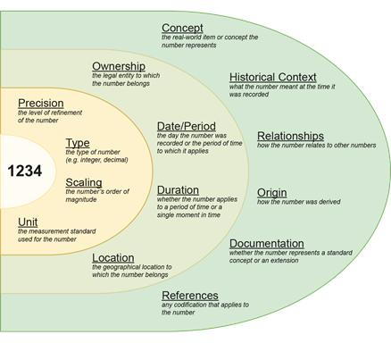
Figure 1-1. Possible types of information that could accompany a simple numeric data point
On the left side of Figure 1-1, there is a piece of primitive numeric data: "1234." On its own, that data point only relays information to a reader if that recipient is already familiar with its context and purpose. For the purposes of this discussion, that data point can be referred to as a fact. In layers, meaning can be added to the fact by defining precision, scaling, units, and other similar information. Contextual meaning can also be supplied through another layer containing information such as time and location.
Finally, the fact can be identified with a concept. Depending on the semantic component of the standard being used to represent the data, this conceptual information could be quite detailed and include a wealth
| 3 |
of additional meaning. As mentioned previously, structured data standards offer defined systems to represent data in this way, by adding layers of meaningful context that provide useful, pre-determined ways to interpret that data. XBRL is one such standard.
1.3.2 Background
At the turn of the century, an effort was undertaken to effectively represent business information for relaying and reporting data to government agencies. XBRL was born to address the idea of globally exchanging business information in a standard format. Beginning in 1998, numerous accountants and other business specialists, including the American Institute of Certified Public Accountants (AICPA), worked together to develop the early XBRL specifications and form what would eventually become XBRL International. The first XBRL specification was published in July 2000. The XBRL Specification, which has been stable since its release, was introduced in December 2003. Since then, XBRL has become widely used as a standard of transmitting structured business information.
1.3.3 Conveying Information
Companies report data to regulators and other entities using a multitude of syntactical formats, such as PDF, Excel, CSV, XML, JSON or through direct database entry into custom systems. Each of these formats was designed and selected with principal requirements in mind. For example, for PDF, or Portable Document Format, the name is self-explanatory; while the format may be employed for other purposes, it is primarily meant to exchange documents reliably between computers. The data in PDF documents is not always intended to be extracted as individual facts. Quite often the reporting or data exchange requirements in a situation dictate the data format and systems involved.
Unfortunately, many organizations and agencies today do not use a consistent data format, either across agencies or even within a single organization. A data consumer receiving information in different formats must then use different methods to extract and use it, which can further confound the lack of consistency. Furthermore, not all formats can be processed equally by computers. For example, a PDF document, though generally readable by people, is not guaranteed to contain textual information that can be parsed and interpreted by a computer. This makes using data in a PDF report and other formats difficult. The lack of structure among formats and systems tends to lead to an inability to gather, analyze, and collect information in a systemized manner. One could take two PDF reports and note and compare their data, but this task becomes significantly more arduous when there are hundreds or thousands of reports to compare. In addition, the way in which one reporting entity expresses a data point may not be consistent with how other entities represent the same information. How can a data consumer relate information presented in such disparate manners?
Corporate regulators have tackled this problem by introducing mandates requiring reporting entities to produce data using XBRL. Such mandates supply government officials and investors with well-structured and well-defined data that can be utilized in a variety of ways without the loss of meaning that is typically encountered when information is moved from one system to another.
XBRL offers a wealth of information about data without cluttering each data point with unnecessary properties by using taxonomies, which are standardized documents that describe concepts and their relationships. Taxonomies can contain information as simple as geographic locations or as complex as United States Generally Accepted Accounting Principles (US GAAP) financial standards. XBRL data can also employ multiple taxonomies to bridge data across multiple sectors or industries. XBRL's ability to "tag" unstructured data as well as traditional data makes it ideal for exchanging a wide variety of rich information between systems. When data is tagged in XBRL, the destination system knows to what the data applies, to what it relates, what time frame is being reported, the unit or language of numeric or textual data respectively, the type and precision of the data, and finally, what standard or rule is used to generate the data point. Also, because the XBRL format is self-describing, XBRL software can provide additional functionality, such as validation and mathematical comparisons, with little or no additional development when that format changes.
While XBRL got its start by being used for compliance-related purposes, it is an extremely versatile data standard with applications only limited by the imagination of taxonomy architects.
| 4 |
| 1.3.3.1 | XBRL and Data Formats |
The XBRL specification currently defines how data is captured and represented in a format originally based on XML. XML was selected as the starting point for XBRL because it is an excellent platform (with a wide array of tools and support) to carry complex data. XML is a "markup language" that uses elements to tag and identify data points so a computer can easily process the data. Further, XML inherently allows contextual and other data to be included in each of those tags through the use of attributes. Interestingly, because XBRL is a data standard that establishes precepts rather than format, the vehicle for communicating the data could be based on other data formats like JSON. The benefits and disadvantages of data formats other than XML are discussed in Section 5.4.3. The fact that XBRL has flexibility in its transmission format makes it even more versatile as a reporting standard.
Because XBRL taxonomies are XML-based but extend upon that foundation, changing information in a taxonomy does not necessitate the system reading and consuming the XBRL data to update to a new standard in order to understand its meaning. A system that reads XBRL can simply "plug in" new taxonomies as they become available without the need to change programmatically. This flexibility is unparalleled in a data exchange standard. When a real-world change would require a conceptual change to the meaning of data, a new version of the taxonomy can be created and released in response. Data consumers would have access to the new information in the same instant the taxonomy becomes available.
| 1.3.3.2 | Practical Applications and Success Stories |
The XBRL standard is widely used for reporting around the world. Implementations include public and private company reporting as well as government agency reporting. Numerous government programs to report business financial information in XBRL exist globally (Table 1-1). One of the largest implementations of XBRL as a data transport method involving regulation is periodic financial reporting to the United States Securities and Exchange Commission (SEC). In this case, commonly used accounting standards were incorporated into financial reporting taxonomies. Now, using those taxonomies, public companies report required financial information through the Electronic Data Gathering, Analysis, and Retrieval (EDGAR) System. With XBRL, financial data is publicly available for machine-driven analysis and consumption with very little delay or overhead once the reports are filed. Banks reporting to the Federal Deposit Insurance Corporation (FDIC) represent another industry where XBRL serves as a successful transmission structure. Here, the taxonomy is very tightly regulated and used by multiple banks to report regulatory information to the FDIC. These are just two examples of successful implementations of XBRL in the fields of governmental regulation.
XBRL provides a strong advantage for regulatory reporting, but its uses extend beyond the scope of this type disclosure. Perhaps one of the best business cases that can be made for XBRL is in collaborative settings. XBRL is an excellent solution for situations requiring a common interface among diverse businesses. An example is the development of the Work in Process (WIP) taxonomy for construction projects with long time horizons. Surety insurance companies that provide bonds for these projects require periodic reporting so they can judge whether the project will be completed on time and within budget. Bond agents, surety insurance companies, contractors, and their auditors are all involved in this collaborative setting. Developing an XBRL taxonomy in a situation like this allows the common information needs of the contractors, bond agents, and sureties to be standardized and processed without human intervention.
XBRL adds significant value in business cases where participants share a common set of information requirements among a subset of their business processing needs.
| 5 |
| Country | Application | Regulator | Apx. Reporting Entities | |
| United States | Primary financials and disclosures for all public companies | Securities and Exchange Commission (SEC) | 9,000 | |
| United States | Financial statements from all bank institutions | Financial Depository Insurance Corporation (FDIC) | 8,500 | |
| United Kingdom | Financial statements from all private companies; tax filings | Her Majesty's Revenues & Customs (HMRC) and Companies House | 2 million + | |
| Singapore | Financial statements from all private companies | ACRA (Accounting and Corporate Regulatory Authority) - BizFinx Filing system | 60,000 | |
| Spain | Financial statements from all private companies | Business Registrar, Banking Regulator, Securities Regulation, Accounting Oversight and State Federal Comptroller | 800,000+ | |
| Denmark | Financial statements from all private companies | Danish Business Authority/SKAT | 600,000 | |
| South Korea | Private and Listed Companies | Financial Supervisory Service (FSS) and Korea Exchange (KRX) | 15,000 | |
| Italy | Financial statements from all private companies | Infocamere/Unioncamere | 1 million | |
| Peru | Banking and Insurance Regulation | Superindencia de Banca y Seguros (SBS) and Superintendencia del Mercado del Valores (SMV) | 180 | |
| Iran | Listed Companies | Securities and Exchange Organization | 300+ | |
| Israel | Listed Companies | Israel Securities Authority | 600 | |
| Japan | Listed Companies | Japan Financial Services Agency (JFSA) | 9,000 | |
| Belgium | Financial statements from all private companies | National Bank of Belgium (Central Balance Sheet Office) | 400,000 | |
| Panama | Banking and insurance regulation | SBP (Superintendencia de Bancos de Panama - Superintendency of Banks | 76 | |
| Germany | Financial statements from all private companies | Bundensanzeiger | 1 million | |
| Chile | Banking and insurance regulation | Superintendencia de Valores y Seguros (SVS) | 270 | |
| Taiwan | Securities regulation | Taiwan Stock Exchange | 1500 | |
| Brazil | Public spending | National Treasury |
Federal government 26 States 5570 municipalities | |
| Colombia | Financial statements from businesses and financial institutions | Superintendencia de Sociedades; Superintendencia Financiera de Colombia | 1000+ | |
| World Bank | Sustainability Reporting | Internal Report | 1 | |
Table 1-1. Examples of successful XBRL implementations worldwide
| 6 |
XBRL taxonomies can serve large industries, projects, and data sets, but they can also prove useful in smaller settings. Departments within a company or university may need to report to each other in a structured, predictable manner, for example. XBRL is well suited for business and financial data, but it need not be limited to this application. Taxonomies can be constructed to reflect any type of information, and XBRL's strengths in structured reporting can benefit any situation where data integrity and semantic interpretability is essential. For an in-depth exploration of success in implementing XBRL as a data standard, see Chapter 10.
| 1.4 | What Is in this Document |
This document contains information that helps readers understand XBRL and its potential applications. It will walk readers through building an XBRL taxonomy. The handbook begins with information to help readers understand data modeling (and how data modeling translates to XBRL) and define the needs of the project. It continues by discussing the mechanics of building and implementing the taxonomy. Finally, this document explores governing the reporting system afterward. The manual builds a story that is the creation of an XBRL taxonomy from cover to cover, but sections or chapters can be skipped or read selectively without loss of continuity.
Chapter 1 - Introduction - A synopsis of the Taxonomy Development Handbook and XBRL.
Chapter 2 - An Introduction to XBRL - An overview of XBRL, its principles, and its conventions. Within this introduction is a general discussion of how XBRL is different than other data exchange standards such as basic XML, JSON or CSV.
Chapter 3 - Structuring Data - A discussion of methods for organizing data within an instance and the options for structuring dimensional data.
Chapter 4 - Assessing Overall Project Scope - A discussion of how stakeholders and use cases affect the data model.
Chapter 5 - Building a Transport Data Model - An in-depth review of taking a data model and applying stakeholder needs to create an XBRL transport model.
Chapter 6 - Validation - Sets forth various methods of validating XBRL data.
Chapter 7 - The Mechanics of Taxonomy Development - Detailed instructions on building a taxonomy in XML.
Chapter 8 - Documenting a Taxonomy - A discussion of how to document a taxonomy for use by preparers, developers, and information consumers.
Chapter 9 - Taxonomy Governance - Directions for the on-going maintenance of an implemented taxonomy.
Chapter 10 - Success Stories - A review of real-world implementations of XBRL.
Appendix A - XBRL and XML Supporting Information - A collection of technical information to aid in understanding and using XBRL.
Appendix B - Taxonomy Creation Checklist - A basic checklist of "to do" items for creating a taxonomy.
Appendix C - Taxonomy White Paper Outline and Template - Information to aid in the creation of a project "white paper" to describe the process of developing a taxonomy.
Appendix D - XBRL Overview Template - An example XBRL Overview section to be included in taxonomy documentation.
Appendix E - Taxonomy Guide Outline and Template - An outline for a consolidated Taxonomy Guide to be used by users of a taxonomy including preparers, consumers and software developers.
Appendix F - Preparer Guide Outline and Template - An outline for a separate Preparer Guide aimed to aid preparers in using the developed taxonomy.
| 7 |
Appendix G - Data Consumer Guide Outline and Template - An outline for a separate Data Consumer Guide aimed to demonstrate to data consumers how the information in the taxonomy can be applied to common use cases.
Appendix H - XBRL US Taxonomy Approval Metrics - Information as to how a taxonomy can be reviewed and approved by XBRL US.
Appendix I - Intellectual Property Status - An overview of Intellectual Property considerations and a sample IP statement.
Appendix J - Document Revision Status - A discussion of the status of the Taxonomy Development Handbook, including pertinent revisions.
Appendix K - Revisions and Public Comments - A discussion of public comments and the relevant revisions.
Glossary - A glossary of terms used for XBRL and within this document.
1.4.1 Supporting Specifications
This document is not a specification but rather a guide to aid in the development of well-formed taxonomies as well as setting forth best practices in development and management.
The following documentation was relied upon during the development of this guide. Readers are encouraged to both become familiar and comply with the following documents:
Extensible Business Reporting Language (XBRL) Specification - The Extensible Business Reporting Language Specification, from XBRL International (XII), contains the raw information regarding the implementation of XBRL in XML. It defines XML elements and attributes that can be used to express information used in the creation, exchange, and comparison tasks of business reporting. Note that the XBRL specification terminology is XML centric.
XBRL Open Information Model - The Open Information Model (OIM) describes methods of relaying XBRL information in a syntax-independent manner. It explores both JSON (JavaScript Object Notation) and CSV (Comma Separated Values) while revising some of the terminology to work in such environments. The OIM specification is supplied with companion examples and documents.
XBRL Dimensions Specification - The XBRL Dimensions Specification provides a generalized mechanism to define dimensional metadata and to reference it in XBRL instances. It defines an architecture such that any XBRL documents (instances and their Discoverable Taxonomy Sets) that conform to the specification may be parsed without error by any processor that is capable of correctly processing XBRL, even if those processors are unaware of modular extension.
XBRL Data Type Registry - The XBRL Data Type Registry (DTR) contains the data types defined by XBRL. These are in addition to standard XML data types. In addition, there are two provided specifications, the Process Specification and Structure Specification, which further describe the structure of the DTR and the steps through which a new data type can be added to it.
XBRL Precision, Decimals and Units Specification - The XBRL Precision, Decimals and Units Specification details more information relating to the numerical precision, decimal expression, and units of XBRL facts (the @precision and @decimals fact attributes). This document extends the information provided in the XBRL Specification and also offers more examples of conventions used in practice.
XBRL Formula Specification - The XBRL Formula Specification describes methods of providing additional validation that is not provided by the base XBRL Specification through XBRL formulas. The specification explains methods of using formulas and other approaches to test rigorously the data relationships within an instance document.
XBRL Units Registry - Similar to the XBRL Data Types Registry, the XBRL Units Registry (UTR) defines the XBRL-allowable units for numeric facts. There is further documentation concerning the structure and syntax of the registry as well as information on the process by which new units can be added.
| 8 |
XBRL Transformation Registry- The XBRL Transformation Registry contains the rules and metrics by which transformations in Inline XBRL are performed. These rules describe how descriptive text in Inline XBRL documents can be represented as XBRL data types.
1.4.2 Supporting Documents
Other documents important to taxonomy development include:
XBRL US Style Guide - The XBRL US Style Guide aids in maintaining consistency in all aspects of XBRL, including style, as a critical component to the successful deployment of the XBRL taxonomies. The guide lays out goals to: (a) provide a basis for the consistent development and maintenance of taxonomies; (b) increase the efficiency and effectiveness of taxonomies; (c) improve taxonomy extensibility for end users and taxonomy developers; (d) maximize comparability of data, reduce the ambiguity of data, and promote the normalization of data; (e) increase compatibility of taxonomies; (f) improve the reliability and consistency of the concepts, labels, and documentation; and (g) reduce the cost of taxonomy implementation.
XBRL US Taxonomy Approval Metrics - The Taxonomy Approval Metrics (TAM) document establishes standards for XBRL taxonomy review and approval by the XBRL US Domain Steering Committee (DSC) with the following goals: (a) to enable a meaningful exchange of information between different business systems; (b) to avoid confusion and difficulties in initial setup of systems for the preparation and consumption of XBRL-based information; (c) to provide taxonomy developers with a clear understanding of the expectations of the requirements of the XBRL US Domain Steering Committee (DSC) Taxonomy Approval Process.
| 1.4.3 | Supporting Software and Tools |
There are various, freely available software packages and tools that can aid in taxonomy development and XBRL instance document preparation or data extraction. They are as follows:
Arelle - Arelle is an open source platform for XBRL that can be used as a desktop application and integrated with other applications and languages through its web service. Numerous plugins exist to allow interfacing with Excel, Java, Oracle, RSS feeds, individual XBRL documents, and SQL and other databases. Arelle is covered in more detail in Chapter 6 as a means visualize and facilitate taxonomy development.
XBRL API - Developed by XBRL US, the XBRL API (Application Program Interface) aids users in accessing timely, structured XBRL data with high resolution. The standardized API allows developers and data utilities to employ a single interface to gather data from an XBRL repository/instance. Developers can use the API to connect a custom database to a software front end. The API aids in automatically populating that database and permitting users to gather it for analysis.
More information about the XBRL API is available on XBRL US' website and in the API documentation (http://files.xbrl.us/documents/XBRL-API-V1.4.pdf).
Spreadsheet/Word-processing Applications - There are numerous free software packages that offer spreadsheet and word-processing capabilities. These basic utilities can aid in drafting project plans and documentation as well as creating the taxonomy itself. In conjunction with Arelle, spreadsheets can be used to lay out the elements of the taxonomy in a human-readable, well organized manner. Free applications are offered at:
| • | Google Docs (http://docs.google.com/) |
| • | LibreOffice (http://www.libreoffice.org/) |
| • | Microsoft Office Online (http://www.office.com/) |
Note that XBRL US does not endorse any of these products, and some may require valid accounts with the provider to use. In addition, some functionality may require purchase. XBRL US has a list of some XBRL software vendors on its website at https://xbrl.us/.
| 9 |
(this page intentionally left blank)
| 10 |
| 2 | An Introduction to XBRL |
| 2.1 | eXtensible Business Reporting Language |
2.1.1 Why XBRL
XBRL was developed to automate the process of sharing information. The information exchange could occur within an organization or with external groups, such as other entities in an industry, regulators, markets, and non-governmental organizations. Conceptual requirements for XBRL development included creating a system that is extensible, definable, and one that allows for comparisons among its data points. XBRL also had to possess the ability to hold or transport a wide variety of data, support standardized data representations, and be software agnostic such that the standards can be used through many different software applications.
XBRL principally serves as a method that simultaneously transmits machine-readable data with information about how to interpret and contextualize that data. This is in contrast to other data transmission methods, where a single point of data is often bereft of further information to enhance or elucidate it. Using XBRL as a data structure ensures properly formatted points of data will be interpreted by the receiving system with all the meaning required to interpret that data, regardless of the originating system, time of interpretation, or the method of transmission. In data architecture, this is referred to as semantic interoperability. Semantic interoperability is achieved through adding information that links each data element to a well-defined, shared vocabulary among the systems involved in creating, transmitting, storing, and using that data. This allows for an information package that is self-describing and therefore independent of its originating information system and capable of being read by any destination system. Underlying semantic interoperability is syntactic interoperability, which is the syntax by which two or more systems communicate with each other, coupled with a defined ontology that must be able to adapt to new and changing terms. XBRL provides the foundation for these two important facets of relaying data: a syntactical specification relying on common standards to convey information and a means of providing an ontology (an XBRL taxonomy) to identify the meaning of that information within a well-defined semantic framework (Figure 2-1).
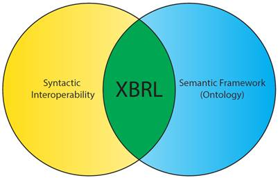
Figure 2-1. XML as the syntactic component of XBRL and the XBRL taxonomy as a semantic framework
There are many standards for formatting, transmitting, storing, and presenting information, and each is designed for a specific purpose. Unlike many other data standards, XBRL allows for the simultaneous conveyance of structure and meaning, and its ontology can be adapted to suit a broad range of purposes and industries. This handbook examines how XBRL can become an integral part of a data architecture solution.
| 11 |
| 2.1.2 | The Transport Data Model |
The task of an XBRL taxonomy developer is to take a semantic data model that represents business or other data and build a transport model to proliferate that data to data consumers. A transport model serves as an organizational structure when moving data from a source to a consumer (Figure 2-2). XBRL is an example of a transport model. Transport models can be complex and dynamic, such as XBRL, or they can be simple. In a sense, the act of filling out a paper or electronic form that contains fields for sets of information creates a transport model. The form takes data from a preparer in an organized way and then allows consumers to use that data as necessary. Of course, there can be very obvious limitations to a form-based transport model, such as the fact that the form may not be machine-readable, but this illustrates the concept that the model is the format that allows data to move from a source to a consumer in a meaningful way.
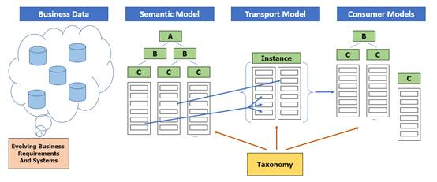
Figure 2-2. An XBRL taxonomy as a transport data model
In a real-world environment, a reporting entity may use a variety of applications to manage and store business data. Such data can contain customer/client information, products, inventory, research, accounting, and modeling information. From an information technology standpoint, data points should fit into an ideal semantic model, where the dimensionality of that model provides a self-describing data set even though segments may exist in separate systems on separate platforms. In most cases, not all information from the semantic model is placed in the transport model for a variety of reasons ranging from confidentiality, depth or history of information, or the data simply not being required. In addition, some data points in the transport model may need to be created or calculated from points within the semantic model. As a result, the data from the semantic model must be filtered or prepared.
Transport models can also be thought of as a link in an information supply chain. The supply chain refers to the systems of organizations, people, resources, and processes in moving data from a source (a business or semantic data model) to a consumer. Supply chains can be very complicated, involving multiple parties and models of information, or they can be simple. It is also important to note that in Figure 2-2, the business data and semantic model will vary from reporting entity to reporting entity, while the transport model will remain the same for all reporting entities. Also, the transport model may or may not match either the source business model or the consumer model. The challenge for developers is to create a transport model that is closely aligned with all the stakeholder requirements and is still easy to understand and expand to accommodate future requirements.
XBRL provides the format of the transport model, and an XBRL report contains the information that is being exchanged among systems using that transport model. The defining and unifying force behind the structured XBRL transport model is the taxonomy. With a well-defined taxonomy, any consumer of data within an XBRL report should be able to properly read and interpret that data.
| 12 |
The right side of Figure 2-2 is the consumer model. Consumers may take various forms and can have widely varying requirements. Each will have their own specific models and may combine data from other sources to support their end work product. Consumers represent important stakeholders in the development process, and their needs concerning the way in which the reported data is organized should be considered.
Note that Figure 2-2 is silent on the actual mechanics of transmitting and storing data. In many architectures, there is a reporting system that receives, validates, accepts, stores, and potentially distributes data. In some cases, the reporting system may be a secure, private transaction, while in others, such as the SEC's EDGAR system, the data is private until accepted by a regulatory system and then stored in a publicly available archive. Reporting systems may take the form of a single entity to another single entity transmission, or they may be as large and complex as a multiple entity repository.
Many details of the reporting system (which taxonomy developers may still be tasked with designing) are beyond the scope of this document. However, there are aspects of the reporting system that can affect the transport model design process. The nature of the chosen data transport format (these formats are introduced in the next section) can influence decisions regarding how the taxonomy is structured. Importantly, whether a reporting system is considered open or closed can have profound design ramifications on the taxonomy. In an open reporting system, preparers are allowed to extend the XBRL taxonomy to include XBRL constructs from other taxonomies or of their own design. This allows for entity-specific reporting, where preparers can create or use their own methods of representing their data. In a closed reporting system, the XBRL taxonomy cannot be extended by preparers, which thus requires them to use the taxonomy as it is released by the taxonomy developers. While this is more limiting in terms of entity-specific data, it enhances the ease of analysis and usability of XBRL reports, as reports from different preparers must be structured in the exact same manner. Allowing extensibility in a reporting system is a complex decision that balances comparability (the extent to which one or more XBRL reports can be directly compared) with customizability. It is also not an "all or none" solution; there are many cases where developers allow very specific extensibility but otherwise structure a taxonomy strictly. Extensibility and its implications are discussed throughout this handbook.
| 2.1.2.1 | XBRL as a Transport Model |
XBRL provides a standard set of rules that define how data (which can be a broad range of types, including monetary, integer, text, and Boolean) can be transported. As mentioned previously, an XBRL report (also called an instance document) serves as the transmission or storage vehicle for the data reported. An XBRL taxonomy dictates how the data in that report should be organized. The taxonomy can only be built in XML, but the taxonomy can be used to generate XBRL instance documents in XML, JSON, HTML (Inline XBRL), or CSV format. XBRL International, which directs the ongoing development of the XBRL Specification, has created XBRL versions of these formats which are capable of intrinsically carrying semantic information along with the reported values.
The four format options for an XBRL instance document are as follows:
XBRL as XML - In this mode, instance data is stored in XML format as dictated by the XBRL Specification. XML provides for the construction of custom schema to express a wide range of data types using elements to delineate and "markup" (or tag, as it colloquially called) data. XBRL builds on XML by adding relationships beyond simple parent-child inheritance as well as additional contextual information. Additional linkbases can be provided for definitions, references, labels, calculations, and presentations.
Inline XBRL - Inline XBRL (iXBRL) allows the instance data to be embedded in an XHTML document. This is iXBRL's principal advantage, that machine-readable data is located right within the human-readable report. Schema and linkbase requirements are the same as with XML.
JSON - JSON, or JavaScript Object Notation, is a text format that provides for the expression of complex structured data. A number of programming languages will natively create and read JSON. For XBRL, the Open Information Model, which is a syntax-independent model of XBRL data developed by XBRL International, provides a specification for storing instance information in an XBRL-JSON report. JSON only allows for the transport of instance information. If extensions are
| 13 |
allowed in the instance document and JSON is used, a schema (extension taxonomy) must be created in XML to accompany the JSON file.
CSV - CSV (Comma Separated Values or comma delimited) is another option for transport. However, given the limited structure of CSV, files must be formatted in a specific manner with companion information to connect key XBRL structural data. CSV can be a good option for reporting highly structured information where only the facts change from report to report. The Open Information Model also provides a specification for storing instance information in an XBRL-CSV report. As with JSON, if extensions are needed, a schema (extension taxonomy) must be created in XML to accompany the CSV file.
The format used for the instance document is up to the preparer of the information and/or the reporting system. At this time, other data formats do not have the structure to carry semantic information, without which the reported values cannot be automatically understood and consumed.
2.1.3 Bringing Meaning to Data Points
Information can be gathered and organized in text, tables, named variables, arrays, and through other methods. However, with many of these methods, each reported value lacks additional identifying characteristics. In addition, depending on the language and platform, there may be varying data types or naming conventions. This can all lead to confusing comparisons among different data sets and to difficulties in transmitting the information from system to system.
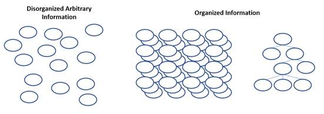
Figure 2-3. Disorganized versus organized data
The goal of XBRL is to transport data that is arranged in a meaningful way. Data can be organized in an appropriate pattern depending on the application, as tables, cubes, or perhaps in a hierarchical structure, for example (Figure 2-3). Each data point in an originating semantic data model may have a relationship (sometimes called an arc) with other data points that is demonstrative of its semantic meaning. XBRL adds depth to data points by adding XBRL dimensions to them. XBRL dimensions define the data's semantic meaning, its periodicity, its reporting entity, and other descriptive information. Taken together, a data set's dimensions represent meaningful semantic information and help consumers understand not only what each individual point means but how all the points within the set relate to each other.
Beyond the representation of structured data, XBRL also offers several important features. First, data can be represented in a human-readable form either as a structured presentation or as part of an HTML document text as Inline XBRL or iXBRL. Second, additional information can be conveyed both for specific data points and for relationships. For example, a data point can convey information about the type of data, its precision, or it can have a textual note attached. In addition, XBRL is self-describing, meaning the taxonomy itself instructs receiving systems how to read and interpret the data structure. There is no need for additional libraries, documents, or formats. XBRL is also extensible, which allows both developers to build upon pre-existing taxonomies and preparers to create their own XBRL constructs to reflect their specific reporting circumstances (if permitted by developers). Finally, XBRL has multiple methods of enforcing and encouraging data integrity and validation. These topics will be addressed throughout this handbook to allow developers to leverage XBRL's many strengths in their reporting solutions.
| 14 |
| 2.2 | How Does XBRL Represent Data? |
2.2.1 Overview
This section focuses on the basic structure of XBRL and how its constructs represent data points and their semantic dimensionality. Consider a simple report of monthly expenses, which may appear in a spreadsheet as follows:
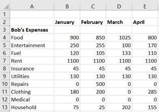
Figure 2-4. A simple expense example
On the left of Figure 2-4, there are categories of expenses (Column A, conventionally considered as line items). Expense categories include Food, Entertainment, Fuel, Rent, and so forth. The types of expenses are reported by the month in which the expense occurred (Columns B-E). The data points appear at the intersection of the category and the month. By themselves, the values of these values have very little meaning, but when taken in relation to the row and column orientation, each data point gains semantic context. This is a very typical, simple, tabular representation of data, where the data points are defined by a conceptual idea and a contextual timeframe to which that value pertains. In XBRL, this combination of a data point and a set of XBRL dimensions pertaining to that data point is called a fact.
2.2.2 The Fact (An Intersection of Dimensions and Data)
In XBRL, a fact is the unique intersection of a set of XBRL dimensions with a data point. Figure 2-5 illustrates the basic structure of a fact. Arbitrary information, such as a number or a name or even a short section of text, has no semantic or contextual information in and of itself. Once XBRL dimensions, which add semantic information, intersect with that data point, it now becomes an XBRL fact.
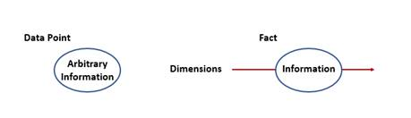
Figure 2-5. A data point versus an XBRL fact
The data value can be of almost any form. For example, if the datum pertains to the number of widgets produced by a widget manufacturing company, it would be a numeric value. If the datum is a narrative description of widget production challenges, it would be textual.
In the simple expense example (Figure 2-4), the expense for Clothing in the context of January, which has a value of 180, would be a XBRL fact. There are also implicit dimensions, some of which appear in Figure 2-6.
| 15 |
These are monetary values, so the units could be US Dollars. These are also Bob's expenses, so the reporting entity for that data point can be identified. All of these dimensions intersect at this fact, and the combination of the concept and the dimensions help define and dictate the nature of the information stored at that intersection. Facts must have a concept core dimension, which provides the semantic meaning of the fact. In this example, ClothingExpenses is the concept core dimension.
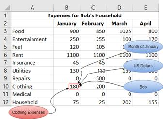
Figure 2-6. The expense example with an illustrated XBRL fact
Figure 2-7 illustrates the intersection of the concept core dimension and another XBRL dimension. Again, relating to the expense example, the dimension is the period dimension January and the concept core dimension is ClothingExpenses.
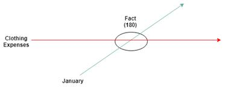
Figure 2-7. XBRL fact intersection with dimensions
Multiple concepts along the concept dimension can intersect with the same secondary dimension (as shown in Figure 2-8). Looking back to the expense example, including multiple line item concepts adds a simple level of dimensionality to the data. A set of concepts (such as FoodExpenses, RentExpenses,
| 16 |
ClothingExpenses, and UtilitiesExpenses) that intersect with a single period dimension (January) could be visualized as follows:
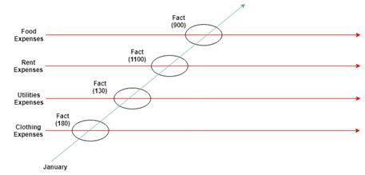
Figure 2-8. Multiple facts created by multiple concepts intersecting with one XBRL dimension
Again, this is analogous to line items on a table or spreadsheet with the data dimensionality expressed as the column heading. When there are multiple reporting periods (for example, for the first two months of expenses), multiple XBRL dimensions are defined, such as in Figure 2-9.
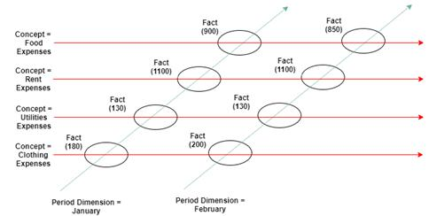
Figure 2-9. Multiple concepts and XBRL dimensions intersecting to form multiple facts
In this case, the concepts would be the line items in Figure 2-4 (such as Food Expenses, Rent Expenses, and Utilities Expenses). The periods would be represented by the columns (January, February, and so forth). Again, each place where a concept dimension and period dimension intersect is a fact (in this case, a monetary amount located in the cell), and the combination of the contextual information provided by the concept and other dimensions (the period) create the XBRL dimensions of that fact.
2.2.3 Dimensions
As mentioned previously, an XBRL dimension is information that serves to uniquely identify a fact (Figure 2-5). A dimension may be either a core dimension (which includes the concept core dimension, period core dimension, reporting entity core dimension, and unit core dimension) or a taxonomy-defined dimension. These are discussed in greater detail later in this chapter.
Each XBRL dimension adds unique contextual information to a data point. The concept core dimension confers basic semantic meaning to a data point, such as FoodExpenses or FuelExpenses as shown in the
| 17 |
earlier examples. Within an instance, similar dimensions intersect facts to form tables, cubes, or more complex structures. Each intersecting fact is always unique.
There may also be, and often are, multiple dimensions associated with one fact. For example, in the expense data set, the columns represent period dimensions, and, as stated earlier, the rows could be considered concept core dimensions. Together, these are the dimensions for any given fact.
Facts can have one or more of the following dimensions: the concept core dimension, the entity core dimension, the period core dimension, the unit core dimension, the language core dimension, the note ID core dimension, and taxonomy-defined dimensions.
| 2.2.3.1 | Concept Core Dimension |
Every fact must have a concept core dimension as defined in Section 2.2.5. The concept core dimension provides semantic meaning for a fact. It also defines certain properties about the facts associated with it, including a fact's data type. More information about data types can be found in Section 2.3.1.
| 2.2.3.2 | Entity Core Dimension |
The entity core dimension defines the entity for which the fact is being reported. The entity should be reported using a common identifier that is unique to the entity and unchanging. For example, a Legal Entity Identifier (LEI), IRS number, or Committee on Uniform Securities Identification Procedures (CUSIP) number is a static identifier that can be linked to a specific entity in a financial report. Likewise, a social security number uniquely identifies a person working in the United States and does not change with time. Developers should avoid using identifiers that change or are ambiguous. Also, since reports may be public, using identifiers that contain private information, such as social security numbers, may not be advisable.
| 2.2.3.3 | Period Core Dimension |
A period core dimension defines the period of time relevant to the fact. The period can be one of two types: an instant or a duration. Consider again the expense report example. Total expenses for the month are considered a duration because the data is measured from the start of the month to the end of the month. An instant period represents a measurement that occurs at a specific point in time. For example, the money in a bank account on any given day is an instant measure, the money available at that moment.
The periodicity of the data should be of a resolution that makes sense for the data itself. Again, for an expense report, a monthly period dimension is logical. Long-term growth of a market fund, however, might dictate using a period dimension to represent a year or even longer. Conversely, rainfall totals could be represented in days. Instant period core dimensions are expressed using a single date. Duration period dimensions are expressed using a starting date and an ending date which marks the beginning and end of the period, respectively.
Like the concept core dimension, the period core dimension is required for all facts. If the data point describes information that does not change with time, such as genetic data, birth dates, or a constant such as pi, a period can be defined as "forever." The period core dimension must agree with the properties of the concept core dimension. If the concept's period type property is defined as "instant," only an instant period core dimension can intersect with facts that have that concept. Likewise, if the concept's period type is "duration," only a duration period core dimension can intersect with those facts. For more information on concept properties, see Section 2.2.6.2.
| 2.2.3.4 | Unit Core Dimension |
The unit core dimension indicates the unit of measurement of a fact. A unit of measurement is a magnitude of a quantity, defined and adopted by convention or by law. An example unit would be "USD" (United States Dollars) for monetary values or "meters" for length. The units are expressed as a list of numerator units with an optional list of denominator units. This allows for compound units, such as "dollars/share" or "miles/hour". It also allows for units that are an algebraic square, such as meters2, by specifying multiple of the unit in the numerator.
| 18 |
The unit core dimension is dictated by the data type property of the concept core dimension. For example, "kilowatt-hour" or "megawatt-hour" would be an appropriate unit for facts with a concept named EnergyProduced, which expresses the amount of total electricity created by a power plant. The unit core dimension is only applicable to concept core dimensions that have numeric data types.
XBRL gives the flexibility to express facts in differing units on the same plane as an intersecting concept and unit dimension. The unit adds meaning to a numeric value. For example, "3" is a scalar value with no intrinsic meaning. When associated with a concept, the value can be known to be monetary. However, the specific type of monetary unit is still unclear. Adding a unit "USD" would indicate US dollars while "CAD" would be Canadian dollars. More than one unit can be expressed, allowing for both USD and CAD values for the same data point with an added unit differentiation.
A set of standard units is defined in the XBRL Units Registry. The XBRL Units Registry has hundreds of defined units to qualify data ranging from currency to measurements, such as meters, volts, and hectares (see XBRL Units Registry).
When expressing a numeric fact, it must contain a unit reference (see XBRL 2.1, §4.6.2 The @unitRef attribute). Facts with a data type of "string" will have no associated unit reference.
| 2.2.3.5 | Language Core Dimension |
The language core dimension specifies the language in which a non-numeric fact is reported. Language values must be represented with a valid BCP 47 language code (for more information, see IETF BCP 47). Language core dimensions should only be present on concept core dimensions that allow textual information and are optional in this case.
If data is expected to be used in a multi-language environment, it is highly recommended that the language core dimension be employed. Note that for reports that will be consumed in a primarily English-speaking environment (or an environment where only one language is expected), the language core dimension can generally be omitted.
| 2.2.3.6 | Note Core ID Dimension |
The note core ID dimension links a footnote or set of footnotes to one or more facts. More information about the note core ID dimension and XBRL footnotes is described in Section 2.2.9.
| 2.2.3.7 | Taxonomy-defined Dimensions |
A taxonomy-defined dimension is a concept that exists for the purpose of grouping facts that should be interpreted in a similar way. Taxonomy-defined dimensions will be explored in greater detail in later sections. For now, consider taxonomy-defined dimensions to be concepts that do not directly define a fact but rather intersect with a fact to add further contextual or semantic information beyond what is added by the core dimensions already discussed.
Looking back at the expense example, XBRL dimensions must be defined for each fact to be represented in XBRL. For now, a simplistic approach that makes use of the concepts previously discussed can be beneficial in understanding how to define and use XBRL dimensions. Because of the type the data in the expense report, some of the XBRL dimensions will be the same for all facts.
| 19 |
The core dimensions as relevant to the expense example used are listed in Table 2-1:
| Core Dimension | Description | Expense Example | ||
| Entity | The entity reporting this value (the entity core dimension). Normally, this is some sort of unique value, such as an LEI or tax number. | Bob's Household | ||
| Unit |
The unit for a numeric value (the unit core dimension). The unit employed must be part of the XBRL Units Registry (UTR) or otherwise defined. For non-numeric facts, such as a narrative description, the unit core dimension is not used. Depending on the application, a numeric value can be represented by multiple facts, each with a specific unit. Alternatively, an entity may disclose data in another currency or measurement. |
(not shown) USD | ||
| Period | Defines the time domain for the fact (the period core dimension). This time domain represents the period of time to which a fact is applicable. These are represented in ISO-8601 format. |
January 2019-01-31 | ||
| Language | The language in which a fact is reported (the language core dimension). This dimension can be defined for non-numeric facts. Like units, the narrative can be represented in multiple facts using different languages. Language types are represented using the BCP 47 Codes. | [n/a] |
Table 2-1. XBRL dimensions and their relation to the expense example (Figure 2-6)
The nature of the data dictates how these XBRL dimensions apply. For instance, in the previous example, expenses are monetary values measured in United States Dollars, which suggests using a unit core dimension of "USD." The entity in the example is "Bob's Household" (which is not an ideal identifier but is sufficient for a simple example). The language core dimension does not apply in this case because the data contains no textual facts. Otherwise, these dimensions are applicable for all the data in the expenses table.
The period core dimension, however, changes from column to column. For the first column, the period dimension represents the month of January. The next dimension represents February and so on. With all these dimensions defined, the concepts and the core dimensions, every cell of data in the table can be represented as an XBRL fact.
There are multiple ways to organize data and relationships. In addition, there are cases where it is necessary to disaggregate similar data. For example, Bob may want to break his expenses down by his dependents. The above core dimensions will remain the same, but now the fact can be qualified or dimensionalized further by additional data relationships. This is explored in Section 2.2.8. For now, the XBRL core dimensions will be explored as a means to add specified semantic meaning to data.
| 20 |
| 2.2.5 | Concepts |
A concept is a semantic identifier as defined by the taxonomy. Concepts are the basic building blocks of a taxonomy, and all the data dimensions within that taxonomy refer to relationships between or among concepts. The term concept core dimension refers only to those concepts that define the semantic idea that a data value is meant to represent. Other types of concepts may be used as organizational containers for concept core dimensions that are semantically related. These are called grouping concepts, and they define structures within a taxonomy, such as an XBRL table structure or a domain of possible values. Still other concepts may be organized along a taxonomy-defined dimension to specify axes along which facts vary.
Because concepts are the basic unit of semantic and structural information in XBRL, concepts will have a relational position with respect to other concepts within the taxonomy. Combining concept core dimensions with grouping concepts and the concepts that make up taxonomy-defined dimensions can be used to create complex structures with self-describing semantic meaning. For example, a fact may have a concept core dimension of SalesRevenue, and this could intersect with the taxonomy-defined dimension Region, which may have further differentiating concept members such as EasternRegion and WesternRegion. This may all be contained by a concept defining a table of SalesByRegion.
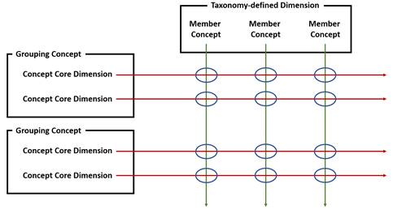
Figure 2-10. Types of concepts
As illustrated in Figure 2-10, concept core dimensions define a fact value. Grouping concepts are used to group concepts that are semantically related. Taxonomy-defined dimensions organize concepts to define additional dimensionality. Taxonomy-defined dimensions may or may not have member concepts. Again, more information on taxonomy-defined dimensions and how they add dimensionality to XBRL facts is discussed in Sections 2.2.8 and Chapter 3.
Concepts have properties that define their usage and the types of data they can describe, which is discussed in greater detail in the next section. The properties of a concept also dictate the other types of XBRL dimensions that can intersect with the data.
| 2.2.6 | Concept Details |
| 2.2.6.1 | Overview |
Concept identifiers define facts at the most basic semantic level. How is the semantic meaning behind these numeric data points implemented in XBRL?
A deeper examination of the expense example yields some answers. Consider again Figure 2-4, where categories of expenses are rows (line items) and columns represent the months in which those expenses occurred. Because this example is so simple, the table line items (Column A) naturally lend themselves to becoming the concept core dimensions. Each of these concepts, such as FoodExpenses,
| 21 |
EntertainmentExpenses, etc., is linked to a numeric value in Columns B-E, producing the beginnings of an XBRL fact. Defining concepts not only defines the discrete, semantic identifiers in the taxonomy, it also allows the properties of the concepts to add further qualitative information to the data points.
| 2.2.6.2 | Concept Properties |
In addition to defining the semantic information associated with a fact, concepts themselves have properties. These properties can be thought of as ways to characterize the data to which the concept can be linked. This can include the type of data (numeric, textual), whether the data can be nil or undefined, or whether the concept itself can be associated with data at all.
In the example presented above, these concepts are all expenses, so they can have the same properties. Again, this is a simplistic approach; for real data, the properties of the concepts should vary with the information they are meant to represent. For now, a simplistic view can help to illustrate the basic types of properties concepts can possess and how they map onto a real-world data set. Table 2-2 defines the possible properties of a concept and how they are represented in the expense example.
| Properties | Description | Expense Example | ||||
| Name | Name of the concept. | FoodExpense, RentExpense, etc. | ||||
| Period Type | The basic intersecting period core dimension that can be instant or duration. Period dimensions are discussed in Section 2.2.3.3. | Duration | ||||
| Balance Type | An optional qualifying property that can be debit or credit for accounting purposes. | Debit | ||||
| Nillable | An optional property indicating an intersecting fact can be nil or reported with no value regardless of its data type. Note that this is not the same as having a value of 0. | False | ||||
| Abstract | A property indicating the concept is specifically intended for organizational purposes within the taxonomy. | False | ||||
| Data Type | The type of data the concept can represent. Data types are formally defined and discussed in Section 2.3.1. | Monetary | ||||
| Substitution Group | A property categorizing the concept as one of a number of types, such as item, dimension, or enumeration, among others. | Item | ||||
Table 2-2. Concept properties and their relation to the expense example (Figure 2-6)
Again, the nature of the data leads to these property choices. For example, expenses are always monetary values expressed for a month. Also, because these expenses should always have a value, they are not nillable.
The values of these properties for each concept are stored in the taxonomy itself. The taxonomy schema is defined using the XBRL Specification and is in XML format. Example 2-1 is an excerpt from an XBRL taxonomy schema showing the concept definition of one of the example concepts:
| 22 |
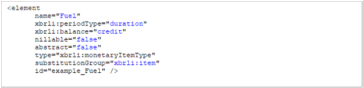
Example 2-1. An example XBRL concept definition
The element tag describes the XBRL concept using XML syntax. The XML syntax is the same syntax as XML schema documents. For more information on XML Schema, see Appendix A. The attributes of the XML element represent the properties of the concept as described above. Attributes with the "xbrli" namespace are defined in the XBRL Instance Schema. For more information on the XBRL Instance Schema, see Appendix A.
| 2.2.6.3 | Concept Naming |
As one might imagine, a taxonomy with many concepts demands good organization and consistent concept names. The XBRL US Style Guide defines naming methods and constraints to avoid problems in building and maintaining a taxonomy. To be in agreement with that document and reflect consistency, concept names in this Handbook will use upper camel case naming (FoodExpense rather than foodExpense).
The amount of descriptive text to include in a concept name can also be tricky to determine. As an example, how should a concept used for facts expressing maximum electrical component heat dissipation be named? The following are all possibilities:
ElectricalComponentHeatDissipation
ComponentHeatDissipation
MaximumElectricalComponentHeatDissipation
MaximumElectricalComponentHeatDissipationInWatts
TotalMaximumElectricalComponentHeatDissipationInWatts
There are a lot of options, but certain rules should be kept in mind when creating concept names. For example, adding "watts" to the name is considered bad practice because "watts" is a unit (which should be dictated by the unit core dimension). Concept names should contain a noun. If there is ambiguity surrounding the use of a noun in a concept name, adjectives should be added to clearly indicate the type of noun. Generally, concept names should best reflect the semantic meaning of the concept while being concise, avoiding excessive descriptive language, and following commonly used terminology in the industry. For example, the concept name PropertyPlantAndEquipmentNet is concise and appropriately descriptive as opposed to PropertyPlantAndAccumulatedDepreciation. InventoryAllocated is preferable to InvestoryForUseInWorkOrdersAndForUseInSalesOrder. Concept names should also avoid referencing other concept names in determining their meaning.
Prior to defining concept names, the XBRL US Style Guide should be reviewed.
| 2.2.6.4 | Concept Labels |
XBRL defines an adjunct to concepts called labels or label roles. Given a specific usage, labels and label roles provide further information and documentation associated with a concept. For example, the default label role for the concept described in the previous section might be "Maximum continuous heat dissipation in a normal operating environment," while the documentation label role might specify more detailed information.
| 23 |
Label roles can also be used to aid preparers in understanding how a concept should be used or not used. For example, if a total role is not defined, preparers can assume that the concept should not be used as a total.
2.2.7 Fact Properties
Facts inherit properties from their concept core dimension. These include the data type and whether or not the fact is nillable. As said in the previous section, these properties are determined through the concept core dimension, rather than the fact itself. However, facts do possess properties regarding precision and scaling that are specific to the fact. For instance, the concept EmployeeTurnoverRate may have a data type requiring a decimal number, and this would apply to every fact that is associated with this concept. However, a fact with this concept can have a decimals property specified that would indicate the precision of that particular fact and only that fact.
The names and types of properties that can be specified on a fact-by-fact basis change, depending on the transport format. Consult the specification for the specific transport format for more information.
| 2.2.8 | Adding Taxonomy-defined Dimensions |
As stated above, there are many XBRL dimensions to organize facts. Thus far, dimensions that are defined by the XBRL Specification have been the focus of this chapter. These core dimensions, such as the concept core dimension and period core dimension, can provide useful additional meaning and structure to data. However, often there will be a need to organize facts by a custom structure. There are also times when a simple data model with one or two data dimensions cannot accurately represent the complexity of the relationships among the data points. In these cases, adding further dimensionality is a key step to building an XBRL data model. For example, a retail chain may want to report its profits by both region and time, or an agricultural industry could need to indicate crop growth by both crop type and the types of fertilizers used. In XBRL, this can be accomplished by adding layers of custom dimensionality through taxonomy-defined dimensions.
A taxonomy-defined dimension is a grouping of concepts that is used to add organizational structure to facts. These dimensional concepts should not be directly associated with a data point but rather are employed to indicate additional contextual information beyond the simple semantic identifier or what is provided through any of the other core dimensions. Expanding the expense example by attributing the monthly expenses to two people in the same household creates a level of complexity that cannot be easily represented with only concepts. Previously, there were only two dimensions: expenses (as rows) and months (as columns). If the data set tracked the expenses of Bob's children, Jared and Allyson, more columns would be added as follows:
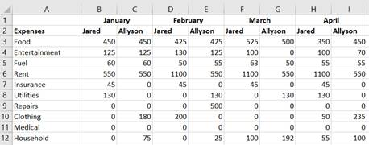
Figure 2-11. Multiple facts and dimensions in an expense example
Within Figure 2-11, two "person" dimensions are expressed in the data, Jared and Allyson, for each month, making a total of three dimensions for the resulting data model: concepts (line items or rows), periods (columns), and person (subcolumns). How can the XBRL taxonomy be adapted to show this added layer of dimensionality? One could add additional concepts as part of the concept core dimension, such as
| 24 |
FoodExpensesForJared and FoodExpensesForAllyson, but this could quickly become cumbersome and tedious once the data set becomes sufficiently large and complex.
A taxonomy-defined dimension provides an answer to this situation by disaggregating Bob's Household Expenses. This new XBRL dimension is defined by a concept that represents the nature of an axis in the data set. In the example, a concept named Person would be added to the taxonomy. Good practice would also dictate that a suffix is appended to the name of this concept to indicate that this is a taxonomy-defined dimension and should not itself be used as a concept core dimension. In other words, this new concept should not be used directly with any one fact. For more information on suffixes, see the XBRL Style Guide. This would make the concept name PersonAxis.
Now that there is a concept to describe the taxonomy-defined dimension, the components, or members, of this dimension must be described. In the example, this would be Jared and Allyson, the two people who belong to the reporting entity, "Bob's Household." Therefore, they belong to the new PersonAxis. XBRL offers numerous ways to express these components, but for this example, concepts named Jared and Allyson will be used. Again, good style practice and clarity suggest adding a suffix to these concept names to indicate they should not be used as concept core dimensions. Thus, they will be named JaredMember and AllysonMember. For a more in-depth discussion on the other options to express the components of a taxonomy-defined dimension, see Section 3.4.2.
Taxonomy-defined dimensions allow for even greater flexibility in data as any number of additional axes can be added to the data model. In this example, they were used to disaggregate composite data into additional data dimensions, but taxonomy-defined dimensions can be used to represent many other types of data architecture scenarios. Designing XBRL dimensions is discussed in Chapter 3.
| 2.2.8.1 | Contexts in XML and Inline XBRL |
When preparing XBRL in XML or Inline XBRL, preparers can provide single references that define the entity core dimension, period core dimension, and if available, taxonomy-defined dimensions. This grouping of references, which are called contexts, allow the preparer to create a single grouping once and apply it to multiple facts. For example, in the expenses example, a context could be created to represent the period January plus the entity Bob's Household plus the Jared component of the taxonomy-defined dimension Person. This context, which is shown in Example 2-2, has been given the name JanuaryForJared. It can be used to identify multiple facts on the expense table. The advantage of using contexts is that the combination of period/entity/taxonomy-defined dimension(s) need only be created once and can be used multiple times. They are a shorthand identifier for a complex but constant set of information that applies to numerous facts. Using contexts is similar to using pronouns (he, she, they, it) in place of using a proper name over and over. With the context defined, it is easier to refer to it rather than saying or "spelling out" the information again.
With the context defined, the XBRL example can be updated to use it. Remember, for XBRL in XML and Inline XBRL, these dimensions are added to the XBRL context element, so first examine the updated context definition:
| 25 |
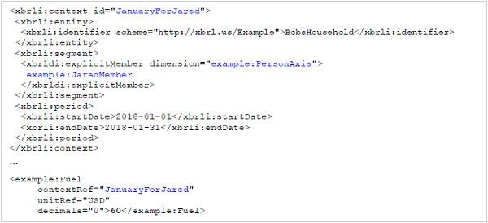
Example 2-2. An XBRL fact with a taxonomy-defined dimension in XML
Now there is segment for the context. A segment is a way of adding taxonomy-defined dimensions. This segment uses the dimension example:PersonAxis and the component for that dimension example:JaredMember. The identifier for the context also changed to reflect this XBRL dimension. Note that context identifiers are used to link facts to contexts and have no meaning on their own. The fact now uses this identifier for the context. Segments are discussed in more detail in Section 3.5.5.
Figure 2-12 illustrates how the context JanuaryForJared would be used in the expenses example. This context can be used for all ten reported facts as shown below. Different concept core dimensions (for food expenses, fuel expenses, etc.) would intersect with the JanuaryForJared context to represent separate facts.
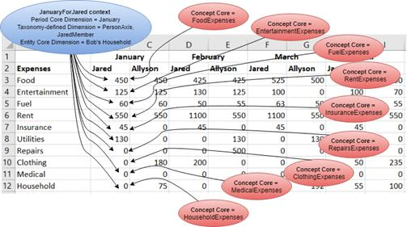
Figure 2-12. Expense example with an illustrated XBRL in XML context
Inline XBRL (Example 2-3) uses the same context definitions as XBRL in XML.
| 26 |
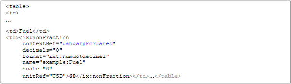
Example 2-3. An XBRL fact with a taxonomy-defined dimension in Inline XBRL
| 2.2.8.2 | Representing Dimensions in Other Transport Formats |
JSON and CSV do not support the use of contexts. These approaches handle adding taxonomy-defined dimensions differently. The JSON syntax for this change appears in Example 2-4.
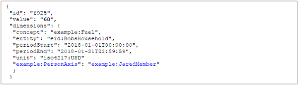
Example 2-4. An XBRL fact with a taxonomy-defined dimension in JSON
In JSON, the additional XBRL dimension has been added to the fact, which uses the taxonomy-defined dimension as the key and the member concept as the value. Additional taxonomy-defined dimensions can be included this way.
For a more complete example of representing an XBRL report in JSON, XML, and Inline XBRL, see Section A.6.
| 2.2.9 | Attaching Footnotes to Facts |
Traditionally, a footnote adds further explanatory information to a statement or fact. In XBRL, footnotes are created through relationships between note text and facts using the footnote relationships. One instance of footnote text can be linked to multiple facts. The note core ID dimension is the dimension on the fact that associates the fact with one or more footnotes arcs. Note that because more than one fact can reference the same footnote, the note ID core dimension does not confer any uniqueness to the fact.
| 2.3 | Machine-readability |
With a better understanding of what an XBRL fact entails, it becomes clear that the fact is the basic unit of the XBRL transport model. With its XBRL dimensions, the fact uniquely represents data points within the semantic data model and becomes self-describing. Data consumers can interpret the fact as necessary with the information provided through the XBRL dimension, the relations to other facts, and the content of the fact itself.
A key facet of this interpretation, though, and one of the strengths and purposes of XBRL as a data model, is maintaining machine-readability. While XBRL offers the means to connect human-readable formats with machine-readability, its purpose is allowing a consuming system to take its facts and realign them appropriately to consumer data models and reporting structures. The system that receives the XBRL report
| 27 |
should be able to interpret the transport model and all its facts correctly. Therefore, it is the job of the XBRL taxonomy developer to ensure XBRL facts are consistent and appear in a predictable, anticipated manner.
XBRL describes a format for data storage, organization, and transport. Most XBRL software can provide additional functionality, such as validation and mathematical comparisons. Because XBRL describes its own data model, software can perform these additional tasks with little or no additional development.
| 2.3.1 | Data Types |
A key facet of maintaining a consistent, predictable structure pertaining to an XBRL fact is clearly defining the fact's data type. Data types have been briefly discussed, but this section aims to take a deeper dive into explain how data types in XBRL enable machine-readability. For a consumer system to be able to translate incoming XBRL facts appropriately, those facts must conform to that system's expectations concerning data types. The data type selection is also critical to aid in validation and documentation of the fact content as intersected by the concept. For example, if a data type specifies that a fact's value must be positive and non-zero, then it becomes a simple matter for XBRL software to indicate an erroneous entry or report a fact error.
At a basic level, a data type defines the set of possible values for a fact. Data types can be simple, such as an integer, or they can have additional constraints, such as a non-negative integer. Data types can be generally grouped as numeric or non-numeric. Numeric data types can be used in mathematical operations. They cannot contain text. Non-numeric data types are not meant to be used mathematically. For example, a data point expressing a tax identification number may be expressed only in digits. However, the data type for that fact should not be numeric as there is no logical reason to perform mathematical operations on this identifier.
As previously stated, a fact's data type is determined by the data type property of its concept core dimension. Accordingly, the concept's data type should be dictated by the nature of the data it is meant to represent. A concept representing total energy output of a power plant, for example, suggests a data type that allows decimal precision. Similarly, a concept describing the number of people answering a survey should dictate an integer data type.
XBRL derives its data types from the standard XML data types. Table 2-3 contains a sampling of common XBRL data types.
| Data Type | Description | |
| stringItemType | Represents character strings in XML. | |
| booleanItemType | Represents the values of two-valued logic (true, false). | |
| decimalItemType | Represents a subset of real numbers, which can be represented by decimal numerals. | |
| dateTimeItemType | Represents instants of time, optionally marked with a time zone offset. | |
| integerItemType | Represents the standard mathematical concept of integer numbers by fixing the fractional digits of decimal to be 0 and prohibiting the trailing decimal point. | |
| monetaryItemType | Represents a decimal with the added constraint of a currency unit. | |
| qNameItemType | Represents a qualified XML name. |
Table 2-3. Common XBRL data types
| 28 |
Many standard taxonomies contain additional data types. Developers can also create their own data types. Data type extensibility is discussed in Section 3.6.1.1. Because data types are built into XML, any program that can understand XML will be able to validate them at a basic level, even custom data types that are properly extended from standard data types. See Appendix A for more information on XML data types.
2.3.2 Mathematical Consistency
Facts with a numeric data type must have a decimals or precision property that states how mathematically precise the value of the fact is. Because all numeric facts must have precision, XBRL software can maintain precision when performing mathematical calculations. Given this, when comparing a computed value versus a fact value, XBRL software can automatically accommodate for rounding errors.
2.3.3 Transformation and Interpretation
There are various formats to express values for data types, such as numbers and dates. XBRL uses specific formats for these data types as governed by the XML specification. However, Inline XBRL offers additional instructions for XBRL software to convert human-readable expressions of this information into the appropriate data type format. For example, an XBRL date must be in ISO 8601 format but many textual dates are written in descriptive language. An XBRL transformation describes how the descriptive language can be converted to the appropriate format. For a list of rules and more information, see the XBRL Transformation Registry.
Inline XBRL also offers a scaling property on individual facts to indicate to XBRL software that the value of the fact must be scaled before it is interpreted. For example, a table of facts may be expressed in millions without the trailing zeros to aid in human readability, but Inline XBRL must have appropriate scaling so the value of 123 is interpreted as 123000000.
| 2.4 | The Taxonomy |
With a high-level understanding of basic XBRL constructs and how those constructs intersect to represent a fact, XBRL developers can now explore the structure and components of an XBRL taxonomy. As mentioned previously, XBRL taxonomies define a semantic data model used for transport between originating preparers and consumers, both of whom potentially have semantic data models of their own to store, analyze, and report data. An XBRL taxonomy may represent semantic relationships within either the originating model or the consumer model, and it may also define its own relationships depending on what is required. Thus far, the discussion in this document has focused on how XBRL facts are represented in an XBRL report with their associated dimensions, but without the taxonomy and its roadmap of how the dimensions relate to each other, the XBRL report lacks meaning.
Though XBRL taxonomies may greatly differ concerning the nature of the data they are intended to represent, taxonomies all employ the same XBRL structures, tools, and rules to function as a transport model.
| 2.4.1 | Taxonomy Characteristics |
The basic purpose of a taxonomy is to organize concepts into a hierarchy. A hierarchy defines how concepts relate to one another. It is often visualized as a tree structure (Figure 2-13).
| 29 |
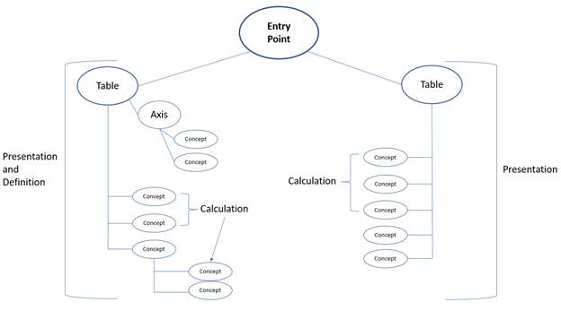
Figure 2-13. An example hierarchical taxonomy structure
There are three basic structures that can be visualized within a taxonomy: calculations, presentations, and definitions. All three are present within Figure 2-13. More on these topics is discussed later in this section and in Chapter 3. Taxonomies typically possess one or more entry points. An entry point is a collection of concept groups that have been joined for a specific use. For example, an entry point may consist of all of the presentations, calculations, and definitions that are relevant to banking within a financial reporting taxonomy. Entry points help organize concepts by their use and can aid preparers in navigating a taxonomy and locating the sections that apply to their reporting needs. Only the concepts in the entry point should be used to describe data that is expressed by that entry point, although other concepts may exist for other entry points. In other words, the entry point should contain all the concepts necessary to express the data represented by that entry point completely.
Note that every item in the taxonomy structure is in fact a concept, though only the concepts that fall directly beneath a table in Figure 2-13 are concepts that can intersect with facts; these are concept core dimensions. The other concepts are either member concepts or other structural containers, such as tables and axes. This represents concept grouping, which is a way to define hierarchical relationships within the taxonomy. Concept groups can contain any number of other concepts and concept groups, just as a branch of a tree can connect to many smaller branches, some of which also leading to many other branches, and so on. This hierarchical structure and the concept names represent the transport data model.
For an XBRL hierarchical model, each node (or element of the tree) is considered a concept. In this way, a concept identifies a unique position within the taxonomy for a specific data item, an XBRL dimension, or a grouping of dimensions. The root concept (or node) is at the top of the tree and may represent an entry point or a presentation.
For example, Figure 2-14 reflects a hierarchical structure for representing types of aircraft.
| 30 |
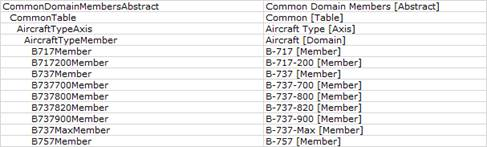
Figure 2-14. An example hierarchical representation of concepts that describes types of aircraft
The first column specifies the concept name. The second column represents the standard label for the concept. For example, CommonDomainMembersAbstract has a label that indicates it is an abstract (which is discussed in more detail in the next section). The label for the CommonTable concept indicates it is a table container. This may seem redundant, but it is important since each concept can have multiple labels associated with it for differing roles. More on how concept names and properties influence their roles is discussed in the next section.
Children of the concept are indented in this case. This is a common way of expressing the parent/child relationship. A concept's parent is a node one step higher in the hierarchy. A concept's siblings share the same parent concept. It should be noted that while XBRL uses a hierarchical structure to organize concepts, the parent/child relationship within XBRL does not imply or allow the inheritance of properties. For example, while the concepts shown in Figure 2-13 and Figure 2-14 are children of the table and axis concepts, they do not inherit the properties of those parent table or axis concepts. It should also be noted that, while concepts can have differing roles and exist within multiple different presentations, specific relationships defined between concepts exist within at least one of these types of relationship structures. Concept A cannot be a parent of Concept B if Concepts A and B are not within the same hierarchical structure in some entry point of the taxonomy. More on parent/child relationships is discussed in Section 3.4.4.
A taxonomy does not have to be a single, self-contained organization. Taxonomies can reference and contain other taxonomies. The external taxonomies referenced in this way are known as a Discoverable Taxonomy Set (DTS) for the prime taxonomy. The external taxonomies can themselves reference additional taxonomies. All of the taxonomies in this chain are required to understand the prime taxonomy. Employing a DTS is very useful as it allows developers to build on existing standards for specific applications.
2.4.2 Concept Properties and How They Relate Concepts to Each Other
The organization, selection, and naming of concepts are critical to creating a well-formed taxonomy that matches the real-world data application. Each concept has properties associated with it, as previously discussed. In terms of taxonomy structure and organization, the concept name, the abstract property, and the substitution group property can express the concept's use within the taxonomy. Often all three should be addressed appropriately to indicate a concept's role.
The first of these properties is the concept name, which, as discussed before, is a machine-readable name created to describe the concept in a consistent manner. Naming conventions should be employed following certain style rules (check the XBRL US Style Guide for language and reference styles). Of note in this case is the use of specific suffixes to indicate a concept's role. Suffixes should be appended to certain concept names to help users distinguish between their uses (for example, "Abstract" for an abstract concept, "Member" for a concept that is an axis member, or "Axis" for the concept container for an axis). These suffixes were briefly introduced in Section 2.2.8, where example concepts belonging to taxonomy-defined dimensions were defined in XBRL.
The second property is the abstract property. Concepts that do not actually intersect facts often have their abstract property set to "true." This specifically indicates that a concept is not a concept core dimension but rather an organizational item. Grouping concepts should have the abstract property set to "true."
| 31 |
Finally, there is the substitution group property. The substitution group property can aid in defining a concept's role more specifically by grouping it with other like concepts. Concepts with the same substitution group have similar uses. Example substitution groups include dimension, item, or hypercube.
These ideas will be discussed in greater detail in Chapters 3 and 5. At this point, it is important to understand that concept properties are vital in defining the concept's role in the taxonomy and how each concept relates to other concepts within the taxonomy.
| 2.4.3 | Components of a Taxonomy |
Practically, a taxonomy is comprised of two main components: schema documents and one or more linkbases. The combination of the linkbases and the schema is what makes the taxonomy self-describing. Each of the components of a taxonomy is described in the following sections. All XBRL taxonomies must be defined in XML using XML constructs, regardless of whether or not the data to be reported is actually transported in XML.
| 2.4.3.1 | Schema |
A schema refers to a description of an XML document. Schema typically express constraints on the structure and content of an XML document above the simple syntactical constraints of the XML language itself. To use an analogy, XML can be thought of as an alphabet for a written language. The XML schema is like a dictionary that contains all the allowable words, their definitions, and their grammatical uses. With these components combined, the language can be used to write a story. With an XML schema, the constructs of the taxonomy and their usage can be defined.
XBRL also requires the use of the XML Schema Definition (XSD) format in describing the elements of the schema. Schemas typically include information such as element (concept) declarations, attribute declarations, and property definitions for concepts. They can also include custom data types. More information on developing the schema portion of a taxonomy is available in Chapter 5.
| 2.4.3.2 | Linkbases |
If the XML schema is the dictionary of the taxonomy, the linkbase is an outline of the story and a primer on how to organize its many chapters. A linkbase shows how the concepts of the taxonomy relate to each other. Linkbases accomplish this through declaring the arcs, which can be thought of as an origin, a destination, and the nature of the relationship between them. Arcs exist between concepts or between concepts and other resources, some of which may be external to the taxonomy itself.
Like the schema document, linkbases must be defined with, and adhere to, XML constructs and standards. There are multiple types of linkbases. One or more of each type can exist in a taxonomy. If the reporting system allows extensibility, preparers may be able to define custom versions of one or more of these types of linkbases.
| 2.4.3.2.1 | Presentation Relationships |
The presentation linkbase defines one or more hierarchical structures of the concepts. This allows the taxonomy to be properly organized, and it permits XBRL rendering software to create visual representations of the taxonomy that are human-readable and easily navigable. Preparers using the taxonomy can view the hierarchy of concepts, which provides additional meaning beyond the XBRL dimensions (Figure 2-15).
| 32 |
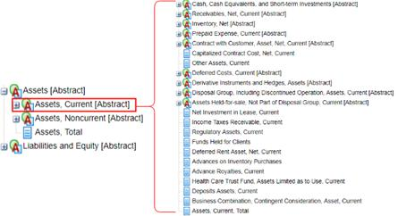
Figure 2-15. A presentation within a sample taxonomy visualized through XBRL software
Concept labels (discussed in Section 2.2.6.4) are particularly important within a presentation. Labels instruct the rendering software (such as Arelle) on how to display the presentation and which labels to associate with the concepts in the presentation hierarchy. They may also dictate how the concept is interpreted within a specific presentation. Concepts may have multiple different labels defined (such as presentation labels, terse labels, and verbose labels). Each is designed for different display or interpretation purposes. For example, presentation line items can carry certain characteristics, such as whether a numeric fact should be displayed in its negated form. Reporting data for "Income (Loss)" may be a situation where a negative fact represents that loss, but that fact may be presented as positive for a specific human-readable presentation. This would be accomplished with a negated label. More information on defining concept labels is located in Section 7.2.3.1.
In addition, presentation linkbases further aid in hierarchical rendering by specifying the indent levels (depth) of the concepts involved in that presentation. This is what creates the visual "tree" depiction of the presentation and its hierarchy of concepts.
Presentations are also closely related to the definitions linkbase (described subsequently). In conjunction with the definitions linkbase, presentations describe the inclusion or exclusion of particular taxonomy-defined dimensions in rendering the presentation.
| 2.4.3.2.2 | Calculation Relationships |
Calculation linkbases define mathematical relationships among concepts. This allows values appearing in XBRL instance documents to be checked for consistency by XBRL software. In this way, a calculation linkbase provides basic validation rules for instance documents created using the taxonomy to which the calculation linkbase is associated. Like the presentation linkbase, calculation relationships are hierarchical such that all concepts belonging to a calculation arc are added to or are subtracted from one another. In this way, a higher-level concept can become the result of a predefined mathematical calculation (Figure 2-16).
| 33 |
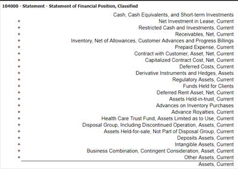
Figure 2-16. An example calculation relationship
| 2.4.3.2.3 | Definition Relationships |
Definition linkbases provide another way to define relationships between concepts. A variety of arcs may be included in a definition linkbase, such as arcs to indicate one concept is a specialized version of another or to require the use of one concept should another be used. These arcs can be custom-defined or commonly used. Standard relationships defined by a definition linkbase are discussed in Section 3.4.4.3.
Definition linkbases are closely related to presentation linkbases. Definitions define the taxonomy-defined dimensions that are allowable within a presentation through its hypercube definitions. Hypercubes, which are multidimensional data structures, can include or exclude particular dimensions or be open or closed. More information on hypercubes is discussed in Section 3.5.5.
| 2.4.3.2.4 | Label Relationships |
The label linkbase associates human-readable text with machine-readable concept names. This XML document contains various labels for the concepts within the taxonomy and explains how to use and interpret these labels. The usage of these labels is defined by linking concepts to them through the concept-label arc.
| 2.4.3.2.5 | Reference Relationships |
The reference linkbase creates arcs through the concept-reference link that associates a concept with additional information. This additional information may be derived from an authoritative body (as an authoritative reference) and provides further understanding to what a concept is meant to represent. The references often function by linking concepts to external regulations and standards or by providing additional meaningful documentation.
| 2.4.3.2.6 | Formula Relationships |
The formula linkbase creates arcs between concepts that specify mathematical relationships beyond a calculation relationship. For more information on using XBRL formulas, see Section 6.2.1.
| 2.4.4 | XBRL Instance Documents |
The XBRL instance document, also called the XBRL report, contains the structured data that is to be transported and reported. Additionally, it contains the definitions for the core dimensions except the concept core dimensions (which are defined in the taxonomy itself). Because what these XBRL core dimensions are meant to represent are included in the XBRL Specification, they are included in the instance document.
| 34 |
In addition, these dimensions are likely to change from report to report. They are not inherent to the taxonomy itself but rather to the particular data set being reported in XBRL. For example, while all XBRL instance documents using a taxonomy to report financial assets may use a concept core dimension named ReportedAssets, the reporting period and entity will vary. Therefore, these XBRL dimensions are defined in the instance document, as they belong to the report, not the taxonomy (Figure 2-17).
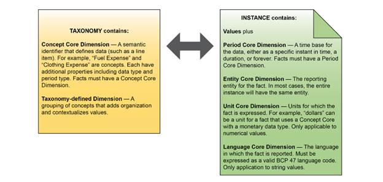
Figure 2-17. The XBRL taxonomy versus an XBRL instance document and what each contains
The taxonomy should contain the constructs necessary to preparers using that taxonomy, which includes all concept core dimensions, all taxonomy-defined dimensions, all custom data types, and all required concept-based relationships. The next chapter will describe the basic XBRL constructs used in a taxonomy and how they map onto an example data model before exploring how to represent that data model in XBRL.
| 35 |
(this page intentionally left blank)
| 36 |
| 3 | Structuring Data |
| 3.1 | Introduction |
Data can be structured in a variety of ways, from simple spreadsheets, lists, and tabular formats that may have a handful of data points to complex networks and relational databases that could contain thousands of discrete bits of information. Every data model, from the most simplistic to the most complicated, has structure that provides rules for understanding its data and how the data points relate to one another. That structure, which should be dictated by the nature of the data itself, serves as a guide in leveraging XBRL's constructs to appropriately organize the data for transport and consumption.
A data model is an abstract structure that organizes elements of data and standardizes how they relate to each other as well as to real world entities. A robust data model should be able to uniquely identify data points regardless of the data point's content, and an XBRL implementation requires data points to be uniquely identified. This section describes how to take a data model and express that model using XBRL constructs. First, various data models are examined so that readers can become familiar with identifying data dimensionality and how data points are affected by the different ways of expressing that dimensionality. After exploring these examples, the chapter turns to how those data models can be expressed in XBRL.
It is important to note that the intent of XBRL is to provide a structured, predictable data format. This is its major goal, to allow for easy comparability of data across reporting entities. Therefore, while there are always multiple ways to construct a data transport model, that model must adequately represent a multitude of incoming business data models. This can be challenging, so this section also provides a discussion of the multiple approaches to modeling data, some advantages and disadvantages inherent to each, and explores when and why certain situations warrant a particular modeling method.
| 3.2 | Typical Data |
In a typical data set, data points are unique, but uniqueness may be through implied data model dimensions. Most reports have at least an implicit time period, for example. As a first step in designing an XBRL taxonomy, developers should examine their data set and determine if all pertinent data points can be expressed uniquely.
What does it mean to be unique? In a relational data model, a set of values, sometimes called a key, in a combination of data dimensions serves to uniquely identify a data point. No two data points in the model can have the same combination of key values. In more complex models, data dimensions themselves may have further identifying or relational information that is specified elsewhere. For example, a company name may be a dimension that helps add contextual information to sales numbers, but the company may have a government-issued identifier related to them.
The following sections examine various complexities of data models and their implications for XBRL development. The first section explores a series of simple data points with increasing complexity in relationships, along with methods of organizing the data within XBRL dimensional constructs.
| 3.2.1 | Non-relational Data |
Non-relational data refers to data points that have no semantic relationships beyond a grouping that is implied by the data set itself, such as a reporting entity or a time period. For example, customer names assembled in a list have no relationship with each other beyond the list itself. Removing the list container from these items removes the semantic meaning they hold with each other.
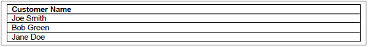
Table 3-1. Simple non-relational data
| 37 |
In a non-relational data set (Table 3-1), each item is unique simply by virtue of the fact it is different from every other item. There cannot be duplicate items. In this example, if two customers had the same name, a data dimension could be added to differentiate them, probably through the use of a unique identifier, such as a tax ID or other identification number.
3.2.2 Simple Relational Data
A simple relational data set (Table 3-2) is one where data points have one significant relationship with each other. Building on the non-relational customer list, if one data dimension is added, such as the number of widgets each customer purchased, the data points now have further semantic context. Each data point is now uniquely defined by both the customer name and the number of widgets sold.

Table 3-2. Widget data set (simple relational data with independent dimensions)
| 3.2.2.1 | Independent Dimensions |
Two data dimensions are considered independent when they have no semantic relationship with each other. In other words, the meaning of one data dimension has no bearing on the meaning of the other dimension. In this case, the Customer Name has no semantic relationship with the Widgets Sold. The table represents a simple two-dimensional structure, one that could be visualized using X and Y axes to represent the Customer Name and Widgets Sold dimensions, respectively. Independent dimensions are also sometimes referred to as being orthogonal to each other.
3.2.3 Complex Data Relationships
Complex data relationships add even further dimensionality to the data model. In the customer list example, if a third data dimension is added to express the type of widget purchased, each data point is now defined by three dimensions: Customer Name, Widgets Sold, and Widget Type (Table 3-3).
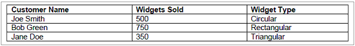
Table 3-3. Widget data set (complex data with independent dimensions in a one-to-one relationship)
Importantly, each one of the data dimensions in the example is independent of the other dimensions. In the example above, the Customer Name has no bearing on the interpretation of Widgets Sold and the Widget Type. Any customer can buy any number of widgets of any type. Furthermore, the number of Widgets Sold is also independent of the Widget Type. It should be noted that if multiple dimensions are required to express a data point uniquely, this does not necessarily imply those data dimensions are dependent on each other. In fact, independent key dimensions can be a less complex and thus desirable situation.
Looking at the data, every customer has only one widget type purchased. This is a one-to-one relationship, but the data may not be constrained to a relationship this simple. For example, suppose Bob Green also purchased 100 Circular Widgets. The table would appear as it does in Table 3-4.
| 38 |
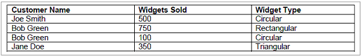
Table 3-4. Widget data set (complex data with independent dimensions in a one-to-many relationship)
The data points "750" and "100" require both the Customer Name and the Widget Type dimensions in order to be unique. This becomes the data point's unique key. Widget Type must be present with Customer Name to create unique data points in the example. This is now a one-to-many relationship, where each customer can have purchased multiple different types of widgets. The one-to-many relationship exists between the customer and the combination of the Widgets Sold and the Widget Type.
Removing the Widget Type dimension produces two rows identified with only "Bob Green" and are thus non-unique and semantically indistinguishable. For numeric values, the mathematical combination of a set of data points can simulate uniqueness if a necessary key dimension has been removed. For example, Bob Green could be listed with 850 widgets sold. This restores uniqueness with the loss of some information (how many of each widget type comprises the sum).
| 3.2.3.1 | Dependent Dimensions |
Dimensions in a data model are dependent upon one another when the value of one dimension influences the values in another. The two dimensions are then semantically related. Suppose a dimension is added to reflect the price per widget for each widget type as it does in Table 3-5.
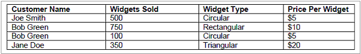
Table 3-5. Widget data set (complex data with both independent and dependent dimensions)
The new Price Per Widget data dimension is dependent on the Widget Type. Circular widgets are always priced at $5, rectangular at $10, and triangular at $20 per widget, regardless of customer. Thus, the Price Per Widget data dimension is dependent on only Widget Type. To properly define a data point for Widgets Sold requires three dimensions: Customer Name, Widget Type, and Widgets Sold. Price Per Widget is not necessary (and, in fact, should not be used) to make the data point unique.
If customers have special pricing, however, Price Per Widget becomes dependent on the combination of Customer Name and Widget Type. This example does not indicate this explicitly, but possibilities like these should be considered when designing a data model. In this case, Widgets Sold is still uniquely identified by the same three dimensions as above. However, the price changes based on the customer.
If the pricing varies for any individual purchase, the model gains a many-to-many relationship. Consider Table 3-6 as follows:
| 39 |
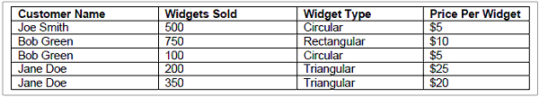
Table 3-6. Widget data set (complex data with both independent and dependent dimensions in a
many-to-many relationship)
Now the Widgets Sold data point requires four dimensions in order to have a unique key. Jane Doe has purchased a total of 550 triangular widgets, but 350 of them were discounted. Thus, the data point for Widgets Sold requires a combination of the Customer Name, the Widgets Sold, Widget Type, and now Price Per Widget. However, Price Per Widget may still be dependent on Widget Type, Customer Name, or both.
Dependent dimensions commonly occur in data models, but they can make unique keys very difficult to glean from only examining the data. These relationships should be carefully thought out during the design of any complex relational data model.
| 3.3 | Creating an XBRL Data Model |
The basic construct in XBRL for expressing data relationships in a data set is the XBRL dimension. At a fundamental level, an XBRL fact must have a concept core dimension, a period core dimension, an entity core dimension, and it may have either a unit core or a language core dimension as applicable. As the data model increases in complexity, taxonomy-defined dimensions can be added to express the additional relationships relative to the fact. There is no limit to the number of taxonomy-defined dimensions that can intersect with an XBRL fact. However, good taxonomy and data model development practice should guide the developer in producing the fewest number of XBRL dimensions to accurately represent the relevant semantic information.
The next sections will explore how to represent the previous widget examples in XBRL using XBRL dimensions. Note for the sake of simplicity and brevity, concept and taxonomy-defined dimension names in this chapter are not entirely complete or sufficient for use in an actual XBRL taxonomy. Quite often the suffix has been omitted. For a more complete example of how to properly name concepts and XBRL dimensions, see Chapters 5 and 7.
The first step in expressing a data set in XBRL is to identify that data set's dimensions and how those dimensions translate to XBRL core and taxonomy-defined dimensions. It is important to note that all reports may have implicit XBRL dimensions associated with them that may not be directly represented in a data set. This may include the entity core dimension, the period core dimension, and the unit or language core dimensions. These must be represented in XBRL, even if they are not explicit in the originating data set. In the examples that follow, the entity, period, and unit dimensions are combined and represented by a Report Dimension. This is done to simplify the examples since these dimensions are constant for every fact in the data.
| 3.3.1 | Representing Non-relational Data |
At first glance, it may seem that representing non-relational data, such as the list of customer names in Section 3.2.1, should be a simple task in XBRL. However, it quickly becomes obvious that maintaining XBRL fact uniqueness in this situation becomes complicated given the lack of other dimensions to help identify facts and the multiple design choices to overcome this.
Once again, consider the non-relational data set in Table 3-1. There is a single dimension: Customer Name. The XBRL implementation could look as it does in Figure 3-1.
| 40 |
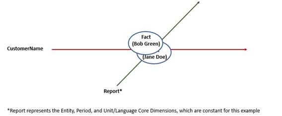
Figure 3-1. An XBRL data model for non-relational data with non-unique facts1
The single dimension is represented by the concept core dimension CustomerName. However, this results in non-unique facts for each customer name. There is no semantic variation to differentiate one fact from another as the concept core dimension and the Report Dimension are constant for every fact. This is a poor XBRL implementation of the data set.
There are two possible solutions to this problem. The first would be to change the concept core dimension from CustomerName to CustomerNameList and to change its data type to be the entire list of names. The fact then becomes the list itself, and there is just one unique fact rather than a series of non-unique facts. Depending on the purpose of the data model, this may be an adequate solution with low complexity. However, it does not permit each of the customers to be uniquely identified.
The second approach is more complicated but provides greater access to the data within the model. Rather than express the data with only a concept core dimension, a taxonomy-defined dimension can be utilized to disaggregate the customer name list. Consider Figure 3-2:
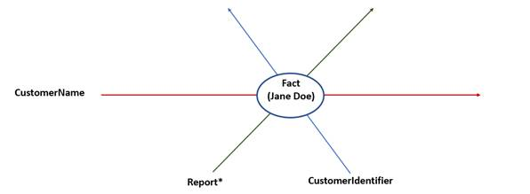
Figure 3-2. An XBRL data model for non-relational data with a
taxonomy-defined dimension and unique facts
The concept core dimension is CustomerName, and a CustomerIdentifier taxonomy-defined dimension has now been added. The CustomerIdentifier dimension could contain a meaningful unique identifier for each customer if this data exists and is relevant, or it can contain simply the customer name again (which does add redundancy but is an easy approach), or, finally, it can contain an arbitrary identifier. Arbitrary identifiers
__________
| 1 | Note that the core dimensions (Entity, Period, Unit, etc.) are constant for every data point in the model. The Report* dimension on the following figures represents this dimension. |
| 41 |
are analogous to auto-generated keys in database design or data modeling. This topic will be discussed in greater detail in a later section.
Now, with this design, each data point can be uniquely expressed as an XBRL fact.
| 3.3.1.1 | Representing Relational Data |
Creating relational data in XBRL is simple once the appropriate data dimensions have been defined. The example in Table 3-3 provides a simple model. There are dimensions for this table: the Customer Name and the Widgets Sold. Each of these dimensions describes different types of information, but they are both related to the Customer. As stated above, these data dimensions are independent of one another.
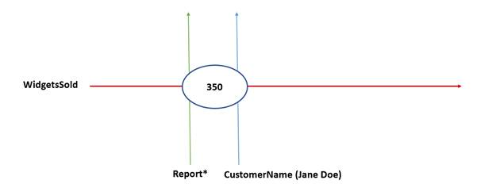
Figure 3-3. An XBRL data model for relational data with a concept core dimension and a taxonomy-defined dimension
The model (Figure 3-3) uses CustomerName as a taxonomy-defined dimension and WidgetsSold as a concept core dimension. More independent XBRL dimensions can easily be added to this model. For example, the dimension WidgetType can be added as either a concept core dimension or a taxonomy-defined dimension. Implementing it as a concept core dimension enforces a one-to-one relationship with the other concept core dimensions, which in this case includes WidgetsSold.
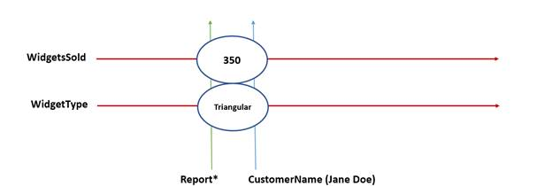
Figure 3-4. An XBRL data model for relational data with two concept core dimensions and a taxonomy-defined dimension
The WidgetType dimension has been added as a concept core dimension (Figure 3-4). Because of this approach, the relationship between WidgetType and CustomerName is now one-to-one. A customer can only have one widget type purchased in the report. This design is adequate for the current data set, but it cannot account for every possible data set in the model. To do that, the XBRL implementation must be able
| 42 |
to account for the one-to-many relationship between WidgetsSold and the other data dimensions. By making WidgetType a taxonomy-defined dimension, a customer can now have more than one type of widget purchased in a single report (Figure 3-5).
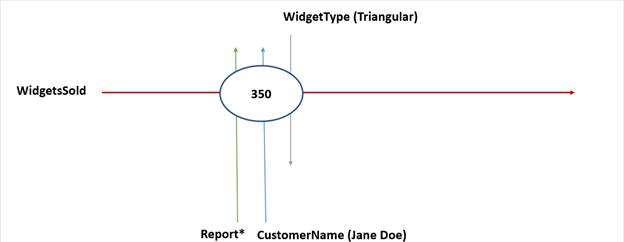
Figure 3-5. An XBRL data model for relational data with a
concept core dimension and two taxonomy-defined dimensions
In this way, the XBRL model can represent both of the following data sets in Table 3-3 and Table 3-4: for every value of the concept core dimension WidgetsSold, there exists a unique combination of the taxonomy-defined dimensions CustomerName and WidgetType.
| 3.3.1.2 | Dependent Dimensions in XBRL |
XBRL does not strictly distinguish between independent and dependent dimensions. In fact, XBRL has no enforcement mechanism; all XBRL dimensions are independent by their nature. A dependent dimension, much like an independent dimension, can be represented by either a concept core dimension or a taxonomy-defined dimension. However, there are ramifications to each design choice. From a use standpoint, what taxonomy-defined dimensions are combined with other taxonomy-defined dimensions and the relationships among them is extremely important. Taxonomy developers should provide guidance to preparers on which taxonomy-defined dimensions should be used to model dependent dimensions.
Consider again the example with the Price Per Widget data dimension and a single price per widget type in Table 3-5. The Price Per Widget dimension is dependent on Widget Type. This situation lends itself to representing Price Per Widget as a concept core dimension. The reasoning behind this is simple: for every value of the Widget Type dimension, there is only one value for Price Per Widget. Therefore, in the XBRL model, every combination of the values of the CustomerName and WidgetType dimensions should be linked to a single value in PricePerWidget. This maintains uniqueness. The XBRL implementation would appear as it does in Figure 3-6:
| 43 |
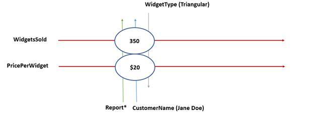
Figure 3-6. An XBRL data model for relational data with two concept core dimensions
and two taxonomy-defined dimensions
Of minor note, the Report Dimension has now become an oversimplification since the WidgetsSold concept and the PricePerWidget concept do not have the same unit core dimension (since the former is a count of items and the latter is a monetary value). However, this is a trivial detail, and the single Report Dimension will still be used to keep the example graphically simple.
This XBRL implementation with a second concept core dimension to represent PricePerWidget introduces problems when the dependent dimension is dependent on more than one other dimension, as is the case in Table 3-6. Here, as discussed before, the Price Per Widget data dimension depends on both the widget type and the customer. From a data modeling standpoint, a taxonomy-defined dimension should be created to represent PricePerWidget as illustrated in Figure 3-7.
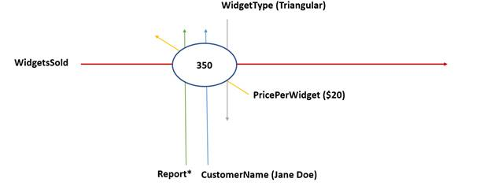
Figure 3-7. An XBRL data model for relational data with one concept core dimension
and three taxonomy-defined dimensions
The model in Figure 3-7 maintains uniqueness yet allows for distinct values for PricePerWidget with any customer or widget type. Even though in the example the Price Per Widget dimension is dependent upon the widget type and customer name, in the XBRL implementation it is represented as a taxonomy-defined dimension which, like any other taxonomy-defined dimension, is operationally independent in XBRL.
While this approach is fine from a data modeling standpoint, for practical usage there may be other considerations. XBRL instances are collections of data points with semantic meaning added through XBRL dimensions to become facts. In this example, the fact is the number of widgets sold, as identified through the concept core dimension WidgetsSold, with semantic differentiation added through WidgetType,
| 44 |
CustomerName, and the other XBRL dimensions mentioned. Treating PricePerWidget as a taxonomy-defined dimension does maintain uniqueness within the data set and adds further semantic meaning to WidgetsSold. However, PricePerWidget might be better consumed as a fact itself. The data model as it stands cannot manage this representation, as the values of PricePerWidget are part of the taxonomy-defined dimension. If these values are to be consumed in a meaningful way, this is not an ideal approach.
Like before when uniqueness was needed, the solution is to create an arbitrary dimension. This is a dimension that is not present in the originating data set but is necessary to the XBRL implementation. The example data model below employs a new taxonomy-defined dimension called Invoice (Figure 3-8). As a consequence, PricePerWidget can now become a concept core dimension again, which allows facts containing the price per widget information to be represented directly in the XBRL instance. The Invoice taxonomy-defined dimension is arbitrary to the purpose of the report. In this case, it has a value of 1, but it could have any unique value. It can also be representative of an actual invoice number; this serves the same purpose for this example.
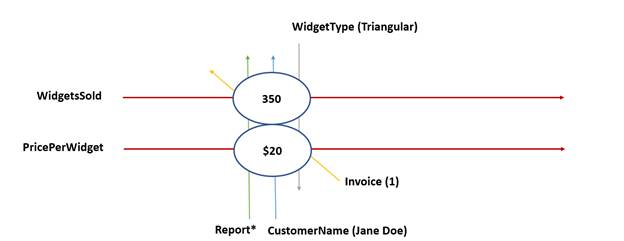
Figure 3-8. An XBRL data model for relational data with two concept core dimensions and three taxonomy-defined dimensions (note that Invoice is an arbitrary XBRL dimension added to maintain uniqueness)
From the examples above, the general process of creating an XBRL implementation from a pre-existing data model can be summarized as follows:
| 1. | Identify dimensions in the pre-existing data set/data model - In most cases, the dimensionality of a data set or data model that is well designed should be obvious. Otherwise, take steps to ensure each data point can be uniquely identified through one or more data dimensions. Again, this is a fundamental property of XBRL, that each fact in the instance document is unique. |
| 2. | Identify the data that is to be represented in XBRL - The data that will be consumed should become the XBRL facts. Knowing which data points are consumable and which are contextual will help delineate concept core dimensions and taxonomy-defined dimensions. |
| 3. | Determine the minimum number of XBRL dimensions to maintain uniqueness - Though not required by XBRL, the most parsimonious data model should be a development goal. Achieving unique data points through the fewest number of XBRL dimensions reduces data model complexity and increases interpretability for both preparers and consumers. |
| 4. | Identify where arbitrary XBRL dimensions are necessary to maintain uniqueness - If there are dependent dimensions within the data model, arbitrary dimensions must be added to maintain uniqueness in XBRL. The values of these dimensions may be derived from the data or external sources. This step may include re-evaluating the data model to include more data dimensions that are not arbitrary to accommodate this situation. Changing the existing model is not always necessary; sometimes arbitrary numbers provide a more parsimonious solution than adding unneeded, irrelevant data. It truly depends on the goals of the data model itself. |
| 45 |
These are the basic steps to create the model for the XBRL implementation. Additional decisions regarding concept names, data types, extensibility, and other fundamental characteristics of the taxonomy will be required, and these will be discussed in later sections.
| 3.4 | Components of an XBRL Data Model |
At this stage, the data model should contain concept core dimensions and taxonomy-defined dimensions that may or may not be related to one another. Given this, how is that model represented by an XBRL taxonomy?
| 3.4.1 | Concept Core Dimensions |
As part of defining the concept core dimensions, concept properties must be defined. Every concept in the model must have its properties defined, but the properties of concept core dimensions most directly relate to the XBRL facts themselves. Concept properties were previously discussed in Section 2.2.6.2.
| 3.4.1.1 | Selecting the Correct Data Type |
Early in the concept core dimension creation process, the data type for each concept must be determined. Data types can be either defined in the XBRL Specification, or they can be defined in the taxonomy itself. Concepts should use the most restrictive data type possible for the type of information being represented. For example, the PricePerWidget concept core dimension should have a monetary per unit data type, rather than a decimal type. The data type also has a close relationship with the unit core dimension (or the language core dimension, if the data is textual). Again, a monetary data type should use a monetary unit, such as an ISO4217 currency identifier. XBRL does not provide any restrictions on matching data types to unit types. XBRL does, however, provide basic data type checking for facts to ensure the data matches the concept data type. For example, creating a fact with the value of "9" using a concept with a floatItemType is valid, but creating a fact with the value of "9.5" using a concept with an integerItemType would produce invalid XBRL data.
Figure 3-9 shows a selection of XBRL data types, how they relate to each other, and applicable unit core dimensions. XBRL has more data types available; see Appendix A.
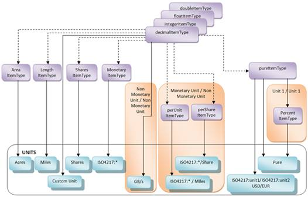
Figure 3-9. A selection of XBRL data types, their relationship to one another,
and their relationship to the unit core dimension
| 46 |
Data types may also be defined within the taxonomy by using an XML or XBRL base data type with restrictions. For example, a concept core dimension that is limited to an enumeration of values can be created by extending the XML base string type with a restriction to specific values. XBRL data types are governed by the XML specification and the XBRL Data Type Registry.
3.4.2 Taxonomy-defined Dimensions
Fundamentally, taxonomy-defined dimensions are simply groups of semantically related concepts. Unlike concept core dimensions, these concepts cannot contain an XBRL fact and therefore should have the abstract property. XBRL supports two different kinds of taxonomy-defined dimensions: typed and explicit. For both kinds, there is a concept that describes the dimension. For example, the abstract concept CustomerName describes the XBRL dimension of customer names, which has been used in the widget examples. In XBRL, these are commonly referred to as axes (as they can be thought of as axes or dimensions within the data set).
When using a taxonomy-defined dimension, an axis and a value for that axis must be provided. For the CustomerName example, the CustomerName concept is the axis and the value could be JaneDoe. Explicit and typed taxonomy-defined dimensions represent the value in different ways. There are situations where one approach has advantages over the other.
| 3.4.2.1 | Explicit Taxonomy-Defined Dimensions |
Explicit taxonomy-defined dimensions use additional abstract concepts for each value of the axis. In the widget example, the abstract concept CircularWidgets represents one widget type in the WidgetType taxonomy-defined dimension. In this way, the allowable values for the domain of the axis are "explicit" (defined in the taxonomy or in an extension of the taxonomy). Concepts used to indicate allowable values for explicit taxonomy-defined dimensions are commonly referred to as members because they are members of the set or domain of values the taxonomy-defined dimensions represent. The taxonomy should express the relationship between an explicit taxonomy-defined dimension and its member concepts.
Because the taxonomy defines all the available concepts, it also defines the available values for an explicit dimension. More concepts can be created to represent subgroupings of domain members. In the widget example, a concept RoundedWidgets could be created to contain CircularWidgets, and a concept AngularWidgets could be created to contain TriangularWidgets and RectangularWidgets. RoundedWidgets and AngularWidgets would both be grouping concepts, and CircularWidgets, TriangularWidgets, and RectangularWidgets would be member concepts. Furthermore, a concept may be created that represents the entirety of a dimension's values. This is referred to as a domain concept (which typically has a suffix of "Domain").
If the reporting system allows extension concepts, then, by default, all explicit taxonomy-defined dimensions allow extension concepts. A developer may add additional validation on any system using XBRL to enforce extension usage.
| 3.4.2.2 | Typed Taxonomy-Defined Dimensions |
Typed taxonomy-defined dimensions do not use concepts as members to indicate allowable values. Instead, typed dimensions use a data type to determine the allowable values of the axis (hence the name "typed" dimensions). The data type used for a typed dimension may be simple or complex. Using the widget example, the Price Per Widget data dimension could be represented using a typed taxonomy-defined dimension whose data type is monetary. Likewise, the Customer Name dimension could be a typed taxonomy-defined dimension with a data type of string.
Rather than specifying a taxonomy-defined dimension and concept member as part of an XBRL context, the XBRL context would designate a taxonomy-defined dimension and a value allowable by the data type of that dimension.
Depending on the type, typed taxonomy-defined dimensions can either allow a great number of possible values or a very limited number. A string type could effectively have infinite allowable values. A data type that is an enumeration of values, on the other hand, is constrained. For example, a taxonomy-defined
| 47 |
dimension with a type that specifies an enumeration with the values of widget types, such as "circular", "triangular", and "rectangular", would allow only these three values (note that these values are not concepts; rather, they are data specified inside the XBRL context). This approach permits greater control over the types of values allowable for the axis, but it also limits user extensibility. The same taxonomy-defined dimension but with a string data type would allow for unlimited widget types, albeit at perhaps reduced comparability.
Developers should note that relying on too many typed taxonomy-defined dimensions to specify values can make reports overly complex, which can in turn make consuming the data difficult. Taxonomy-defined dimensions should only add dimensionality to data points and should not be used to express data. In addition, as is good practice for selecting data types in general, developers should choose the most restrictive data type for a typed taxonomy-defined dimension that accomplishes the needs for that dimension.
For more discussion on the design ramifications of using typed versus explicit taxonomy-defined dimensions, see Section 5.3.2.2.
| 3.4.3 | Tuples |
Tuples are a method of grouping data items together when there is no clear dimensional relationship between the items themselves. For example, a mailing address could be represented by a tuple where the individual components of that address (the street address, the city, the state or province, etc.) are typically listed together. The components themselves have no semantic relationship to each other beyond this grouping. Within an XBRL taxonomy, the members of the tuple are not typically referenced individually because it rarely makes sense to do so. The data is reported as a unit and no understanding of multi-dimensional data is required for interpretation.
Tuples are less commonly used than taxonomy-defined dimensions to represent data. First, usually information within an XBRL report is hierarchical and/or dimensional in nature, which a tuple cannot express well. Second, because a tuple is interpreted as a group of information, there are very limited methods of identifying the tuple's constituent pieces. Developers can group tuples together to form hierarchical structures, but this method of modeling is often better accomplished through dimensions. Finally, tuples cannot be extended.
Still, there may be occasions where tuples can reduce XBRL report size and complexity. Because tuples are not commonly used and are typically not a preferred method of modeling, this handbook does not explore them beyond this brief introduction. Developers should be aware that tuples exist as a means to group non-dimensional data and that they can be another development option in the proper circumstances. For more information, see the XBRL Specification.
3.4.4 Hierarchical relationships
An XBRL taxonomy contains not only the definition of all concepts and data types but also the relationships among the concepts. XBRL allows for several types of relationships. Presentations describe how each concept is arranged in a tree-like, hierarchical format. Calculations describe how concepts relate to one another mathematically (if there is a mathematical relationship). Lastly, definitions directly indicate the relationship between concepts and taxonomy-defined dimensions (including hierarchical relationships but also beyond this structure).
XBRL uses XML and XLink to represent its relationships. Most XBRL relationships exist between two concepts, which can be concept core dimensions or taxonomy-defined dimensions. Relationships may be further refined or expanded by adding more pair-wise relationships to the same concepts, which can build complex hierarchies. The number of relationships can be very large in a large taxonomy, so in order to view the taxonomy in a more human-friendly format, software is often required.
| 48 |
| 3.4.4.1 | Presentations |
Presentations are the graphical representation of the hierarchical tree of taxonomy concepts and dictate how XBRL-consuming software should depict or render the concepts in relationship to one another. Figure 3-10 contains a subset of a presentation derived from the US GAAP 2017 accounting taxonomy.
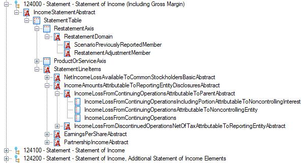
Figure 3-10. An example presentation from the US GAAP 2019 accounting taxonomy
In Figure 3-10, the hierarchical relationships among the concepts are easy to visualize. XBRL presentations describe what are called parent/child relationships. A concept that is a child of another concept does not inherit any properties or characteristics; rather, this relationship represents a composition relationship. The parent concept is comprised of its children. In other words, the parent concept applies additional semantic meaning or organization to its children concepts. Please note that most taxonomies should follow the XBRL US Style Guide and should use suffixes to indicate what concepts are structural and therefore abstract.
Presentation names contain a numeric code for sorting purposes, followed by a type and name (see Section 7.2.3.1.1 for more information). Abstract concepts are indicated in this figure with an "A" icon. This presentation is named "Statements of Income (Including Gross Margin)". The root concept IncomeStatementAbstract has a single child concept StatementTable, which represents the relationship between the taxonomy-defined dimensions and the concept core dimensions. The first child of StatementTable is StatementScenarioAxis (which is a taxonomy-defined dimension). The concept StatementScenarioAxis (which is an explicit taxonomy-defined dimension) has three total children: ScenarioUnspecifiedDomain, ScenarioPreviouslyReportedMember, and RestatementAdjustmentMember. Because of the relationship between ScenarioUnspecifiedDomain and the other member concepts (specifically that ScenarioPreviouslyReportedMember and RestatementAdjustmentMember are part of it), ScenarioUnspecifiedDomain represents the entirety of the possible values for StatementScenarioAxis.
The concept StatementLineItems contains abstract concepts that help organize the concept core dimensions. For example, the IncomeLossFromContinuingOperations concept core dimension is part of the IncomeLossFromContinuingOperationsAttributableToParentAbstract concept, indicating that income loss from continuing operations is attributable to the parent entity.
Developers should provide presentation information to assist preparers in creating reports. Developers may also allow preparers to create custom presentations, which allows them to rearrange the concepts to describe new, different relationships that may better suit their reporting needs.
| 49 |
| 3.4.4.2 | Calculations |
A calculation is a grouping of concept core dimensions that defines a specific mathematical relationship among them. Calculations are organized into a tree-like structure using a summation relationship where the highest-level item is comprised of the sum of the constituent items. The constituent items can also be comprised of other items. Calculations should only be defined between concepts with numeric data types. In XBRL, calculations are always represented with this summation relationship. However, weighting can be applied to represent subtraction and multiplication.
XBRL calculations represent relationships between concepts which can be created by the developer to represent a variety of mathematical relationships. However, XBRL software can only verify calculations with specific conditions. First, the facts involved in a calculation must have the same taxonomy-defined dimensions, unit core dimension, and period core dimension. In other words, the facts must exist in the same time period with the same semantic dimensionality. Second, the precision of the calculated value is dependent on the precision of its components. Verification may fail due to inconsistent or unpredicted rounding in the component facts.
| 3.4.4.3 | Definitions |
Definitions describe relationships among concepts. Unlike presentation relationships, definitions are not limited by a parent/child relationship between concepts. Rather, XBRL allows four standard types of definition relationships:
| 1. | General-special - This relationship indicates that one concept of a pair is a more specialized form of another concept. For instance, in the widget example, the widget type AngularWidgets can be general (referring to any widget type that has angles), while the widget type TriangularWidgets is more specific. |
| 2. | Essence-alias - This relationship indicates that one concept of a pair essentially has the same meaning as the other concept. For example, one reporting entity may use the concept Widgets to refer to its product, and another may prefer the concept Gizmos, but the underlying meaning, that these concepts are products, is the same. The essence-alias definition reflects a change in terminology rather than semantic meaning. |
| 3. | Requires-element - This relationship indicates that the value of one concept is required when the value of the other concept in the pair is present. For example, in the widget report with both concept core dimensions WidgetsSold and PricePerWidget, PricePerWidget requires a value for WidgetsSold. |
| 4. | Similar-tuples - This relationship is operationally the same as the essence-alias definition but reserved for usage with tuples. Tuples are not commonly used. |
Additionally, the XBRL Dimensions Specification allows for more definition types. These types are used to define the relationships pertaining to the components of a dimension in XBRL. The definitions exist between a concept and a taxonomy-defined dimension to define the hierarchical relationship between them. Examples of each can be seen in Figure 3-10.
| 1. | Dimension-default - This relationship indicates that the concept is the default value for the taxonomy-defined dimension. |
| 2. | Dimension-domain - This relationship indicates that the concept represents the domain of the taxonomy-defined dimension. |
| 3. | Domain-member - This relationship indicates that one concept is a member of the domain of the other concept that is part of a taxonomy-defined dimension. This relationship can exist between many concepts. For example, a Northeast member may belong to a GeographicLocation axis, but comprising this Northeast member is a group of northeastern states in the US. These each have the domain-member relationship with the Northeast concept. |
| 3.5 | Implementing the XBRL Data Model |
The following sections will use the widget example modified to contain additional data and complexity to demonstrate using XBRL with a complex underlying data model. The data set is as follows:
| 50 |
Table 3-7. Widgets purchased with additional data complexity and information
For the purposes of this example (Table 3-7), the data set is assumed to be complete (the minimum data set - see Chapter 5 for more information). In other words, all possible reporting situations are accounted for. Following this example, the ramifications of this assumption will be explored. This table describes individual purchases that occurred during a period of time.
| 3.5.1 | The Data Model |
Following the general process steps outlined in Section 3.3.2 might produce a data model for this data set as follows:
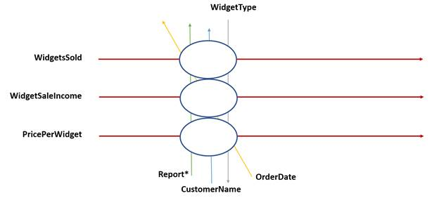
Figure 3-11. A data model for the widget information presented in Table 3-7
The Client, Type, and Date columns in Table 3-7 are represented by the taxonomy-defined dimensions CustomerName, WidgetType, and OrderDate (Figure 3-11). The Quantity, Price Per, and Widget Sale Income columns are represented by the concept core dimensions WidgetsSold, PricePerWidget, and WidgetSaleIncome. These specific data points are better represented as concept core dimensions only because they are the data that will likely be the focus of consumers. The taxonomy-defined dimensions add semantic meaning to these data points while also creating uniqueness.
As said in previous sections, it is important to create concept names that are self-describing. In other words, the concept name should indicate what the concept semantically represents without supporting information from other concepts. Therefore, in this example, Client has been adjusted to CustomerName and so on. For more information on proper concept naming, see the XBRL US Style Guide.
Also note that this example contains both an order date (shown as the column Date in Table 3-7) and a report date (which is mentioned above the table in the heading "as of June 1, 2019"). Generally, the report
| 51 |
date is the period core dimension. From a data modeling perspective, it is preferable to base the period core dimension on the report itself rather than individual data points within the report.
With a data model designed, the XBRL implementation can begin to take shape.
| 3.5.2 | Concepts |
Given the set of concept core dimensions and concepts belonging to taxonomy-defined dimensions, the developers should define their respective properties. All concepts, no matter their use, should have well-defined properties.
| 3.5.2.1 | Concept Core Dimensions |
In the widget example (Table 3-7), there are three concept core dimensions: WidgetsSold, WidgetSaleIncome, and PricePerWidget. Their properties appear in Table 3-8.
| Property | WidgetsSold | WidgetSaleIncome | PricePerWidget |
| Period Type | "instant" | "instant" | "instant" |
| Abstract | "false" | "false" | "false" |
| Nillable | "false" | "false" | "false" |
| Substitution Group | "item" | "item" | "item" |
| Data Type | "positive integer" | "positive monetary" | "positive per widget" |
| Balance Type | N/A | N/A | N/A |
Table 3-8. Properties for concept core dimensions in the widget example
For the properties that must be defined, all three of these concepts have a period type property of "instant," since these data values describe information at a particular time. Even though the table shows a report over a period of time, each individual data point occurred at a specific time. This is an important distinction to make because considering these data points as related to a duration of time, which may make sense from a human perspective, misrepresents them at the level of the data model. This also means these concepts must intersect with a period core dimension that is also defined for an instant, rather than a duration.
All of these concepts must also have "false" defined as their abstract property, since these are concept core dimensions. All three concepts have a value of "false" for nillable, since this data model does not permit missing values. Should the model allow missing values, some concepts could have a value of "true" for nillable. Nillable concepts allow for great flexibility as they differentiate between a data point that is empty versus one that does not apply. Finally, all concept core dimensions must have "item" as the value for their substitution group property. This indicates what type of concept it is.
The previously discussed properties are the same for these three concept core dimensions. However, for some properties, there are important differences, most notably the data type. WidgetsSold has a data type of "positive integer." This makes sense, since no client has or should have a negative number or a total of zero widgets purchased. WidgetSaleIncome has a monetary data type, since it is a monetary amount. It may be useful to note that this data type does allow for negative monetary amounts. In the case of this example, negative monetary amounts are not possible, so to properly account for this, a taxonomy-defined data type would need to be employed. It is generally a good idea to constrain data types to the set of allowable values as much as is feasible while still accounting for extensibility as necessary. Again, extensibility and its ramifications will be discussed later. For now, a data type of "positive monetary" will be added to the taxonomy to reflect monetary values that cannot be negative.
Finally, the data type for the PricePerWidget concept is somewhat complicated. As it is a monetary value per an item, it could simply be expressed as a decimal. However, a custom-defined data type lends better interpretability and clarity for consumers, even if that data type is not actually more restrictive than decimal.
| 52 |
Again, the values for this concept cannot be negative in this data set, so a constraint on that custom-type of positive values only makes sense. This custom data type will be called "positive per widget".
The final property to address is balance type. This property relates to the accounting principles of debits and credits. For this example, this property can be ignored.
| 3.5.2.2 | Taxonomy-defined Dimensions Directly Derived from the Data Model |
In the widget example, there are three taxonomy-defined dimensions: WidgetType, OrderDate, and CustomerName. Note that these are not the only taxonomy-defined dimensions necessary to represent our data model, but these are the ones immediately evident from the columns in Table 3-7. In XBRL, it is best to name concepts such as these with the word "axis" as a suffix to the name. WidgetTypeAxis, OrderDateAxis, and CustomerNameAxis become concepts representing an XBRL dimension of data, so their properties are all the same. Because they are concepts representing taxonomy-defined dimensions, they are all abstract. These concepts symbolize a dimension or axis of data; therefore, their substitution group property is "dimension".
All taxonomy-defined dimensions represent a dimension of the data model. However, multiple supporting concepts may be required for explicit taxonomy-defined dimensions. For example, the WidgetTypeAxis concept represents the dimension of widget types. Another concept is necessary to represent each individual type of widget. Adding RectangularMember, TriangularMember, and CircularMember as supporting concepts of the WidgetTypeAxis taxonomy-defined dimension increases the number of taxonomy-defined dimensions in the model to six. These new concepts have the domain type for their data type, indicating that they are part of a domain of data. Their substitution group property is "item" and, like all concepts derived from a taxonomy-defined dimension, they are abstract.
Unlike WidgetTypeAxis which has members, OrderDateAxis and CustomerNameAxis are typed taxonomy-defined dimensions. This development choice was made because WidgetTypeAxis has set values prescribed by the nature of the data as presumably Widgets, Inc. has a limited, well-defined set of possible widget types, suggesting WidgetTypeAxis be an explicit dimension. OrderDateAxis and CustomerNameAxis, on the other hand, are more open-ended. If these were explicit taxonomy-defined dimensions, they would require extensibility in order to represent all possible data (such as a customer or purchase date not already included in this data set). Extensibility is discussed in Section 3.6.
| 3.5.2.3 | Supporting Taxonomy-defined Dimensions |
In order to represent the collection of the taxonomy-defined dimensions applied to this presentation, a hypercube concept is required (hypercubes are sometimes simply referred to as cubes). This concept, WidgetsSoldByCustomerTable, represents the high-level relationship between the different dimensions of the data. This is considered a hypercube since it is a dimension of dimensions. This XBRL construct serves the important purpose of organizing taxonomy-defined dimensions in a meaningful way. The substitution group property of this concept is "hypercube".
Additionally, all presentations must stem from a root concept that represents the entirety of the presentation. For this example, that concept will be called WidgetsSoldAbstract. The concept's substitution group property is "item", and because this concept represents the container concept of the entire presentation, it is abstract.
Other supporting taxonomy-defined dimensions can be added as necessary to logically aggregate and organize the XBRL dimensions. These can help add semantic interpretability and usability. For example, in this presentation, a supporting taxonomy-defined dimension of Report can be added to group the line items (concept core dimensions) together. This Report abstract concept is not required, but it serves to clearly delineate the concept core dimensions from the taxonomy-defined dimensions. Finally, when using taxonomy-defined dimensions, additional concepts are required to represent the domains of the dimensions. This is true of both explicit and typed dimensions. For this example, that concept is WidgetTypeDomain for the explicit dimension, and the concepts are CustomerNameDomain and OrderDateDomain for the typed dimensions (note these specify the constraining data type for the typed dimensions). For any explicit dimensions, the properties of the domain concept match those of the member concepts of the dimension.
| 53 |
| 3.5.3 | The XBRL Presentation |
Given the concepts defined above, the XBRL presentation can now be defined (Figure 3-12). The presentation makes the hierarchical relationships among the axes and member concepts obvious. It also groups and defines the line items (concept core dimensions) in the report.
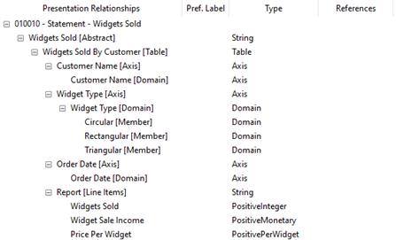
Figure 3-12. An example XBRL presentation for Widgets Sold
While this XBRL data model may seem complicated for a simple table, the advantages gained from more concepts outweigh the complexity. The relationships XBRL provides, along with the properties of the concepts, create a data model that is self-describing.
| 3.5.4 | XBRL Calculations |
The widget example in its current form does not have any XBRL calculations that can be defined. Even though Widget Sale Income is a mathematical function of Price Per Widgets and Widgets Sold, XBRL calculations do not permit the weighting within a summation to be derived from a fact. Therefore, Price Per Widgets cannot simply be multiplied with Widgets Sold to verify the facts in Widget Sale Income.
However, XBRL does offer XBRL formulas that can add this level of validation. See Section 6.2.1 and the XBRL Formula 1.0 Specification for more information on this topic.
The XBRL definitions for the taxonomy-defined dimensions appear in Figure 3-13. As a reminder, concept core dimensions (WidgetsSold, WidgetSaleIncome, and PricePerWidget) do not have definitions.

Figure 3-13. Example XBRL definitions for Widgets Sold
| 54 |
The arcrole describes the role of the arc, or connection, between the concepts. The connection between the concepts is very similar to the presentation (Figure 3-12). The XBRL definitions more clearly depict the hierarchical relationships of the dimensions, including the roles of the constituent concepts. In this example, the dimensions have a context in which they can be used (the "Context" column), and this can either be segment or scenario. Marking a taxonomy-defined dimension as a segment indicates it contains partial information of a larger piece. For example, each value of the CustomerName taxonomy-defined dimension is a portion of the total data dimension (one customer). Labeling a taxonomy-defined dimension as a scenario indicates that it contains status information about the nature of the data. For example, business facts can be reported as actual, budgeted, restated, pro forma, etc. Using scenarios allows for additional semantic context about the nature of the data being reported. In the widget example, there are no scenario dimensions.
Within the XBRL definition, the closed property of the hypercube specifies that all taxonomy-defined dimensions in this hypercube must intersect on a fact in order for that fact to be part of this hypercube. If a taxonomy-defined dimension is omitted, the default value for that dimension is assumed to intersect on the fact. If there is no default value, that taxonomy-defined dimension cannot intersect, which will prevent the hypercube from including the fact. An open hypercube removes this constraint. In the widget example, each fact must have the taxonomy-defined dimensions CustomerNameAxis, WidgetTypeAxis, and OrderDateAxis intersecting upon it. For an explicit taxonomy-defined dimension, a dimension-default arcrole allows for a concept to be the default value of the dimension, meaning facts that do not explicitly intersect with that taxonomy-defined dimension are implied to intersect with the default value when rendering the hypercube. The dimension-default is usually set to the domain concept, which implies that facts that do not intersect the dimension are a total of that dimension.
The usable property simply means this domain value is permissible in the hypercube. If the usable property is set to "false", the domain value will be excluded from the domain of valid members for the hypercube. The widget example is straightforward and has no reason to exclude data from the hypercube. A presentation that only applies to a specific widget type could use this property to exclude the unrelated widget types by setting the usable property for those member concepts to "false". When dealing with extensibility, this property is also important. It should be noted that this is different from setting the hypercube's closed property to true. A closed hypercube is still extensible.
All default members for a dimension should have their usable property set to true.
3.5.6 Other Information Necessary for the Taxonomy
XBRL requires other information to be defined when developing a taxonomy, such as concept labels and references. However, in developing the data model, these characteristics are not particularly relevant. XBRL preparers will use this information to aid in interpretation of the data model, so such information does represent an important part of taxonomy development. See Section 7.2.3 for more information on these types of characteristics.
3.5.7 Ramifications of a Closed Reporting System
The widget example discussed thus far has led to the development of a closed reporting system (one that does not permitted the taxonomy to be extended). As discussed previously, this means an XBRL report using this taxonomy cannot reference further concepts or reorganize concepts into new or different hierarchical structures. The taxonomy must be employed to represent and report data as-is.
A closed reporting design maximizes data comparability. Every report must contain the same concepts used with the same dimensionality. This makes contrasting one report with another simpler for consumers. However, it limits the ability of preparers to adjust the taxonomy to their own reporting needs. For example, the widget taxonomy as developed can fulfill all the use cases of Widgets, Inc. Should Widgets Co. develop and sell different types of widgets, for example hexagonal widgets, this taxonomy would not be able to address its reporting needs without changing the data model. Widgets Co. cannot represent their information as completely as Widgets, Inc.
| 55 |
| 3.6 | Extensibility |
An open, extensible reporting system can provide ways to address the problem of preparers being unable to represent their data sets fully. Allowing the use of extension concepts and reorganization of the concepts means a preparer could create the structures needed to express all their data points. As mentioned in the widget example, Widget Co., with their hexagonal widget type that cannot be expressed in the current closed widget taxonomy, could create a hexagonal member of the WidgetType domain. Because XBRL describes the data model as well as the allowable extensions to it, the reports of Widgets, Inc. and Widget Co. are still quite comparable.
Extensibility allows preparers to "extend" the taxonomy to suit their own reporting needs. Extensibility generally pertains to two major aspects: the ability of preparers to create their own concepts and the ability of preparers to create their own relationships among the concepts already defined in the taxonomy and/or elsewhere. This can become as complex as importing a secondary taxonomy to be used in conjunction with a primary taxonomy.
Extensibility can be something of a double-edged sword. On the one hand, increased extensibility allows preparers to create reports that may be more reflective of their specific data sets. On the other hand, if reports differ significantly, it can diminish the comparability and interpretability of each one, which somewhat reduces the utility of XBRL overall. Balancing the needs of preparers to create custom concepts and relationships against the needs of consumers in being able to compare standardized and uniform data sets can be a complex topic.
The advantages, disadvantages, and other considerations concerning taxonomy extensibility will be discussed in the following sections. Generally, in XBRL, there are no provisions to prevent or allow extensibility. Extensibility is determined by the taxonomy developers during the development process and in how the reporting system is implemented. A preparer can extend the taxonomy any way desired, but if the system that must interpret that taxonomy does not recognize the changes, the use of extensible concepts becomes erroneous. Proper taxonomy development should include guidance for preparers on how to extend a taxonomy (see Section 8.4.5).
There are some methods within XBRL to give precedence to particular relationships, and those will also be covered in Chapter 5. This chapter also provides a more in-depth analysis of the means of providing extensibility and their impacts on comparability.
| 3.6.1 | Extending Concepts |
Creating new concepts, whether they are concept core dimensions or concepts belonging to taxonomy-defined dimensions, necessarily requires defining the relationships the new concept has to the other concepts within the taxonomy. This means that when extension concepts are permissible, extended hierarchies must also be allowed.
Preparers should not create concepts beyond the scope of the data model. The guidance document should specify this.
| 3.6.1.1 | Extending Data Types |
As discussed previously, XBRL allows extended data types that build upon XML and XBRL data types. Preparers should be discouraged from creating extended data types as the data model should be designed to contain data types to represent all possible data. Because preparers should not create concepts outside the scope of the data model, extended data types will likely not be needed. Developers can of course create custom data types for the taxonomy.
| 3.6.1.2 | Extending Dimensions |
Another method of allowing extensibility is derived from the nature of explicit versus typed dimensions. A typed dimension has a specific set of allowed values, whereas an explicit dimension relies on the relationships between concepts to dictate its values. Compare, for example, the taxonomy-defined dimensions of WidgetTypeAxis and CustomerNameAxis as defined in the widget example (Figure 3-12 and
| 56 |
Figure 3-13). The WidgetTypeAxis taxonomy-defined dimension requires extended concepts in order to encompass widget types outside of the member concepts (Triangular, Circular, and Rectangular). In contrast, the values for the CustomerNameAxis taxonomy-defined dimension are constrained only by its data type. As stated previously, this design choice makes sense for this data set, where there is just a small, limited number of widget types which are specific and well-defined, but there could be any number of customer names. Because the values for typed dimensions are constrained by a data type, the only method to extend data for a typed dimension beyond its data type is to create a similar dimension to replace it.
Developers should keep in mind which dimensions of the data model may necessitate extensibility based on possible use cases. If the values are very clearly limited to a particular set, a typed dimension may provide a way to both express all the data while preventing unwanted extensibility. However, a typed dimension with a data type that is too restrictive may cause preparers to replace the dimension which reduces comparability of the data. Likewise, a typed dimension with a data type that is not restrictive enough can have the same end result.
An explicit dimension, however, affords preparers the ability to create extended concepts that are subsets of taxonomy-defined dimensions. This means preparers can further disaggregate their data as necessary while indicating how that data fits within the standard taxonomy.
| 3.6.1.3 | Extending Using Label Roles |
Concepts should have certain defined label roles created by the taxonomy developers. Concept meanings can be extended by allowing the declaration of other label roles by preparers. Extending labels can help human readability and consumers to develop better analytical models. However, in order to allow extensible labels, a certain amount of additional extensibility is required. See Section 5.4.2.2 for more information.
| 3.6.2 | Other Developed Taxonomies |
XBRL allows for importing of any taxonomy into any report. Thus, developers should decide which taxonomies, if any, preparers may use. In addition, the developed taxonomy may include other taxonomies by default. All information in the imported taxonomy's data model is available for use, including data types. However, any relationships among concepts in each separate taxonomy must be defined by the developer or the preparer. It also should be noted that the hierarchy of a well-known taxonomy (or any taxonomy) does not need to be imported if the developer wishes to provide only new relationships.
| 3.6.3 | Custom Taxonomies |
As an extension to importing well-known taxonomies, preparers may also import custom taxonomies at the developer's discretion. This should be allowed with caution as the developer will not maintain any control over the taxonomy at such point. Therefore, poor design choices or other issues may be integrated into the taxonomy without the developer's knowledge or consent. This is not a recommended approach.
| 3.7 | Moving Forward |
This process of examining sets of data, determining that data set's dimensionality, and translating the dimensionality to an XBRL data model must be repeated for all data pertinent to the project. Once this process is complete and the developer has an initial idea of the needs dictated by the data itself, the impact of stakeholders' requirements can be deeply examined. The next chapter explores these considerations.
| 57 |
(this page intentionally left blank)
| 58 |
| 4 | Assessing Overall Project Scope |
As an initial step to any major project, developers must determine the project's scope, that is, the work that must be done to deliver a product with a predetermined set of features and functions. The scope provides an essential foundation that drives the development process. As part of the scope, there are other key considerations. What is the project's purpose? How big and complex is the project? How will users and other interested parties interact with the project? What resources, skills, information, and personnel are required to meet the project's purpose successfully? Once the project is completed, how are its relevant work products documented, disseminated, and maintained? If changes must be made, who decides when and in what ways to implement them?
Key questions like these must be carefully researched and answered before work commences. In this chapter, there will be a discussion of the factors underlying these critical issues to guide developers in assessing their own project needs. Because XBRL projects can be very different in many ways, there is no one answer to some of these questions. However, a general series of steps can aid developers in focusing their process and avoiding pitfalls.
In researching and answering these questions, developers can document their own development process and the taxonomy itself as it is being created. In addition to maintaining consistent understanding of the taxonomy and its development, maintaining documentation of the development process can lead to parallel writing of public-facing documentation for the taxonomy (such as the Taxonomy Guide), which saves time and work. More information on the Taxonomy Guide and other taxonomy documentation can be found in Chapter 8.
| 4.1 | Define the Project's Goals |
XBRL presents a unique project perspective. Because it is designed as a data transport model, there will be multiple parties, multiple systems, and possibly even multiple data models involved. At the very least, there are preparers, with their business models for data, and consumers, who use that data to their own ends and may possess their own data models. The originating data model may or may not share any similarity with the consumer model. Also, depending on the scope of the project, there may be many independent preparers and many consumers, and each entity may have entirely different methods and needs concerning their data. In addition, quite often there are regulatory requirements impacting the reporting process. These requirements may stipulate certain types of data be reported, perhaps in standard formats.
It is the goal of the XBRL taxonomy to facilitate the structured reporting of data from preparer to consumer. Beyond that, the needs of any particular taxonomy and reporting system can vary greatly. Taxonomies can be:
- Created for public or private data
- Designed to meet regulatory compliance requirements or to accommodate industry (non-mandatory) requirements
- Extensible by preparers or the sponsor of the taxonomy can choose not to allow extensions
- Built on a codified standard or based loosely on an existing reporting process
Before starting development, developers should make policy decisions that are most appropriate for the taxonomy. These various policies will impact the structure, content, and use of the data produced by the taxonomy. Policies can be changed later on, but some foundational decisions should be made upfront to help shape the work to be conducted. Topics that should be explored include:
- Extensibility
- Incorporation of industry standards
- Validation requirements
- Structural requirements (for example, when and when not to use taxonomy-defined dimensions versus concept core dimensions)
| 59 |
- Phasing of development (for example, initially the taxonomy will cover a certain set of elements, but it may be expanded at a later date)
- How the data is currently gathered, stored, and/or reported and the impact those systems may have on the taxonomy
- How the data is used by consumers, including the types and structures of data required
Because policies and goals may create subtle consequences in terms of the taxonomy structure or aspects of the development or maintenance plan, it is vitally important that developers begin their process by identifying and qualifying functional requirements and use cases.
| 4.1.1 | Defining Functional Requirements |
At the core of any system, functional requirements specify operations of that system or its components as a furtherance of what that system is meant to accomplish. Functional requirements may involve technical details, data manipulation and processing, calculations, and data modeling. Understanding the functional requirements, what a taxonomy is meant to do at a direct, functional level, will guide the initial development process. XBRL taxonomies are meant to transport data from preparers to consumers, but what purpose is this transport process serving? Is the taxonomy meant to present structured data for easy comparisons among multiple reporting entities? Is it intended to ensure adherence to regulatory guidelines? Is the taxonomy meant to organize data in a specific way as to meet criteria for particular analysis systems? In some cases, taxonomies may need to meet multiple functional requirements, and these purposes must all be addressed during the development process.
It may also be important at this early stage to differentiate between functional requirements versus non-functional requirements. A functional requirement defines what the system is designed to do, while a non-functional requirement (sometimes also called a quality requirement) imposes a constraint on the system's design or implementation. Non-functional requirements may be posed as requests/recommendations and must be weighed carefully in terms of their cost versus their benefit and their impact on the overall taxonomy or its components.
| 4.1.2 | Understanding Use Cases |
Broadly, a use case is a type of requirements specification for a system that represents a list of actions or steps. This list defines interactions between users (sometimes called actors) and the system, to achieve a specific goal. Use cases may help define both functional and non-functional requirements. In terms of XBRL, use cases refer to the ways in which the data represented and transported by XBRL are to be prepared or used. For example, a use case may be a preparer employing the taxonomy to represent a table of financial information for a company. For a consumer, a use case could involve using that financial information in a data model to determine the solvency of that company. Use cases can be simple or complex, and they can directly relate to how the taxonomy itself structures data or how that data is transmitted. They can be directly relevant to the development process, or they can be a secondary consideration with implications that become important under certain circumstances.
Well-defined use cases typically capture all the possible ways the user and system can interact with each other that result in the user achieving his or her goal. They also capture the challenges that can occur along the way that may prevent the user from achieving the goal. A simple example of this is the question of extensibility. Extensibility was discussed in Section 3.6. If consumer use cases dictate the data be strictly comparable between reports, allowing extension concepts and data types in the reporting system may be contrary to this need as extensibility tends to reduce uniformity in data sets. Because use cases can guide developers in understanding the system they must represent with the XBRL taxonomy, the use cases that apply to the taxonomy must be thoroughly identified before development work can begin.
| 4.1.3 | Identifying the Data to Be Transported |
Tied to developing and understanding use cases is having a good handle on what data needs to be represented by XBRL and transported from a preparer data model to a consumer data model. Obviously representing dimensional data accurately and parsimoniously is the overarching goal of any XBRL development project.
| 60 |
Figure 4-1. Gathering the documents, forms, databases, and other sources of data
involved in creating an XBRL taxonomy
Because XBRL represents a data transport model as part of an information supply chain, the data models and data sets involved in that supply chain before and after the XBRL taxonomy is employed must be analyzed (Figure 4-1).
The process of identifying and understanding the relevant data sets may involve:
- Exploring databases, the nature of the data they contain, and their relational structures
- Understanding the design and purpose of current, relevant forms, such as forms used in reporting information to regulatory agencies or other industry officials
- Understanding current reporting mediums (document or spreadsheet-based reports and underlying systems used to develop them)
- Identifying information crucial to the report (for example, a financial report will likely focus on monetary data with other information becoming contextual whereas a report on manufacturing processes may feature other information with monetary data becoming contextual)
- Reviewing and incorporating instructions and/or guidance on how to prepare required disclosures
- Identifying potentially sensitive information
It is important to note that the taxonomy developers need not be industry experts or experts in the types of data the taxonomy is meant to represent. Also, they may not need to have a deep understanding of data architecture or engineering. However, even if they do not have this knowledge and these skills, these aspects are still are important to bring into the development process. Therefore, in order to fully understand both the range of possible use cases for the XBRL taxonomy and the purpose the taxonomy must serve, developers will need to seek the input and insight of multiple experts and stakeholders.
| 4.2 | Identifying and Engaging Stakeholders |
A stakeholder refers to an entity with interest or concern in the project. A stakeholder may be comprised of a single person, a group of people, or an entire organization. Stakeholders typically offer key opinions, insight, and experience concerning the nature of the data to be reported and how that reporting process should operate. No single stakeholder likely has the breadth of knowledge, perspective, and understanding to shape the taxonomy; therefore, it is vitally important to engage all relevant parties during the development process (Figure 4-2).
| 61 |
Figure 4-2. Different stakeholders working together to create a taxonomy
For XBRL, stakeholders are typically participants along the information supply chain. Preparers who must use the taxonomy to create reports, regulators who employ the taxonomy to control and monitor structured reporting, data intermediaries who gather information, and consumers of the data that is reported all represent stakeholders in a typical XBRL development process. Industry experts and data analysts may also offer key insight into how a taxonomy can best structure pertinent data. In the case of US GAAP reporting, for example, accountants who are involved in reporting to the US Securities and Exchange Commission both from accounting firms and from public companies, filing agents that work with public companies preparing their financials for SEC submission, investors and regulators that use SEC reported data, data intermediaries who may be charged with extracting the data from the taxonomy and presenting it to consumers, and financial reporting software providers may all be important stakeholders.
Stakeholders are often the parties who provide use cases. Their needs and wants concerning their own interaction with the taxonomy and its reporting system must be considered when deciding how that taxonomy and system should function. This helps keep the taxonomy true to its purpose. When the taxonomy is small and perhaps of limited scope or proprietary, engaging stakeholders may be a simple task. However, if the project is large and complex with the capacity to affect multiple different industry sections, identifying pertinent opinions and views may be more challenging. Still, identifying stakeholders before beginning the development process is critical regardless of the size and complexity of the project.
Particularly during the early stages of taxonomy development, developers should take care to involve stakeholders from all relevant areas of interest in the process. This could mean that at least one stakeholder from each link on the data supply chain (data preparation and consumption, for example) should be represented when determining the initial use cases of the taxonomy. Later, depending on the size and potential impact of the project, a much broader survey of stakeholders and interested parties will be required to obtain an even greater number of points of view to ensure that the taxonomy captures all possible situations.
| 4.3 | Define the Scope of the Taxonomy |
Clearly the size and complexity of the taxonomy is also a key topic to explore in the early stages of development. For taxonomies that may only impact a few interested parties (such as a taxonomy that is used internally to a company or between multiple companies within a small industry), the development process might be less complex. Fewer stakeholders could indicate fewer use cases. In addition, if the data to be reported is limited and/or simple, the number of potential use cases could also be small.
Taxonomies with large data sets or whose influence may reach a large industry or multiple industries may face a significantly more complex development process. In these cases, it is quite common for many stakeholders and use cases to be involved. It logically follows that a large project will also require more resources and a larger scale effort, including increased organization, planning, and coordination. Therefore, determining the size of the taxonomy early in the process is incredibly important.
| 62 |
| 4.4 | Identifying Relevant Systems |
Quite often other technologies and technological systems are involved in the information supply chain. These may be systems for storing data, analyzing or interpreting the data, sharing the data, or receiving the data. How XBRL fits into the systems already in place must be explored early in the design process. For example, public companies submitting financial information to the SEC may be required to do so in XBRL using the SEC's Electronic Data Gathering, Analysis and Retrieval (EDGAR) system. XBRL reports transmitted in this way must be compliant with both the XBRL financial reporting taxonomy required and with the transmission system itself. As another example, a reporting system could be in place for studies at a university to share data with other universities or within the university, such as between its internal groups and departments. A new XBRL taxonomy to standardize and structure those reports may have to be compliant with anticipated data formats, the transmission system itself, and with regulatory groups and agencies.
In addition to considering the systems involved in the transmission of data from preparers to consumers, developers must also examine sources of data themselves. Data can originate from a wide range of systems and formats depending on the preparers' environments. Looking at public company financial reporting once more, information pertinent to submitting financial reports to the SEC may come from Microsoft Word, Excel, Google Docs, internal databases, data management systems, and many other sources. Data from multiple sources and systems may be combined in an XBRL report. Therefore, XBRL developers may want to consider from where the data is coming when deciding how to best model it with XBRL.
If no formalized system exists, taxonomy developers should also consider what systems may be necessary to support the structured reporting process. This can extend to software solutions that can aid preparers and consumers in using the XBRL taxonomy, which is discussed more in Section 4.6.3.
The nature of any relevant systems might also guide developers in determining the method of XBRL transport, whether it be XML, JSON, or CSV. For example, if the reports are meant to be human-readable after submission (for example, if they are to be posted to a public space, such as a company website), Inline XBRL might be the best option for a transport method.
| 4.5 | Identifying Regulatory or NGO Requirements |
Another important facet to consider early in the development process are regulatory requirements, if applicable. Regulatory requirements, which may come from governmental agencies, non-governmental organizations, industry groups, or internal oversight within the industry, are often a large driving force in determining the taxonomy's functional requirements. Also, it is not uncommon for the regulatory agency to sponsor the taxonomy's development to ensure inclusion of pertinent rules and regulations within the taxonomy itself. If this is not the case, members of regulatory agencies are often stakeholders and should be consulted during the development process.
Depending on the number of agencies that oversee the content of the data and the goals of the taxonomy itself, the taxonomy model may be heavily driven by these stakeholders as opposed to preparers and consumers. This is another reason it is vitally important to determine the overall goals and engage stakeholders early in the development process, as stated in Sections 4.1 and 4.2.
Regulators may also have business or industry rules that can be incorporated into the taxonomy to aid in producing better quality data. Validation rules can specify that certain reported values must always be positive or negative, that certain concepts are required to be reported, or that certain concepts must always, or should never, be reported together. Business rules can be a powerful tool to ensure that data produced is consistently and accurately prepared.
| 4.6 | Other Requirements and Considerations |
Once stakeholders have been engaged, and functional, non-functional, and regulatory requirements have been established, other requirements can be considered. These include resources, software, staff, and personnel essential to ensure a comprehensive and successful development process. Depending on the
| 63 |
nature of the taxonomy being created and the breadth of the project, meeting other requirements may be a complex task and require significant planning.
| 4.6.1 | Resource Requirements |
Resource requirements necessary in the building of an XBRL taxonomy may be comprised of personnel, funding, software, testing and validation plans, and other tools that can aid in the development process. Again, depending on the scope of the taxonomy and the size of the project, resource requirements may be large and complicated. Personnel with data architecture experience, industry experience, data management specialists, and software engineers with a knowledge of XML may provide useful insight. Project managers and taxonomy developers should identify the necessary resources early in the development process to ensure proper resource scheduling, availability, and optimization.
| 4.6.2 | Support Requirements and Governance |
Building an XBRL taxonomy is truly only the first step in using XBRL as a transport model. Once the taxonomy has been employed by the industry population, it must be maintained and monitored. This is true no matter the scope of the taxonomy. As with most information models, XBRL taxonomies rarely remain static; new regulations, different models being applied to data, and changes in industry standards or the data itself can require alterations in the taxonomy. In addition, use of the taxonomy will help developers identify ways to improve it.
Therefore, XBRL taxonomies require support and governance. Support requirements may include addressing ease of taxonomy implementation and managing extensibility. They also dictate what sort of systems are necessary to implement future changes and are closely related to governance. Governance refers to the rules, procedures, and controlling entities by which a taxonomy is managed. Taxonomy governance cannot be overlooked; a system for maintaining oversight must be in place to ensure data integrity, validation, and proper usage.
Governance is an important topic that is covered in Chapter 9.
| 4.6.3 | Software Development and Developers |
As discussed in Section 4.4, different software systems may be involved in data handling through preparation, transmission, and consumption. These systems should be analyzed for their potential impact on the taxonomy. Additionally, XBRL software itself may be considered as part of the development process.
An XBRL taxonomy alone is an XML specification; it has no inherent functionality to visualize presentations or definitions, import data into or export data from XBRL reports, or ensure proper validation. Because XBRL adheres to XML standards, there is some syntactical validation as well as visualization available in any software package that can parse and represent XML. However, it will not be specific to the taxonomy itself. If there is a need for these sorts of features, taxonomy developers may need to look into software systems that support such functionality.
In large industries and domains, such as public companies reporting financial information in XBRL to the SEC, software vendors already exist and must conform to reporting standards and requirements as part of their business model. Therefore, in this case, supporting software development is in the hands of third-party vendors who must adhere to the taxonomies allowed by the SEC. Dissemination of changes in a predictable, regular, orderly manner is critical. In other situations, such as banks reporting to the Federal Deposit Insurance Corporation (FDIC), software to guide preparers in creating their XBRL report is more tightly monitored and regulated. In a case like this, the taxonomy developers and governance groups must maintain a close relationship with third-party developers to ensure accurate understanding of the taxonomy. These are two examples in a wide variety of ways in which software developers may interact with taxonomy developers. Of course, in a small reporting environment where the scope of the taxonomy is more limited, taxonomy developers may also be faced with developing their own solutions if tailored presentation viewers, custom data processing, and specific validation is necessary. Again, though, the cost/benefit of these sorts of solutions must be thoroughly assessed.
| 64 |
Generally, supporting software development falls outside the scope of this document. However, it is vital that taxonomy developers consider what sort of software packages might aid preparers, consumers, and others in understanding how the taxonomy works and how to use it. An XBRL taxonomy is only useful if there are means to create and access XBRL instance data, especially software solutions to guide preparers in producing strong, robust XBRL reports. In addition, the reporting system itself is vital in transmitting, storing, and potentially releasing XBRL data to consumers. From a very early development stage, developers should consider identifying what software solutions would be beneficial to taxonomy users and engaging with software developers or undertaking the task themselves to ensure these solutions are or will become available.
| 4.6.4 | Documentation and Communication |
Once a taxonomy has been developed, it must be properly documented. Taxonomies can be extremely complex, with hundreds, if not thousands, of concepts, and the use of those concepts must be clearly defined. An XBRL taxonomy ideally is self-describing; nothing more than its schema, its linkbases, and any referenced taxonomies should be required to use and understand the taxonomy. That said, the label roles (see Section 2.2.6.4) for each concept help define its uses, and these must be correct and properly documented. In addition, for taxonomies that have a large scope and that are sufficiently complex, guiding documents, such as preparer's guides and other supporting information, are important to consider. These are useful tools to preparers, consumers, and other interested parties in understanding the taxonomy, its data types, and the way it represents dimensional information. Having appropriate documentation can aid people of all knowledge and skill-levels as they begin to use XBRL and the newly developed taxonomy.
Changes to the taxonomy must also be clearly communicated to the taxonomy users and, in some cases, the community at large. This dissemination process should be pre-determined and generally falls under a discussion of taxonomy governance, which has been discussed briefly in Section 4.6.2 and will be explored thoroughly in Chapter 9.
| 4.6.5 | Intellectual Properties |
Depending on the size and purpose of the taxonomy, there may be legal considerations concerning the tools and information required to develop it. In these cases, developers should safeguard the taxonomy against any future issues by requiring all participants in the development process to sign intellectual property (IP) agreements, stating that these participants are freely contributing all work product and comments. For example, when XBRL US holds working groups where development is conducted, an IP statement is read at the start of each call or meeting so that contributors are aware of the bounds in which their contributions will be used. Appendix I shows a sample IP agreement that can be used for this purpose and for the public review which is discussed later in this chapter.
| 4.6.6 | Balancing Requirements |
In the creation of any complex system, there are bound to be disagreements about the goals that must be achieved and the importance of the relative outcomes. Stakeholders, which may include data preparers, data consumers, regulatory agencies, and other interested parties, may each have unique perspectives on the nature of the taxonomy to be developed. However, as discussed previously, no one stakeholder likely possesses the breadth of knowledge and experience to shape the taxonomy in its entirety.
| 65 |
Figure 4-3. Balancing the needs of preparers and consumers while meeting regulatory requirements
Once all uses cases, functional requirements, and non-functional requirements are identified, any conflicts that arise from the investigative process should be resolved. For example, it may be the case that preparers face significant time and/or monetary burden in preparing reports using the taxonomy and would therefore appreciate a simple reporting structure. Consumers or regulators may wish for more information, thus suggesting a more advanced reporting structure. These opinions come into direct conflict. A balance must be achieved between the interests of preparers and consumers while still meeting all functional requirements and regulations (Figure 4-3).
To resolve these sorts of situations, requirements can be weighted by their importance, such as items that "make or break" the project versus items that would be "nice to have" or provide moderate benefit. Certain stakeholders may see some goals as highly important while others view them as not necessary or mildly interesting. In addition, each requirement will add a level of preparation and implementation effort, which must also be balanced against the value of the data or system being created.
It is the job of the taxonomy developers to take into account all functional and non-functional requirements during the design process and determine which are essential or important to the taxonomy's success, which can be completed to bolster or facilitate ease of use or particular interests, and which are not relevant or achievable. In the example above, the burden to the preparers may be balanced by the needs of the consumers/regulators in such a way that the taxonomy allows for a minimal time and learning investment on the part of preparers as they create reports while addressing all of the points the regulators and consumers require. Cost-benefit analyses, both in terms of report preparation costs and in development costs for the taxonomy itself, can aid in these decisions. By flagging the most important requirements and/or ranking the requirements to determine their priority, a complex development process can be better organized, and the critical requirements can receive the most attention. It can also help project managers and developers allot the appropriate personnel, effort, and emphasis to each requirement while guiding task list creation and oversight. Developers should also consider the pitfalls of "creeping elegance," where simple solutions become increasingly overcomplicated to achieve functionality that is "nice to have," neat, or elegant but not strictly necessary. In these cases, the cost and complexity quickly outweigh the gains from the solution.
As a rule, developers should always bear in mind that a taxonomy cannot be "all things to all people," meaning it cannot achieve all use cases or requests/recommendations equally or at all. The most important requirements should take precedence.
| 66 |
| 4.7 | Measuring Success |
Once the taxonomy has been developed, the focus then turns to testing and validation. How can the developers know the taxonomy is working as anticipated? What models and methods will be useful in testing the taxonomy? How can interested parties (consumers, regulators, auditors, and other relevant individuals) be certain that the data is correct and valid? How can the data quality of the XBRL reports, including their accuracy and integrity, be validated?
Depending on the scope of the taxonomy, measuring how successful the transport model is can be a rather complex process. In addition, "success" to some stakeholders may not equate "success" to others. For example, one consumer may only be concerned with the numeric facts that are part of a calculation, so a calculation arc using those facts that represents an accurate summation may not matter. Another consumer may only be interested in the result of the calculation, so in this case the calculation definition is vital. Testing the taxonomy must address both of these instances. As with defining and ranking requirements and exploring use cases, determining what the measures of success are and how they will be assessed prior to development may be helpful.
In the end, validating a taxonomy may prove to be almost as important as designing it. There are multiple approaches to error-checking a taxonomy, such as establishing a data quality governance committee that can design data quality rules and ensure proper representation of information. As stated previously, XBRL has some provisions to ensure data integrity, such as concept data types and calculations, definitions, and other relationships that XBRL software can use to check for errors. As a side note, XBRL US Data Quality Committee rules are freely available and can be used to check the consistency and accuracy of XBRL-formatted information.
Beyond data quality, there is also the issue of determining if the taxonomy is truly meeting its functional requirements and goals. Is the transport model delivering enough of the right kinds of data for consumers to make use of it? Again, this returns to identifying and understanding the requirements and use cases; this will help generate end points in the development process and dictate measures of success. For large-scale taxonomies with many use cases, stakeholders, and a large variety of people using the taxonomy, involving more users through public comment and review of candidate schemas, information models, and documentation can be extremely useful. Initial development stages may have only involved the perspectives and opinions of a few key stakeholders, so a public review can open the door to additional insights. Developers can also create sample instance documents using the taxonomy as a means to test and measure the overall success of the taxonomy. Creating samples will highlight areas where concepts are missing or where the structure of the taxonomy may be cumbersome for preparation purposes. These validated and refined sample instances can be disseminated to software providers so they can anticipate how they will need to adapt to the taxonomy, which can in turn provide feedback on how the taxonomy works with the data itself. These review cycles help guide taxonomy developers in determining the measures of success and how to properly examine them to be sure the taxonomy is functioning exactly as it should.
Table 4-1 presents a general metric for success that can be used as a basis for metrics individualized to a taxonomy development project. Again, assessing how well a taxonomy is meeting the reporting needs of the group or industry may vary from situation to situation. These points and how they can be assessed should guide developers in determining how to gauge their own taxonomy's success.
| 67 |
| Metric | Assessment |
| Purpose | The taxonomy meets functional and non-functional requirements. XBRL reports are evaluated for utility by use case. |
| Quality | Data is correct and accurate, in both its expression and its interpretation. Data quality and validation rules exist. |
| Completeness | All data necessary to meet the taxonomy requirements is expressed in the taxonomy. |
| Succinctness | Unnecessary information is not present in the taxonomy. Redundant information is consolidated. |
| Uniqueness | Data can be uniquely identified with the taxonomy with no duplicative information. |
| Usability | Documentation on the taxonomy, its reporting system, and how to create/use reports is available. Supporting software is available if necessary. |
Table 4-1. Example metrics for taxonomy success
| 68 |
| 5 | Building a Transport Data Model |
| 5.1 | Getting Started |
Before a taxonomy can be constructed, developers need to create the transport data model. As one can imagine from the previous chapters, this transport model, depending on the use cases and requirements of the project, can be simple or complex. The model itself heavily impacts design choices and the taxonomy development, as well as the eventual ease of use for preparers and consumers. Of course, of paramount importance is the quality of the data that is to be transported and disclosed, and the data model must be sufficiently robust and well-designed to maintain data integrity as well as promote data validation.
When defining the model, developers must first understand their minimum data set, that is, the amount of data necessary to meet all the use cases, requirements, and regulations involved without including redundant or extraneous information. Defining this data set will guide development. After this crucial step, other topics can be considered, such as extensibility, the XBRL instance document format, and including information from other taxonomies. This chapter provides a guide for defining the data set, building the transport model, making solid design choices, and then designing the taxonomy itself.
For this chapter, the widget sales example from Chapter 3 will be used to demonstrate the taxonomy design choices. Some changes are made to the example to show differing taxonomy structures. While the discussion in Chapter 3 broadly explored data model types and analogous XBRL constructs, this chapter features a more focused discussion based on modeling a single data set from the initial stages to a completed transport data model.
| 5.2 | Developing a Model |
Once the development team has determined the project parameters as outlined in Chapter 4, work can begin on defining the transport model. With the goals in mind, developers must translate the data sets that are currently in one or more originating business models to the XBRL taxonomy. To do so, they must first describe those originating data sets, their dimensionality, and what portions of them will be included in the taxonomy.
Consider the widget example. This is a sample data set that the developed transport model must represent (Table 5-1 and Table 5-2).
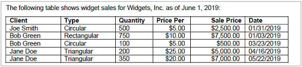
Table 5-1. Example widget sales report for Widgets, Inc.
Table 5-2. Example widget production report for Widgets, Inc.
| 69 |
Realistically, a taxonomy will contain multiple reports and far more data, and the interactions between the different presentations and tables within the taxonomy may be complex. This simpler example will explore some of these interactions as the chapter progresses.
5.2.1 Functional and Non-functional Requirements of the Taxonomy
At this juncture, developers should have both the functional and non-functional requirements of the data model outlined (Section 4.1). With these requirements in mind, developers can begin to map the requirements onto the data. If data sets already exist from current or legacy systems, developers should examine how the requirements align with the structure of these data sets. Otherwise, developers can begin to design new data sets.
In the widget example, the goal is to determine the revenue of each individual widget type. Therefore, the taxonomy may be modeled by separating costs of widget production versus widget sales. This is the functional requirement and would involve reporting total purchases of widgets and total cost to produce widgets. The available data, as defined in Table 5-1 and Table 5-2, includes components of these values but not the values themselves, though those values can be derived.
Suppose, though, that there are non-functional requirements. These could include reporting more specific information, including reporting individual sales of widgets. Perhaps a particular use case requires this information or reports currently contain this information and changing this would affect workflow. This is a non-functional requirement because this information is not needed to determine revenue by widget type. The widget example will assume that information about individual widget sales is a non-functional requirement and will be included in the modeling process.
| 5.2.2 | Determining the Minimum Data Set |
As an initial step, the developer must determine what constitutes a complete data set for an instance. This minimum data set should be free of redundant or extraneous information while representing all the necessary data. A parsimonious data model will lend itself to a well-structured, easily understandable, and logically organized taxonomy.
Depending on the breadth and scope of the taxonomy being developed, the minimum data set may not be a single data set but multiple data sets from multiple sources. For example, a taxonomy for manufacturing reporting may include numerous tables of related but semantically independent information (such as a table of inventory of raw materials for a set of products and a table of manufacturing costs associated with the same products). Each one of those may become part of the minimum data set. These multiple data sets can be derived from multiple sources, such as paper forms or pre-existing software databases.
For the widget example, the minimum data set aligns directly with the reporting requirements. Preparers must report widget unit sales by type, price, and customer, total widget purchases in US dollars, and the date of each purchase. In addition, they must report the total cost to produce each widget type. Finally, they must report the total revenue by widget type. Preparers must also report the period for which the data pertains and the reporting company name. This thus forms the minimum data set for this simple taxonomy.
| 5.2.2.1 | Current and Legacy Systems |
Current and legacy systems can provide a good basis for determining the minimum data set. While current systems are a good starting point for determining the minimum data set, developers should consider whether these requirements are still appropriate. Often when reporting requirements evolve over years or even decades, suboptimal data collection systems are adapted through "work-arounds" to avoid completely re-engineering the system. These work-arounds can "do the job" but may not be ideal, and a move to XBRL provides a good chance to revisit these issues.
| 70 |
The types of systems or data formats that may help describe the originating data set may be:
| • | paper/PDF forms |
| • | spreadsheets or CSV files |
| • | other XML forms |
| • | databases |
| • | websites |
Each of these systems has a format and structure inherent to it. It is the job of the developer to determine how those formats and systems "fit in" with the taxonomy. As said previously, developers should gather these systems and identify the necessary data while removing the redundant or irrelevant information to create a parsimonious, minimum data set upon which the taxonomy can be built.
| 5.2.3 | Creating a Conceptual Data Model |
With the minimum data set and the requirements clearly defined, the task becomes actually realizing those requirements through the taxonomy itself, i.e., defining a conceptual data model. This is the initial modeling of the taxonomy, focusing on static, overarching requirements and use cases and how the minimum data set fulfills them.
This step leads into an important part of defining the data model: developers should strive to reduce repetitive information, removing all of it if possible. If, as mentioned above, the data underlying multiple forms is being united in an XBRL taxonomy, there may be duplicative information (such as company name, for example, or widget type in the widget example). Likewise, developers should identify information that is the same in multiple data sets even if it is the focus in one data set and only contextual in another. Accounting for these situations during the design process can reduce the creation of redundant concepts and improper dimensionality. Additionally, there may be concepts that appear to be the same in multiple data sets but in reality are not, and these must be identified, separated, and unambiguously defined in the taxonomy.
| 5.2.4 | Data Architecture |
Once the requirements are defined in the conceptual data model, developers can begin to draft a logical data model, which explores the data points in the conceptual data model and, importantly, how they relate to each other and other data constructs. Because the widget example does not contain many complex data relationships, the logical data model is very similar to the conceptual data model. The goal is to report widget revenue by type, which is a derived value comprised of widget sales and widget production costs. Widget sales and production costs are in the data set supplied, but the revenue is not. If the goal is to report value X, but X is comprised of data points A, B, C (all with different contextual information), knowledge of A, B, C is required if X is not part of the current data set (as in the widget example). This is not necessarily always the case. The data architecture should be able to represent the entire minimum data set, including any required derived values as set forth by the fundamental requirements. In all cases, the conceptual data model should drive the logical data model.
Again, the minimum data set, and therefore the conceptual and logical data models, should be parsimonious. Avoid unnecessary information or redundant data.
| 5.2.4.1 | Standard Data Relationships |
Chapter 3 briefly introduced a few standard data relationships common to a relational data model. The one-to-one relationship exists or can exist between one data point and another data point. These are very common in many reporting environments. The one-to-many relationship exists or can exist between one data point and many other data points. For example, the total revenue of widget sales data point is comprised of one or more individual sales of widget types; therefore, there is a one-to-many relationship between the total sales and the sales of individual types. A many-to-many relationship defines a relationship that exists or can exist among many data points. If the fundamental requirement is to report all widget sales, this situation can produce many-to-many relationships as seen in Section 3.2.3.
| 71 |
There can also be zero-to-one relationships, where one data point of a pair can exist with or without the other data point. This concept extends to zero-to-many relationships. These relationships are more commonly seen as the construct: if data point X exists, data point Y may or may not exist. This is not to be confused with exclusion relationships, such as if data point X exists, data point Y cannot exist.
Developers should examine the minimum data set and map out these relationships among their data points as they develop their logical data model. Any modeling methodology may be employed so long as it is appropriate to the data, but the methodology should be used consistently to create coherent models.
To begin defining data relationships, developers should first determine the primary data point or points necessary to realize the requirements. In the widget example, this would be total sales and total expenses per widget type. This means that the widget type semantic identifier will define the data relationships. Building on this, additional relationships can be determined. Total sales and total expenses are comprised of one or more individual sales and expenses, respectively. These are one-to-many relationships. There are one-to-one relationships for each component of the sales and expenses. An individual sale has only one widget type, one client, one date, etc., and each individual expense is comprised of one widget type, quantity, and price per widget.
Note that because the fundamental requirements stipulate that only sales by widget type be reported, sales that include more than one widget type must be separated by type to fit the data model. This may not align with how sales data is typically recorded in the industry (if it is tracked by client and date or an invoice number, for example). Developers should decide whether this design choice is a burden on preparers or if the data model should be adjusted. For this example, the data model will not be adjusted to account for this.
This draft of a possible logical data model for the widget taxonomy appears in Figure 5-1.
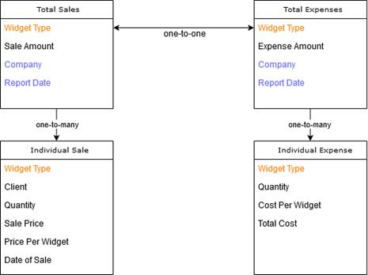
Figure 5-1. A possible initial logical data model for the widget taxonomy
The items in orange are the same for each section of the model. The meaning of Widget Type does not change despite its context. However, Quantity does gain different meaning depending on its context (for example, sale versus expense). One could consider Widget Type to be a key for the tables that not only logically links the components of the data model together but also confers uniqueness to the data point. More is discussed about uniqueness in the next section.
| 72 |
The items in blue are also the same, but they pertain to the individual report not the logical data model. While it is important to account for this information in the planning process, these data points do not belong in the XBRL taxonomy but are rather defined in an XBRL report. Because they are constant within the report, there is no need for contextual knowledge of this information.
| 5.2.4.2 | Defining Uniqueness |
As developers map and define data relationships, uniqueness should become apparent through those relationships. The same data point may appear in multiple places within the logical data model, but each appearance should either be unique through its context (relationships with other data points) or be the exact same data point (interpreted the same way). This is an important step in creating the model. If developers find they cannot represent uniqueness with the relationships they have designed, more data (and therefore more contextual information) may be necessary.
In the widget logical data model, the Widget Type defines data that is unique through its context, whereas the Company and Report Date are examples of data points that are exactly the same. It should be noted that in the current data model, if two individual sales are made by the same client on the same day of the same amounts of the same widget type, the data will not be unique. In this case, the sales either must be summed by the preparer or an additional arbitrary dimension must be added to maintain uniqueness. This could be an invoice or order number. See Section 3.3.1.2 for more information.
| 5.3 | Transforming a Data Model to a Transport Model |
With a logical data model defined, developers can create a physical data model, which represents the model as it will appear in XBRL format. The physical data model should indicate a) all the concepts of the taxonomy, including their properties, and b) the relationships among the concepts (as arcs or through an abstract hierarchical structure, for example). This physical model then becomes the transport model.
| 5.3.1 | Data Types |
Each data point in the logical data model should be examined and labeled with its corresponding data type. As a general rule of thumb, the most restrictive datatype should be used where possible. For example, a numeric value should have a numeric data type that allows for the mathematical precision that the data requires. If the data point contains a monetary amount that will never be more precise than two decimal places, a data type can be chosen or created that enforces this constraint. Developers should also bear in mind the relationships among the data points may influence the constraints of the data type. For example, a data point that normally represents only positive values may become negative in a specific context within the data model, such as an adjustments context. Inventory lost would normally be a positive value, except in the event where inventory may be found or restored. In this case, it would become negative.
All datatypes must be drawn from the XBRL standard datatypes (see Section 2.3.1 and Appendix A). If there is no standard datatype that can accurately represent a data point, developers may create a custom datatype.
For a discussion of the possible data types for the widget taxonomy and the reasons behind their selection, see 3.4.1.1.
| 5.3.1.1 | Defining Values through Enumeration |
There may be situations where the fact reported for a specific concept must be limited to a certain set of values. For example, in the Orange Button Taxonomy, the concept ApprovalStatus has a defined set of fact values which are: "Not Submitted", "Submitted", "Conditional Approval", "Final Approval", and "Declined". Taxonomy developers can create enumerations specific to their taxonomy as a means to limit what preparers can enter as a value, which can improve the consistency and comparability of the data reported. Enumerated lists can also be comprised of a finite set of values (such as US area codes), which are not listed in the taxonomy because it would not be practical to include them. Taxonomy developers can add metadata associated with the enumerations on a list to help preparers better understand what they mean. They can also give preparers the ability to add items to the enumerated list, although this may reduce the
| 73 |
consistency and comparability of reported data. As per the XBRL Specification, enumerations can be created through XML schema datatypes.
The Extensible Enumerations Specification expands on this and allows labels and references to be associated with enumerations. It also allows for the use of enumerations as dimensions. There may be situations where an enumerated list must be used as a dimensional qualifier for typed taxonomy-defined dimensions (as discussed in Section 3.4.2.2). For example, a taxonomy may need to be able to report sales by a defined set of products: A, B, and C. An enumerated list of products (A, B, C) can be defined as a typed product dimension and reported with sales as a concept core dimension. The Extensible Enumerations Specification also explains how enumerations can be extended and how to indicate that a particular enumeration cannot be reported. XBRL International members can learn more about leveraging the power of enumerations through technical articles "Enumerations in XBRL" and "How to define a list of allowed values". For information on becoming a member and gaining access to these topics and others, email info@xbrl.us.
| 5.3.2 | Creating XBRL Dimensions |
Each data point in the logical data model must be represented by one concept core dimension and other taxonomy-defined or core dimensions. The concept core dimension should pertain to the semantic meaning of that data point. Given the relationship of that data point to other data points, different sets of taxonomy-defined dimensions may be used with the concept core dimension. For example, one table may contain data for total sales by region and another may contain data for total sales by product type, but the concept core dimension for both tables is sales and therefore must contain the same value for the total. By using the same concept core dimension, this relationship between the totals is enforced. The set of other XBRL dimensions differ, which also confers uniqueness.
Only concept core and taxonomy-defined dimensions are part of the XBRL taxonomy; other core dimensions are defined in the instance document by the preparer. This is because the semantic meaning of these core dimensions is static and defined in the XBRL Specification; only the values change from report to report. Taxonomy-defined dimensions and concept core dimensions should not be created for the contextual information the other core XBRL dimensions represent, such as units or reporting period. Refer to Figure 2-17 for more information on what definitions are contained in the taxonomy versus the instance document.
Note that data points may have the same natural language name (such as "cost" or "quantity") but semantically or contextually mean different things. Developers should strive to identify these situations and ensure concept names are unique and unambiguous.
As concepts are defined, developers should also describe their properties, labels, documentation, and relevant references. This begins to build the library of information that will become the transport model. The logical data model for the widget taxonomy, with its concept names and data types defined, now appears as:
| 74 |
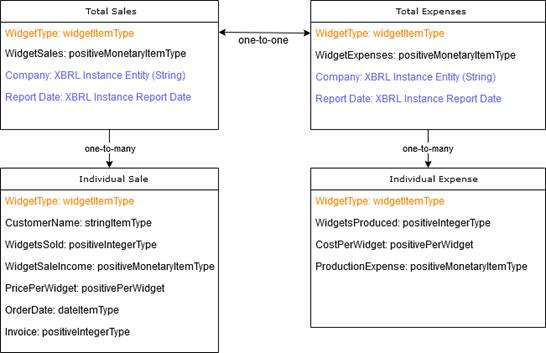
Figure 5-2. A more refined logical data model for the widget
taxonomy with concept names and data types
The transport model in Figure 5-2 is not yet complete because the relationships among the concepts have not been modeled. To do this, taxonomy-defined dimensions must be created.
| 5.3.2.1 | Defining the Concept Core Dimensions |
This is a crucial step in designing the taxonomy transport model. The concept core dimensions directly relate to the data that must be reported as per the fundamental requirements. Therefore, these should be defined first, with all other contextual information becoming taxonomy-defined dimensions.
In general, understanding data becomes more complicated with increasing contextual information. Therefore, it is often desirable to represent as much relevant information as possible with concept core dimensions. In Section 3.3.1.2, there is a discussion about the implications of representing data with concept core versus taxonomy-defined dimensions. In the widget taxonomy, the requirements dictate only that the widgets sold and widget expenses be represented by concept core dimensions; these are the key reporting values. However, more information lends itself to concept core dimension representation to make the model more simplified and easier to understand.
| 75 |
The data model for sales in the widget taxonomy could have the following design progression:
| Initial Design | Adding Uniqueness | Final Model | |||
| CustomerName | TDD | CustomerName | CCD | CustomerName | CCD |
| OrderDate | TDD | OrderDate | CCD | OrderDate | CCD |
| PricePerWidget | TDD | PricePerWidget | CCD | PricePerWidget | CCD |
| WidgetSaleIncome | CCD | WidgetSaleIncome | CCD | WidgetSaleIncome | CCD |
| WidgetType | TDD | WidgetType | CCD | WidgetType | TDD |
| WidgetsSold | TDD | WidgetsSold | CCD | WidgetsSold | CCD |
| Invoice | TDD | Invoice | TDD | ||
|
CCD = Concept Core Dimension TDD = Taxonomy-defined Dimension | |||||
Table 5-3. The widget taxonomy design process for the individual widget sales table
In Table 5-3, the design process can begin with an initial minimum data set, wherein, by the requirements, only the WidgetSaleIncome concept is a concept core dimension. All other concepts are taxonomy-defined dimensions, which add contextual data and uniqueness to each data point. This model is quite complex for such simple data when organized this way; a single data point is reported using five taxonomy-defined dimensions to ensure that the value is unique and unambiguously understood. Uniqueness can be gained through adding an arbitrary XBRL dimension, in this case Invoice. Adding this dimension significantly reduces the complexity of the model as seen in the second column. This is because Invoice is the only contextual information necessary to create unique data (as each sale should have its own invoice number). This allows the other concepts to become concept core dimensions.
However, the requirement of the taxonomy is to compare widget sales by widget type. Therefore, widget type should be contextual and this is represented in the final column by returning it to a taxonomy-defined dimension. This choice is strictly based on the requirements of the taxonomy. If the goal is to compare sales by customer, CustomerName would become a taxonomy-defined dimension. Developers should adjust the model to meet the requirements as succinctly and clearly as possible.
It is also possible to model WidgetType as both a concept core dimension and a taxonomy-defined dimension, which lets the preparers decide how to implement this dimension. As is often the case, this provides greater flexibility but reduces comparability. This approach is advantageous for optional information.
This process of differentiating between concept core and taxonomy-defined XBRL dimensions should be completed for every table or other relevant data set coming into the taxonomy. The same dimensions can, and potentially should, appear on multiple tables if their semantic meaning is constant. It is also possible for a concept core dimension to become a taxonomy-defined dimension between different tables and vice versa, depending on the needs of the data model. If this is the case, developers should advise preparers on which concepts apply to which tables.
| 5.3.2.2 | Whether to Use Explicit or Typed Taxonomy-defined Dimensions |
Once developers have identified the taxonomy-defined dimensions in the data model, they must decide whether those dimensions will be typed or explicit. Section 3.4.2 briefly discussed the difference between explicit and typed taxonomy-defined dimensions. Depending on the nature of the relationships and the need for extensibility, developers must decide which kind of taxonomy-defined dimension to use. Regardless of the type of the relationship (one-to-many or many-to-many, for example), either of these kinds of dimensions can apply. The domain of data to be represented should dictate the choice.
| 5.3.2.2.1 | Explicit Taxonomy-defined Dimensions |
Explicit taxonomy-defined dimensions allow the preparer to specify the domain and values for that domain. They can also be used when the XBRL dimension allows for concepts that may be hierarchical in nature.
| 76 |
This is the only method of expressing taxonomy-defined dimensions that supports a hierarchical domain. They do not have to be used solely for this purpose; they can also represent flat relationships.
As an example, a taxonomy-defined dimension to represent widget types could be implemented as an explicit taxonomy-defined dimension. If there is a set number of widget types (Circular, Rectangular, Triangular), the domain would include all these widget types and only these types. Explicit taxonomy-defined dimensions are well-suited to these situations where there is a pre-defined set of members for a dimension. If developers allow extensibility, preparers could add their own member items to represent custom widget types and include them within this domain. Additionally, with extensibility, preparers could narrow the domain of this axis. If a company produces only variations of circular widgets, the preparer of this report could create a domain XBRL dimension explicitly for circular widgets and member concepts for the specific circular types. Because the preparer would define the relationships among these concepts and this taxonomy-defined dimension, comparability is still maintained with the addition of their specific information. For more information on extensibility, see Section 5.4.2.
| 5.3.2.2.2 | Typed Taxonomy-defined Dimensions |
A typed taxonomy-defined dimension limits the domain of potential values to the specified data type. Depending on the data type, this can be very broad or extremely narrow. Importantly, it limits extensibility because no values outside of that data type can be part of the domain. Additionally, there are no methods of representing hierarchical relationships among members.
As an example, if the widget type taxonomy-defined dimension is implemented as a typed dimension with a string data type, preparers could enter almost any information as a widget type. Note that this may greatly reduce comparability, but it increases preparer flexibility without needing extensibility. However, if the data type is limited to an enumeration of string types, preparers would have no choices but those set forth by the developers in that list unless the enumeration itself can be extended.
| 5.3.2.2.3 | Choosing the Best Kind of Taxonomy-defined Dimension |
The nature of the data and the reporting requirements should help dictate how to select the appropriate kind of taxonomy-defined dimension. In general, typed taxonomy-defined dimensions should be employed when the domain of the axis is fixed or when the individual values of the axis are not relevant to the data model. For example, in the widget taxonomy sales table, the invoice dimension has values that are not necessarily relevant to the data model or the fundamental requirements of the taxonomy but rather maintain uniqueness among the facts. Therefore, this dimension is best suited as a typed taxonomy-defined dimension, potentially with an integer or string data type depending on how the order identifier is represented.
Conversely, widget type can be handled as either an explicit or typed taxonomy-defined dimension. The sections above explore the ramifications of both decisions. In the widget taxonomy, WidgetType will be treated as an explicit taxonomy-defined dimension.
| 5.3.2.3 | Completing the Data Model |
At this stage, developers can begin to collect their library of concepts. In addition, some concept properties, such as their names, data types, and labels, can begin to be defined. Any relevant regulatory governance can be defined as well. Alongside this process, developers may choose to begin documenting their taxonomy. Note that the library of concepts may not be complete at this time as abstract concepts necessary to represent additional relationships may be required.
This is also an ideal moment, with most of the physical data model developed, to double-check that the original requirements of the taxonomy are still being implemented and that all the data included in the model is necessary or otherwise relevant.
Returning to the widget taxonomy, the requirements outlined in this chapter do not actually require the break-down of the expenses by widget type to be reported (Section 5.2.1). The number of widgets produced
| 77 |
and the production cost per widget are not necessary to meet the functional requirements. Therefore, there is no need to track this information within the taxonomy. The final model may appear like this (Figure 5-3):
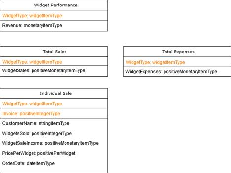
Figure 5-3. The final physical data model for the widget taxonomy
The taxonomy-defined dimensions appear in orange text. The concept core dimensions are beneath them in black text. The information that is included only in the XBRL report (the reporting company and report date) have been removed. Note that a fourth table has been added for widget performance. This is a derived value and representative of the taxonomy's functional requirement: reporting how each widget performs as a function of sales and production costs. Adding this table ensures that the taxonomy meets its goals.
Because the requirements and minimum data set allowed for the removal of CostsPerWidget and WidgetsProduced and for ProductionExpense to be incorporated into WidgetExpenses, Table 5-2 cannot be produced from this data model. Since this was not part of the requirements, it is not a concern. It is possible in this case to drop this information from the conceptual and logical data models and therefore not model these data points at all. In simple taxonomies where the relationships are more obvious, this can be an easier approach.
5.3.3 Represented Relationships
XBRL linkbase documents define the relationships among the concepts. These relationships have been discussed throughout this handbook, but they most often include presentations, calculations, and definitions. The relationships among the data points, and therefore the concepts related to those data points, should become clear from the physical data model (Figure 5-3).
The relationships within the logical data model become linkbase documents for the taxonomy. Every concept core and taxonomy-defined dimension should appear in these relationships, unless upon subsequent releases of the taxonomy, the dimension has been deprecated. In addition to presentations, developers should define calculations and definitions where possible to assist in both interpretation and validation of the data. Finally, developers could use linkbase documents to indicate to preparers what information is required for the minimum data set if more concepts are available than what is necessary to prepare a particular type of report.
| 78 |
The widget example lends itself to two presentations: individual widget sales by widget type and widget performance by type. There could be up to four presentations, but including these additional presentations adds little unique or relevant information. The widget performance presentation would include both the total sales table and the total expenses table. In addition, the revenue by widget type concept can be derived by a calculation between the WidgetSales and WidgetExpenses concepts for each widget type. This represents an imputed value.
WidgetSales, however, cannot be derived through a calculation with the way the model is currently structured. This is because calculations cannot bridge between axes, and WidgetSales is the summation of all WidgetSaleIncome concepts across the Invoice axis.
The definition and presentation linkbases are very similar for this taxonomy. In addition, developers should consider other pertinent linkbases, such as labels and references. These are not relevant from a data modeling standpoint and are discussed in Section 7.2.2.
| 5.3.4 | Intrinsic Relationships |
In addition to directly defined relationships, logical data models often contain intrinsic and other logical relationships that XBRL may not directly represent. Intrinsic relationships include data points that must have the same value, data points that require the presence of other data points, and data points that cannot exist with another data point defined. These relationships may depend heavily upon the nature of information the model represents. If there is no way to easily represent this information in the transport data model through a definition or other concept arc, developers may want to consider adding data validation rules to ensure these intrinsic relationships are upheld.
In the previous section, there was no way to ensure WidgetSales is the summation of all WidgetSaleIncome concepts across all Invoice axes. This cannot be accomplished with an XBRL calculation. However, this relationship can be achieved with an intrinsic relationship. To do so, there are multiple options. The first would be adding validation as mentioned above. This is outside the scope of the taxonomy itself but rather pertains to data quality rules (see Chapter 6). The second option involves restructuring the data model slightly. WidgetSaleIncome and WidgetSales could be represented as a single concept core dimension and thus become one XBRL fact. When the concept core dimension does not intersect with an Invoice taxonomy-defined dimension (such as in the Total Sales table), the value of this fact is representative of the domain of the Invoice taxonomy-defined dimension (i.e., a summation of all purchases). This would be represented with definition relationships. As a side-effect, the purchase total will appear not only on the total sales table but also on the individual sales table, even though the value is only reported once. Note XBRL enforces that the values are the same in both tables because they become the same fact, not necessarily because the summation of each individual widget purchase truly equals the total purchase.
The discussion of creating the widget taxonomy continues in Chapter 7. The following sections discuss other important aspects of taxonomy development unrelated to the data model.
| 5.4 | Reporting System Design |
Quite often the transport model will be part of a larger reporting system. This reporting system may be comprised of multiple components, and it may perform a multitude of tasks, including receiving XBRL reports, validating them, storing them, and potentially disseminating them to data consumers. Reporting systems can be very large, such as the SEC's EDGAR system which receives and publicly posts XBRL-structured financial reports from companies in the United States and abroad. This centralized repository has many preparers and data consumers involved in its information supply chain. Conversely, reporting systems can be far more contained. For example, in the Work-In-Process industry, independent insurers have clients who directly provide XBRL information. These clients can, in turn, supply that information to multiple insurers, but the information supply chain is generally composed of a limited number of parties.
The size and nature of the reporting system is a consideration for the project design stages (see Chapter 4). This system should meet the functional requirements of the reporting project and support successful use of the taxonomy. Many design choices concerning the reporting system, including the particular computer software and hardware requirements, are beyond the scope of this document. However, taxonomy developers will want to examine how this reporting system will interact with and impact the
| 79 |
transport data model of the taxonomy. The nature of the reporting system can influence the taxonomy and vice versa. The following sections examine some reporting system design choices and how they relate to the taxonomy.
| 5.4.1 | Transport Format |
While the transport format has minor influence on the taxonomy development process, it has major implications both for XBRL report preparers and for data consumers. Note again that the taxonomy schema and linkbase documents themselves must be provided in XML. When extensibility is allowed, additional schema documents and linkbases can be provided by users; otherwise, they may be referenced from a common location. Transport formats have been briefly discussed in Chapters 1 and 2 and are discussed below in greater detail. Developers can allow multiple transport formats or choose not to specify a format at all. The decision is dependent upon the goals of the taxonomy, the information supply chain itself, and the needs of the industry. Regardless of the end selection, guidance should be provided to taxonomy users about the transport format(s) and how they may be used to create an XBRL report (see Chapter 8 for more information on documenting the transport format).
| 5.4.1.1 | XBRL as XML |
Instance data can be stored in XML format (dictated by the XBRL Specification), which is the traditional transport format for XBRL data. XML tags the data with elements defined in one or more schemas, which can express a wide range of data types. An advantage of using XML as a transport format is that developers do not need to deal with multiple file types and formats, as all documents and supporting linkbases are in XML. Additionally, any XML validator can validate the syntax of the file as well as basic data types. Finally, XBRL that is based on XML can better handle mixed content (such as including JSON or CSV formatted facts or binary data), as is commonly found in business and financial reporting.
The default encoding for XML is UTF-8, although some systems only accept ASCII using character entities for special characters. A recommendation for XBRL-XML mapping is available with the XBRL Open Information Model.
| 5.4.1.2 | Inline XBRL |
Inline XBRL (iXBRL) allows the instance data to be embedded in an XHTML document. This is iXBRL's principal advantage, that machine-readable data is located right within the human-readable report. Another advantage is that when users edit the HTML document, they are editing the XBRL data at the same time.
Characters in Inline XBRL can be encoded as legal XML character entities. Depending on the platform used, it may accept either ASCII or UTF-8. The default encoding for XML and XHTML is UTF-8.
| 5.4.1.3 | JSON |
JSON, or JavaScript Object Notation, is a text format that provides for the expression of complex structured data. A number of programming languages will natively create and read JSON. An advantage of using JSON for the instance document is that many web development languages can easily parse and write JSON natively, leading to a fast development cycle of a XBRL enabled webpage.
Text within JSON objects is usually Unicode encoded as UTF-8. A recommendation for XBRL-JSON mapping is available with the XBRL Open Information Model.
| 5.4.1.4 | CSV |
CSV (Comma Separated Values or comma delimited) is another option for transport. An advantage of using CSV is it is very easy to parse, read by many computer languages and software packages, and is very compact. However, because CSV is a flat structure, it is harder to represent many XBRL constructs and is therefore hard to read. CSV can be a good option for reporting information where the data structure is fairly constant and only the fact values change from report to report. In addition, preparers may already be familiar with CSV as it is common in spreadsheet usage.
| 80 |
Aside from begin a simple format, CSV has the advantage of have very little coding overhead when representing very large volumes of facts.
Text within CSV has no default character encoding for XBRL data it is assumed as UTF-8 even without the UTF-8 header.
A recommendation for XBRL-CSV mapping is available with the XBRL Open Information Model.
| 5.4.2 | Extensibility |
A fundamental design question for any XBRL reporting environment is whether is the taxonomy is extensible by users and to what extent. Extensibility has been discussed in Section 3.6, but as a review, developers may choose to allow users to extend an open reporting system by adding custom concepts, datatypes, labels, presentations, calculations, footnotes, and additional taxonomies. Permitting extensibility is a major design choice with numerous implications. While it allows preparers to represent their data perhaps more accurately through their own constructs, it can significantly reduce comparability among XBRL instance documents.
When deciding to allow extensibility, developers should first consider the reasons why the reporting system should be open. The reasons will guide determining the methods through which preparers can extend the taxonomy. Developers should also understand the following when considering an extensible reporting environment:
| • | The XBRL taxonomy itself neither allows nor disallows extensibility. It is the reporting system that defines which taxonomies or sets of taxonomies are permitted. XBRL software involved in the reception and processing of XBRL reports should enforce extensibility rules by validating those reports against data quality and other rules, and, if extensible taxonomy constructs are used incorrectly, issue errors. Note that in a decentralized reporting system, moderating extensibility may be very difficult. |
| • | If developers choose to allow extensibility in their reporting regime, it should be well documented. It should be clear to preparers how and to what extent they are allowed to extend the taxonomy to suit their individual reporting needs. |
| • | To create a clear, consistent reporting process, any XBRL software designed to guide preparers and consumers in interfacing with the taxonomy should respect extensibility rules. These rules should be compliant with validation rules used by XBRL report reception software. |
| • | It should be noted that extensibility is not a replacement for updating and maintaining the taxonomy. Developers should periodically examine if the taxonomy should be changed to include commonly used custom concepts or if unclear documentation is leading to overuse of extensibility. |
| • | There may be cases where extensibility is the optimal solution, and the XBRL taxonomy and reporting system alike should be designed to encourage preparers to create custom constructs as required. For example, in the US GAAP taxonomy, certain explicit taxonomy-defined dimensions have no pre-defined members. Member names for the OtherOwnershipInterestsByNameAxis dimension will vary by reporting entity and are meant to be defined by the preparers on an individualized basis. In these situations, the reporting system and documentation should be adjusted to express that this is the desired approach. |
| • | Be mindful that extensibility exists in balance with comparability. There may be instances where extensibility is unavoidable or even desirable, but there may also be a significant trade-off with the ease of comparison between XBRL reports when the taxonomy is highly extensible. Custom concepts present in one report, for example, may have no analog in a similar report, which makes analyzing the data in a structured framework more challenging. The following sections work through some scenarios related to extensibility decisions and their impact on comparability. |
| 81 |
| 5.4.2.1 | Allowing Custom Footnotes |
With this method, preparers can link their own footnote text to facts using the note core ID dimension. Adding footnotes in this way has very little impact on the comparability of the data.
Impact on Comparability: Low
Requires: None
| 5.4.2.2 | Allowing Custom Labels |
Preparers will be permitted to create and use custom labels for the concepts already included in the taxonomy. Again, the impact of this on comparability is very low because this only changes the human-readable documentation associated with the concepts.
Impact on Comparability: Low
Requires: None
| 5.4.2.3 | Allowing Calculations, Definitions, and Presentations |
In this case, preparers are essentially allowed to rearrange concept relationships to better suit their reporting needs. These concepts already exist in the taxonomy and are not being changed by the extensibility; rather, the change appears in how the concepts relate to one another. Because the concepts themselves remain stable and the taxonomy-defined relationships remain available, the impact on comparability is low.
Impact on Comparability: Low
Requires: None
| 5.4.2.4 | Allowing Custom Taxonomy-Defined Dimensions |
If the taxonomy makes use of a dimension with explicit members, it may be reasonable to allow preparers to create their own members for this dimension. For example, if multiple companies need to report their widget production by type, allowing them to create their own taxonomy-defined dimensions for widget types creates enhanced accuracy in the report.
Depending on the explicit dimension, extensibility may not be necessary at all because the set of allowable values does not change very often from reporter to reporter. For example, if all reporting companies for a taxonomy are located within the United States, there is no reason to permit extensibility for a taxonomy-defined dimension representing a geographic location.
Impact on Comparability: Medium
Requires: Custom labels, definitions, presentations
| 5.4.2.5 | Allowing Custom Concept Core Dimensions |
This type of extensibility permits preparers to create their own concept core dimensions which requires preparers to define the properties and labels of those concepts, as well as how the custom concept relates to other concepts within the taxonomy. This may be appropriate for a very open taxonomy or one in development, where developers may be interested in or relying on preparers to add concepts to more fully flesh out the reporting environment or add depth to the taxonomy.
Impact on Comparability: High
Requires: Custom labels, calculations, definitions, presentations
| 5.4.2.6 | Allowing Custom Data Types |
With this type of extensibility, preparers can create their own data types which may be needed to represent newly created custom concepts. This may be appropriate for a very open taxonomy or one in development, where developers may be interested in or relying on preparers to add concepts to more fully flesh out the reporting environment or add depth to the taxonomy.
| 82 |
Note that, because the properties of another schema's concepts cannot be changed, preparers cannot link custom data types to pre-existing concepts. These can only be applied to custom concepts. This therefore reduces the impact on comparability to a level similar to using custom concepts.
Impact on Comparability: High
Requires: Custom concept core dimensions
| 5.4.2.7 | Adding Other Taxonomies |
With the highest impact on comparability, preparers can be permitted to include other taxonomies in their reports. This opens other taxonomies (their concepts, data types, and concept relationships) for use within a single XBRL report. While this affords preparers great power in that they include additional taxonomies as they see fit or necessary to express their data, it also can drastically reduce comparability. Developers should permit extensible taxonomies with extreme caution.
If other taxonomies are necessary, developers can include them in an official capacity or allow preparers to include concepts very strictly from these specific taxonomies. This approach greatly reduces the impact on comparability, as the inclusion of these other taxonomies becomes a structured part of the taxonomy itself.
Impact on Comparability: High
Requires: Custom calculations, definitions, presentations
| 5.4.3 | Methods to Display and Consume the Data |
With the transport model defined, developers can turn their attention to supporting systems. These may include systems to help preparers create XBRL reports, systems to view and store XBRL data, and systems to extract the information from one or more reports for analysis. The development needs for these systems will vary greatly by taxonomy and industry. However, it is important to place the taxonomy in the information supply chain and determine how data will reach each stage and how it is to be used in that stage and in the stages after it.
It also bears repeating that involving third-party software developers, if third-party software is to be allowed for the taxonomy, is essential during both the taxonomy development process and afterward (see Section 4.6.3). Robust, well-designed supporting systems are key to the taxonomy's usability.
| 5.4.3.1 | XBRL US API |
The XBRL API (Application Program Interface) was developed by XBRL US to help users and developers in building robust XBRL-based data systems. For data consumers, the API can aid in accessing timely, structured XBRL data with high resolution. For developers, the standardized API and data utilities provide a single interface to gather data from an XBRL repository/instance. Developers can use the API to connect a custom database to a software front end, which can greatly enhance the utility of a reporting system for data consumers and regulators.
More information about the XBRL API is available on XBRL US' website and in the API documentation (http://files.xbrl.us/documents/XBRL-API-V1.4.pdf).
| 5.5 | Other Modeling Considerations and Common Pitfalls |
Developers should strive to create a data model that encapsulates their reporting requirements and the minimum data set as completely and parsimoniously as possible. However, it may not be possible to foresee all considerations and circumstances before a data model is put into practice. The following sections outline some of the more common complications that may arise and potential methods of handling them.
| 5.5.1 | Entity-specific Disclosure |
As mentioned above, there may be situations where a particular entity has reporting needs the taxonomy may not address. Quite often these are needs that simply are not anticipated by taxonomy developers,
| 83 |
particularly when the taxonomy may be used by many preparers across multiple industries. Extensibility is a potential solution to this type of problem. However, developers should be wary of allowing customization to become a crutch. If preparers are commonly creating a great many custom components to express their data, developers should re-evaluate how well the taxonomy (and its underlying data model) fits the reporting requirements. The minimum data set and the resulting conceptual and logical models may be insufficient. It is also possible that the taxonomy is too general or, conversely, too specific. When a taxonomy is too general, preparers may not realize broad concepts can apply to their particular data. When a taxonomy is too specific, concepts that are applicable to some cases may not be to most cases or too much emphasis may be placed on specific reporting situations that do not broadly address the needs of most preparers. These are all situations that can be remedied by re-examining the development process. A thorough public review and test cycle (see Section 9.1.2) can help developers identify deficits like these before the taxonomy is implemented.
Developers should also be aware of the possibility that preparers are extending a taxonomy because documentation on taxonomy usage and report preparation is not clear, comprehensive, or perhaps even available. A lack of understanding of when it is appropriate to extend the taxonomy versus when it is better to use the existing taxonomy constructs can lead to too much extension and disclosures that are more entity-specific than is necessary.
There are situations, however, where entity-specific disclosure may be unavoidable or even a desired outcome. These reporting cases may require particular modeling and use case analysis approaches. XBRL International recommends "anchoring" entity-specific disclosures by establishing a relationship to base taxonomy elements and using a calculation relationship wherever applicable and possible. XBRL International members can learn more about entity-specific disclosure and how to handle them through technical articles available on XBRL International's website under the Guidance section, including "How to address Entity-Specific Disclosures", "Investor and data user requirements for entity-specific disclosures", and "Analysis of ESDs and ESD Use Cases". For information on becoming a member and gaining access to this topic and others, email info@xbrl.us.
| 5.5.2 | More than One Entity Per Report |
A single report may need to include information pertaining to more than one entity's information. This may occur when a company must also report information about its subsidiaries or audit firm, for instance. Note that this is a different situation from reporting information that relates to only one entity but may encompass data about other entities, such as a company disclosing information about its customers. In the first situation, there are separate entities and each is a reporting entity; each must report its own distinct but related information in one XBRL report. In the second, one reporting entity is reporting its information about other entities in the context of its relationship with them; the other entities are not reporting entities.
Developers should try to anticipate the need to report information from multiple entities within a single report as much as possible. There are multiple modeling approaches that can be taken:
| • | Entity-specific concepts, which can indicate the relationship between entities in their name. This is an approach best suited for situations where there is at most one additional reporting entity (such as a company and its accountant both filing a single XBRL report). Under this approach, concepts such as ParentIdentifier and AuditorIdentifier could be created. When more entities are involved, having a concept-based method of representing them becomes overly complex. |
| • | Entity-specific taxonomy-defined dimensions, which can indicate the relationship among entities through the dimensional structure. These dimensions can be typed or explicit depending on the number of anticipated additional reporting entities. This approach is best suited when there is a known but limited number of entities (such as a company, its accountant, and its auditor). |
| • | Additional extension taxonomies. When the number of concepts and dimensions required to cover the breadth of information is very large, an extension taxonomy may be a good organizational method. This segregates the taxonomy structures necessary for multiple entity reporting and allows preparers the option of using the taxonomy if appropriate. This approach is well suited to situations where there may be many or an unknown number of additional entities (such as a company and its subsidiaries). |
| 84 |
For more information and guidance on this topic, XBRL International members can access "How to model information relating to multiple entities". For information on becoming a member and gaining access to this topic and others, email info@xbrl.us.
| 5.5.3 | Dimensionally Invalid Facts |
Dimensionally invalid facts most commonly occur when a preparer attempts to use an explicit dimension member on an axis where it should not occur. This is also referred to as using the member outside of its hypercube. When a reporting system does not permit extensibility, dimensionally invalid facts cannot occur; the taxonomy structure is set by the reporting system and its hypercubes are closed. Preparers may not create their own members or use members outside of their hypercubes.
When a reporting system allows for extensible concepts and taxonomy-defined dimensions, it is possible that preparers will be able to create their own dimensional axes or use other axis members on taxonomy-defined dimensions beyond the default presentations included in the taxonomy. For example, an explicit taxonomy-defined dimension called GeographicLocation may contain the member NewYork. A preparer may wish to use this member on their taxonomy-defined dimension City. The taxonomy's pre-defined hypercubes may not explicitly allow or disallow this use when extensibility is permissible and such use may or may not be correct given the developers' intended meaning for that member as a city or a state.
In these cases, it is vitally important that taxonomy developers provide clear documentation to guide preparers about how and where dimensional members may be used. In addition, extensibility guidelines should be clearly indicated to prevent dimensionally invalid facts from occurring and reducing data accuracy and comparability. Data quality and other validation rules would also be beneficial in guiding preparers in creating dimensionally valid reports.
The XBRL specification has mechanisms that can help taxonomy developers prohibit preparers from reporting information that is not allowed. Situations may occur where the taxonomy developer wishes to preclude preparers from reporting certain facts that are not allowed for certain combinations of members within a dimension. For example, a company may sell products A, B, and C to countries 1 and 2 but only sell products A and C to country 3. Creating a single hypercube to represent this data could result in preparers incorrectly reporting a fact for sales of product B to country 3, which is not allowed. Taxonomy developers have several options to ensure that preparers appropriately report information using the taxonomy. A combination of inclusion and exclusion hypercubes can be employed to specify what is allowed and what is not allowed. Alternatively, validation rules can be incorporated to produce an error message if an incorrect combination of members is used. For more in-depth information on this topic, XBRL International members can access "How to identify dimensionally invalid data points in a taxonomy". For information on becoming a member and gaining access to this topic and others, email info@xbrl.us.
| 85 |
(this page intentionally left blank)
| 86 |
| 6 | Validation |
Data validation has been discussed throughout this handbook. Ensuring for robust, accurate data is a vital aspect of taxonomy development, and at this stage in the development process, developers should lay the groundwork for validation rules and guidelines. The next sections outline some topics developers should explore. It also bears some consideration that if the validation rules become large or complex enough, the creation of a data quality committee may become appropriate. More on how to form such a committee, document data validation rules, and maintain data quality governance is discussed in Chapters 8 and 9.
Although a complex topic, validation tends to be considered from two perspectives: that of preparers who are interested in creating accurate and complete XBRL reports and that of data consumers and aggregators who wish to have confidence in the integrity of the data they are consuming. There are many tools and methods to aid these groups in achieving their data quality goals, and some are applicable to multiple situations. This chapter attempts to highlight validation tools and approaches that are suited to the needs of preparers or consumers and how taxonomy developers can make use of these tools to improve the information delivered by the taxonomy.
| 6.1 | Basic Validation |
The following sections outline the facets of XBRL itself that can aid in validation. These are native features of the format; developers do not need to add anything to a taxonomy to make use of these validation methods, and they can benefit both preparers and consumers. It should be mentioned again that XBRL does not natively check its own syntax or data integrity. Software solutions are required to provide preparers and other users with validation tools, which should make use of XBRL's structure and relationships.
6.1.1 Syntax Validation
No matter the transport method, there is some syntactic validation inherent to the structure of the data. CSV provides the least robust validation, while XBRL in JSON and XML can be parsed by most applications that parse basic JSON and XML. As stated in Section 5.4.1, this is an advantage of these formats, particularly XBRL as XML.
Preparation software as well as reporting systems can make use of syntax validation to aid preparers in particular. As a first step in submission to a reporting system, that system can check syntax to ensure the XBRL document is properly formatted. For Inline XBRL, this can also include inspecting the syntax of the document's HTML portions. Reports with improper syntax can be rejected from the reporting system as a first defense against incorrect information reaching consumers.
6.1.2 Data Type Validation
Again, data type validation, or ensuring the data type of the value matches the data type of its concept core dimension, is inherent to XBRL as XML. This type of validation helps ensure the correct kind of fact data is being represented in the report. Textual data should not appear in a numeric fact, for example. Any XML parser will be able to validate these relationships, even for custom data types.
6.1.3 Concept Relationship-based Validation
XBRL's nature proffers validation through its concept relationships. These include, but are not limited to, relationships defined by calculation, definition, and presentation linkbases. The relationship arcs connecting concepts can aid developers (and preparers) in ensuring both the semantic logic of the relationship and that the concepts involved are used properly. A basic XML software application may not be able to check the consistency of relationships, but XBRL software, such as Arelle (which is available free of charge), can aid developers in mapping out concept relationships to ensure illogical or circular relationships do not exist.
Any software solution designed for a taxonomy should make use of at least basic concept relationship-based validation. For example, a calculation of a total sum from its constituent values should be mathematically correct (the fact value for the total should be the sum of the other facts in the calculation arc). Implementing this type of validation will aid preparers in avoiding mistakes. As another example, if a
| 87 |
hypercube is closed, software can alert preparers if a required dimension is missing from a fact that belongs to the hypercube.
| 6.2 | Regulatory/Industry Requirements |
Regulatory requirements and/or industry standards, such as specific business rules, can be applied through custom validation created for the taxonomy. These will vary from situation to situation. Creating and incorporating automated business rules can improve the quality, accuracy, and consistency of data produced in XBRL reports. Validation rules should be well-documented and available to users along the information supply chain (see Chapter 8). Preparers should be encouraged to make use of them in validating their reports. Many validation rules can be built into software applications so that preparers can check the XBRL report automatically to identify errors.
There are many ways to introduce validation into XBRL software, most of which beyond the scope of this handbook. However, there are standardized tools to aid developers in setting industry specific requirements: XBRL formulas and XULE.
| 6.2.1 | XBRL Formulas |
XBRL formulas provide a standardized method for defining validation rules for XBRL reports that go beyond what is provided through calculations and other concept relationships. Through formulas, the validation rules can be embedded in the taxonomy itself. This allows the taxonomy to be easily disseminated with its validation rules, which reduces the chance for preparers to misinterpret them or have difficulty locating them. XBRL formula rules are placed in their own linkbase, often termed the assertion or formula linkbase. XBRL software capable of reading and interpreting this linkbase can apply the rules and display the results to preparers.
XBRL formulas can vary greatly and be complex. For more information, readers can consult the XBRL Formula Specification. Members of XBRL International can also access their articles on XBRL formulas, including the "XBRL Formula Rules Tutorial". This handbook will provide a brief introduction to what XBRL formulas are, how they work, and how they can improve XBRL report validation. Note that this section and the following examples show formulas written in the XF text-based XBRL formula format. Traditionally XBRL formulas are expressed using XLink, but the XF text-based approach is easier to read and implement. For more information on the XF format, see the Grammar for Text-Based XBRL Formula (XF) 1.0 Specification.
| 6.2.1.1 | Rule Format |
An XBRL formula rule generally has three components: a rule name, the test expression, and variables. The rule name is an identifier for the rule that can be used to reference the rule (for example, by XBRL software displaying errors to the user after validating an XBRL report). The test expression contains the logical statement that is evaluated in order to determine the rule's result. The variables serve as the input to the test expression. An XBRL formula rule may contain other components, such as parameters and preconditions.
| 6.2.1.2 | The Test Expression: Common Examples |
The central facet of the XBRL formula rule is its test expression. Again, this expression can be very complex with multiple variables and other components that affect its evaluation. For this simple example, suppose that developers wished to include an assertion that concepts WidgetSales less WidgetExpenses equal the concept Revenue (see Section 5.3.3). This could be accomplished through a calculation, but the calculation only establishes the relationship between the concepts. It does not enforce that the values sum properly.
XBRL formulas can test a great many aspects of the data. Example 6-1 depicts an example formula that evaluates a mathematical relationship.
| 88 |
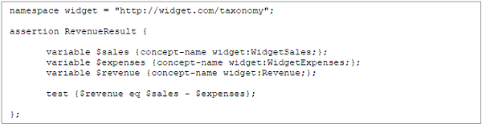
Example 6-1. An XBRL formula assertion for mathematically validating Revenue as a
function of WidgetSales and WidgetExpenses
The example first defines the name of the rule with the assertion statement. It then declares variables with the variable statement. In this case, the values of the WidgetSales concept (denoted by the widget namespace - see Chapter 7 for details on namespaces), the WidgetExpenses concept, and the Revenue concept are declared as variables $sales, $expenses, and $revenue, respectively. The test statement then defines the logical test: revenue must be equal to sales less expenses. The statement evaluates to a Boolean result: the expression is either true (satisfied) or false (unsatisfied). XBRL software can implement this assertion, interpret its result, and report that information to the user.
Formulas can also ensure the presence of particular facts. Suppose Revenue is a required fact. Consider Example 6-2:
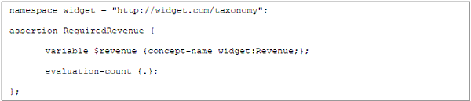
Example 6-2. An XBRL formula assertion for a required fact value (Revenue)
In this case, the assertion is entitled "RequiredRevenue". It again declares the $revenue variable using the Revenue concept from the widget taxonomy. Unlike Example 6-1, a specialized test statement is used: evaluation-count. This will result in a true expression if the fact is present in the XBRL report and false if it is not. The expression is shorthand for the following: evaluation-count {. gt 0 }. The "." reflects the number of times the variable is found. It must be greater than zero to result in a true assertion. This syntax could also be changed to: evaluation-count {. eq 1 }. In this case, it tests to ensure the fact appears exactly once in the XBRL report.
XBRL formulas can also perform accuracy checks across dimensional members. Take again the Widget Taxonomy as depicted in Figure 5-3. Suppose the taxonomy had a validation rule that ensures the total sales for all widget types equals the sum of sales for all invoices.
| 89 |
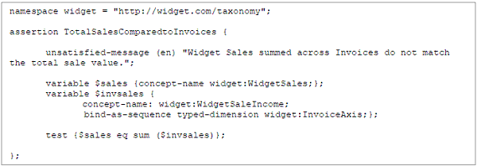
Example 6-3. An XBRL formula assertion for comparing summed values (WidgetSaleIncome)
across a typed dimension (InvoiceAxis) with a total value (WidgetSales)
In this assertion, the $sales variable represents the WidgetSales fact. A variable called $invsales is then declared. This can be thought of as a vector of fact values (all the individual sales). The concept is specified (WidgetSaleIncome) followed by the statement bind-as-sequence. This directs all fact values along the typed dimension InvoiceAxis that have the concept name WidgetSaleIncome to be placed in the $components variable. The test statement then compares the $sales variable with the sum of the list of fact values stored in the $invsales variable.
Note that this assertion checks all sales for all widget types. If there was an error in the sales reported for one widget type that is offset by an error for another widget type, this validation rule will not report it. This could be accounted for by adding additional rules for each widget type, which would be accomplished through adding an explicit dimension and its member to the assertion test. However, due to extensibility, custom widget types may not be checked.
Example 6-3 also contains the statement unsatisfied-message, which can declare a helpful description of the error for those using the formula rules. The unsatisfied-message can be given in multiple languages. In this case, it is English (en).
These examples represent just a few of the possibilities of using XBRL formulas to improve data quality. Formulas can also check the logic of dates, the accuracy of facts spanning multiple period dimensions, situations where some facts are optional or not available, and other mathematical operations. In addition, the severity of rules can be set by developers to differentiate between less severe warnings and errors.
6.2.2 XULE
Developed by XBRL US, XULE is an expression syntax that allows the querying of XBRL reports and taxonomies using a XULE processor. The primary purpose of XULE is to provide a user-friendly syntax to query and manipulate XBRL data. This can be helpful in a multitude of ways, including aiding consumers in quickly extracting specific facts from reports and supporting developers in querying XBRL taxonomies to render them as open API schemas or as iXBRL forms.
XULE is particularly well-suited for validation. It permits accurate and easy extraction of particular facts from a report, verifying they exist as necessary, and potentially verifying the mathematical relationships between them. For example, XULE has been used to validate SEC filings in conjunction with the rules developed by the XBRL US Data Quality Committee (DQC) (for approved DQC validation rules, visit https://xbrl.us/data-quality/rules-guidance/).
| 6.2.2.1 | Overview |
XULE is syntax independent and will operate on XBRL reports published in JSON, iXBRL, CSV and XML formats. The language operates on an XBRL data model and ignores the particular XBRL syntax, making it easy to apply to multiple reporting standards. However, there can be syntax-dependent drawbacks, such
| 90 |
as the inability of XULE to query all the XML contexts in an XBRL report in an XML format. An XML context is a structure inherent to only XML-based XBRL rather than the XBRL data model itself and is therefore inaccessible in XULE.
Users can access XULE in multiple ways. It can be used as a plug-in in Arelle, the open source XBRL taxonomy and XBRL report viewer and editor (for more information about Arelle, see Chapter 7). In Arelle, a user must supply a text file with particular information: the file containing the list of XULE commands, the XBRL file on which the XULE commands should be executed, and a resultant log file. Other applications, such as XML Spy, allow the user to interface with XULE directly in the program. In either case, XULE commands can be provided by the user, and these commands are then processed by the XULE processor. Much like a database system, the results for queries are reported back to the user.
XULE has two distinct components to accessing XBRL data: factset selection and taxonomy navigation.
| 6.2.2.1.1 | Factsets |
A XULE factset contains the requested facts with their associated decimal precision, unit information, periodicity, and other core dimensionality. With this information, the properties of a specific fact in a factset can be queried. Factsets also contain other relevant dimensionality for facts, such as other intersecting taxonomy-defined dimensions. Factset filtering (also called factset searching) is the action of extracting data from an XBRL report based on the dimensions of the fact.
The factset contains no information about the Discoverable Taxonomy Set (DTS) associated with the XBRL report. For example, a user cannot determine the calculations in which any fact participates from the factset. This information would have to be accessed through the DTS.
XULE allows a user to put these values into a set, list, or dictionary and manipulate the filtered data. Because all of the data is stored in sets, basic mathematical set manipulation can be performed on the data, such as a deriving a union, intersection, or complement with another set. A XULE rule can search a factset not only through the taxonomy-defined dimensions of a fact but also through the properties of its core concept. For example, a user can return all of the facts associated with a particular monetary concept in an XBRL report, such as all fact values reflective of a debit balance. XULE also permits the evaluation of expressions between factsets, such as subtracting CurrentAssets from an Assets fact to derive NonCurrentAssets. This can be particularly useful in validation.
| 6.2.2.1.2 | Taxonomy Navigation |
XULE allows the navigation of XBRL networks across many taxonomies. This means XULE can compare relationships between taxonomies by combining taxonomy navigation with set manipulation features. For example, a rule can compare the structure of the company extension taxonomy against the US GAAP taxonomy. The resulting taxonomy relationship sets can then be combined with a factset to determine where values have been used. Again, this can be useful in validation.
| 6.2.2.2 | Examples of Factset Filtering |
As said above, data derived from an XBRL report through XULE can be filtered in many different ways. The following example shows basic filtering that returns all data within an XBRL report.
Example 6-4. Returning a XULE factset
The curly bracket notation in Example 6-4 is used to explicitly define a factset. The "@" symbol indicates a dimension. Curly brackets are optional, and the @ symbol can stand by itself. All three methods in Example 6-4 return all fact values in an XBRL report in a single XULE factset.
Nondimensional facts can also be accessed in XULE. To return a factset that has no dimensional information, square bracket notation is used (Example 6-5).
| 91 |
Example 6-5. Returning an XULE factset with no dimensionality
Additional filters or search parameters can be added for taxonomy-defined and core dimensions. Factset filters can be applied on:
| • | Concept Core Dimensions |
| • | Period Core Dimensions |
| • | Unit Core Dimensions |
| • | Entity Core Dimensions |
| • | Taxonomy-defined Dimensions |
| • | Hypercubes |
To place a filter on a dimension, use the "@" operator as follows:
Example 6-6. Factset filtering on a concept core dimension
The XULE command in Example 6-6 will return all of the facts associated with the Assets concept. Note that the "@concept" syntax is optional in this case. "@Assets" will also instruct the XULE processor to return all of the facts associated with the Assets concept. The concept filter is the only dimensional filter in XULE that permits this shorthand.
Factset filtering also supports filtering on properties of dimensions. The dot notation allows those attributes to be used as the filter condition. This can be particularly useful in retrieving data of a specific data type. For example, a user can return all the monetary amounts in an XBRL report by filtering on the data type.
Example 6-7. Factset filtering on a property of a dimension
In this case, the "@concept" syntax filters all of the concepts in the XBRL report. The filter "concept.data-type" identifies all the concepts that have a monetaryItemType (Example 6-7). This will then return all monetary facts. Basic logical operators can be used in these XULE expressions, such as "!=" for "not equals".
As mentioned above, factsets can be filtered by dimensions other than the concept core. Users can select facts with a particular period, for example.
Example 6-8. Factset filtering on the period core dimension
The XULE command in Example 6-8 would return all facts with an instant period core dimension of that date. The "date()" syntax requests specific type-casting, which instructs the XULE processor to treat the following date as a date data type. A duration can also be requested in the filter by using the syntax indicated on the second line. Users can combine property filters with period dimensional filters as well. By specifying "@period.start" and "@period.end", the duration of a period can be defined.
Factset filters can also be combined in a single XULE expression. Filters are parsed via the "@" character.
| 92 |
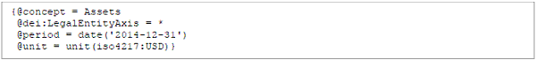
Example 6-9. Multiple XULE filters combined in a single expression
In Example 6-9, the facts associated with the Assets concept for any entry on the LegalEntityAxis with a specific instant period and a specific unit are returned. First, note the use of namespaces to identify XBRL elements. Second, this example employs the wildcard symbol ("*") to return all facts with a value along this dimension. Note that XULE filters are combined logically in an AND operation, rather than an OR. Therefore, while expressions can be syntactically correct, logically they may return an empty set. For example, {@concept = Assets @concept = Liabilities} will produce an empty set, as no fact in an XBRL report can have two common core dimensions.
This section was meant to provide a brief overview of factset filtering with XULE. There are many approaches to searching and filtering on dimensional properties. XULE supports additional syntax not discussed here, such as where clauses and the capacity to filter on facts themselves through the "$" operator. For more information on these topics, see XULE Language Syntax for XBRL.
| 6.2.2.3 | Taxonomy Navigation |
In XULE, navigation is a method of traversing the relationships in a taxonomy. A navigation returns a set. Unlike factsets, however, navigation produces sets of concepts from the taxonomy itself. Since concept relationships apply important contextual meaning to facts and other concepts, there are many instances where knowing the relationship structure can aid in report validation. For example, if an XBRL report uses extension concepts in a balance sheet, XULE navigation can help users classify those concepts based on their relationships, which can in turn aid in verifying the accuracy of the facts associated with them.
The items in a set returned by a navigation expression set are determined by what is provided in the expression. In its simplest form, a navigation expression requires a direction. For example, the expression in Example 6-10 will return all the descendent concepts across all constructs in the taxonomy referenced by the XBRL report.
Example 6-10. Simple XULE taxonomy navigation
To limit the results to a specific relationship type, users can specify the relationship type following the navigate keyword. This can be a combination of the direction and an arcrole. The arcrole, as explained previously in this handbook, describes the relationship itself. The direction guides XULE in traversing that arcrole and returns the facts associated with the direction.
Example 6-11. XULE taxonomy navigation using an arcrole and direction
| 93 |
This will return all descendant concepts in the parent-child relationships of the taxonomy referenced by the XBRL report. Any arcrole defined in the taxonomy, plus the generic arcroles, can be used in a navigation expression. Some of the allowable arcroles are listed below:
| • | parent-child |
| • | summation-item |
| • | dimension-domain |
| • | dimension-default |
| • | domain-member |
| • | hypercube-dimension |
| • | all |
| • | general-special |
| • | essence-alias |
The following directions are also permissible in XULE navigation:
| • | descendants - every concept below the named parent |
| • | children - direct child concept(s) of the named parent |
| • | ancestors - every concept above the named child |
| • | parents - direct parent concept(s) of the named child |
| • | siblings - sibling concepts of the named concept |
| • | previous-siblings - sibling concept(s) of the parent concept(s) of the named concept |
| • | following-siblings - sibling concept(s) of the child concept(s) of the named concept |
Navigation expressions can also specify the range of the navigation using the "from" and "to" keywords. This can define a path from one concept to another, and only concepts along that path will be returned as part of the set.
Example 6-12. XULE taxonomy navigation using a path from one concept to another
In Example 6-12, all of the concepts that are descendants of Assets will be returned, stopping at OtherAssetsCurrent. The results will only include those concepts that are in the path between Assets and OtherAssetsCurrent. For descendants and ancestors, an optional level can be specified to direct XULE to return particular levels of the concept hierarchy related to the starting point.
Example 6-13. XULE taxonomy navigation specifying levels to return within the hierarchy
Example 6-13 will return all the child and grandchild concepts beginning at the Assets concept.
XULE navigation can be very powerful, allowing some of the following operations:
| 1. | Defining the start point for navigation |
| 2. | Defining the direction of travel |
| 3. | Defining the levels of a hierarchy to navigate |
| 4. | Defining the stop point within a hierarchy |
| 5. | Defining specific concept hierarchies to navigate |
| 6. | Defining relationship types to navigate through arcroles |
| 7. | Defining conditions when navigation should stop |
| 8. | Filtering result sets based on specified conditions |
| 9. | Navigating tables, cubes, and complex structures |
| 10. | Controlling the attributes that are returned. |
| 11. | Specifying the taxonomy and extension taxonomies to navigate |
| 94 |
With both factset filtering and taxonomy navigation, users can write complex XULE queries to validate XBRL reports. For more information about XULE, see XBRL US' website at https://xbrl.us/xbrl-reference/xule-syntax/.
6.2.3 Data Quality Committees
This handbook has touched on the concept of data quality committees in previous sections. Here the purpose of the committee is more fleshed out. A data quality committee creates, maintains, and updates data quality rules for a reporting environment. These rules can be simple, such as indicating formally which facts are required in an XBRL report, or they can be very complicated and extensive, such as defining mathematical relationships far beyond simple calculations or indicating particular situations where using certain concepts or taxonomy-defined dimensions is incorrect. Note, again, these rules are not native to XBRL and XBRL itself has no method of enforcing any validation approach. Rather, it is incumbent upon XBRL preparation software and the reporting system to properly implement these rules to prevent incorrect and inaccurate data from being reported. XBRL formulas and XULE present two methods of implementing data quality rules in a reporting situation.
Data quality rules can be heavily driven by the industry itself and the use cases and requirements of the taxonomy. In a small or fairly simple reporting situation, a data quality committee may be extraneous or small itself with a limited set of rules. In a large reporting situation with many preparers or complexities, the committee may be comprised of multiple industry experts and data architects. It is vital that taxonomy developers plan for validation and the potential need for data quality rules.
As an example of a data quality committee ruleset and its implementation, readers can explore those developed by XBRL US for the Financial Accounting Standards Board (FASB). The FASB began incorporating data quality rules into the US GAAP Financial Reporting Taxonomy, starting with the 2020 release. The rules development process can be seen in this graphic: https://xbrl.us/data-quality/rules-guidance/rules-process/.
| 95 |
(this page intentionally left blank)
| 96 |
| 7 | The Mechanics of Taxonomy Development |
With the transport model now clearly defined, the focus turns to the process of actually building the XBRL taxonomy. This chapter describes this process through the free tools available to developers. It also provides suggestions to aid in the physical development process for the taxonomy. Though this chapter investigates the mechanics of taxonomy development through the software available without purchase, developers are encouraged to also explore the various commercial tools that can be used to create, view, and validate an XBRL taxonomy. Commercial tools provided by XBRL US and XBRL International members can be found at these sites: XBRL US Member Tools & Services and XBRL International Tools & Services. Even if developers opt to use commercial tools or other software approaches not described here, reading through this chapter may be helpful as it will provide insights into the methodology of generating a taxonomy.
| 7.1 | Workflow |
Before beginning work on taxonomy, developers should design the workflow (see Figure 7-1 for an example). Creating an XBRL taxonomy often requires multiple individuals and organizations working together in a single, collaborative workspace, and each of these parties may perform different duties and require different levels of access. For example, some individuals or a group may be tasked with transforming the logical data model into a beta taxonomy. Another may oversee incorporating regulatory/governance changes, both for the initial taxonomy and as future changes occur. A third group may handle reading reviewers' comments and making recommendations for modifications. Each of these groups may require different levels of access to the taxonomy itself. Those responsible for adding and revising content should have edit access; those reviewing content may be given only view and comment access to guard against inadvertently corrupting creation files. All members of the working group should be able to review the work in progress.
In addition, taxonomy developers may wish to employ version control software to track changes to the taxonomy as a whole. This is particularly important if the taxonomy is large or has many individuals or groups contributing to it.
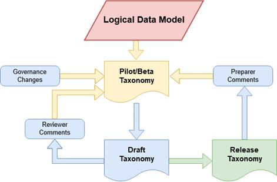
Figure 7-1. An example taxonomy workflow diagram
| 97 |
| 7.2 | Preparing and Generating the Taxonomy |
The following sections walk through the steps to generating a taxonomy using freely available software. Again, developers can choose to use other solutions, though these general steps will remain constant no matter which software packages are employed. Also, it bears mentioning that XBRL schema and linkbase files are merely text files (ASCII), so they can be created and edited in any text or XML editor. With a sufficient knowledge of XML, one can craft these documents with no outside assistance from a spreadsheet or XBRL management application.
7.2.1 Introduction to Development with Arelle
Arelle2, which was briefly discussed in Section 1.4.3, is a freely available XBRL development and management solution. Arelle is open source and has tools to help developers organize, visualize, and create taxonomy schema and linkbase files. Arelle can also aid preparers with validation and visualization of XBRL reports.
In terms of development, Arelle offers a plugin that allows developers to design their taxonomy using an Open Office XML spreadsheet. Many spreadsheet applications, including Microsoft Excel and Google Sheets, natively support this format. In addition to facilitating easier organization of the taxonomy, using a spreadsheet also supports collaboration since many of these software platforms have collaborative features built into them. Arelle also permits exporting any taxonomy into a spreadsheet, which gives developers a chance to see what a complete taxonomy looks like in spreadsheet format. Developers can also delete the concepts and relationships but leave the overall spreadsheet structure to create their own template. This guide will walk through developing the widget taxonomy using a spreadsheet format. This taxonomy can be downloaded from XBRL US here: https://files.xbrl.us/documents/TDH-Ch5-Widget-Taxonomy.xlsx. Developers can modify this taxonomy to create their own using the steps outlined below. In addition, developers can use this template in Arelle to generate schema and linkbase files to examine and change as they wish.
Using Arelle can make taxonomy development easier and more user-friendly. However, this approach does not remove the need to have a working knowledge of XML to troubleshoot problems that may arise. In addition, the template described in this chapter is simple and meant to demonstrate the basics of using spreadsheets to create taxonomies. The sample widget taxonomy is also intentionally simple. These examples should provide a foundation upon which developers can learn to construct far more extensive taxonomies with complex, robust structures. Developers are encouraged to study other taxonomies to foster a richer understanding of how spreadsheets can aid in organizing and visualizing taxonomy components.
Before beginning to construct the taxonomy itself in Arelle, developers should consider fully determining the labels for the taxonomy concepts. This includes not only determining which labels are necessary but what their content should be. Labels are crucial for human readability and interpretability. Concepts can have any number of labels as necessary. Some labels, such as a standard or a terse label, should be included with each concept. Others are applicable in only particular situations. For more information on labels, see the Generic Labels and Generic Preferred Label Specifications. For XBRL International members interested in using multilingual labels, "Multilingual labels in a taxonomy" provides further guidance.
Developers should attempt to use the most appropriate labels available for their concepts. In general, it is good practice to begin with the standard label role. Quite often this can be insufficient and additional label roles are necessary. Developers can then check XBRL International's Link Role Registry for a label role which meets their needs. This registry contains label roles developed for and used in other taxonomies. New label roles can also be created as required, though selecting a previously developed label role can increase comparability among taxonomies.
____________
2 Learn more about Arelle and download it here: http://arelle.org/
| 98 |
In general, labels should meet the following guidelines:
| • | The label should be unique. This ensures the interpretation of the concept is clear and unambiguous. |
| • | The label should accurately describe the meaning of the concept and fulfill the label's purpose (i.e., a terse label should provide a meaning with as few words as possible). |
| • | The label should be contextless. This means the interpretation of the concept through the label should be clear no matter the context in which that label appears. |
| • | The label should be succinct. This is true of even longer labels, such as a verbose or documentation label. |
| • | Labels should be consistent. Whatever method developers use to create them, it should be applied to each concept. |
Since labels are often based on the concept name, label creation can, to some extent, be automated. Accomplishing this is outside the scope of this handbook. Developers should keep in mind that labels represent the "human" interface for the taxonomy, so deriving appropriate, meaningful labels is extremely important.
| 7.2.2.1 | Descriptive Labels for Concepts |
The following are typical descriptive labels for concepts:
Standard Label - A human-readable name for the concept. This is the default label for the concept and should be defined to provide concise semantic meaning for each concept. Unless otherwise specified, the standard label is used when rendering a presentation. In Arelle, developers can specify which label they prefer be used in rendering presentations (see Section 7.2.3.1).
Documentation Label - A longer, more informative description of a concept. This will typically provide a description of the concept's meaning and how it should be used. Other documentation may be included as necessary.
Terse Label - A short description of a concept. A terse label will often omit words or phrases that can be inferred by the surrounding text or from other related concepts.
Verbose Label - A longer description of a concept. Verbose labels are not commonly used, as a standard label in conjunction with a documentation label can provide this information.
| 7.2.2.2 | Labels that Affect the Presentation of Facts |
These labels can affect how a concept's associated fact appears:
Period Start Label - A label to indicate a concept represents the start of a period value.
Period End Label - A label to indicate a concept represents the end of a period value.
Total Label - A label to indicate a concept represents a sum of a set of fact values associated with other concepts. This is commonly seen with calculations. For example, in a series of calculations, the same concept may represent a total in one calculation while being an addend in a second calculation. This label can differentiate the situations and add semantic context.
Net Label - A label to indicate a concept is presented as a net of a set of fact values associated with other concepts. This is commonly seen with calculations.
Negated Label - A label to indicate a concept's fact should be displayed with the opposite sign. For example, a capital loss in one context could be considered a positive number, while in others it should be interpreted as a negative.
Positive Label - A label to indicate a concept's fact value must be reported and interpreted as a positive value.
| 99 |
Negative Label - A label to indicate a concept's fact value must be reported and interpreted as a negative value.
Zero Label - A label to indicate a concept's fact value must be reported and interpreted as zero.
| 7.2.2.3 | Other Label Roles |
The following label roles are situational and less commonly seen:
Deprecated Label - A label to indicate a concept has been deprecated. Further explanation can be included. This label can be combined with the Deprecated Date Label to indicate when a concept will become deprecated or the date the concept became deprecated depending on the developer's usage choice.
Deprecated Date Label - The label for a concept when the concept has been or will be deprecated. This label can be combined with the Deprecated Label to label deprecated concepts.
7.2.3 Building a Taxonomy with a Spreadsheet
The widget taxonomy spreadsheet contains the structure needed to generate a taxonomy. Sample data is included in the spreadsheet which should be replaced by the developer. Orange cells represent column headers and should not be edited.
The taxonomy development spreadsheet contains two sheets: a sheet entitled Concepts and a Discoverable Taxonomy Set (DTS) sheet. The developer will customize each of these sheets to reflect the new taxonomy. Each sheet is described in the subsequent sections. Note that Arelle only uses the content of the cells to generate a taxonomy. Therefore, developers are encouraged to use formatting and indenting to help make the sheets clearer, more organized, and easier to read.
| 7.2.3.1 | Concepts Sheet |
This sheet contains a list of every concept to be used in the taxonomy, along with its associated properties. Because the taxonomy is in XML format, concepts are represented by one or more elements. In this chapter, the terms concepts and elements are often used interchangeably. The following section will break the concept sheet down into three sections: columns A through D, which are related to the concept labels and overall structure (Figure 7-2 and Table 7-1), columns E through L, related to the concept properties (Figure 7-3 and Table 7-2), and columns M through P, related to concept relationships (Figure 7-4 and Table 7-3).
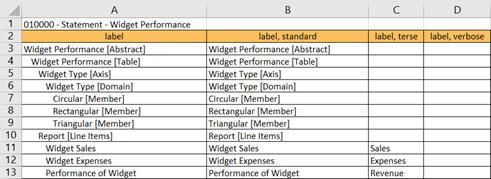
Figure 7-2. The Concepts Sheet columns related to concept labels
| 100 |
| A | Presentation Label | The label used on the current presentation for this concept. This only appears in the XBRL viewer that renders the presentation. | |
| B | Standard Label | The default label for the concept. All concepts should have a standard label. | |
| C | Terse Label | The shortened version of the standard label. This column is optional. | |
| D | Verbose Label | The enhanced version of the standard label. This column is optional. | |
Table 7-1. Descriptions of the Concepts Sheet columns related to concept labels

Figure 7-3. The Concepts Sheet columns related to concept properties
| E | Prefix | The name of the taxonomy to which the concept belongs. This prefix is set on the DTS sheet discussed below. |
| F | Name | The name of the concept (element name). This is the actual XML tag. |
| G | Data Type | The data type of the concept. Types must be entered in a qualified name format (prefix:type). |
| H | Substitution Group | The concept's substitution group. This indicates the category of the concept (either an item, hypercubeItem, or dimensionItem). |
| I | Period Type | The concept's period type. It can be either duration or instant. This property is required if the concept's substitution group is item. |
| J | Balance Type | The concept's balance type. The value can be debit or credit. This property only applies if the concept's substitution group is item. The balance type is typically only applicable to concepts representing accounting facts. |
| K | Abstract | The concept's abstract property. It can be either true or false, but it must be true if the concept's substitution group is dimensionItem or hypercubeItem. |
| L | Nillable | The concept's nillable property. It can be either true or false, but it must be true if the concept's substitution group is dimensionitem or hypercubeItem. |
Table 7-2. Descriptions of the Concepts Sheet columns related to concept properties
| 101 |
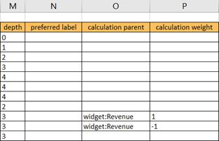
Figure 7-4. The Concepts Sheet columns related to concept relationships
| M | Depth | The hierarchical level of the concept. These are relative to preceding levels (so the highest level of the presentation is 0, the next level beneath it is 1, and so on). |
| N | Preferred Label | The preferred label of the concept. The preferred label will appear as the concept's label in the presentation. This only appears in the XBRL viewer that renders the presentation. |
| O | Calculation Parent | The parent concept of the calculation arc in which this concept is involved. Entering a calculation parent makes the concept of this row in the spreadsheet part of a calculation resulting in the parent. |
| P | Calculation Weight | The weight applied to the concept in the calculation arc in which this concept is involved. Because XBRL only supports summations through calculation arcs, the value can either be 1 or -1. |
Table 7-3. Description of Concepts Sheet columns related to concept relationships
| 7.2.3.1.1 | Adding Presentations |
Presentations are delineated on the Concepts sheet with the following text: sort code - type - name. The sort code is used to order the presentations. Generally, they are six digits. The first two digits group presentations by their specific semantic meaning, which can vary from taxonomy to taxonomy. The remainder of the digits can be used to represent further grouping or simply to order them within the taxonomy. The type indicates the presentation type, which is "Statement" in this case, to refer to the statement of widget revenue. However, developers can define their own types as needed. The name contains the name of the presentation.
Any number of presentations can appear on the Concepts sheet. Each presentation should begin with an abstract concept that should then group all concepts beneath it. Additional abstract concepts are required for constructs like the domain and axis elements (Figure 7-5).
| 102 |
Figure 7-5. Presentation depth of the Widget Performance Presentation
The presentation for Widget Performance has organizational, container concepts added, such as Widgets Performance [Abstract] and Widgets Performance [Table]. The former is a container concept for the entire presentation and the second is one for this particular table (each presentation can contain any number of tables, though this one has only one). Other container concepts also are required, such as Widget Type [Axis], which defines the taxonomy-defined dimension, and Widget Type [Domain], which contains the allowable members for this taxonomy-defined dimension. Finally, Report [Line Items] contains the concept core dimension for this table: Total Purchases, Total Production Expenses, and Performance of Widget. Note that this table is a combination of three parts of the physical data model (Figure 5-3): Total Sales, Total Expenses, and Widget Performance. As described in Section 5.3.3, the widget taxonomy lends itself to combining these parts of the data model into a single presentation, since there is no need to report individual widget expenses.
The depth column in Figure 7-5 describes the level of concept nesting for each concept. Note that the depth level corresponds to the indenting for each concept; this was done to aid viewers in seeing hierarchical structure. Arelle only makes use of the depth column in building presentations.
The Widget Sales presentation was defined in a similar manner.
| 7.2.3.2 | DTS Sheet |
The Discoverable Taxonomy Set (DTS) (Figure 7-6 and Table 7-4) sheet contains all the linkages and references necessary to assemble the taxonomy.

Figure 7-6. The Discoverable Taxonomy Set (DTS) sheet for the widget taxonomy
This sheet must define both the files that Arelle needs to create the taxonomy and the files it will create to represent the taxonomy.
| 103 |
As a note, Arelle's Load From Excel plugin (which is described more fully in the next section) requires the DTS sheet to import US GAAP. This freely available tool was originally designed to aid in using and visualizing US GAAP and therefore maintains this behavior even when working with non-US GAAP taxonomies. Importing US GAAP through the DTS sheet does not actually import US GAAP into the taxonomy itself unless US GAAP is referenced on the Concepts sheet. Developers need only include a single line in the DTS sheet (as shown in Figure 7-6, row 5).
| 104 |
| A | Specification |
The action Arelle associates with the row. Options are: • colheader - allows the headers on the Concepts Sheet to be custom defined (optional). • extension - directs Arelle to create a file using information specified in the rest of the row. • generate - directs Arelle to create a file using information specified in the rest of the row (same in functionality as extension, and one must be included). • include - makes a reference to a namespace contained in the row (such as units or currency codes, for example) (optional). • import - indicates the row contains references to other taxonomies or information this taxonomy requires. Base XBRL imports are almost always required to make use of base XBRL data types. Unlike include, import allows the elements of the referenced documents to be used (optional). • meta - indicates the row pertains to meta information for the taxonomy (optional). • skip rows - delineates rows to be shipped (optional). • workbook - indicates that the row contains information for another workbook that should be included in the taxonomy (optional). • worksheet - specifies which sections of the spreadsheet should be used to build the taxonomy presentations (optional). • xmlns - generates a namespace using the information specified in the row (optional). |
| B | File Type | The type of the file being included or produced. Allowable values include schema, linkbase, and role. If the Specification is meta, this column can contain the type of the meta-data to be added. |
| C | Prefix (schema), Type (linkbase), Argument (other) |
The prefix for the schema or type of the linkbase, depending on the value of File Type. This should match the prefix of any schema or linkbase being added if the Specification is import or include. For the extension or generate Specification, if the File Type is schema, this should include the prefix for the new taxonomy. If the File Type is linkbase, this should include the linkbase types as applicable (label, presentation, calculation, etc.). For the role File Type, this column can be left blank.
This column can also contain optional arguments depending on the Specification. For example, if the Specification is meta, this column can hold data values for the attributes listed in the File Type column. |
| D | File, HREF, or Role Definition |
The location or role definition for the row, depending on the Specification. For the import and include Specifications, this row should contain the location (usually a URI) of the file containing the schema or linkbase. For the generate and extension Specifications, this column will contain the names of the files to be generated.
If the File Type is role, this column should contain the name of the taxonomy's presentations. This should exactly match the name given on the Concepts Sheet, including the sort code and type. |
| E | Namespace URI | The unique namespace of the schema/linkbase documents being imported/included or generated. For the taxonomy being created, this should be a domain by which the developers can be publicly referenced. |
Table 7-4. Descriptions of the DTS Sheet columns
| 105 |
Note that this reference includes and explains only some of the options that can be used in the spreadsheet in conjunction with Arelle. See the Arelle documentation for more information.
| 7.2.3.2.1 | Naming Files |
Files and URIs named in Column D of the DTS Sheet must be syntactically correct. For URIs, the entire URI must be included. For file names, they need not include a local or remote path; Arelle will generate that during the taxonomy creation process. Note that linkbase file names should end with a .xml file extension, and schema file names should end with a .xsd file extension.
Developers can name the output taxonomy files anything they wish. However, using a suffix, such as "_lab" for label linkbases and "_cal" for calculation linkbases, can aid in organization (see Figure 7-6).
| 7.2.3.2.2 | Creating Entry Points |
Developers can create entry points in the DTS Sheet by creating a "subgrouping" in the taxonomy. To do this, the schema document for the taxonomy must be generated again only with a name for the entry point in the File column (column D). The presentations pertinent to this entry point should be listed again beneath it. Arelle will use this information to create another schema (.xsd) file for the entry point that only contains this subset of presentations. Developers should always take care to create a schema document of the entire taxonomy in addition to separate schema files for their entry points.
Once the spreadsheet is completed, it can be used with Arelle to generate a taxonomy. The next section will explore the basics of using Arelle.
| 7.3 | Using Arelle |
Once the concepts and structures have been prepared in the spreadsheet, Arelle can transform this information into a taxonomy. Note again that Arelle requires the document to be saved as a Microsoft Excel spreadsheet; most freely available spreadsheet programs will save documents in this format.
Download Arelle at http://arelle.org/ and open it. Arelle has a number of plug-ins that can be sorted and installed by going to Help / Manage Plug-ins via the menu. The plug-in Load from Excel is required for this process (Figure 7-7).
| 106 |
Figure 7-7. Arelle's plug-in manager with the Load from Excel spreadsheet plug-in
Once the correct plug-in has been added to Arelle, the taxonomy can be generated by going to File / Open File and selecting the saved spreadsheet locally on the computer. Arelle will ask the user to select a local folder where the generated taxonomy files will be placed.
After the taxonomy has been created, it will appear in Arelle as shown in Figure 7-8. Validate the taxonomy by clicking on the "scales" icon in the task bar (boxed in red in this screen capture).
| 107 |
Figure 7-8. Generating a taxonomy in Arelle
Arelle will embed the include/imported information as specified in the DTS sheet and generate schema and linkbase XML documents as required. As stated in the DTS sheet discussion (Section 7.2.3.2), linkbase files are ASCII files with an .xml extension, and schema files are ASCII documents with an .xsd extension. The filenames specified in the DTS sheet should appear here. Developers can create a zip file containing the files that comprise the taxonomy as shown in the illustration below. Remember these files are saved by Arelle into the folder selected during the taxonomy generation process.
Figure 7-9. The contents of a taxonomy zip file generated from Arelle
This zip file (Figure 7-9) contains the taxonomy (which, in this case, has two entry points plus linkbases). Zip files make for easy transport and dissemination.
| 7.4 | The Importance of Public Exposure |
At this point, developers have essentially created a beta taxonomy (Figure 7-1). Initial testing should be performed, such as developing test instance documents, better refining and/or implementing data quality rules, and examining difficulties that can arise in any supporting systems. Once the taxonomy has passed this initial testing phase, it should move to a draft taxonomy ready for public review.
Public exposure is a vital step in the development process. It should be noted that the term "public" is relative to the size and scope of the taxonomy. For a large taxonomy involving many preparers, consumers, and potentially regulators, the taxonomy should undergo significant public review (where anyone can see and comment on the taxonomy). For a small taxonomy whose use may be limited to an internal tool in a
| 108 |
company, "public" review may be limited to the group of users who will interact with the taxonomy (a particular department, for example, or internal auditors). The taxonomy should be made available to all users so that they can review the concepts, examine the relationships between the concepts, understand workflow impact, review data quality rules, and study sample instance documents, among other things.
A structure for public exposure should allow/include the ability for reviewers to:
| 1) | View the taxonomy in freely available software (Arelle, spreadsheet applications, etc.) |
| 2) | Download the taxonomy files in a zip format as a full taxonomy package |
| 3) | Access the sample XBRL instance documents generated from this taxonomy |
| 4) | Agree to legal terms and conditions related to submitting comments as necessary |
| 5) | Post comments |
| 6) | View comments from other reviewers |
| 7.5 | Guidance |
As a reminder, various documents are available from XBRL US and XBRL International that can be helpful in the taxonomy development process. We recommend reading through these before initiating taxonomy development.
| ● | XBRL US Style Guide - Provides naming styles for concept names and labels. |
| ● | XBRL US Taxonomy Approval Metrics and Process - Establishes standards checklist for the review and approval of XBRL US certified taxonomies. |
| ● | XBRL International Specification Index - Contains the XBRL specifications to which all taxonomies must adhere. |
| 109 |
(this page intentionally left blank)
| 110 |
| 8 | Documenting a Taxonomy |
An XBRL taxonomy is a powerful tool to transport data in a standardized, predictable manner. Like any tool, it can only fulfill its purpose when those who interact with it understand how to use it. Therefore, creating documentation is a vital step in the development of any XBRL taxonomy. All users, from preparers to software designers to regulators and consumers, must be able to use the taxonomy properly and interpret the data it represents. Documentation is a key part of that process.
As with many other steps of the taxonomy development process, the amount and breadth of the documentation should depend on the scope of the taxonomy and the number and variety of users who will engage with it. A taxonomy with limited scope, such as a taxonomy meant for internal reporting within a company, may not require as much extensive documentation. A taxonomy that will be relevant to many different people with different levels of familiarity with XBRL may require significantly more user support and guidance. Further, a taxonomy that is simple with a limited number of concepts and that is not extensible may not require as much in-depth explanation as one with thousands of concepts and multiple ways to express the same data. The latter may warrant careful instruction on which approaches are ideal in certain situations.
The process of writing documentation should be on-going through the development of the taxonomy. In addition to other documents, authors may consider publishing a Taxonomy White Paper. This may be written and made public before the other documents, and it should concisely present the industry problem, the pertinent regulations, requirements, and use cases affecting the project, the options considered, and the taxonomy as a solution. The rationale for selecting XBRL and the overall design choices should be explained. The Taxonomy White Paper can be considered as an announcement of the taxonomy, with explanation of its purpose and justification for its development. This document is meant to introduce the public to the taxonomy and lay the groundwork for eventual adoption. An example template for the Taxonomy White Paper can be found in Appendix C.
At a minimum, developers should also create a general Taxonomy Guide, which offers an in-depth explanation of the structure and contents of the taxonomy, a Preparer Guide, to guide preparers in creating accurate and well-structured reports, and a Data Consumer Guide, to provide detailed examples on how to use the taxonomy to accomplish common use cases. The creation of the Taxonomy Guide can be performed in parallel with taxonomy development, whereas the Preparer Guide and Data Consumer Guide may be written toward the end of process.
Note that these three guides apply to very separate audiences, which will be discussed in greater detail in this chapter's subsequent sections. The make-up and skillset of the audience is a key consideration when crafting any technical document. As an overview, the Taxonomy Guide is aimed at explaining the taxonomy itself in detail, including the design choices (such as allowing extensibility) and rationales behind those choices. This document is meant to be a technical specification and is therefore aimed at taxonomy managers and software developers. This document can serve as both a blueprint during the development of the taxonomy and as a guide for users and developers after the taxonomy has been released. The Preparer Guide is intended to provide preparers with useful information about the taxonomy's concepts and structures as needed to build XBRL reports. Finally, the Data Consumer Guide is intended to provide information and common use cases for data consumers.
| 111 |
Figure 8-1. Different methods of organizing taxonomy documentation
Different methods of organizing taxonomy documentation appear in Figure 8-1. If the developer opts not to create a separate Preparer Guide and/or Data Consumer Guide, the single Taxonomy Guide should cover these topical areas. However, as a rule of thumb, a technical document should not contain a great deal of information not pertinent or relevant to its intended audience. Doing so makes the document difficult to navigate. If between a fourth and a third of the document's content is aimed at a different audience than the audience for the rest of the document, creating separate guides should be considered.
It is also likely that different readers will have different levels of expertise in the XBRL standard. The authors of any XBRL guide should include an XBRL Overview to ensure that all readers have a basic understanding of XBRL. The XBRL Overview should bring novice readers up-to-speed on the constructs of XBRL, such as concepts and the role of taxonomy-defined dimensions, so that they are better equipped to work with the taxonomy. Appendix D contains an example XBRL Overview.
Finally, as taxonomy updates and releases are introduced and disseminated to its users, developers should take care to create informative and helpful release notes. This is discussed at the end of this chapter.
All XBRL documentation should include explanatory information, diagrams, illustrations, and references wherever possible. Examples can often help readers relate abstract ideas to familiar real-world instances, and illustrations aid in visualizing complex relationships. As a general rule of thumb, these tools should be employed strategically to help readers digest the document.
| 8.1 | How to Use This Chapter |
This chapter provides a framework for the structure and content of a Taxonomy Guide, a Preparer Guide, and a Data Consumer Guide. The subheadings within each section address the general topics that should be included in each type of document. Developers can also refer to Appendix E, Appendix F, and Appendix G for templates of these documents (which are also available for download as Microsoft Word document files from https://xbrl.us/tdh-templates). These templates can be used as a basis for constructing documentation. Their outlines exactly match the outlines covered in this chapter. In addition, where possible, "boiler plate" text appears in the template to guide authors in beginning their discussion of the relevant topics, in addition to bullet items clearly marked that should be replaced with the appropriate content specific to the taxonomy being documented. In other words, the content that follows in this chapter provides advice and guidance on how to complete these templates, and the corresponding templates contain generic text as well as brief reminders concerning what sort of information should be covered. Authors can choose to forego using these templates or create their own content based on the templates; the guidance in this chapter will still be helpful in determining what sorts of information should be discussed in the guides and how it should be organized.
| 112 |
Documentation needs will, of course, vary from taxonomy to taxonomy. Therefore, this chapter and the templates in the appendices are meant to establish a general outline of what these documents may contain to aid readers in understanding XBRL and the XBRL taxonomy. Some of the following sections may not be applicable to every situation, and some may require more in-depth discussion than is indicated here. It is up to the developers and authors of the documentation to determine the nature and depth of the content for each guide.
| 8.2 | The Taxonomy White Paper |
The Taxonomy White Paper should present the taxonomy to an average reader. This brief document is meant to introduce the data reporting problem in the industry or company (i.e., reason the taxonomy was developed), other potential solutions, and the taxonomy as an answer to this dilemma. Authors may wish to present a cursory discussion of the relevant requirements, regulations, and use cases that influence the industry problem. A short, unbiased description of the alternative solutions can be presented, leading into the discussion of how the XBRL taxonomy is the optimal solution. This document is not a technical one and should not delve into details about the taxonomy. Rather, it is meant to give a reader who is perhaps uneducated with XBRL but who understands the dilemma and needs of the industry a foundation to understand why the new taxonomy is necessary. More than other documents, the Taxonomy White Paper can be written with a more persuasive tone to clearly indicate to readers that the new XBRL taxonomy is a strong solution to the problems presented.
An example template for a Taxonomy White Paper appears in Appendix C.
| 8.3 | The Taxonomy Guide |
The Taxonomy Guide is the most basic and important document concerning the explanation of the taxonomy itself. The audience for the Taxonomy Guide is those who need to have an in-depth understanding of all aspects of the taxonomy independent of any particular use case. This document will explain the structure of the taxonomy, indicate the way in which the taxonomy represents and validates data, and elucidate how the transport model operates at its most fundamental levels. This information is key to those who will be managing or overseeing the taxonomy itself as well as third-party software developers who must design robust software solutions that can employ the taxonomy to provide high quality data.
| 8.3.1 | Goals |
This section clearly describes the overall goals of the Taxonomy Guide to the readers, which were stated in this handbook in the previous section. The section should also include a description of the target audience of the Taxonomy Guide and may indicate the level of familiarity these readers should have with industry and regulatory standards. For example, for a financial reporting taxonomy, the Taxonomy Guide's target readers may be developers who are familiar with US GAAP financial statement preparation.
| 8.3.1.1 | Revision History |
Authors should mention that the document is subject to periodic revision in addition to describing its revision history. The governance process should be briefly described as it pertains to taxonomy and documentation updates so that readers are aware changes can be made and how those changes will be implemented.
8.3.2 Introduction to the Taxonomy and an Overview of XBRL
Authors should begin by introducing the taxonomy and its purpose at a very high level. Readers should be aware of why the taxonomy exists, the types of data it is meant to represent, and its place along the information supply chain of the industry or business sectors for which it has been developed. In addition, authors should include the XBRL Overview (Appendix D), for which XBRL US has provided a pre-constructed template. This section is a basic primer on XBRL so that readers unfamiliar with the standard can quickly come up to speed with its basic constructs and usages.
| 113 |
| 8.3.3 | Scope |
Before describing the taxonomy, authors and developers should consider outlining the factors that drove how the taxonomy was developed. This discussion may describe functional and non-functional requirements, the use cases that the taxonomy is designed to represent, and other regulatory and development considerations. The section may also explain the underlying documents, databases, and reports that support the requirements, as well as design choices relevant to meeting those requirements. In summary, this section should address the overall development project scope and considerations as discussed in Chapter 4.
| 8.3.4 | Key Features and Structure |
This section is intended to highlight important features of the taxonomy that users should understand when working with the taxonomy. Some of these issues may be covered in greater detail later in the Taxonomy Guide; this section should provide a brief introduction, not a comprehensive discussion. Note that the template provided in Appendix E breaks some of these topics into subsections; this is a documentation choice and authors should organize information in a way suitable for them.
Examples of questions that may be addressed include:
| • | Has the taxonomy integrated other standards? |
| • | Are preparers allowed to use extensions with the taxonomy? |
| • | Is the taxonomy open source and freely available? |
| • | How is the taxonomy structured? Here authors may provide a short overview of the entry points and presentations and briefly discuss how they are designed to facilitate use of the taxonomy. Authors may also give an indication of the size of the taxonomy. |
| • | How can content in the taxonomy, and data produced using the taxonomy, be accessed? |
| • | What is the plan for taxonomy maintenance and support? |
| 8.3.5 | The Transport Data Model |
The next section of the Taxonomy Guide should provide a detailed explanation of the reporting domain and the information flow that the taxonomy is designed to capture. This directly describes the transport data model.
As stated in Chapter 2.1.2, the transport data model defines the meaning of data within the context of its interrelationships with other data. While this topic has been discussed in depth in this document, readers of the Taxonomy Guide may not be as familiar with the purpose of a transport data model. Authors should explain that the transport data model may reflect aspects of business semantic data models on both the preparers' and consumers' sides, but the transport model is independent of both and designed to transmit data from preparers to consumers in a predictable, self-describing, pre-determined manner. The nature of this transport model and how the taxonomy expresses that model should be explained here. This may, again, involve a brief discussion of pertinent requirements, regulations, and use cases. The section can also feature a description and possibly a graphical representation of the data supply chain specific to this taxonomy.
| 8.3.6 | Detailed Review of the Taxonomy |
This section of the Taxonomy Guide provides an in-depth walkthrough of the structure and content of the taxonomy. This section should form the bulk of the Taxonomy Guide.
| 8.3.6.1 | Taxonomy Physical Structure |
With the transport data model understood by readers, this section can articulate how the taxonomy represents that model. Because this topic is so important, authors and developers should take care to ensure their explanations of the rationales behind the taxonomy's design choices are clear. A solid comprehension of how the overall structure of the taxonomy encapsulates the data model is key to using the taxonomy and developing software to help users interact with it.
| 114 |
Using both diagrams and text, the section should describe the structure of the taxonomy in detail, including concepts groups and hierarchies. Authors and developers may describe why these groupings were created, what they are designed to capture, and who the target audience is for each. For example, if a form was used extensively in a use case supported by the taxonomy, an entry point may encompass concepts related to that form. Similarly, if data represented by the taxonomy is derived from databases, entry points may represent concepts related by database tables. The approach, or multiple approaches, taken should be explained here in detail so that readers can understand how the taxonomy structure services the data itself.
As with most aspects of documentation, the size and scope of the taxonomy should dictate the level of detail and explanation required to ensure understanding. Large taxonomies, such as the Orange Button Taxonomy which has over 4,000 concepts, may need to be explained by grouping content into logical "sections" and providing an in-depth review of each section. Logical sections may be entry points, presentations, tables, or even abstract concepts if this grouping is complex enough to merit further detail. Smaller taxonomies, such as the Surety Work In Process Taxonomy which has approximately 60 concepts, may be handled differently. In a smaller taxonomy, authors can spend more time on detailed descriptions of each category of data, describing the meaning of the concepts and how they work within the limited number of tables.
| 8.3.6.2 | Concepts |
This section should address the concepts in the taxonomy and how they relate to common information in the field, industry, or business sector. Depending on the size and scope of the taxonomy, the discussion could be in-depth or cursory. The relationships the concepts have to the entry points, presentations, and the originating documents or databases should be explored as necessary. Authors should explain how some concepts are concept core dimensions (which directly relate to the fact and dictate the fact's properties) and how other concepts are abstract and meant to group data. In addition, authors may wish to briefly explore concept properties, particularly labels as these will be specific to the taxonomy and industry.
| 8.3.6.3 | Dimensions |
The dimensionality of tables within each section of the taxonomy should be described in detail, including core XBRL dimensions (allowable units, entities, etc.), how to use the taxonomy-defined dimensions that comprise the table, and whether the taxonomy-defined dimensions are typed or explicit. In addition, the rationales behind the design decisions should be explained. Why was a typed or explicit dimension chosen? What do the taxonomy-defined dimensions and their members represent? If there are multiple XBRL dimensions, how would the preparer use those axes? How should table line items be represented? These questions should be properly answered so that readers can understand how the taxonomy represents dimensional data.
Again, the size of this section depends on the complexity and scope of the taxonomy. For a very large taxonomy, if many of the tables contain similar dimensional structures, an exemplar table can be explained in greater detail to illustrate the structure with a briefer discussion as to how this structure applies elsewhere. Tables can also be grouped in the discussion if they represent similar data and dimensionality. The goal is, as always, explaining the relevant information with as little duplicative or redundant material as possible.
| 8.3.6.4 | Calculations (Optional) |
If the taxonomy contains calculations, this section should include an explanation of the calculation relationships between concepts. Each calculation and its implications on validating fact values should be explained, as well as the rationale for including the calculations if applicable.
| 8.3.6.5 | Formulas (Optional) |
If the taxonomy contains formulas, this section should include an explanation of the formula relationships between concepts. Each formula and its implications on validating fact values should be explained. In addition, authors may explain why the formulas were designed and included.
| 115 |
| 8.3.6.6 | Data Types and Units |
The Taxonomy Guide should include a listing of the kinds of standard data types used (for example, string, monetary, Boolean, etc.) and why they were selected to represent fact data. Developers and authors should discuss in detail any non-standard or custom data types. For example, in the Orange Button Taxonomy, many electricity-related, non-standard data types are included, such as energyItemType, powerItemType, and insolationItemType. This taxonomy also contains custom data types, such as the data type "moduleItemType" which was created to give preparers options to choose from a list of module technologies. These data types and their usages should be discussed.
See Appendix A for an accepted list of data types and unit types.
Authors should also discuss unit core dimensions, their usage, and where they are required.
| 8.3.6.7 | Cross-use of Concepts (Optional) |
As discussed in Section 2.4.2, concepts can appear in more than one section of a taxonomy because they may be applicable to multiple reporting situations. This should be explained as it pertains to the taxonomy being documented.
| 8.3.6.8 | Taxonomy References (Optional) |
In the XBRL Overview section (see Section 8.3.2), authors will have explained what domain-specific standards are used in the taxonomy, if any. In this section of the Taxonomy Guide, authors may take a second opportunity to explore more deeply why those standards were used and how they help provide greater context to the individual concepts.
| 8.3.6.9 | Linkbase Types |
Authors should discuss the linkbases used within the taxonomy in this section. At this point, many of the presentations, definitions, calculations, labels, and reference types may have already been discussed. Those that have not been covered should be described here as applicable. Authors may also wish to show how the linkbases define these various relationships through arcs.
| 8.3.7 | Transport Format and Instance Preparation |
The transport format and how to prepare robust instance documents are topics more suitably explored in detail in the Preparer Guide (see Section 8.4). However, authors should provide a quick overview of the transport format (whether XML, JSON, or CSV has been chosen, for example, and the reasoning behind the decision), if applicable and relevant to the taxonomy's use. Authors should also discuss how that format can be used to prepare instance documents. Any considerations that arise from the transport format in terms of using the taxonomy or creating reports should be discussed.
Finally, authors should describe any pertinent systems involved in the creation and/or transmission of an XBRL report built with the taxonomy (for example, in the case of financial reporting to the SEC, Taxonomy Guide authors may want to introduce the purpose and mechanics of the EDGAR system that preparers use to submit their XBRL filings to regulators).
| 8.3.8 | Using Validation |
Validation is key to data integrity and usability. Therefore, this part of the Taxonomy Guide should have an extensive discussion of how taxonomy managers and other developers can use the taxonomy structure to aid in validating the data the taxonomy represents. The use of proper data typing can be mentioned again. Calculations and formulas can be revisited here and how software solutions could be implemented to ensure these relationships between concepts hold true for the values reported. This discussion could include other validation approaches, such as XULE. Authors should also explore external validation and regulatory frameworks and how they can be applied. Industry-specific considerations should be detailed here to explain how the taxonomy can maintain data integrity as it is transmitted from preparers to consumers.
| 116 |
| 8.3.9 | Software Development |
A key audience of the Taxonomy Guide may be software developers, depending on if the taxonomy developers and regulators permit third-party software development. If the XBRL implementation is public-facing and has numerous users and applications, it will probably rely on third-party software to help preparers create XBRL reports. The more software choices there are available to preparers, the less expensive and burdensome the XBRL adoption process becomes.
If external software development is not allowed, authors should state that here. If it is, authors should cover information pertinent to creating software solutions that view the taxonomy, prepare instance documents, use XBRL-formatted information in subsequent data analyses, or aid users in extending the taxonomy. As with many topics in the Taxonomy Guide, the nature of the industry and the taxonomy itself should drive this discussion. For instance, if aiding preparers in structuring their data and creating XBRL reports is likely to be a major source of software development, authors may want to devote more discussion to aspects of the taxonomy that are relevant to this topic (such as how to implement validation based on calculations and formulas or how to guide users in selecting the correct concepts to represent their data).
In addition, authors may want to indicate what resources are available to help developers test their software applications (access to the XML schemas, test XBRL instance documents, etc.). If applicable, providing an environment supportive to third-party software development can aid tremendously in facilitating and encouraging the use of the taxonomy to create robust XBRL reports, which is the goal of most stakeholders in the information supply chain.
| 8.3.10 | References and Other Resources |
In this concluding section, authors should explain what references were used in developing and documenting the taxonomy. Reference materials that may be used and may be helpful to other users and developers include the XBRL US Style Guide, this XBRL US Taxonomy Development Handbook, the current XBRL Technical Specifications and Open Information Models, as well as industry-specific resources that may have influenced the creation and use of the taxonomy.
Authors may also consider including further ways readers can educate themselves concerning XBRL and the taxonomy, including the Preparer Guide and the Data Consumer Guide if these documents are separate from the Taxonomy Guide and available. Authors should also include ways to contact the taxonomy developers and governance committees as applicable so that users can receive responses to comments, questions, and concerns.
| 8.4 | The Preparer Guide |
The Preparer Guide is intended to aid preparers in the process of creating XBRL reports using the taxonomy. Oftentimes this document is part of the Taxonomy Guide itself, but it should be separated if it is long and complicated enough that the information is not applicable to both the development and preparation audiences.
| 8.4.1 | Goals |
This section clearly describes the overall goals of the Preparer Guide to the readers. Additionally, authors should describe the target audience for the Preparer Guide and may indicate the level of familiarity these readers should have with industry and regulatory standards. For example, for a financial reporting taxonomy, the Preparer Guide's target readers may be filing agents and/or registrants with federal reporting agencies who are familiar with the preparation of financial statements in accordance with US GAAP.
| 8.4.1.1 | Revision History |
Authors should mention that the document is subject to periodic revision in addition to describing its revision history. The governance process should be briefly described as it pertains to taxonomy and documentation updates so that readers are aware that changes can be made and how those changes will be implemented.
| 117 |
| 8.4.2 | Introduction to the Taxonomy and an Overview of XBRL |
Authors should begin by introducing the taxonomy and its purpose at a very high level. Readers should be aware of why the taxonomy exists, the types of data it is meant to represent, and its place along the information supply chain for the industry or business sectors for which it has been developed. Additionally, in the Preparer Guide there should be a discussion of the regulatory requirements that may apply to the taxonomy and the XBRL reports created with it. Finally, authors should indicate if the reporting system allows extensibility and, if so, what XBRL constructs are extensible. This should be in brief terms; remind readers that greater discussion of extensibility occurs later in the document (as appropriate).
Authors should include the XBRL Overview, for which XBRL US has provided a pre-constructed template (Appendix D). This section should provide a basic primer on XBRL so that readers unfamiliar with the standard can quickly come up to speed with its basic constructs and usages.
8.4.3 Transforming Data to XBRL
A major focus of the Preparer Guide is to provide guidance on formatting data in XBRL for the purposes of generating a well-structured XBRL report. Therefore, a significant portion of the guide should be devoted to mapping data as it may have been previously structured in the industry (such as forms currently employed in the reporting process) to the new XBRL transport data model. If no previous data exists in a formalized way, the guide should also instruct preparers on how to gather whatever information is necessary for transformation into XBRL. Regardless of how the data is generated, the XBRL formatting process is likely to be one of the fundamental sources of confusion and concern for preparers who are newly faced with creating XBRL reports out of their normal data workflow, so it is a good idea to spend some of the documentation offering a clear, concise explanation of how the taxonomy represents the data with which preparers may already be familiar.
| 8.4.3.1 | Originating Data, Documents, and Forms |
As a first step, authors should explain what originating information is represented by the taxonomy. This includes legacy reporting forms, documents, presentations, databases, and other sources of reportable information. This lays the foundation for gathering the necessary data to construct an XBRL report. Note that, in some cases, this may be the first instance these individual data points or data sets have been gathered for this reporting purpose. Depending on the situation, authors may wish to explain what these data sets are and how they relate to one another as well as the resultant reporting. Also, if there are governmental or non-governmental regulatory considerations, this should be discussed so preparers can be aware of any mandates that apply to the XBRL report.
| 8.4.3.2 | Data Preparation |
Given the originating data, authors should guide preparers through readying the data for transformation to XBRL. This may include topics such as: document transformation from one format to another (such as organizing data in a word processor or spreadsheet or exporting data sets from a database to delimited list files), performing clean-up functions on the data (such as ensuring all information is presented in the proper character set for XBRL transmission and is properly formatted), and ensuring style and presentation choices conform to whatever standards are in place if Inline XBRL is to be used.
In addition, assessing data integrity at this early level should be emphasized. Authors may wish to remind preparers that, while XBRL and XBRL software may provide some measures of validation, the complete accuracy of any particular data set cannot be monitored. It is up to the preparers to ensure the facts being reported are correct. Thus, preparers can take time at this stage to reduce the number of missing data points, check that mathematical relationships are correct and meaningful, and generally ensure the contextual information is accurate. Taking these steps before transforming data to XBRL can reduce the likelihood of "garbage in, garbage out" and potentially decrease the difficulty in spotting errors later on, when human-readability may be significantly reduced.
| 118 |
| 8.4.3.3 | Provided Preparation Software (Optional) |
Many XBRL implementations will rely on numerous software applications available on the market. Depending on the situation, the Preparer Guide may provide a generic discussion of XBRL report preparation without specifying or endorsing certain applications. For example, proper use of typed and explicit XBRL dimensions is a task that will need to be followed when working with any software application. The process may be slightly different from application to application, but the underlying decisions will be the same. On the other hand, if there is third-party or other software that is endorsed, recommended, or developed by the taxonomy regulators, authors may wish to mention the advantages of using it. Again, for generic software, authors should probably not endorse one solution over another.
If provided software does exist, authors may wish to integrate a guide to using that software as part of this document. Tying the discussion of the following topics directly into the software will increase reader comprehension in a practical way while providing hands-on examples of performing the necessary tasks to create an XBRL report in the software.
| 8.4.4 | The Transport Data Model |
This section should describe the transport model in terms of how it can be used to structure the data necessary for XBRL reports. Preparers should now be aware of the types of data they need to gather to create the report, and they should know how it must be formatted and prepared to be transformed to XBRL. Authors can now explain the taxonomy and its constructs to help guide preparers in interacting with it as they transform their data into XBRL.
| 8.4.4.1 | Entry Points and Presentations |
Authors should begin by describing the taxonomy's entry points, particularly if these entry points are defined by pre-existing forms or use cases pertinent to XBRL report preparation. For example, if an entry point contains tables relevant to the information that once was reported via tabular format in human-readable form (such as a PDF or HTML document), this should be covered in detail. The particular presentations within the entry points should also be discussed as they are relevant to this topic. The goal of this section should be to orient readers who may be familiar with the pre-existing forms, documents, databases, and systems on how the XBRL taxonomy organizes that data. Presentations should logically relate to the entry points and can be discussed in the context of the purpose of the entry point. The conversation can naturally progress to concepts and how XBRL uses them to represent the data and the dimensionality of the data.
| 8.4.4.2 | Concepts and How to Select Them |
This section should address the concepts in the taxonomy and how they relate to common information in the field, industry, or business sector. Depending on the size and scope of the taxonomy, this discussion could be in-depth or cursory. The relationship the concepts have to the entry points, presentations, and the originating documents or databases should be explored as necessary. Authors should explain how some concepts are meant to be concept core dimensions (which directly relate to the fact and dictate the fact's properties) and how other concepts are abstract and meant to group data. As with other sections of the Preparer Guide, authors should group content together to explain the most relevant information without redundant text.
As possible, authors should also provide some guidance on how to select concepts to represent facts. In a sufficiently large taxonomy, preparers may feel overwhelmed by the number of concepts, so it may be helpful to explain any differences between similar concepts and provide general guidelines on how to choose concepts that are the most appropriate (examining concept labels, for example, to determine the best option). This may involve again linking the taxonomy to pre-existing forms, documents, and databases. If the reporting system allows extensibility, authors should explore what that means and how it can be used by preparers to add custom concepts, should the concept with the appropriate meaning for a data point be unavailable to them. It may also be prudent to caution preparers about adding too many custom concepts and provide guidance on when it is best to create a concept versus using a pre-existing one.
| 119 |
| 8.4.4.3 | Data Types and Units |
The Preparer Guide should include a listing of the kinds of standard data types used in the taxonomy (for example, string, monetary, Boolean, etc.). Authors may also discuss any non-standard or taxonomy-defined data types and how they should be used by preparers. The concepts (or types of concepts) that use these data types may be mentioned.
Authors should also explore unit core dimensions, their usage, and where they are required. If the language core dimension is relevant to all or any part of the XBRL report, it should be covered here as well.
| 8.4.4.4 | Identifiers |
Authors should discuss at length what types of identifiers are permissible in XBRL reports created using the taxonomy. Identifiers may be used with particular concepts (which may be constrained by the concept's data type) or with an entity core dimension. Allowable identifiers vary from taxonomy to taxonomy. For example, XBRL reports concerning financial reporting may use Legal Entity Identifiers (LEIs) or other codes or identifiers associated with financial transactions. An XBRL report using a taxonomy designed to track widget production might employ identifiers specific to widget types. Guidance should be provided here as to which identifiers are allowed and the standards underlying them (such as ISO 17442 for LEIs, for instance).
| 8.4.4.5 | When and How to Use Taxonomy-defined Dimensions |
It may be very daunting for both the novice and experienced XBRL user to determine how best to structure their data in an XBRL report. Creating dimensionality can be a difficult prospect, particularly in very complex data. Authors of the Preparer Guide should devote time in this section describing the dimensionality of the tables in the taxonomy and how those tables represent the data with which readers may be familiar. This will be key in the readers' understanding of how to translate their data as it currently is stored and formatted into XBRL, perhaps not mechanically but in terms of how the XBRL concepts and dimensions relate to the structure of their data model. Again, authors should present the most pertinent information and reduce redundancy by grouping similar tables together as much as possible.
| 8.4.4.6 | Calculations, Formulas, and Definitions (Optional) |
All other relevant concept relationships should be discussed in this section. This should include, but may not be limited to, calculations, formulas, and definitions. As applicable, each type of relationship should be described, with authors taking care to explain the reasoning behind the relationship and how the taxonomy structure and linkbases define and support the relationship. If the concept relationship confers validation (such as concept A and concept B must sum through a calculation arc to concept C), this should also be covered.
| 8.4.4.7 | Labels and Footnotes |
Concept labels should be covered in detail. Generally, industry standards will dictate what is appropriate to be used as a concept label. Preparers should be advised to use labels to aid in selection of concepts. Additionally, if the reporting system allows extensible concepts, preparers should be provided with some guidance on how to select meaningful, relevant information for labels.
As applicable, preparers should be guided on how to appropriately use footnotes and the note core ID dimension. Industry rules and accepted formats may dictate what sort of information can be represented as a footnote, and authors may wish to remind preparers of these standards or direct readers to where they can get more information.
If the reporting system is open, authors should include this important section to indicate to preparers how they may extend the taxonomy and under what conditions. For example, are preparers allowed to develop their own custom concepts should the exact concept they need not be available in the taxonomy? If so, what sort of supporting documentation and labels are required? Are preparers permitted to create their own taxonomy-defined dimensions to represent new dimensionality? Extensibility can also allow preparers to
| 120 |
create their own presentations or even their own data types. Depending on the restrictions put in place by taxonomy developers, there may be a great deal of options for preparers to adjust the taxonomy to address their specific reporting needs.
Because extensibility can reduce comparability and data integrity, authors should provide clear guidance on how and when to extend the taxonomy. This discussion should be tailored and specific to the ways in which the taxonomy can be extended (i.e., adding custom concepts or creating new presentations that group pre-existing concepts).
| 8.4.6 | Transport Format and Instance Preparation |
This topic is of particular importance to preparers. In this section, authors should provide very clear directions about creating the XBRL report itself. This should include an in-depth discussion of the transport format taxonomy developers have chosen, whether it is XBRL as XML, Inline XBRL, JSON, or CSV. Alternatively, there may not be a requirement that the XBRL report be prepared in a specific type of format. This should be indicated in this section as well. The template provided in Appendix F contains boilerplate descriptions of each of these formats as related to XBRL.
Any other considerations in creating XBRL instance documents with the taxonomy should be discussed. For example, if the reporting situation requires additional documents (such as cover pages or other expository information that will not be tagged with XBRL), this should be explained. If there are regulatory and/or other requirements driving the reporting situation, authors may wish to explore how those requirements impact both the content and structure of the XBRL report. If reports are to be presented in Inline XBRL, for example, are preparers allowed to use images, hyperlinks, and other HTML elements to further explain or embellish their documents? Questions and issues such as these should be completely discussed so that preparers are very clear with what the report must contain and how that information must be presented.
| 8.4.7 | Validation |
Validating the data included in an XBRL report is an extremely important step in the creation and reporting process. Authors should stress that preparers should take care in validating the correctness of the information they are reporting, and tools should be provided to guide preparers through this process. As applicable, the next sections should be covered. Depending on third-party software availability and acceptance by taxonomy developers, authors may also wish to direct preparers to software solutions that implement data validation.
| 8.4.7.1 | Data Quality |
Producing high quality data is a key goal in implementing a structured reporting taxonomy. Authors should indicate what defines high quality data for the industry or reporting situation (i.e., correctness of numeric information, what must be provided in textual sections, and precision and accuracy standards employed within the taxonomy). Quite often, taxonomy development and/or governance groups may have a data quality committee. If applicable, authors should explore what rules this committee has in place and how to access and follow them. If there are too many data quality rules or recommendations to discuss individually, authors should direct preparers to outside resources to aid them.
| 8.4.7.2 | Regulatory Requirements (Optional) |
If meeting regulatory requirements are a major part of the taxonomy's purpose, their influence on data quality and accuracy should be discussed here. In addition, authors should advise preparers on what sort of information may be necessary to meet some of those requirements. Again, if the requirements are too numerous or complicated to explain in this section, authors should indicate to readers where they can obtain more information.
| 8.4.7.3 | Using Data Types and Concept Relationships to Validate Facts |
XBRL has constructs inherent to it that help validate data. Authors of the Preparer Guide should advise preparers of those protections, such as data types and concept relationships. The latter can be tied into the previous discussion of calculations, formulas, and definitions, but it should be mentioned here as a way to
| 121 |
validate the data. Preparers should be reminded that XBRL only defines the relationships; it is up to the preparer or a software solution to check the values involved in the relationship for accuracy.
| 8.4.7.4 | Data Quality Committee (Optional) |
If applicable, authors should discuss a data quality committee and any existing business or other validation rules that the committee (or any group similar to it) produces. The reasoning behind these rules, as well as how they are periodically updated or expanded, should be explored. As necessary or relevant, authors can also indicate how these rules are implemented (through XBRL formulas, XULE, or propriety software solutions, for example). Any validation responsibilities that fall to the preparers should be well established and documented.
| 8.4.8 | The Reporting System (Optional) |
The final step of preparing an XBRL report likely lies in transmitting the XBRL data itself and potentially sending that data to consumers. Depending on the reporting scenario, the reporting system may be part of internal company or industry auditor, a governmental or non-governmental regulator, or generally available the public. Quite commonly there will be a formal submission and/or dissemination system in place. Authors should describe what this system is and its components. If appropriate, a step-by-step guide to using the system can be supplied.
| 8.4.9 | Examples |
This content can be included as its own section or interlaced with other sections as appropriate. If the taxonomy is complex with many presentations and entry points, authors may wish to include in-depth examples of XBRL instance preparation. For example, the US GAAP financial reporting taxonomy has numerous examples that show the proper way of coding various complex notes to financials in XBRL. Authors may wish to present their examples as step-by-step guides using fictitious or publicly available data. Again, if there is provided or endorsed preparation software, tying the example to procedures within the software (with screenshots of dialogs or other images) can be particularly helpful to preparers.
| 8.4.10 | Common Pitfalls and Troubleshooting |
In this section, authors can cover some commonly encountered issues and how to overcome them. With any sufficiently complex process, there can be many steps that can pose challenges. In addition, preparers may make some obvious mistakes. For example, improperly scaling data in Inline XBRL so that the displayed information matches the correct values is a very common mistake. This part of the guide should describe how to avoid issues like these. The topics covered should be brief and instructional, and they should ideally be derived from real-world experience, feedback, and examples with the process of taking the current data in the field, formatting it as XBRL, validating it, and transmitting it.
| 8.4.11 | References and Other Resources |
In this concluding section, authors should explain what references were used in writing the Preparer Guide, which may include the taxonomy's Taxonomy Guide (if it resides in a different document), the current XBRL technical specifications, as well as industry specific resources and regulations that are relevant to XBRL report preparation. Authors should also include ways to contact the taxonomy developers and governance committees as applicable so that preparers can receive responses to comments, questions, and concerns.
| 8.5 | The Data Consumer Guide |
The Data Consumer Guide presents common use cases for the data represented by the taxonomy. Oftentimes this document is part of the Taxonomy Guide itself, but it should be separated if it is long and complicated enough that the information is not applicable to both development and data consumer audiences.
| 8.5.1 | Goals |
This section clearly describes the overall goals of the Data Consumer Guide to the readers. Additionally, authors should describe the target audience of the Data Consumer Guide and may indicate the level of
| 122 |
familiarity these readers should have with the data in question. For example, for a financial reporting taxonomy, the Data Consumer Guide's target readers may be regulators, investment analysts, database providers, and other financial professionals who are familiar with US GAAP accounting standards.
| 8.5.1.1 | Revision History |
Authors should mention that the document is subject to periodic revision in addition to describing its revision history. The governance process should be briefly described as it pertains to taxonomy and documentation updates so that readers are aware that changes can be made and how those changes will be implemented.
| 8.5.2 | Why Use Cases Are Important |
Authors should use this section to define use cases in broad terms and explain their utility in data analysis as well as their relationship with the taxonomy. A general description is provided in the Data Consumer Guide template in Appendix G. The types of use cases to be covered in the document can be briefly mentioned and outlined.
| 8.5.3 | Introduction to the Taxonomy and an Overview of XBRL |
Authors should begin by introducing the taxonomy and its purpose at a very high level. Readers should be aware of why the taxonomy exists, the types of data it is meant to represent, and its place along the information supply chain for the industry or business sectors for which it has been developed. Additionally, in the Data Consumer Guide there should be a brief description of the regulations and requirements that influenced how the taxonomy was designed to represent data. These regulations may not necessarily align with the use case in which the reader is interested, but they are important in understanding the taxonomy's purpose. The discussion can also feature an exploration and possibly a graphical representation of the data supply chain specific to this taxonomy.
Authors should include the XBRL Overview (Appendix D), for which XBRL US has provided a pre-constructed template. This section should provide a basic primer on XBRL so that readers unfamiliar with the standard can quickly come up to speed with its basic constructs and usages.
| 8.5.4 | Review of the Taxonomy |
This section of the Data Consumer Guide provides a walkthrough of the structure and content of the taxonomy.
| 8.5.4.1 | Taxonomy Physical Structure |
With the transport data model understood by readers, this section can articulate how the taxonomy represents that model. Because this topic is so important, authors should take care to ensure their explanations of the rationales behind the taxonomy's design choices are clear.
Using both diagrams and text, the section should describe the structure of the taxonomy in detail, including concept groups and hierarchies. Authors may describe why these groupings were created, what they are designed to capture, and who the target audience is for the various entry points and presentations. This information may be of great interest to data consumers, particularly if the presentations and entry points are designed to group data relevant to certain use cases.
As with most aspects of documentation, the size and scope of the taxonomy should dictate the level of detail and explanation required to ensure understanding. Large taxonomies, such as the Orange Button Taxonomy which has over 4,000 concepts, may need to be explained by grouping content into logical "sections" and providing an in-depth review of each section. Logical sections may be entry points, presentations, tables, or even abstract concepts if this grouping is complex enough to merit further detail. Smaller taxonomies, such as the Surety Work In Process Taxonomy which has approximately 60 concepts, may be handled differently. In a smaller taxonomy, authors can spend more time on detailed descriptions of each category of data, describing the meaning of the concepts and how they work within the limited number of tables.
| 123 |
| 8.5.4.2 | Concepts |
This section should address the concepts in the taxonomy and how they relate to common information in the field, industry, or business sector. Depending on the size and scope of the taxonomy, the discussion could be in-depth or cursory. The relationship the concepts have to the entry points, presentations, and the originating documents or databases should be explored as necessary. Authors should explain how some concepts are meant to be concept core dimensions (which directly relate to the fact and dictate the fact's properties) and how other concepts are abstract and meant to group and dimensionalize data. As with other sections of the Data Consumer Guide, authors should group content together to explain the most relevant information without redundant text.
| 8.5.4.3 | Dimensions |
The dimensionality of tables within each section of the taxonomy should be described in detail, including core dimensions (allowable units, entities, etc.) and how to use the taxonomy-defined dimensions that comprise the table. Understanding the dimensionality of the data within the taxonomy is important when translating the taxonomy's transport model to data consumption models. How do the taxonomy-defined dimensions relate to data dimensions in the use case? How do the concept core dimensions match data points in the consumption model? These relationships are essential in usefully interpreting the taxonomy.
Again, the size of this section depends on the complexity and scope of the taxonomy. For a very large taxonomy, if many of the tables contain similar dimensional structures, an exemplar table can be explained in greater detail to illustrate the structure with a briefer discussion as to how this structure applies elsewhere. Tables can also be grouped in the discussion if they represent similar data and dimensionality. The goal is, as always, explaining the relevant information with as little duplicative or redundant material as possible.
| 8.5.4.4 | Calculations (Optional) |
If the taxonomy contains calculations, this section should include a brief explanation of the calculation relationships between concepts.
| 8.5.4.5 | Formulas (Optional) |
If the taxonomy contains formulas, this section should include a brief explanation of the formula relationships between concepts.
| 8.5.4.6 | Data Types and Units |
The Data Consumer Guide should include a listing of the kinds of standard data types used (for example, string, monetary, Boolean, etc.) and any non-standard or custom data types. Non-standard and custom data types are particularly important to describe, since these are not likely to be included automatically in a data consumption model or analysis software.
Authors should also discuss unit core dimensions and the mathematical, scientific, or financial context they confer to the data.
| 8.5.4.7 | Validation and Measuring Data Integrity |
Validation rules and procedures give an opportunity for the consumer to have a higher level of confidence in the incoming data. If standard validation models have been developed for the taxonomy, authors should discuss them here.
| 8.5.5 | Extracting Data from an XBRL Report |
Authors can use this section to explore the mechanics of gathering data from an XBRL report, which consumers must do in order to analyze and interpret that data in their use cases. As applicable, authors may wish to describe methods for extracting the information from instance documents. This may involve third-party, proprietary software packages that may be custom built to transfer data from XBRL documents into analysis systems.
| 124 |
| 8.5.5.1 | Transport Format |
Authors should provide a description of what transport format data consumers will find XBRL reports, whether it be XBRL as XML, Inline XBRL, JSON, or CSV. The template provided in Appendix G contains boilerplate descriptions of each of these formats as related to XBRL.
| 8.5.5.2 | Data Software Tools and Other Supporting Systems |
In this section, authors can describe the reporting system as it pertains to where the XBRL reports generated with the taxonomy will be stored and how they can be accessed. For example, will the information be publicly available? If not, what sort of credentials will be necessary to access it? Will multiple XBRL reports be stored in a single repository, and how can that information be obtained? How is information organized?
Authors should revisit any software tools and systems that can aid consumers in extracting and analyzing XBRL data. These systems may be proprietary or available through third-party software vendors. If a software solution is not specifically endorsed by the taxonomy developers and/or governance groups, authors should take care in discussing it.
In particular, authors may wish to cover the XBRL API, which is freely available from XBRL US. As briefly discussed in Section 1.4.3, the XBRL API offers a programming interface that can connect a database backend with a data gathering/analysis frontend (such as a web interface) to allow users to build their own databases with XBRL information from a repository. Data consumers can be advised that they can use this API to create their own XBRL data gathering system if one does not currently exist.
| 8.5.6 | Common Use Cases |
This should comprise the bulk of the Data Consumer Guide, and the content will vary widely depending on the taxonomy and industry itself. Authors will want to create separate sections for each use case they wish to describe. Obviously, this list of use cases cannot be exhaustive; authors must decide which use cases are the most common and/or most important for consumers to understand in detail.
For each use case, authors may wish to begin by outlining the goal of the use case. Example use case goals may be to compare widget production among competing companies or to generate aggregate data on mining company assets across the mining industry. Whatever the goal of the use case, authors should describe it in detail. After, authors should indicate how the taxonomy represents data relevant to that goal. For some use cases, particularly those the taxonomy may have been designed to support, this discussion may be lengthy, as a great deal of the data (and therefore the taxonomy) may be involved in the use case. For others, the situation may be simpler and confined to a single entry point, presentation, or table.
Regardless of the scope of the discussion, authors should explain how the concepts and taxonomy-defined dimensions map onto the data necessary for the use case. Using the widget example again, if the use case involves monitoring widget production for a specific quarter, the guide may indicate which concepts and dimensions are necessary to extract that data from the taxonomy. More complex use cases may require significant discussion so that readers understand this key step.
| 8.5.7 | Special Considerations and Extensibility (Optional) |
If there are any special considerations concerning gathering the data from the taxonomy, those should also be discussed as relevant to each use case. For example, if the reporting system allows extensibility, there may be custom concepts, dimensions, and data types involved in the XBRL reports, and these may vary from preparer to preparer. Authors may wish to provide guidance to consumers on how to handle these situations.
| 8.5.8 | References and Other Resources |
In this concluding section, authors should explain what references were used in writing the Data Consumer Guide, which may include the taxonomy's Taxonomy Guide (if it resides in a different document), the current XBRL technical specifications, as well as industry-specific resources and regulations that are relevant to XBRL data consumption. Authors should also include ways to contact the taxonomy developers and
| 125 |
governance committees as applicable so that data consumers can receive responses to comments, questions, and concerns.
| 8.6 | Updates and Release Notes |
When the taxonomy is released and then subsequently updated, information about the changes should be documented and disseminated through revision and release notes. Release notes are generally concise and written for a technical audience. For the initial release, these notes may outline the general purpose and structure of the taxonomy, potentially sending readers to the Taxonomy Guide or other XBRL specifications as necessary. For revisions thereafter, the release notes should completely cover the change (which may be an addition, alteration, or a deletion of taxonomy constructs or a new interpretation of taxonomy elements), potentially explaining the reasoning behind the change and advising users of other relevant considerations as necessary. If the change is driven by new or different regulations or by modifications from another governing body, the release notes should directly cite the reason for each change.
Any beta or pre-releases of the taxonomy should also contain release notes. More information on how to structure and release changes to a taxonomy can be found in Chapter 9.
| 126 |
| 9 | Taxonomy Governance |
As with any project, the lifecycle and workflow of a taxonomy will naturally include development, deployment, and eventually revision and support. These later aspects of the lifecycle are sometimes less investigated or emphasized, but they can be vitally important to the success of any project, an XBRL taxonomy included. This chapter offers some methods of oversight and management to guide the entire process of taxonomy development, implementation, and upkeep. These are only suggestions; developers and other managers should create and install a management structure that makes sense to them.
Taxonomy governance pertains to the policies, processes, and documentation needed to manage taxonomies, not only in the initial building stage but throughout ongoing support and maintenance. A taxonomy is seldom "finished" because regulatory reporting requirements, industry and company needs, and marketplace technologies continuously change. The taxonomy must evolve to meet the needs of the reporting domain and to embrace new technologies that can offer enhancements to the information supply chain.
The overarching goal of taxonomy governance is to establish a repeatable, predictable process to manage taxonomy changes in a manner that is accountable and transparent to all stakeholders. This chapter briefly outlines the development cycle for a taxonomy. It also describes the team of personnel that could be involved in governance tasks, as well as their roles and responsibilities. It bears mentioning again that the size and scope of governance and the groups involved in it should be dictated by the size and scope of the taxonomy project itself. For a large, complex taxonomy with multiple regulatory stakeholders, governance may require many different people with different expertise. For a small taxonomy with a more contained information supply chain, the taxonomy developers themselves may be all that is necessary to maintain robust governance.
| 9.1 | The Taxonomy Lifecycle |
Like most structured systems, taxonomies have a general lifecycle: build, pilot, implementation, and support and maintenance. The governance structure and goals should adapt to the stage of taxonomy development and maintenance (Figure 9-1).

Figure 9-1. The lifecycle of taxonomy development and governance
Note that these phases correspond with the development workflow diagram depicted in Figure 7-1. The development and revision cycles in that diagram match the phases listed in this chapter. The following sections outline the goals of each phase and types of governance structures necessary to achieve them.
| 127 |
| 9.1.1 | Phase 1 - Build |
Most of this handbook has thus far focused on the build phase, which obviously focuses on defining the project goals, the requirements of the taxonomy, constructing and validating the XBRL data transport model, and documenting the results. The goal of the build phase is to produce a pilot taxonomy for public review. During this initial build of the taxonomy, the governance should provide oversight to defining roles, documenting the taxonomy, report preparation, and use cases. It should also guide marketing the practicality and value of the taxonomy to those involved in the industry or information supply chain, as well as aiding in identifying success metrics. The types of governing bodies and personnel that are typically involved are outlined below, with an example governance structure appearing in Figure 9-2.
| 9.1.1.1 | The Sponsor |
The taxonomy sponsor champions the development project. For large taxonomies with wide impact on the information supply chain, a regulator, standards organization, or non-profit industry body may act as sponsor to bring together stakeholders successfully. In these cases, commercial entities typically do not take on this role because their own financial or business interests may conflict with the needs of other stakeholders and may cause roadblocks to competitive collaboration. However, a group of companies with a common interest could come together in an alliance and act as sponsor.
In smaller, more contained reporting situations, the taxonomy sponsor may be within the management structure of a company. Again, the size of the project dictates the level of oversight necessary.
| 9.1.1.2 | The Working Group |
All stakeholders should be represented in the taxonomy working group. This may include preparers, data intermediaries, and data consumers, as well as software and database providers and technical and subject matter experts. Developers themselves should also be a part of this group. The working group will be called upon to perform the tasks to develop the taxonomy deliverables. Even in small settings, the working group will likely comprise more than one person, and collaboration among all parties necessary to design, develop, and deliver the taxonomy is essential.
As practical, working group members can work independently on sections of the taxonomy, but the full taxonomy working group should convene periodically to evaluate development progress and to report to overseeing bodies, including the steering committee.
| 9.1.1.3 | The Taxonomy Steering Committee |
Usually led by the sponsor, a taxonomy steering committee evaluates major milestones, reviews and approves deliverables, and serves as "tie breaker" on major decisions concerning the taxonomy. This is the body providing the main oversight to the development process. The taxonomy steering committee can typically meet less frequently. Like the working group, it should be comprised of technical and subject matter experts who represent the various stakeholders to the project. Regulators, legislators, and industry experts can also serve as important observers to ensure legislative requirements and regulatory goals are correctly implemented
In small reporting situations, a taxonomy steering committee may not be necessary, as the roles in this group may be redundant with the taxonomy working group.
| 9.1.1.4 | Taxonomy Manager |
The taxonomy manager maintains detailed knowledge of the taxonomy and the project as a whole and provides day-to-day staff support for the taxonomy working group. The taxonomy manager also receives, reviews, and triages submitted comments and change requests, assesses the impact of these requests, and reports back to the taxonomy working group and steering committee. This individual also coordinates with regulators, industry organizations, and data quality experts, if they are involved.
In addition to these responsibilities, the taxonomy manager acknowledges the receipt of all comments to the submitters and maintains and publishes all records related to change requests. This person also
| 128 |
implements and tests approved changes, conducts version testing and publication, coordinates approval for all proposed changes, and oversees all tasks involved.
Figure 9-2. An example governance structure for the build phase
| 9.1.1.5 | Considerations |
Questions that should be considered by the working group and steering committee during the build phase are:
| • | Who are the taxonomy stakeholders? |
| • | What is the scope of the taxonomy? |
| • | When is it "pencils down"? At some point, the taxonomy needs to be considered a pilot/candidate taxonomy. Should more changes be made, or should these changes be held for a subsequent release? |
| • | What is the metric of success? |
| • | What are the best vehicles (email, webinars, in-person meetings, training classes, etc.) to reach and communicate with the appropriate audience? |
| • | Have software providers been able to incorporate the taxonomy successfully into their applications? What additional tools (such as sample instance documents and documentation on the architecture of the taxonomy) might they need? |
Many of these topics are discussed in greater detail in Chapters 4 and 5.
| 9.1.2 | Phase 2 - Pilot |
After the taxonomy has been developed, it enters into a pilot phase. During this phase, the pilot taxonomy (or candidate taxonomy, if this is review is part of a revision cycle; see Figure 7-1) must be tested extensively in various internal and external revision cycles. The taxonomy working group and steering committee should first ensure the taxonomy meets its requirements, both functional and non-functional. If there are regulatory constraints, they must also be evaluated. This may involve input from regulators themselves or other stakeholders defining the regulatory rules. At this earliest testing stage, it is extremely important that the metric of success as pertinent to the taxonomy's developmental requirements is refined and applied to determine whether or not the taxonomy succeeds.
In addition, the taxonomy steering committee and working group should oversee additional testing cycles to examine the integrity of the taxonomy. This includes the testing taxonomy's structure, concepts, and
| 129 |
concept relationships to make sure they are correct. All aspects of the taxonomy, including how well the transport format serves in instance documents, should be evaluated. The working group should ensure developers, testers, and quality assurance personnel have the necessary tools (software, sample documents and data sets) to complete this testing. Internal revisions should be documented and overseen by the taxonomy manager.
At this point, another governance group, the data quality committee, may become necessary. Data quality committees have been discussed previously, particularly in Chapter 6. This group, likely comprised of data and industry experts, oversees establishing data quality rules for the taxonomy. In collaboration with the taxonomy working group, data integrity benchmarks should be developed. They can be a mixture of regulatory compliance rules and particular precepts for accurate data, depending on the taxonomy. These rules are typically layered on top of XBRL's inherent validation. Care should be taken to incorporate data quality rules in both documentation and supporting/reporting systems and software. Note that, even though ensuring data quality is a key step in the taxonomy development process, a separate data quality committee may not be necessary in small reporting environments.
Once this internal testing period is over and the pilot taxonomy has its major problems and shortcomings resolved, the candidate/pilot taxonomy can be released for public review. Again, the breadth of "public" varies widely depending on the size and scope of the taxonomy itself and the information supply chain. The length of the review period should also be dictated by the need for public comment. External exposure is an important step, first, to ensure that the taxonomy truly meets the needs of the stakeholders it serves, and second, to ramp up the adoption effort. These two goals typically go hand in hand for a large reporting landscape.
This will be the first opportunity many taxonomy users will be able to evaluate, study, test, and "play around" with the taxonomy. Despite all best efforts, it is very unlikely, particularly if the taxonomy is large and is designed to cover multiple use cases, that it will be a perfect fit for all stakeholders and applications. There may also be lingering "bugs" in the taxonomy that were not caught during the first rounds of review, such as inconsistency of labels or even typos. It is important to have a process in place to capture needed additions and revisions to the taxonomy, as well as mistakes, as individuals begin using it.
After the public review, the comments received should be evaluated by the taxonomy manager. Corrections (version and source tracking software are recommended) can be incorporated. Once the taxonomy working group and steering committee are satisfied that the necessary changes have been implemented and validated, the candidate taxonomy becomes a draft taxonomy and can move to the next stage of its lifecycle: implementation.
| 9.1.2.1 | Considerations |
The following should be considered by the governance parties during the pilot phase:
| • | Does the taxonomy accomplish its goals and meet its requirements? |
| • | Has the metric of success been properly applied? If so, is the taxonomy succeeding as indicated by this rubric? |
| • | Who will decide if a proposed change (from internal or public review) is necessary and/or practical? |
| • | How does a proposed change affect each information chain member? |
| • | How does a proposed change affect the rest of the taxonomy? |
| • | How should a public review be conducted and communicated? |
| • | How should changes from the public review period be handled? |
| • | How can taxonomy working group members track and manage changes in an effective, coordinated way? |
| 130 |
| 9.1.3 | Phase 3 - Implementation |
Once the review (public or internal as appropriate) is complete, all appropriate changes are incorporated, and the initial release is published, the draft taxonomy moves into implementation phase and becomes a formally released taxonomy.
As the bulk of design, development, and testing has been finished, the taxonomy working group and taxonomy steering committee can be consolidated and streamlined into a taxonomy committee. This committee can begin to focus on the long-term success of the taxonomy. Accordingly, much of the governance in the implementation phase concerns ensuring the deployment is smooth and support for adopters is available. A deployment schedule should be determined early in the implementation phase. This schedule should anticipate the needs of the reporting community and deliver resources in a logical way. If supporting software is necessary and in development but not yet ready, can users access the taxonomy without it? Conversely, should the taxonomy release be delayed until the software and taxonomy can be released as a package?
The implementation phase also provides an opportunity to continue to evaluate the system in its entirety: the taxonomy, supporting software, reporting systems, documentation, and education. Expectations from the reporting community should be addressed as part of the adoption and education initiatives. Even the most robust testing regimen cannot anticipate all difficulties, particularly when a deployment is large and complex with multiple types of users interacting with a system. The governance structure should be prepared to adapt quickly to emergency situations. If appropriate, the governance bodies, in particular the taxonomy manager, may wish to develop easy ways for adopters (particularly preparers) to interact with useful documentation and technical support, as well as continue to allow these users to provide feedback. Actively soliciting input from early adopters helps ensure that they remain positively engaged in working with the developers and improving on the taxonomy.
Also, adoption is not an "all-or-none" concept. Governance committees must factor in a level of acceptable adoption in the metric of success. In some reporting situations, adoption may not be optional. In others, particularly with large taxonomies that impact many preparers, a staggered method of adoption may be of benefit.
| 9.1.3.1 | Considerations |
Questions that should be considered by the taxonomy manager and committee during the implementation phase include:
| • | How can the taxonomy be released in a coordinated, well-structured manner? What are the mechanics of this process? |
| • | Is supporting software necessary and available? If it is not ready, should the taxonomy release schedule coincide with its release? What is the best release schedule to reduce preparer frustration yet allow access to the taxonomy? |
| • | Is there a system in place to disseminate news about the taxonomy's release if necessary? |
| • | Is proper education and training taking place for each stakeholder group? |
| • | Is documentation ready and available? How can users access it? |
| • | Is there more that can be done to encourage adoption and support users? |
| 131 |
| 9.1.4 | Phase 4 - Support and Maintenance |
Once the taxonomy has been adopted, a comprehensive support and maintenance program needs to be established. The goal of this support and maintenance phase is to establish a long-term support cycle (Figure 7-1), which involves a vehicle to receive and react to requested and required changes, determine categories of change (high versus low impact, and who has authority for different types of changes), and create a revision implementation process (initial candidate taxonomy revised to a draft taxonomy and then released as a final taxonomy). Care should be taken to minimize the number of new releases and ensure they are either substantial or important as each one may require software providers to make adjustments. The taxonomy committee should establish a process for revising and releasing taxonomy updates, including how those revisions will be announced, implemented, and tested.
When evaluating changes, it is important for the taxonomy committee to consider their necessity and impact. Naturally, if the taxonomy includes regulatory requirements, changes to requirements will necessitate commensurate alterations to the taxonomy. Otherwise, the taxonomy committee should weigh the gain versus burden of each change. Some changes, such as correcting concept labels or restructuring relationships, may not require much implementation. Others can have more serious repercussions. Changes that will have the biggest impact and may affect instance documents that have already been prepared include:
| • | Changing concept names |
| • | Structural changes, such as adding or removing tables |
| • | Altering or adding data types |
| • | Limiting or expanding extensibility |
| • | Switching to, adding, or removing transport formats |
One of the biggest advantages of XBRL is its extensibility. This allows the taxonomy to evolve with changing reporting requirements and environments. The taxonomy committee can periodically evaluate the goals of the taxonomy against the current reporting standards for the industry and those of similar industries. There may be improvements that can be made. Should substantial development work be necessary, the taxonomy committee can reform a working group to explore and potentially create new reporting solutions.
| 9.1.4.1 | Considerations |
These considerations should be periodically considered by the taxonomy committee during the support and maintenance period:
| • | What use cases may not be adequately covered? As the taxonomy matures and reporting requirements change, are concepts missing? Are tables, as they currently structured, difficult to work with? Are there other "quality of life" improvements that may be made? |
| • | Were there topics that were held back in the earlier releases that can be incorporated in the future? |
| • | Who makes the decision about whether a change should be made? |
| • | Who is responsible for making changes? |
| • | What is the process for making changes? |
| • | How are prospective changes evaluated and prioritized? |
| • | How often should releases be made? Should a public review of the draft or candidate taxonomy accompany each iteration? |
| • | How should changes be communicated to the users? |
| • | Are validation rules, if available, working appropriately to identify and resolve errors? |
| 132 |
| 9.2 | Effective Communication |
Successful governance requires effective communication with the development team, technical and subject matter experts, and stakeholders all through the information supply chain. Some recommendations to ensure good communication include:
| • | Know the audience. Tailor messaging to the various audiences (software providers, accounting professionals, investors) to get and keep them engaged. |
| • | Avoid technical jargon. Adoption may rely on preparers and consumers who may not be experts in XBRL or even know what it is or why it is a good solution. Over-use of technical terms may make adoption seem burdensome and complicated. For more information on how to demonstrate that an XBRL taxonomy presents a strong solution to a reporting problem, see Section 8.2. |
| • | Respond to feedback received. It is important to take advantage of all input received. Not only will it help improve the performance of the taxonomy, but by responding to the feedback, commenters will know their voices are heard. This will in turn make the path to adoption smoother. |
| • | Document all comments received. |
| • | Ensure all comments received are freely given, as applicable. |
| • | Allow comments to be viewed by others. |
| • | Allow viewers to comment on other comments. |
| • | Publish release notes with new releases explaining the outcome of input received to help commenters see how their input is being put to use. |
| • | Provide robust documentation that can be used as a resource for taxonomy users to understand clearly what the taxonomy can do, why it has been designed as it has, and why it is important. |
| 133 |
(this page intentionally left blank)
| 134 |
| 10 | Success Stories |
The XBRL data standard has been effectively implemented around the world, resulting in cost savings, greater accountability, and increased efficiency. Below are a handful of brief case studies to demonstrate these successes.
| 10.1 | Banking in the United States |
The Federal Financial Institutions Examination Council (FFIEC) coordinates regulatory activities for the United States Federal Reserve, the Federal Insurance Deposit Commission (FDIC), and the Office of Comptroller of the Currency (OCC). Bank institutions are required to report financial information to the FFIEC on standardized forms called "call reports." Call reports, which must be filed no later than thirty days after the end of the quarter, contain important financial data, including the bank's income statement, balance sheet, information on loans, deposits, and investments, changes in the bank's capital, and asset sale information. The reports are examined by federal analysts for errors and any other audit-related issues. Call report data is a critical source of information about the banking industry and is used by bank regulatory agencies to monitor banking activities. It is also used by the public, Congress, state banking authorities, researchers, rating agencies, investors, and academia. The FDIC is responsible for maintaining an accurate and up-to-date call reports database.
Call reports, as shown in Figure 10-1, are highly structured, with required data well defined. Since 1998, banks have had to submit call report data electronically to the FFIEC Call Agencies. All banks are required to purchase one of nine approved vendor software packages to prepare their call report data.

Figure 10-1. An example of bank call data in table format
| 10.1.1 | Before Data Standards: Legacy System |
Before call reports were standardized, instructions and technical requirements on how to prepare the call report were distributed through a collection of PDF, Microsoft Word, and Microsoft Excel documents.
| 135 |
Manual manipulation by the software vendors and financial institutions was necessary to use the requirements information provided.
A private sector vendor collected the data and made it available to the FFIEC agencies to process. The Federal Reserve System and the FDIC each reviewed and performed validation checks to test for mathematical and quality errors. Exceptions were resolved by FFIEC staff through contacting bank respondents by phone and manually entering corrections. In some cases, banks were required to correct and resubmit the data.
The legacy process was not flexible or scalable, involved the use of multiple file formats, required manual preparation and validation, and was labor intensive, error-prone, and time-consuming. Enhancements to the system and changes to reporting requirements were also completed piecemeal, creating a system that would benefit from structured reporting.
| 10.1.2 | Incorporating Data Standards |
Banking regulators leveraged certain factors from the legacy systems to build the new, modernized system. First, these regulators worked closely with existing call report software vendors to revise their applications to generate standardized call report data. Because of the structured nature of standardized data, they were able to incorporate error and data quality checks into the software so that banks could edit and have confidence in their data prior to submission. Validation improved the timeliness and quality of the reports and reduced the need for manual vetting on the part of bank staff. Second, because of the highly structured, "forms-based" nature of the data reported, the regulators could implement a closed reporting system that allowed no extensions.
Call report preparation software vendors were already a critical part of the reporting environment, so naturally working with these vendors during the taxonomy development process during a series of roundtable discussions (led by bank regulators) was important in building a data reporting and collection process that would work for all stakeholders: regulators, software vendors, preparers, and data consumers. Preparers used the same software applications they had always used as the interface through which they accessed the taxonomy to determine what information to report and fill in. This meant that there was no significant learning curve for preparers; they were simply replicating an existing process. Thus, there was no disruption in the process for the thousands of banks that are required to submit call reports.
| 10.1.3 | Results |
The following results were found in implementing XBRL as a standard in US bank financial reporting:
- Cleaner data. 95% of banks' original filings met validation requirements after the XBRL taxonomy was implemented, as compared to 66% in the legacy system.
- More accurate. 100% of reported data met mathematical requirements under the new taxonomy (e.g., correct summations), as compared to 30%.
- Faster data inflow. Data was received into the system less than one day after the end of the reporting period, versus weeks after.
- Greater analyst efficiency. Analysts could handle 550 to 600 banks, versus 450 to 500.
- Faster data access. Analysts could access data within one day versus several days.
- Seamless throughput. Regulators and call report software vendors use the same taxonomies, so preparers are using the same requirements as the agencies.
| 10.1.4 | Conclusions |
The success story of XBRL in bank financial reporting represents a situation where the current reporting regime heavily influenced XBRL taxonomy development and implementation. Because software vendors were already involved in the reporting process, involving them during development produced a valuable outcome for preparers: being able to continue to use the front-end of existing systems to develop reports without having to learn the intricacies of the new back-end (XBRL). In addition, involving developers this way allows them to fully understand and implement the taxonomy as appropriate. Further, the extensibility of the taxonomy and the reporting system must clearly be limited; the rigid reporting environment dictates
| 136 |
this design choice. The structure of the data provided by the preparers is very well-defined, with no need for customization.
For more information, see Improved Business Process Through XBRL: A Use Case for Business Reporting:
https://xbrl.us/wp-content/uploads/2007/12/20060202FFIECWhitePaper.pdf
| 10.2 | Business to Government Reporting |
In many countries, XBRL has been implemented to standardize business financial reporting while reducing preparer burden. Australia, the Netherlands, Finland, and Ukraine have developed programs based on the XBRL standard called Standard Business Reporting (SBR) that harmonizes the definitions used in reporting, lowering the cost of sourcing information across different government agencies. Facts reported in SBR are machine-readable, consistent, clearly defined, and agreed upon by all members of the supply chain. As a result, the information is unambiguous to the preparer, regulators, and other users of the data.
| 10.2.1 | How SBR Works in Australia |
In 2010, Australia implemented an SBR program. Today, nine government agencies rely on SBR to obtain financial information from regulated entities, which means that there is a uniform reporting standard across these regulatory groups. Reporting entities are required to use one of several approved software tools that can generate XBRL-formatted data. The government provides resources to software developers who wish to become certified as "SBR-enabled". Businesses that use SBR-enabled software can then report using information already recorded as part of running their business.
When a report is required, SBR-enabled software knows what information is needed for that report and completes the necessary disclosures. These SBR-enabled software packages tell preparers what they need to report by leveraging the government-provided XBRL taxonomy. The software also uses agency-specific rules to validate reports for errors prior to submission to the government agencies. Once the data is submitted, it becomes available to the participating government agencies. Businesses no longer need to report information to multiple agencies through different forms or portals.
| 10.2.1.1 | The SBR AU Taxonomy |
The SBR program relies upon the SBR AU Taxonomy, a collection of data concepts that may be required to be reported by business to government agencies. The SBR AU Taxonomy is a recognized standard in the Australian National Standards Framework for cross-agency interaction. The agreed-upon data elements and their associated definitions are used in the creation of machine-readable reports to be submitted by a business to agencies using SBR. The data elements are defined once and reused across multiple forms and multiple agencies.
In developing the taxonomy, each SBR agency identified and defined the data elements required for their forms in scope. Data points were then put through a process to agree on the minimal set for the SBR AU Taxonomy, and the data points were then identified and named uniquely as XBRL concepts. Duplications were consolidated under one name.
| 10.2.1.2 | Governance |
Updating existing or adding new data elements relies on an SBR change and governance process for approval by all SBR agencies. The program is managed by the Australian Business Register (ABR) Board which provides broad strategic oversight of the SBR program in conjunction with its wider role in advancing the ABR as the source of registered business information for government and businesses. Members of the ABR include senior representatives from each of the agencies involved in the program, three representatives from the states and territories, one local government representative and four business representatives, including digital service providers. The SBR Steering Group guides the development of SBR initiatives to ensure effective and responsive management for both ongoing operations and the development of new initiatives for consideration by the ABR Board. The SBR Steering Group also provides endorsement, assurance and guidance on proposals, monitors performance against benefits expectations, and resolves cross-agency issues.
| 137 |
| 10.2.2 | Results |
As a result of implementing SBR, businesses spend less time collecting data, filling in forms, and submitting reports to government agencies. SBR reduces cost and fosters greater efficiency for government agencies. SBR also helps digital service providers and data intermediaries by increasing productivity and reducing manual data entry, which eliminates translation risk and increases certainty in the accuracy of the data. The result for businesses is less time spent collating information, filling in forms, and submitting reports to participating government agencies. The only cost to businesses is the investment in SBR-enabled software.
In the annual report from the Australian Taxation Authority for 2017-2018, annual (recurring) savings were estimated at $1.45 billion AUD from SBR. This translates to approximately $980 million in US dollars.
| 10.2.3 | Conclusions |
This success story illustrates how XBRL can be used to implement uniform reporting requirements and streamline regulatory compliance. Prior to the implementation of SBR, there were disparate reporting procedures for the government agencies that required the information. Through the SBR taxonomy, these requirements and procedures could be harmonized. Like the banking example in the previous section, involving software developers and vendors allowed the implementation of agency-specific validation in addition to making it simpler for preparers to determine what information needed to be reported. Preparers can leverage a single taxonomy to submit all the necessary information to multiple government agencies; and that information can be transported in a structured, predictable manner to one or more of the agencies involved.
For more information on benefits, visit:
https://www.sbr.gov.au/about-sbr/benefits-sbr#BenefitstoGovernment
| 10.3 | Work-in-Process Reporting for Surety Underwriting |
The Work-in-Process Reporting Taxonomy is a standards implementation that is driven solely by industry support for improving efficiency and reducing unnecessary costs. There is no regulatory compliance driver.
The surety underwriting process requires the evaluation of financial data collected from contractors to identify risks and determine eligibility for surety bonds. Reported data includes financial statements and Work-in-Process (WIP) reports (Figure 10-2) that describe the financial performance and status of a contractor's individual construction projects. WIP reports contain data on revenues, costs, and profit for each contract or job. They can be prepared for completed contracts or for contracts in process and may be submitted quarterly or annually.
Figure 10-2. An example Work-in-Process report
WIP reports have multiple use cases, including: 1) monitoring the health of a bond written by a surety for a specific contract; 2) for surety claims processing; and 3) for delivery to the Small Business Administration (SBA) to monitor contractor financial health to participate in the SBA surety bond guarantee program. This section will focus on the first example, use of the WIP reports to monitor the ongoing health of a contractor as part of the underwriting process.
| 138 |
| 10.3.1 | Background |
Surety is a specialized line of insurance that requires timely financial information to be shared between multiple parties. Because there is no regulatory body involved, the industry requires a method of standardizing the format and content of this information.
Surety involves at least three parties: 1) the principal (contractor), which is the party that undertakes the obligation; 2) the surety carrier, which guarantees that the obligation (work) will be performed; and 3) the obligee, who is the owner of the project and who receives the benefit of the work and the protection of the bond. Typically, there is a fourth party called a bond producer (also called surety agent), which is a licensed producer serving as an intermediary between the contractor and the surety. Contractors work with bond producers who identify sureties that will be a good match for a contractor, based on size, industry, and other factors. Once the relationship between the contractor and surety is in place, the bond producer continues to advise the two parties. The bond producer often receives financials and other materials from the contractor for review before they are shared with the surety.
To request a bond, the contractor submits, through its bond producer, financials and other supporting documents. A single surety usually provides all of the bonds needed by a contractor for all of its bonded projects.
| 10.3.2 | Before Data Standards |
The contractor provided periodic financial updates to the surety including financial statements and the WIP report, which was possibly generated from the contractor's internal financial system or through a spreadsheet application.
When the surety received the WIP report, it was re-keyed into the surety's financial systems, a task which was likely performed by data entry staff, entry-level underwriters, or by an assistant to the underwriter. Data was checked for accuracy. WIP data was then used to assess the health of the contractor and the contactor's ability to successfully complete the contract.
Time spent re-keying information depended on the length of the WIP report. For example, an account with ten jobs could take 25-40 minutes to input, one with 25 jobs was estimated to take approximately an hour, and a WIP report with hundreds of projects could take hours to complete. It was not uncommon for sureties to handle thousands of WIP reports each year, equating to thousands of hours of inefficient processing time.
| 10.3.3 | Incorporating Data Standards |
XBRL US was approached by a small group of surety insurance companies who were interested in learning how data standards might improve efficiencies in the data collection portion of their underwriting process. They had been investigating standardization for some time and knew that they could reduce costs and establish better processes, but until learning about XBRL, they had not identified how to operationalize it. A small working group, comprised of accounting professionals, sureties, bond agents, and software companies, was formed to begin developing a small taxonomy to represent the Work in Process report. While the industry group ultimately wanted all contractor financials to be in a standardized, machine-readable form, the Work in Process report was seen as a good opportunity for a pilot. In this case study, the sponsor was the surety industry, rather than a regulator. The industry itself saw data standards as a tool that could improve their processes. Stakeholders included surety insurance companies, bond agents, contractors, accountants, and software providers who served contractors. Eventually other stakeholders were engaged, including the Small Business Administration, which operates an SBA Surety Guarantee program where it, too, collects Work in Process reports to gauge the financial health of contractors to which it provides surety guarantees.
The first surety to adopt the XBRL standard internally to consume XBRL-formatted WIP reports was the Hartford. To implement the taxonomy, the Hartford mapped the 70 data field labels in the taxonomy to the field labels in their internal financial system. The details available for each data field in the taxonomy made it relatively easy to perform the mapping because of the clear definitions. The implementation process for the Hartford to map their internal systems to the taxonomy took one individual approximately eight hours
| 139 |
with roughly fifty hours required for testing. With the new standardized process, when a WIP report in XBRL format is received by the Hartford, the underwriter can automatically populate the database with figures from this report using a single keystroke.
The biggest challenge to the adoption process has been engaging contractors to prepare their WIP reports and financials in XBRL format. Several tools have been developed to aid in that process. Altova has created an Excel Add-in tool. Crowe LLP, an accounting firm that also builds software applications, developed a tool that transforms any kind of document into XBRL format. Crowe LLP has had success working with sureties who use the application to translate documents they receive from contractors into XBRL, which they can then automatically incorporate into their financial systems. XBRL US has partnered with the National Association of Surety Bond Producers (NASBP) to create an Excel spreadsheet template that contractors or their service providers (bond agents or accountants) can use to build a WIP report and then export an XBRL version of that report. This application has been adapted for a pilot program to be used with the SBA.
The adoption process in the surety industry is still ongoing. However, several surety carriers have adapted their internal systems to be able to consume XBRL-formatted documents, and more tools are coming on the market that can prepare XBRL documents for contractors.
| 10.3.4 | Results |
Before standards, manual entry of a WIP report containing thirteen rows of data would have been a 30-minute exercise. With standards, the process now takes about three seconds. For the Hartford, the data is immediately live, stored in its database and ready to be used in credit models. A WIP report containing hundreds of additional rows of data would take the same three second timeframe to incorporate into the Hartford's database. Between the anticipated technology cost for full implementation and the anticipated efficiency gains, the Hartford expects to cover implementation costs after approximately 110 WIPs are processed through the new method.
| 10.3.5 | Conclusions |
The Surety Work-In-Process taxonomy is a great example of an industry itself identifying a lack in data standards and working together to implement a strong XBRL solution. With the aid of XBRL US, members of the surety industry were able to address an issue that was hampering both comparability and efficiency through creating a better, more uniform reporting standard. The sponsor was the industry itself, and the taxonomy working groups and committees were made of industry stakeholders. There was no need for overarching regulation. This illustrates the ability of an industry to organize the goals and requirements of the XBRL taxonomy and successfully design and implement one. As more members of the surety community adopt the XBRL taxonomy, the gains in developing and implementing a new data standard will increase.
| 10.4 | Public Company Reporting in the United States |
The mission of the United States Securities and Exchange Commission (SEC) is to protect investors, maintain fair, orderly, and efficient markets, and facilitate capital formation. Financial disclosure requirements are critical to accomplishing those goals.
On January 30, 2009, the SEC adopted a rule entitled Interactive Data to Improve Financial Reporting3. The text of the rule noted: "The new rules are intended not only to make financial information easier for investors to analyze, but also to assist in automating regulatory filings and business information processing. Interactive data has the potential to increase the speed, accuracy, and usability of financial disclosure, and eventually reduce costs." The rule required public companies in the United States, foreign private issuers that prepare their financial statements in accordance with US Generally Accepted Accounting Principles (US GAAP), and foreign private issuers that prepare their financial statements using International Financial Reporting Standards (IFRS) to submit face financials and footnote disclosures in XBRL format.
__________
3 https://www.sec.gov/rules/final/2009/33-9002.pdf
| 140 |
To build the new data standards, the US GAAP financial taxonomy was created at the request of the SEC. This taxonomy is now actively maintained by the Financial Accounting Standards Board (FASB). At the start of the implementation of the SEC requirements, companies were required to make two submissions: their traditional filing in HTML or text and the new requirement for the XBRL report submission. They also were required to post their XBRL report on their corporate website. The rule was phased in over a three-year period. Foreign private issuers that prepared their statements in IFRS were required to begin filing in XBRL in the third year of the phase-in, when the IFRS taxonomy, created by the International Accounting Standards Board (IASB), was accepted by the SEC in 2017.
To further reduce preparer burden during this implementation process, companies were asked to provide increasing levels of detail in their submissions over time. Initially, certain financial data appeared solely as a text block. In subsequent years, discrete data points within the text blocks were also required to be tagged. Other accommodations and support were provided to ease preparers into these new processes.
| 10.4.1 | Before Data Standards |
Before XBRL was implemented, corporate reporting required SEC filers to prepare financial statements in either HTML or text and submit them into the SEC's Electronic Data Gathering and Retrieval System (EDGAR). The SEC then made the HTML/text files available to the public within minutes of their submission. Database providers, analysts, and investors could access the data through the company filings portion of the SEC's website by searching on company name, type of filing submission, or simply looking at the latest filings. Data providers could get a feed of corporate filings and then parse the data to extract information into their databases, which was then resold to investors, analysts, the media, researchers, academia, other regulators, and other data consumers.
The EDGAR system, which was put in place in 1983, was a huge step forward for disclosure. For the first time, electronic documents in text, and later in HTML format, were publicly available for anyone with internet access. Prior to the EDGAR System, corporate filings were available directly from the company or by visiting the SEC offices. In addition, EDGAR made these electronic filings readily available so that investors or other data users could download full documents electronically. Still, the data was trapped in the filing documents and required manual parsing before it could be used for analysis.
| 10.4.2 | Incorporating Data Standards |
XBRL-formatted reports were the next big revolution in disclosure. Structured data standards meant that machine-readable data, rather than just textual documents, are available to investors. The data can be automatically extracted. Since the introduction in 2009, there have been several important developments:
| • | The IFRS Taxonomy was approved by the SEC, which increased the universe of companies reporting in XBRL format to include foreign entities. |
| • | Inline XBRL was mandated, which eliminated the duplicate filing of the "traditional" submission plus the XBRL. Companies today are moving towards a single Inline XBRL filing, which is a combined HTML and XBRL document. |
| 10.4.3 | Results |
The SEC program is large and complex, involving thousands of companies working with a taxonomy that today contains around 15,000 concepts based on a flexible accounting standard. The challenges in developing and implementing this standard were significant, but the industry is now seeing the following results:
| • | Companies are able to adapt to new taxonomy releases easily. 6,000 public companies submit machine-readable filings every quarter, and each year these companies seamlessly transition to a new version of the US GAAP Taxonomy, which has been revised to accommodate changing accounting standards as well as investor and industry requirements. |
| 141 |
| • | Processing of financial data is significantly faster in XBRL format. Morningstar, which is a financial data intermediary, cited a significant reduction in processing time with XBRL, noting that extracting data from an HTML filing took around 20 minutes, from good quality PDF around 30 minutes, and from image filing around 50 minutes, as compared to XBRL, which takes 1-2 minutes. This kind of time reduction translates into lowered costs and the ability to make data available to investors and other data users much faster. This, in turn, lowers the cost of performing analysis and increases its timeliness. |
| • | The playing field between large and small companies has become more level. Because data from small and large companies is available and accessible simultaneously, the cost of analyzing small companies is in line with all other companies. |
| • | Investors and data providers have embraced XBRL data. Data providers, such as Refinitiv, Bloomberg, Morningstar, and Standard & Poors, have all migrated to using XBRL in some form to obtain data for investment clients. The investment community has expressed interest in obtaining more data in standardized XBRL format. |
| • | In 2018, the SEC finalized a rule requiring companies to transition from traditional XBRL to Inline XBRL, with a goal to reduce duplicative reporting, improve the ability to review submissions, and reduce the burden on issuers. |
| • | The SEC sees value in XBRL. The Commission finalized several new rules in 2020 mandating the use of XBRL for other kinds of reporting entities, including business development companies, closed end funds, variable life insurance, and variable annuity companies. In addition, they are expanding the requirements for public companies to accommodate more data in XBRL format, such as XBRL formatting of filing cover pages. |
| • | The cost of XBRL data preparation is declining. A 2017 study4 conducted by the AICPA and XBRL US found that the average cost of XBRL preparation was $5,500 per year, down 45% from 2014. |
| • | XBRL data quality is increasing. XBRL US' introduction of data quality rules (starting in 2015) to help public companies identify and correct errors has significantly reduced the number of data accuracy issues in filings. |
| 10.4.4 | Conclusions |
Financial reporting to the SEC is a very a large and complex process, but there are key points taxonomy developers can glean from it. First, this is a prime example of a government regulator sponsoring and adopting a structured data standard, thus facilitating its use among those who must comply with regulatory standards. Second, with that in mind, preparer burden must be considered, and to aid registrants the SEC staggered the adoption period. Additionally, switching data transport formats from XBRL in XML to Inline XBRL reduces preparer cost by eliminating redundant reports and consolidating both XBRL-tagged information and human-readable text into a single submission. Implementing data quality rules also benefits preparers by guiding them through validating their own reports prior to submission. Finally, by building upon familiar pre-existing systems and standards (US GAAP accounting standards, for example, and the already functional EDGAR system), preparer burden was again reduced.
Finally, this example demonstrates the ongoing taxonomy support and maintenance phase during the taxonomy lifecycle. The taxonomies used in reporting to the SEC are updated regularly, with changes disseminated to the community in a structured, predictable way. This facilitates updates in third-party software systems as well as allowing preparers to adjust their XBRL reports ahead of reporting deadlines.
| 10.5 | Gathering and Analyzing Financial Reporting Data |
Building on the example discussed in the previous section, this discussion explores how data consumers can benefit from a successful XBRL implementation. Operating companies in the United States have been reporting financial information to the SEC in XBRL format since as early as 2009, resulting in multiple years of structured, consistently prepared, machine-readable data available to investors, researchers, analysts
__________
4 https://www.aicpa.org/press/pressreleases/2018/xbrl-costs-have-declined-according-to-aicpa-study.html
| 142 |
and other data users. Brief descriptions of various ways that XBRL data facilitates analysis are described below.
| 10.5.1 | Data Aggregators |
| 10.5.1.1 | Before Data Standards |
Morningstar, an investment research and investment management firm headquartered in Chicago, IL, provides data on approximately 525,000 investment offerings. It began collecting data in XBRL format in 2012, starting with data from Taiwan and Japan. In 2016, they began working with US-based corporate data in XBRL format.
As stated in Section 10.4, Morningstar has reported that data extracted out of HTML filings to the SEC takes at least 20 minutes to process. Data from good quality PDF filings requires approximately 30 minutes to extract, and data from image-based documents can necessitate about 50 minutes of reformatting and handling before that data can be used.
| 10.5.1.2 | Results |
When Morningstar made the transition to XBRL-formatted data, they found that processing an XBRL report takes approximately 1-2 minutes, a 90-95% reduction in processing time versus HTML and an even greater time savings compared to other formats. Again, this reduction in time translates to a host of benefits for data consumers. The information required for data analysis can be gathered and distributed in a timelier manner, which aids aggregators in delivering information to their clients. That can lead to cost-savings. A standardized format can also improve methods of aggregating and organizing similar reports.
| 10.5.2 | Research Analysts |
Research analysts are often tasked with following data trends to derive better understandings of complex situations in an industry, and their conclusions can often drive new regulations. One such example is the Analyst's Accounting Observer, which is a research service focused on the investment impact of accounting issues. This service has been following the influence of unremitted foreign earnings on corporate earnings since 2005 by reviewing data for the companies in the S&P 500. The untaxed amounts must be indefinitely reinvested outside the US and therefore are not available for redistribution to shareholders, and US Treasury is taking a harder look at these funds and considering regulation to curb the tax benefits of foreign earnings.
Conducting any such analysis can be labor and time-intensive, particularly if the data is not in a predictable, extractable, and easily comparable format. With XBRL, key data processing tasks become significantly more efficient.
| 10.5.2.1 | Before Data Standards |
This analysis conducted by the Analyst's Accounting Observer required extracting seven data points from 500 separate paper-based filings. Each filing had to be acquired from an online source and visually scanned for the relevant data points. That information then was keyed into a spreadsheet. Figure 10-3 shows a sample table from a 10-K filing for Apple, Inc. The single value needed was derived from Note 5 - Income Taxes. Two research analysts spent about one week gathering the data for this analysis across numerous reports, which equated to roughly 80 person-hours of labor.
| 143 |
Figure 10-3. A sample financial table that was manually located and
parsed by data analysts. Source: Apple, Inc.
| 10.5.2.2 | Results |
With XBRL, the same analysis that required manually locating and deriving the data can be performed by a single individual in much less time. These data points are now represented by seven concepts defined in the US GAAP Taxonomy:
| 1. | UnremittedForeignEarnings |
| 2. | UnremittedForeignEarningsPotentialTaxLiability |
| 3. | ForeignEarningsRepatriated |
| 4. | EffectiveIncomeTaxRateReconciliationForeignIncomeTaxRateDifferential |
| 5. | IncomeTaxReconciliationForeignIncomeTaxRateDifferential |
| 6. | EffectiveIncomeTaxRateReconciliationRepatriationOfForeignEarnings |
| 7. | IncomeTaxReconciliationRepatriationofForeignEarnings |
It is therefore easy to locate the fact values from XBRL report to XBRL report. The data is also already machine-readable; there is no need to rekey or re-enter them. They are ready for analytics almost immediately after extraction. The result is a 90% reduction in person-hours spent processing data.
| 10.5.3 | Academic Institutions |
Researchers in academia have also benefitted from the structured data XBRL provides. Continuing with the impacts of implementing XBRL in public company reporting to the SEC, a professor at California State University, Northridge helped his students establish a student-run investment fund that today manages $3.5 million. The fund contains three portfolios: 1) an exchange-traded fund; 2) a traditional common stock portfolio with an emphasis on growth and quality; and 3) an environmental sustainability growth fund. Students conduct analysis for the latter two funds by analyzing public company financials to derive timely information that drives their investment decisions.
| 10.5.3.1 | Before Data Standards |
Data available through traditional commercial data sets, which was drawn from public company HTML filings, has a number of drawbacks for academic institutions and their students. Some data is only available once a quarter, so updates to these data sets are not timely. However, the biggest issue for the students in
| 144 |
a research or academic setting is that commercial data sets with sophisticated screening capabilities can be prohibitively expensive on a university budget.
| 10.5.3.2 | Results |
The professor and his student investors began using XBRL-structured data through a commercial tool that sources corporate data from XBRL files. Because XBRL data is easier to process and extract, this application is less expensive than traditional data sets while still providing robust analytical capabilities.
Since the students made the conversion, the data they receive is timelier. Also, because of the automation that structured data makes possible, information from new corporate filings is available to the students in a form that can be exported to Excel or analyzed online within minutes after the public company submits its information to the SEC. The timeliness and lower cost are critical to making it possible for students to professionally manage a multi-million dollar portfolio. Their professor noted, "By using XBRL data, students added 100 basis points per year to the returns on their portfolio."
This example illustrates an important point: structured data makes timely, detailed data affordable for broader audiences, which in effect "democratizes" the availability of information.
| 10.5.4 | Audit Firms |
The final example of the utility of XBRL for data consumers lies with audit firms. Audit firms are often tasked with managing a great deal of financial information and producing reports as quickly and accurately as possible. BDO USA, LLP was evaluating the fair value of the intangible assets acquired as part of a client's business combination. A primary factor in this type of evaluation is determining the reasonableness of the underlying projections used to support the intangible asset values. These projections include various forward-looking and highly subjective components, such as future revenue growth, profitability, and capital expenditure requirements. To evaluate the reasonableness of these projections, audit firms often look at data from similar companies within the same industry. For example, if the client is projecting 8% revenue growth and the range from peer companies is 2% to 10%, the firm could reach a level of comfort that these projections are reasonable.
| 10.5.4.1 | Before Data Standards |
Before the availability of structured data, analysis was performed either by purchasing expensive commercial datasets of corporate financials for peer companies or by gathering the pertinent SEC filings for each peer company and manually extracting the data needed to calculate comparable growth rates and ratios. This extraction process was not only time-consuming, it often was prone to errors due to its manual nature.
The traditional method required the following steps: 1) finding all ticker symbols for certain SIC codes, 2) performing an individual lookup of each ticker symbol on the SEC's website, 3) locating and converting amounts needed into the same scale, 4) rekeying the data into Excel, and 5) performing the analysis. Under the traditional method, a great deal of the effort was spent in gathering the data. Once the data was available, the actual analysis could be performed relatively quickly.
| 10.5.4.2 | Results |
Again, the ability to extract financial data in XBRL format using an online tool dramatically reduced the time spent completing the analysis from a few hours to less than one. BDO used an online XBRL tool that extracted normalized XBRL data directly into Excel. The tool generated the data in a manner that allowed for immediate analysis and easier comparisons. Commercial, non-XBRL datasets also provide this kind of standardization but can be significantly more expensive, use proprietary taxonomies, and can be substantially less timely. With "ready-to-use" data from the XBRL tool, no further standardization or editing of the raw data was required. In addition, data quality and confidence are improved, as XBRL allows for large data sets with more companies than would normally be utilized in a traditional manually generated analysis. The data can also be quickly verified using automatically generated hyperlinks back to the original filing on sec.gov.
| 145 |
| 10.5.4.3 | Conclusions |
In each of these cases, the XBRL structured data format improved timeliness, reduced workload, and increased the availability of information. XBRL provides a platform that allows the gathering of data from multiple sources in a predictable, standardized format that reduces the complexities data consumers often face in preparing data sets for analysis.
| 10.6 | Improving Data Consistency with Validation Rules |
| 10.6.1 | The XBRL US Center for Data Quality Committee |
In 2015, XBRL US and member organizations representing the filing agent and software community, launched a program to develop rules and guidance for filers to aid in preparing consistent, unambiguous, XBRL-formatted financials. At that time, the SEC program had been in place for six years, and it was becoming clear that, while companies were becoming more skilled at XBRL preparation, there were a significant number of errors in reported data because of the lack of clear guidance and the breadth of the information that was required to be reported. Validating the XBRL facts by hand can be extremely cumbersome due to their sheer volume. For example, Pfizer's 10-K annual financial report (dated February 22, 2018) contained 3,622 individual reported facts. Checking each datapoint to see if the right mathematical sign has been used or if the dimension is structured correctly is arduous and time consuming by hand. One of the many benefits of XBRL is that automated validation rules can be created to flag potential errors in XBRL reports.
The XBRL US Center for Data Quality Committee (DQC) was established to fund the development of robust data quality rules to aid in public company financial filings to the SEC. The DQC today is comprised of filing agents, issuers, data providers, and securities analysts. The DQC creates freely available rules that can be run automatically against a corporate filing to identify errors and allow filers to resolve them before SEC submission. Automated rules are the most efficient, and perhaps the only feasible way, to provide comprehensive, consistent, automatic checks for preparers to use as a tool to review their filings.
The tasks of the committee are to:
| • | Develop unambiguous guidance on how to tag financial data using XBRL and freely available, automated validation rules to verify compliance with its guidance and to prevent or detect tagging errors. |
| • | Obtain input through public exposure of its proposed guidance and validation rules for a sixty-day period and incorporate the input, as appropriate, into the final approved guidance and validation rules. |
| • | Provide progress updates to SEC staff and input to Financial Accounting Standards Board (FASB, who maintain governance of the US GAAP reporting taxonomy) staff to aid in simplifying and improving the taxonomy. |
The DQC publishes three rulesets each year and follows a stringent seven step development process to ensure that the errors triggered by the rule are true errors that preparers need to address before they submit their financial statements:
- Create draft rules. Input on what rules to develop is gathered from data consumers, XBRL creation providers, XBRL US staff, and database managers.
- Consider potential problems with each draft rule. Once a topic is selected, consideration is given to the following: potential repercussions, frequency of occurrence among multiple filers, potential ambiguities in the rule, and the potential for "false positives".
- Write clear, unambiguous error messages. Every message must be easily explained with clear instructions on how the error can be resolved.
- Test the rules. Every rule is tested by running it against all historical corporate filings since 2009. Errors that are triggered are analyzed to confirm that they are flagging appropriate errors.
| 146 |
- Conduct public review. All rules are published for a 45-day public exposure period along with tools so that filers and service providers can check the draft rules against filings to review triggered errors.
- Incorporate feedback. Comments on issues such as clarity of the error message, potential for false positive, concerns over a rule or other potential impacts of a proposed rule are considered by the DQC and voted on.
- Publish the final ruleset. Final rulesets are freely available.
| 10.6.2 | Results of the DQC rules |
Application of the DQC rules has resulted in a notable reduction of issues since the collaborative program was launched in 2015. Interactive charts showing the impact of various rule publication on SEC filings can be seen here: https://xbrl.us/data-quality/filing-results/dqc-results/
For more information:
| ● | Blog post: "The right tools for when it absolutely, positively, has to be done right", Ami Beers, AICPA, December 2018: https://xbrl.us/right-tools/ |
| ● | White paper: XBRL US Data Quality Committee: an industry initiative for the common good, December 2019: https://xbrl.us/wp-content/uploads/2018/11/XBRL-US-Center-for-Data-Quality-White-Paper-v2.pdf |
| 10.6.3 | Conclusions |
Formalizing validation rules improves data accuracy and integrity. Data quality rules, implemented through XULE or another validation method, can help preparers ensure both the value and interpretation of their facts are correct and appropriate. If preparers are provided with means to test their XBRL reports with ease before submitting or disseminating them, data quality can increase greatly. In addition, a structured manner of developing, testing, revising, and releasing data quality rules can improve the process' efficiency while involving multiple perspectives from the information supply chain.
| 147 |
(this page intentionally left blank)
| 148 |
| Appendix A | XBRL and XML Supporting Information |
| A.1 | XML Overview |
XML, or the Extensible Markup Language, defines a format that encodes documents in a way that is both human-readable and machine-readable. It is considered a markup language as it provides a system for annotating text that is syntactically distinguishable from the text itself, and this annotation serves a machine-driven purpose (such as formatting the text for display or identifying discrete items within the text itself). XML is a textual (ASCII) format with support for different languages and character sets via UNICODE. The standard is defined and maintained by several related specifications but most notably the XML 1.0 Specification, which was authored by the World Wide Web Consortium (W3C) in 2008. XML, which is widely used and an accepted standard, is designed to be simple, general, and usable across the internet in various situations and environments.
While XBRL reports can exist in multiple formats outside XML, the XBRL taxonomy itself is comprised of documents created using XML standards. This section is meant to provide readers with a basic overview of what XML is, how it works, and how it supports XBRL. This is not an exhaustive encyclopedia of XML practices and structures; for that, readers are directed to consult the XML 1.0 Specification and other resources, some of which are freely provided by the W3C on their website (https://www.w3.org/).
| A.1.1 | Structure and Syntax |
XML documents have a specific structure. First, an XML document is a string of characters, often ASCII but UNICODE characters are supported. This document is passed to an XML processor (such as an XHTML document being processed by a web browser). The processor, also called an XML parser, detects the structured information within the document and acts upon it. This can result in various operations, such as the extraction of XML-coded data or the display of formatted text, depending on the application.
Generally, an XML document is divided into two types of information: markup, or the machine-readable code that is meant to be processed by the XML parser, and content, which is the human-readable data stored within the XML. The markup is delineated by tags, which typically encapsulate the content, and character entities, which appear within the content. Tags begin with an '<' character and end with a '>' character. They are one of three types:
| • | <tag> - Open tag, which begins marking content for processing. |
| • | </tag> - Close tag, which finishes marking content for processing. |
| • | <tag /> - Empty element tag, which marks processing at a particular point in the content. |
| A.1.1.1 | Elements |
Elements are the components of the logical XML document structure. Elements consist of a starting open tag and a closing a tag of the same type (some elements may only consist of an empty element tag). The element's content appears within its opening and closing tags. Note that XML elements can be nested, meaning one element can appear within many others. This lends to the document's hierarchical nature, where there is a single root element and multiple child elements, which can be parents to children of their own. Depending on the type of XML, child elements may inherit certain properties from their parents. Note that XBRL does not support this type of inheritance.
| A.1.1.2 | Attributes |
Attributes consist of at least one name-value pair within an element open tag or an empty element tag. They generally provide additional information or directives concerning the content within the element tags. XML attributes can only have a single value and may only appear once with any given instance of an element. Syntactically the value for the attribute must appear within quotation marks. Example A-1 shows an element with multiple attributes.
| 149 |
Example A-1. An XML element with multiple attributes
| A.1.1.3 | Predefined Entities |
Some characters, including UNICODE characters, can be represented in XML using a predefined entity. These are XML constructs that represent particular characters that could be syntactically ambiguous. For example, the XML parser would interpret the characters "<one" as an element and produce a syntax error. To represent this text as content, it would need to be escaped and represented as "&one". Escaping a character instructs a parser to treat that character as content, rather than markup.
Other characters, including those beyond the ASCII character set and those in UNICODE, can be represented by various numeric or other character entities.
| A.1.1.4 | Additional Syntax |
XML documents may begin with an XML declaration, which contains further qualifying information about the document. These are demarcated by "<?xml" and "?>" syntax. Comments in XML may be indicated with "<!--" and "--!>"; comments appear only in the XML source document and are not processed by the XML parser. They are meant to provide useful information to those reading the source document.
| A.1.2 | XML Schema Definition |
XML Schema Definition (XSD) defines how to describe the elements in an XML document. In other words, this format dictates how to represent an XML schema. The schema contains the allowable elements, attributes, data types, and other information that can appear in an XML document using that schema. XSD is a recommendation published by the W3C.
XSD files contain schema components, namely element and attributes definitions. Schema documents are organized in a namespace. A namespace defines the scope to the identifiers included within it, such as elements and attributes. It represents a method of gathering and organizing schema constructs to avoid conflicts with other schemas.
The typical components of a schema are discussed in the subsequent sections.
| A.1.2.1 | Element declarations |
Element declarations define the elements available in the schema. The element declaration contains the element's name, namespace, properties, and type, which constrains which attributes and children the element can have. Also defined is the element's substitution group, which indicates that this element can appear anywhere in the schema where other member elements of its substitution group can appear. Element declarations can be global to the entire schema or local to particular sections, which permits the same name to be used for different elements in different sections as appropriate. Additional constraints (such as uniqueness) can also be defined in an element declaration.
| A.1.2.2 | Data Structure |
In addition to defining the allowable elements, the schema also indicates how the elements relate to each other. This includes what elements can contain other elements (known as element nesting), the grouping and ordering of particular elements, and the number of elements in these arrangements. Note that XSD supports this generic level of structure in XML; more complicated element relationships (such as those seen in XBRL) require linkbase documents (described in Section A.2).
| A.1.2.3 | Attribute declarations |
Attribute declarations define the attributes available in the schema. The attribute declaration contains the attribute's name, namespace, and type. The type defines the values allowable for the attribute. The declaration may also indicate a default value for the attribute as applicable.
| 150 |
In addition, there are model/attribute groups, which are named groups of elements and attributes that can be reused within the schema for multiple purposes.
| A.1.2.4 | Simple Data Types |
A simple data type constrains the textual values that may appear within an element or as a value for an attribute. Data types can either be primitive (defined in XSD as a base data type upon which other data types can be built) or derived (built upon other data types through restrictions on the set of permitted values, listing a sequence of values based on primitive types, or unions of multiple primitive types). These base XML data types appear in Figure A-4.
Figure A-4. XML primitive and derived data types
| 151 |
XSD supports 19 primitive data types, which are listed in Table A-1:
| Data Type | Description | |
| anyURI | A uniform resource identifier. | |
| base64Binary | Base 64 encoded binary data. | |
| boolean | Values of two-valued logic (true, false). | |
| date | Dates in ISO 8601 format. | |
| dateTime | Dates and times in ISO 8601 format, optionally marked with a time zone offset. | |
| decimal | A subset of real numbers, which can be represented by decimal numerals. decimal can have an arbitrary length. | |
| double | A subset of real numbers, which can be represented by decimal numerals. double is limited to 64-bits. | |
| duration | A duration of time in ISO 8601 format. | |
| float | A subset of real numbers, which can be represented by decimal numerals. double is limited to 32-bits. | |
| hexBinary | Binary data encoded as hexadecimal characters. | |
| gDay | Only the day of an ISO 8601 date (i.e., ----DD). | |
| gMonth | Only the month of an ISO 8601 date (i.e., --MM--). | |
| gMonthDay | The day and month of an ISO 8601 date (i.e., --MM-DD). | |
| gYear | Only the year of an ISO 8601 date (i.e., YYYY----). | |
| gYearMonth | The month and year of an ISO 8601 date (i.e., YYYY-MM--). | |
| NOTATION | The set of all <NOTATION> elements within the schema. | |
| QName | A qualified XML name. | |
| String | Character strings in XML. | |
| Time | Instant of time in ISO 8601 format, optionally marked with a time zone offset. |
Table A-1. Primitive data types defined in XSD
There are derived data types defined in XSD (Table A-2), and users can create their own derived types. XSD supports deriving new types through the ability to specify minimum and maximum values, regular expressions, constraints on string lengths and the number of digits in decimals, and through assertions, which applies a constraint through XPath expressions.
| 152 |
| Data Type | Description | |
| normalizedString | A white space normalized string. Derived from string. | |
| Token | A tokenized string. Derived from normalizedString. | |
| Language | A natural language identifier. Derived from token. | |
| Name | A name in XML. Name tokens begin with a letter, underscore, or colon and continues with the name characters. Derived from token. | |
| NCName | A noncolonized name (the name token cannot begin with a colon). Derived from Name. | |
| ID | Represents the ID attribute type. Must be a NCName and unique within the XML document. Derived from NCName. | |
| IDREF | Represents a reference to an element that has an ID attribute that matches the specified ID. Must be an NCName and must be a value of an element or attribute of type ID within the XML document. Derived from NCName. | |
| IDREFS | A set of values of type IDREF. | |
| ENTITY | Represents the ENTITY attribute type. Must be an NCName and must be declared in the schema as an unparsed entity name. Derived from NCName. | |
| ENTITIES | A set of values of type ENTITY. | |
| NMToken | Represents the NMToken attribute type. A set of name characters (letters, digits, and other characters) in any combination and without restriction. Derived from token. | |
| NMTokens | A set of values of type NMToken. | |
| Integer | A series of decimal digits with an optional leading sign (+ or -). Derived from decimal. | |
| nonPositiveInteger | An integer that is less than or equal to zero. Derived from integer. | |
| nonNegativeInteger | An integer that is greater than or equal to zero. Derived from integer. | |
| negativeInteger | An integer that is less than zero. Derived from nonPositiveInteger. | |
| long | An integer with a minimum value of -9223372036854775808 and maximum of 9223372036854775807. Derived from integer. | |
| int | An integer with a minimum value of -2147483648 and maximum of 2147483647. This data type is derived from long. | |
| short | An integer with a minimum value of -32768 and maximum of 32767. This data type is derived from int. |
| 153 |
| Data Type | Description | |
| byte | An integer with a minimum value of -128 and maximum of 127. This data type is derived from short. | |
| unsignedLong | An integer with a minimum of zero and maximum of 18446744073709551615. Derived from nonNegativeInteger. | |
| unsignedInt | An integer with a minimum of zero and maximum of 4294967295. Derived from unsignedLong. | |
| unsignedShort | An integer with a minimum of zero and maximum of 65535. Derived from unsignedInt. | |
| unsignedByte | An integer with a minimum of zero and maximum of 255. Derived from unsignedShort. | |
| positiveInteger | An integer that is greater than zero. This data type is derived from nonNegativeInteger. |
Table A-2. Derived data types included in XSD
| A.1.2.5 | Complex Data Types |
A complex data type describes the allowable content of an element, including its attributes and permissible children elements. A complex type is comprised of a set of attribute uses and a content model, which include:
| • | Element-only - no content may appear other than whitespace or text enclosed by a child element |
| • | Simple content - textual content may appear but not child elements |
| • | Empty content - neither textual content nor child elements may appear |
| • | Mixed content - both textual content and child elements may appear |
Like simple data types, complex types can be derived from other complex types by restriction (prohibiting elements, attributes, or values) or by extension (permitting additional elements and/or attributes).
| A.1.3 | XLink |
XML Linking Language (XLink) offers ways for creating internal and external links within XML documents. Metadata can also be associated with those links. Like XSD, XLink is a specification developed by the W3C. While XSD dictates the syntax of XML schema files, XLink defines the way in which XML linkbase documents should behave in providing the necessary linking and relationship information for the schema. Without relationship information, the elements defined in the schema cannot relate to other elements within the schema or to elements outside the schema.
XLink defines the attributes necessary to reflect the link relationship. These attributes link elements of one XML namespace to elements in the same or other namespaces. There are two types of hyperlinking methods: simple links and extended links.
| A.1.3.1 | Simple Links |
A simple link in XLink creates a unidirectional hyperlink from one element to another through a URI. The element containing the link (the source element) is linked to a destination element. This destination element is not connected to the source element. This is common in HTML hyperlinking, where a link on one website may lead a user to an additional website, but that additional website may not contain a link back to the source location.
| 154 |
| A.1.3.2 | Extended Links |
Extended links provide for multiple resources at the source or destination to be connected via multiple arcs. An arc contains information about the origin, destination, and the behavior of a link between two resources. The origin resource and the destination resource are defined by labels. Through one or more arcs, extended links achieve complex connections among multiple resources. Like simple links, extended links can define relationships between elements within the same namespace or across different namespaces.
| A.2 | Common XBRL Linkbases |
XBRL is typically comprised of one or more schema files (defined using XSD, which is described in Section A.1.2) and one or more linkbase files (defined using XLink, which is described in Section A.1.3). The linkbase files (Table A-3) contain the concept relationships that help define the structure of the taxonomy. Taxonomies at a minimum should have presentation and definition linkbases; without these, the taxonomy lacks important relational structure. Calculation linkbases also provide useful mathematical relationship information as necessary.
| Linkbase | Suggested Filename | Description |
| Presentation | taxonomyname_pre.xml | Contains the presentation relationships for the taxonomy. Presentation relationships define a hierarchical rendering structure for XBRL software. |
| Definition | taxonomyname_def.xml | Contains the definition relationships for the taxonomy. If the taxonomy contains primarily simple presentations, the definition and presentation linkbases may be very similar. |
| Calculation | taxonomyname_cal.xml | Contains the calculation relationships for the taxonomy. Note that calculation relationships can only reflect summations. |
| Label | taxonomyname_lab.xml | Contains the label relationships for the concepts in the taxonomy. Label roles are discussed in Section 0. |
| Reference | taxonomyname_ref.xml | Contains the reference relationships for the taxonomy. Note that calculation relationships can only reflect summations. |
| Formula | taxonomyname_form.xml | Contains the formula relationships for the taxonomy. Note that formula relationships require additional syntax. See Section 6.2.1 for more information. |
Table A-3. XBRL linkbase types
| 155 |
| A.3 | Common and Core XBRL Data Types |
A list of common and core XBRL data types appear in Table A-4. This list is derived from the XBRL Data Type Registry. Note these data types are available in addition to the primitive and derived XML data types. Users can create their own data types by extending one of these data types or a standard XML data type.
| Data Type | Description | |
| Physical Dimension Measurement | ||
| areaItemType | Indicates an element represents an area. | |
| lengthItemType | Indicates an element represents a length or distance. | |
| massItemType | Indicates an element represents the measurable mass of an item. | |
| planeAngleItemType | Indicates an element represents the measurement of an angle. | |
| volumeItemType | Indicates an element represents a volume of any substance, whether solid, liquid, or gas. | |
| weightItemType | Indicates an element represents the measurable weight of an item. | |
| Energy Measurement | ||
| electricChargeItemType | Indicates an element represents a measure of electric charge (the physical property of matter that causes it to experience a force when placed in an electromagnetic field) | |
| electricCurrentItemType | Indicates an element represents a measure of electric current (the flow of electric charge over a circuit). | |
| energyItemType | Indicates an element represents a unit of energy. | |
| forceItemType | Indicates an element represents a measure of a physical force. | |
| insolationItemType | Indicates an element represents a measure of solar energy per area over a period of time. | |
| irradianceItemType | Indicates an element represents a measure irradiance (solar power per unit area) |
| 156 |
| Data Type | Description | |
| powerItemType | Indicates an element represents a rate of energy use or energy production during a period of time. | |
| voltageItemType | Indicates an element represents a measure of voltage (the difference in electric potential energy between two points per unit electric charge). | |
| Other Scientific Measurement | ||
| flowItemType | Indicates an element represents a measure of volumetric flow rate. | |
| frequencyItemType | Indicates an element represents a measure of the number of occurrences of a repeating event per unit time. | |
| massFlowItemType | Indicates an element represents a measure of mass flow rate. | |
| pressureItemType | Indicates an element represents a measure of the force applied perpendicular to the surface of an object per unit area over which that force is distributed. | |
| speedItemType | Indicates an element represents a measure of speed (distance travelled by an object per unit time) | |
| temperatureItemType | Indicates an element represents a measure of temperature either in absolute terms or as a difference between two temperatures. |
| 157 |
| Data Type | Description | |
| Financial Measurement | ||
| monetaryPerAreaItemType | Indicates an element represents a measure of price or cost per unit area. | |
| monetaryPerDurationItemType | Indicates an element represents a measure of price or cost per unit duration. | |
| monetaryPerEnergyItemType | Indicates an element represents a measure of price or cost per unit energy. | |
| monetaryPerLengthItemType | Indicates an element represents a measure of price or cost per unit length. | |
| monetaryPerMassItemType | Indicates an element represents a measure of price or cost per unit mass. | |
| monetaryPerVolumeItemType | Indicates an element represents a measure of price or cost per unit volume. | |
| noDecimalsMonetaryItemType | A restriction on the xbrli:monetaryItemType that does not permit cents on the monetary value. Facts using this type have an inferred decimals attribute value that is less than or equal to zero. | |
| nonNegativeMonetaryItemType | A restriction on the xbrli:monetaryItemType that does not permit negative values. | |
| nonNegativeNoDecimalsMonetaryItemType | A restriction on the xbrli:monetaryItemType that does not permit cents or negative values on the monetary value. Facts using this type have an inferred decimals attribute value that is less than or equal to zero. | |
| perShareItemType | Indicates an element represents a monetary amount that is divided by a number of shares. Has a decimal base. | |
| XML Data Types | ||
| domainItemType | Indicates that an element is a domain member. | |
| escapedItemType | A specialized string that is a suitable base type for a data type whose unescaped content must be valid HTML 4.0 (which is not XML). | |
| gYearListItemType | Allows the reporting of a list of xsd:gYear values as a single value. | |
| guidanceItemType | Identifies guidance items, which provide general guidance through abstract elements for users of a taxonomy, particularly preparers of XBRL reports. |
| 158 |
| Data Type | Description | |
| noLangStringItemType | A derivation of stringItemType used to denote values that should not have an associated language. Typically applies to values that are unique identifiers, rather than human-readable strings. | |
| noLangTokenItemType | A derivation of tokenItemType used to denote values that should not have an associated language. Typically applies to values that are unique identifiers, rather than human-readable strings. | |
| prefixedContentItemType | Denotes values that rely on namespace-prefix bindings in scope at the point of use. All item types that involve prefixed content should derive (directly or indirectly) from QNameItemType or prefixedContentItemType. | |
| prefixedContentType | A simple type equivalent to prefixedContentItemType. Can be used to define typed dimensions domains that contain prefixed content. | |
| SQNameItemType | Denotes values that are Simplified QNames. SQNames are very similar to QNames but relax the restriction the format of the localpart to allow non-whitespace characters. | |
| SQNamesItemType | Denotes values that are a collection of Simplified QNames. SQNames are very similar to QNames but relax the restriction the format of the localpart to allow non-whitespace characters. SQNamesItemType imposes no further constraints on the SQNames within it, including constraints on the ordering or the presence of duplicates. | |
| SQNamesType | A simple type equivalent to SQNamesItemType. Can be used to define typed dimensions domains that take a collection of SQName values. | |
| textBlockItemType | A specialized xmlNodesItemType whose unescaped content must have mixed content containing a simple string or a fragment of XHTML or both. | |
| xmlItemType | A specialized xmlNodesItemType whose unescaped content must be well-formed XML. | |
| xmlNodesItemType | A specialized escapedItemType whose unescaped content must be a sequence of XML text and well-formed XML nodes. |
| 159 |
| Data Type | Description | |
| Other Mathematical/Numeric Types | ||
| memoryItemType | Indicates an element represents a measure of memory as typically used in the software/IT industry. | |
| percentItemType | Indicates the value of the element is intended to be presented as a percentage. |
Table A-4. Common and core XBRL data types as listed in the XBRL Data Type Registry
| 160 |
| A.4 | Common XBRL Unit Types |
Table A-5 contains a selection of the most common units from the XBRL Unit Type Registry. Users can create extension units as needed. In addition, units should be appropriate for the data type of the fact value. See Table A-4 for a list of common data types.
| Unit | Symbol | Description |
| Length (lengthItemType) | ||
| in | in | Inch |
| yd | yd | Yard |
| mi | mi | Mile |
| nmi | nmi | Nautical Mile |
| mm | mm | Millimeter |
| cm | cm | Centimeter |
| dm | dm | Decimeter |
| m | m | Meter |
| Km | Km | Kilometer |
| Area (areaItemType) | ||
| acre | a | Acre |
| ha | ha | Hectare |
| sqft | ft2 | Square Foot |
| sqyd | yd2 | Square Yard |
| sqmi | mi2 | Square Mile |
| sqm | m2 | Square Meter |
| sqkm | km2 | Square Kilometer |
| Volume (volumeItemType) | ||
| bbl | bbl | Barrel |
| ft3 | ft3 | Cubic Foot |
| gal | gal | Gallon |
| MBbls | MBbls | Thousand Barrels |
| MMcf | MMcf | Million Cubic Feet |
| l | L | Liter |
| m3 | m3 | Cubic Meter |
| bu | bu | Bushel |
| 161 |
| Unit | Symbol | Description |
| Mass (massItemType) | ||
| lb | lb | Pound |
| oz | oz | Ounce |
| ozt | ozt | Troy Ounce |
| T | T | Ton |
| t | t | Tonne |
| mg | mg | Milligram |
| g | g | Gram |
| Kg | Kg | Kilogram |
| Mg | Mg | Metric ton |
| Energy (energyItemType) | ||
| Boe | Boe | Barrel of Oil Equivalent |
| Btu | Btu | British Thermal Use |
| ft_lb | ft-lb | Foot-pound |
| Cal | cal | Calorie |
| mJ | mJ | Millijoule |
| J | J | Joule |
| KJ | KJ | Kilojoule |
| kWh | KWh | Kilowatt-Hours |
| MWh | MWh | Megawatt-Hour |
| Power (powerItemType) | ||
| hp | hp | Horsepower |
| W | W | Watt |
| KW | KW | Kilowatt |
| MW | MW | Megawatt |
| GW | GW | Gigawatt |
| TW | TW | Terawatt |
| Memory (memoryItemType) | ||
| B | B | Byte |
| kB | KB | Kilobyte |
| MB | MB | Megabyte |
| GB | GB | Gigabyte |
| TB | TB | Terabyte |
| 162 |
| Unit | Symbol | Description |
| Time (durationItemType) | ||
| Y | yr | Year |
| M | mo | Month |
| D | D | Day |
| H | hr | Hour |
| MM | M | Minute |
| S | S | Second |
| Monetary (monetaryItemType) | ||
| USD | $ | United States Dollar |
| EUR | € | Euro |
| CNY | ¥ | Chinese Yuan |
| CAD | $ | Canadian Dollar |
| GBP | £ | Great Britain Pound Sterling |
| Other | ||
| A | Amp | Ampere |
| V | V | Volt |
| KV | KV | Kilovolt |
| Hz | Hz | Hertz |
Table A-5. A selection of unit types from the XBRL Unit Type Reference
| 163 |
| A.5 | Common and Extended XBRL Label Roles |
Table A-6 shows common and extended label roles for XBRL. Many of these label roles are defined in the Link Role Registry. For a complete list of label roles and more information about their usage, see the registry.
| Label | Description | |
| commonPracticeRef | Reference for common practice disclosure relating to the concept. | |
| deprecatedDateLabel | A label for a concept containing only the date as of when the concept was deprecated. | |
| deprecatedLabel | A label for a concept indicating that the concept has been deprecated. | |
| documentationLabel | A longer, more informative description of a concept providing a description of the concept's meaning and how it should be used. | |
| negated* | Same as negatedLabel. | |
| negatedLabel | A label for a concept when the fact value should be negated. | |
| negatedNetLabel | A label for a concept when the fact value should be negated. For use with concepts that have net values. | |
| negatedPeriodEnd* | Same as negatedPeriodEndLabel. | |
| negatedPeriodEndLabel | A label for a concept when the value should be negated. For use with concepts that have values corresponding to the end of a period. | |
| negatedPeriodStart* | Same as negatedPeriodStartLabel. | |
| negatedPeriodStartLabel | A label for a concept when the value should be negated. For use with concepts that have values corresponding to the start of a period. | |
| negatedTerseLabel | A label for a concept when the value should be negated. For use with a terse label. | |
| negatedTotal* | Same as negatedTotalLabel. | |
| negatedTotalLabel | A label for a concept when the value should be negated. For use with concepts representing total values. | |
| negativeLabel | A label to indicate a concept's fact value must be reported and interpreted as a negative value. |
| 164 |
| Label | Description | |
| negativePeriodEndLabel | A label for a concept when the fact value of that concept contains a negative number. For use with concepts that have values corresponding to the end of a period. | |
| negativePeriodEndTotalLabel | A label for a concept when the fact value of that concept contains a negative number. For use with concepts that have total values corresponding to the end of a period. | |
| negativePeriodStartLabel | A label for a concept when the fact value of that concept contains a negative number. For use with concepts that have values corresponding to the end of a period. | |
| negativePeriodStartTotalLabel | A label for a concept when the fact value of that concept contains a negative number. For use with concepts that have total values corresponding to the start of a period. | |
| Netlabel | The label for a concept when it is being reported as the net of a set of other values. | |
| nonauthoritativeLiteratureRef | A label that references non-authoritative literature. | |
| periodEndLabel† | A label to indicate a concept represents the start of a period value. | |
| periodStartLabel† | A label to indicate a concept represents the end of a period value. | |
| positiveLabel† | A label to indicate a concept's fact value must be reported and interpreted as a positive value. | |
| positivePeriodEndLabel | A label for a concept when the fact value of that concept contains a positive number. For use with concepts that have values corresponding to the end of a period. | |
| positivePeriodEndTotalLabel | A label for a concept when the fact value of that concept contains a positive number. For use with concepts that have total values corresponding to the end of a period. | |
| positivePeriodStartLabel | A label for a concept when the fact value of that concept contains a positive number. For use with concepts that have values corresponding to the start of a period. | |
| positivePeriodStartTotalLabel | A label for a concept when the fact value of that concept contains a positive number. For use with concepts that have total values corresponding to the start of a period. | |
| recognitionRef | A label that references recognition or derecognition. | |
| restatedLabel | A label for a concept when its value is now being restated from its value as originally reported. |
| 165 |
| Label | Description | |
| standardLabel† | A human-readable name for the concept. This is the default label for the concept and should be defined to provide concise semantic meaning for each concept. | |
| terseLabel† | A short description of a concept. | |
| totalLabel† | A label to indicate a concept represents a sum of a set of fact values associated with other concepts. | |
| verboseLabel†* | A longer description of a concept. | |
| zeroLabel† | A label to indicate a concept's fact value must be reported and interpreted as zero. |
Table A-6. Common and extended link roles
* less commonly used or replaced by a more recent version. Note that some labels effectively have more than one version that are in use due to multiple Link Role Registry recommendations
† not defined in the Link Role Registry.
| 166 |
| A.6 | Transport Format |
| A.6.1 | XBRL as XML |
The following example depicts an XBRL report in XML format. This report is based on the example widget data and the taxonomy presented in Chapter 5. This example document as well as the taxonomy documents can be downloaded from https://xbrl.us/tdh-templates.
<?xml version="1.0" encoding="UTF-8" ?>
<xbrli:xbrl xmlns:xsi="http://www.w3.org/2001/XMLSchema-instance"
xmlns:xlink="http://www.w3.org/1999/xlink"
xmlns:link="http://www.xbrl.org/2003/linkbase"
xmlns:xbrli="http://www.xbrl.org/2003/instance"
xmlns:xbrldt="http://xbrl.org/2005/xbrldt"
xmlns:xbrldi="http://xbrl.org/2006/xbrldi"
xmlns:ref="http://www.xbrl.org/2006/ref"
xmlns:iso4217="http://www.xbrl.org/2003/iso4217"
xmlns:widget="http://xbrl.us/2019/widgetexample"
xmlns:WCo="http://widgetco.com/2020-03-31">
<link:schemaRef xlink:href="widget-2019-12-31.xsd" xlink:type="simple" />
<!-- Contexts -->
<xbrli:context id="From2019-01-01to2019-05-31">
<xbrli:entity>
<xbrli:identifier scheme="http://www.irs.gov/TaxIdentifier">00-12345678</xbrli:identifier>
</xbrli:entity>
<xbrli:period>
<xbrli:startDate>2019-01-01</xbrli:startDate>
<xbrli:endDate>2019-05-31</xbrli:endDate>
</xbrli:period>
</xbrli:context>
<xbrli:context id="From2019-01-01to2019-05-31_CircularMember">
<xbrli:entity>
<xbrli:identifier scheme="http://www.irs.gov/TaxIdentifier">00-12345678</xbrli:identifier>
<xbrli:segment>
<xbrldi:explicitMember dimension="widget:WidgetTypeAxis">widget:CircularMember</xbrldi:explicitMember>
</xbrli:segment>
</xbrli:entity>
<xbrli:period>
<xbrli:startDate>2019-01-01</xbrli:startDate>
<xbrli:endDate>2019-05-31</xbrli:endDate>
</xbrli:period>
</xbrli:context>
<xbrli:context id="From2019-01-01to2019-05-31_RectangularMember">
<xbrli:entity>
<xbrli:identifier scheme="http://www.irs.gov/TaxIdentifier">00-12345678</xbrli:identifier>
<xbrli:segment>
<xbrldi:explicitMember dimension="widget:WidgetTypeAxis">widget:RectangularMember</xbrldi:explicitMember>
</xbrli:segment>
</xbrli:entity>
<xbrli:period>
<xbrli:startDate>2019-01-01</xbrli:startDate>
<xbrli:endDate>2019-05-31</xbrli:endDate>
</xbrli:period>
| 167 |
</xbrli:context>
<xbrli:context id="From2019-01-01to2019-05-31_TriangularMember">
<xbrli:entity>
<xbrli:identifier scheme="http://www.irs.gov/TaxIdentifier">00-12345678</xbrli:identifier>
<xbrli:segment>
<xbrldi:explicitMember dimension="widget:WidgetTypeAxis">widget:TriangularMember</xbrldi:explicitMember>
</xbrli:segment>
</xbrli:entity>
<xbrli:period>
<xbrli:startDate>2019-01-01</xbrli:startDate>
<xbrli:endDate>2019-05-31</xbrli:endDate>
</xbrli:period>
</xbrli:context>
<xbrli:context id="AsOf2019-05-31">
<xbrli:entity>
<xbrli:identifier scheme="http://www.irs.gov/TaxIdentifier">00-12345678</xbrli:identifier>
</xbrli:entity>
<xbrli:period>
<xbrli:instant>2019-05-31</xbrli:instant>
</xbrli:period>
</xbrli:context>
<xbrli:context id="AsOf2019-05-31_CircularMember">
<xbrli:entity>
<xbrli:identifier scheme="http://www.irs.gov/TaxIdentifier">00-12345678</xbrli:identifier>
<xbrli:segment>
<xbrldi:explicitMember dimension="widget:WidgetTypeAxis">widget:CircularMember</xbrldi:explicitMember>
</xbrli:segment>
</xbrli:entity>
<xbrli:period>
<xbrli:instant>2019-05-31</xbrli:instant>
</xbrli:period>
</xbrli:context>
<xbrli:context id="AsOf2019-05-31_RectangularMember">
<xbrli:entity>
<xbrli:identifier scheme="http://www.irs.gov/TaxIdentifier">00-12345678</xbrli:identifier>
<xbrli:segment>
<xbrldi:explicitMember dimension="widget:WidgetTypeAxis">widget:RectangularMember</xbrldi:explicitMember>
</xbrli:segment>
</xbrli:entity>
<xbrli:period>
<xbrli:instant>2019-05-31</xbrli:instant>
</xbrli:period>
</xbrli:context>
<xbrli:context id="AsOf2019-05-31_TriangularMember">
<xbrli:entity>
<xbrli:identifier scheme="http://www.irs.gov/TaxIdentifier">00-12345678</xbrli:identifier>
<xbrli:segment>
<xbrldi:explicitMember dimension="widget:WidgetTypeAxis">widget:TriangularMember</xbrldi:explicitMember>
</xbrli:segment>
</xbrli:entity>
<xbrli:period>
<xbrli:instant>2019-05-31</xbrli:instant>
</xbrli:period>
</xbrli:context>
<xbrli:context id="AsOf2019-01-31_CircularMember_InvoiceWCO-0001">
<xbrli:entity>
<xbrli:identifier scheme="http://www.irs.gov/TaxIdentifier">00-12345678</xbrli:identifier>
| 168 |
<xbrli:segment>
<xbrldi:explicitMember dimension="widget:WidgetTypeAxis">widget:CircularMember</xbrldi:explicitMember>
<xbrldi:typedMember dimension="widget:InvoiceAxis">
<widget:InvoiceAxis.domain>WCO-0001</widget:InvoiceAxis.domain>
</xbrldi:typedMember>
</xbrli:segment>
</xbrli:entity>
<xbrli:period>
<xbrli:instant>2019-01-31</xbrli:instant>
</xbrli:period>
</xbrli:context>
<xbrli:context id="AsOf2019-01-03_RectangularMember_InvoiceWCO-0002">
<xbrli:entity>
<xbrli:identifier scheme="http://www.irs.gov/TaxIdentifier">00-12345678</xbrli:identifier>
<xbrli:segment>
<xbrldi:explicitMember dimension="widget:WidgetTypeAxis">widget:RectangularMember</xbrldi:explicitMember>
<xbrldi:typedMember dimension="widget:InvoiceAxis">
<widget:InvoiceAxis.domain>WCO-0002</widget:InvoiceAxis.domain>
</xbrldi:typedMember>
</xbrli:segment>
</xbrli:entity>
<xbrli:period>
<xbrli:instant>2019-01-03</xbrli:instant>
</xbrli:period>
</xbrli:context>
<xbrli:context id="AsOf2019-03-23_CircularMember_InvoiceWCO-0003">
<xbrli:entity>
<xbrli:identifier scheme="http://www.irs.gov/TaxIdentifier">00-12345678</xbrli:identifier>
<xbrli:segment>
<xbrldi:explicitMember dimension="widget:WidgetTypeAxis">widget:CircularMember</xbrldi:explicitMember>
<xbrldi:typedMember dimension="widget:InvoiceAxis">
<widget:InvoiceAxis.domain>WCO-0003</widget:InvoiceAxis.domain>
</xbrldi:typedMember>
</xbrli:segment>
</xbrli:entity>
<xbrli:period>
<xbrli:instant>2019-03-23</xbrli:instant>
</xbrli:period>
</xbrli:context>
<xbrli:context id="AsOf2019-04-16_TriangularMember_InvoiceWCO-0004">
<xbrli:entity>
<xbrli:identifier scheme="http://www.irs.gov/TaxIdentifier">00-12345678</xbrli:identifier>
<xbrli:segment>
<xbrldi:explicitMember dimension="widget:WidgetTypeAxis">widget:TriangularMember</xbrldi:explicitMember>
<xbrldi:typedMember dimension="widget:InvoiceAxis">
<widget:InvoiceAxis.domain>WCO-0004</widget:InvoiceAxis.domain>
</xbrldi:typedMember>
</xbrli:segment>
</xbrli:entity>
<xbrli:period>
<xbrli:instant>2019-04-16</xbrli:instant>
</xbrli:period>
</xbrli:context>
<xbrli:context id="AsOf2019-05-22_TriangularMember_InvoiceWCO-0005">
<xbrli:entity>
| 169 |
<xbrli:identifier scheme="http://www.irs.gov/TaxIdentifier">00-12345678</xbrli:identifier>
<xbrli:segment>
<xbrldi:explicitMember dimension="widget:WidgetTypeAxis">widget:TriangularMember</xbrldi:explicitMember>
<xbrldi:typedMember dimension="widget:InvoiceAxis">
<widget:InvoiceAxis.domain>WCO-0005</widget:InvoiceAxis.domain>
</xbrldi:typedMember>
</xbrli:segment>
</xbrli:entity>
<xbrli:period>
<xbrli:instant>2019-05-22</xbrli:instant>
</xbrli:period>
</xbrli:context>
<!-- Units -->
<xbrli:unit id="USD">
<xbrli:measure>iso4217:USD</xbrli:measure>
</xbrli:unit>
<xbrli:unit id="Widgets">
<xbrli:measure>WCo:Widgets</xbrli:measure>
</xbrli:unit>
<xbrli:unit id="USDPWidget">
<xbrli:divide>
<xbrli:unitNumerator>
<xbrli:measure>iso4217:USD</xbrli:measure>
</xbrli:unitNumerator>
<xbrli:unitDenominator>
<xbrli:measure>WCo:Widget</xbrli:measure>
</xbrli:unitDenominator>
</xbrli:divide>
</xbrli:unit>
<!-- Facts -->
<widget:CustomerName contextRef="AsOf2019-01-31_CircularMember_InvoiceWCO-0001">Joe Smith</widget:CustomerName>
<widget:WidgetsSold contextRef="AsOf2019-01-31_CircularMember_InvoiceWCO-0001" unitRef="Widgets" decimals="0">500</widget:WidgetsSold>
<widget:WidgetSaleIncome contextRef="AsOf2019-01-31_CircularMember_InvoiceWCO-0001" unitRef="USD"
decimals="2">2500.00</widget:WidgetSaleIncome>
<widget:PricePerWidget contextRef="AsOf2019-01-31_CircularMember_InvoiceWCO-0001" unitRef="USDPWidget"
decimals="2">5.00</widget:PricePerWidget>
<widget:OrderDate contextRef="AsOf2019-01-31_CircularMember_InvoiceWCO-0001">2019-01-31</widget:OrderDate>
<widget:CustomerName contextRef="AsOf2019-01-03_RectangularMember_InvoiceWCO-0002">Bob Green</widget:CustomerName>
<widget:WidgetsSold contextRef="AsOf2019-01-03_RectangularMember_InvoiceWCO-0002" unitRef="Widgets" decimals="0">750</widget:WidgetsSold>
<widget:WidgetSaleIncome contextRef="AsOf2019-01-03_RectangularMember_InvoiceWCO-0002" unitRef="USD"
decimals="2">7500.00</widget:WidgetSaleIncome>
<widget:PricePerWidget contextRef="AsOf2019-01-03_RectangularMember_InvoiceWCO-0002" unitRef="USDPWidget"
decimals="2">10.00</widget:PricePerWidget>
<widget:OrderDate contextRef="AsOf2019-01-03_RectangularMember_InvoiceWCO-0002">2019-01-03</widget:OrderDate>
<widget:CustomerName contextRef="AsOf2019-03-23_CircularMember_InvoiceWCO-0003">Bob Green</widget:CustomerName>
<widget:WidgetsSold contextRef="AsOf2019-03-23_CircularMember_InvoiceWCO-0003" unitRef="Widgets" decimals="0">100</widget:WidgetsSold>
<widget:WidgetSaleIncome contextRef="AsOf2019-03-23_CircularMember_InvoiceWCO-0003" unitRef="USD"
decimals="2">500.00</widget:WidgetSaleIncome>
<widget:PricePerWidget contextRef="AsOf2019-03-23_CircularMember_InvoiceWCO-0003" unitRef="USDPWidget"
decimals="2">5.00</widget:PricePerWidget>
<widget:OrderDate contextRef="AsOf2019-03-23_CircularMember_InvoiceWCO-0003">2019-03-23</widget:OrderDate>
| 170 |
<widget:CustomerName contextRef="AsOf2019-04-16_TriangularMember_InvoiceWCO-0004">Jane Doe</widget:CustomerName>
<widget:WidgetsSold contextRef="AsOf2019-04-16_TriangularMember_InvoiceWCO-0004" unitRef="Widgets" decimals="0">200</widget:WidgetsSold>
<widget:WidgetSaleIncome contextRef="AsOf2019-04-16_TriangularMember_InvoiceWCO-0004" unitRef="USD"
decimals="2">5000.00</widget:WidgetSaleIncome>
<widget:PricePerWidget contextRef="AsOf2019-04-16_TriangularMember_InvoiceWCO-0004" unitRef="USDPWidget"
decimals="2">25.00</widget:PricePerWidget>
<widget:OrderDate contextRef="AsOf2019-04-16_TriangularMember_InvoiceWCO-0004">2019-04-16</widget:OrderDate>
<widget:CustomerName contextRef="AsOf2019-05-22_TriangularMember_InvoiceWCO-0005">Jane Doe</widget:CustomerName>
<widget:WidgetsSold contextRef="AsOf2019-05-22_TriangularMember_InvoiceWCO-0005" unitRef="Widgets" decimals="0">350</widget:WidgetsSold>
<widget:WidgetSaleIncome contextRef="AsOf2019-05-22_TriangularMember_InvoiceWCO-0005" unitRef="USD"
decimals="2">7000.00</widget:WidgetSaleIncome>
<widget:PricePerWidget contextRef="AsOf2019-05-22_TriangularMember_InvoiceWCO-0005" unitRef="USDPWidget"
decimals="2">20.00</widget:PricePerWidget>
<widget:OrderDate contextRef="AsOf2019-05-22_TriangularMember_InvoiceWCO-0005">2019-05-22</widget:OrderDate>
<widget:WidgetSales contextRef="From2019-01-01to2019-05-31_CircularMember" unitRef="USD" decimals="2">3000.00</widget:WidgetSales>
<widget:WidgetExpenses contextRef="From2019-01-01to2019-05-31_CircularMember" unitRef="USD"
decimals="2">1000.00</widget:WidgetExpenses>
<widget:Revenue contextRef="From2019-01-01to2019-05-31_CircularMember" unitRef="USD"
decimals="2">2000.00</widget:Revenue>
<widget:WidgetSales contextRef="From2019-01-01to2019-05-31_RectangularMember" unitRef="USD" decimals="2">7500.00</widget:WidgetSales>
<widget:WidgetExpenses contextRef="From2019-01-01to2019-05-31_RectangularMember" unitRef="USD"
decimals="2">1600.00</widget:WidgetExpenses>
<widget:Revenue contextRef="From2019-01-01to2019-05-31_RectangularMember" unitRef="USD"
decimals="2">5900.00</widget:Revenue>
<widget:WidgetSales contextRef="From2019-01-01to2019-05-31_TriangularMember" unitRef="USD" decimals="2">12000.00</widget:WidgetSales>
<widget:WidgetExpenses contextRef="From2019-01-01to2019-05-31_TriangularMember" unitRef="USD"
decimals="2">10000.00</widget:WidgetExpenses>
<widget:Revenue contextRef="From2019-01-01to2019-05-31_TriangularMember" unitRef="USD"
decimals="2">2000.00</widget:Revenue>
<widget:WidgetSales contextRef="From2019-01-01to2019-05-31" unitRef="USD" decimals="2">21500.00</widget:WidgetSales>
<widget:WidgetExpenses contextRef="From2019-01-01to2019-05-31" unitRef="USD"
decimals="2">12600.00</widget:WidgetExpenses>
<widget:Revenue contextRef="From2019-01-01to2019-05-31" unitRef="USD" decimals="2">9900.00</widget:Revenue>
</xbrli:xbrl>
| 171 |
| A.6.2 | Inline XBRL and XHTML |
The following example depicts an XBRL report in Inline XBRL (iXBRL) format. This report is based on the example widget data and the taxonomy presented in Chapter 5. This example document as well as the taxonomy documents can be downloaded from https://xbrl.us/tdh-templates.
<?xml version="1.0" encoding="utf-8"?>
<html xmlns="http://www.w3.org/1999/xhtml" xmlns:xs="http://www.w3.org/2001/XMLSchema-instance"
xmlns:xlink="http://www.w3.org/1999/xlink" xmlns:xbrli="http://www.xbrl.org/2003/instance"
xmlns:xbrldi="http://xbrl.org/2006/xbrldi" xmlns:xbrldt="http://xbrl.org/2005/xbrldt"
xmlns:iso4217="http://www.xbrl.org/2003/iso4217" xmlns:ix="http://www.xbrl.org/2013/inlineXBRL"
xmlns:ixt="http://www.xbrl.org/inlineXBRL/transformation/2015-02-26" xmlns:link="http://www.xbrl.org/2003/linkbase"
xmlns:widget="http://xbrl.us/2019/widgetexample" xmlns:WCo="http://widgetco.com/2020-03-31">
<head>
<title></title>
<meta http-equiv="Content-Type" content="text/html" />
</head>
<body style="font: 10pt Times New Roman, Times, Serif">
<div style="display: none">
<ix:header>
<ix:references>
<link:schemaRef xlink:href="widget-2019-12-31.xsd" xlink:type="simple" />
</ix:references>
<ix:resources>
<!-- Contexts -->
<xbrli:context id="From2019-01-01to2019-05-31">
<xbrli:entity>
<xbrli:identifier scheme="http://www.irs.gov/TaxIdentifier">00-12345678</xbrli:identifier>
</xbrli:entity>
<xbrli:period>
<xbrli:startDate>2019-01-01</xbrli:startDate>
<xbrli:endDate>2019-05-31</xbrli:endDate>
</xbrli:period>
</xbrli:context>
<xbrli:context id="From2019-01-01to2019-05-31_CircularMember">
<xbrli:entity>
<xbrli:identifier scheme="http://www.irs.gov/TaxIdentifier">00-12345678</xbrli:identifier>
<xbrli:segment>
<xbrldi:explicitMember dimension="widget:WidgetTypeAxis">widget:CircularMember</xbrldi:explicitMember>
</xbrli:segment>
</xbrli:entity>
<xbrli:period>
<xbrli:startDate>2019-01-01</xbrli:startDate>
<xbrli:endDate>2019-05-31</xbrli:endDate>
</xbrli:period>
</xbrli:context>
<xbrli:context id="From2019-01-01to2019-05-31_RectangularMember">
<xbrli:entity>
<xbrli:identifier scheme="http://www.irs.gov/TaxIdentifier">00-12345678</xbrli:identifier>
<xbrli:segment>
<xbrldi:explicitMember dimension="widget:WidgetTypeAxis">
widget:RectangularMember</xbrldi:explicitMember>
</xbrli:segment>
</xbrli:entity>
<xbrli:period>
<xbrli:startDate>2019-01-01</xbrli:startDate>
| 172 |
<xbrli:endDate>2019-05-31</xbrli:endDate>
</xbrli:period>
</xbrli:context>
<xbrli:context id="From2019-01-01to2019-05-31_TriangularMember">
<xbrli:entity>
<xbrli:identifier scheme="http://www.irs.gov/TaxIdentifier">00-12345678</xbrli:identifier>
<xbrli:segment>
<xbrldi:explicitMember dimension="widget:WidgetTypeAxis">widget:TriangularMember</xbrldi:explicitMember>
</xbrli:segment>
</xbrli:entity>
<xbrli:period>
<xbrli:startDate>2019-01-01</xbrli:startDate>
<xbrli:endDate>2019-05-31</xbrli:endDate>
</xbrli:period>
</xbrli:context>
<xbrli:context id="AsOf2019-05-31">
<xbrli:entity>
<xbrli:identifier scheme="http://www.irs.gov/TaxIdentifier">00-12345678</xbrli:identifier>
</xbrli:entity>
<xbrli:period>
<xbrli:instant>2019-05-31</xbrli:instant>
</xbrli:period>
</xbrli:context>
<xbrli:context id="AsOf2019-05-31_CircularMember">
<xbrli:entity>
<xbrli:identifier scheme="http://www.irs.gov/TaxIdentifier">00-12345678</xbrli:identifier>
<xbrli:segment>
<xbrldi:explicitMember dimension="widget:WidgetTypeAxis">widget:CircularMember</xbrldi:explicitMember>
</xbrli:segment>
</xbrli:entity>
<xbrli:period>
<xbrli:instant>2019-05-31</xbrli:instant>
</xbrli:period>
</xbrli:context>
<xbrli:context id="AsOf2019-05-31_RectangularMember">
<xbrli:entity>
<xbrli:identifier scheme="http://www.irs.gov/TaxIdentifier">00-12345678</xbrli:identifier>
<xbrli:segment>
<xbrldi:explicitMember dimension="widget:WidgetTypeAxis">widget:RectangularMember</xbrldi:explicitMember>
</xbrli:segment>
</xbrli:entity>
<xbrli:period>
<xbrli:instant>2019-05-31</xbrli:instant>
</xbrli:period>
</xbrli:context>
<xbrli:context id="AsOf2019-05-31_TriangularMember">
<xbrli:entity>
<xbrli:identifier scheme="http://www.irs.gov/TaxIdentifier">00-12345678</xbrli:identifier>
<xbrli:segment>
<xbrldi:explicitMember dimension="widget:WidgetTypeAxis">widget:TriangularMember</xbrldi:explicitMember>
</xbrli:segment>
</xbrli:entity>
<xbrli:period>
<xbrli:instant>2019-05-31</xbrli:instant>
</xbrli:period>
| 173 |
</xbrli:context>
<xbrli:context id="AsOf2019-01-31_CircularMember_InvoiceWCO-0001">
<xbrli:entity>
<xbrli:identifier scheme="http://www.irs.gov/TaxIdentifier">00-12345678</xbrli:identifier>
<xbrli:segment>
<xbrldi:explicitMember dimension="widget:WidgetTypeAxis">widget:CircularMember</xbrldi:explicitMember>
<xbrldi:typedMember dimension="widget:InvoiceAxis">
<widget:InvoiceAxis.domain>WCO-0001</widget:InvoiceAxis.domain>
</xbrldi:typedMember>
</xbrli:segment>
</xbrli:entity>
<xbrli:period>
<xbrli:instant>2019-01-31</xbrli:instant>
</xbrli:period>
</xbrli:context>
<xbrli:context id="AsOf2019-01-03_RectangularMember_InvoiceWCO-0002">
<xbrli:entity>
<xbrli:identifier scheme="http://www.irs.gov/TaxIdentifier">00-12345678</xbrli:identifier>
<xbrli:segment>
<xbrldi:explicitMember dimension="widget:WidgetTypeAxis">widget:RectangularMember</xbrldi:explicitMember>
<xbrldi:typedMember dimension="widget:InvoiceAxis">
<widget:InvoiceAxis.domain>WCO-0002</widget:InvoiceAxis.domain>
</xbrldi:typedMember>
</xbrli:segment>
</xbrli:entity>
<xbrli:period>
<xbrli:instant>2019-01-03</xbrli:instant>
</xbrli:period>
</xbrli:context>
<xbrli:context id="AsOf2019-03-23_CircularMember_InvoiceWCO-0003">
<xbrli:entity>
<xbrli:identifier scheme="http://www.irs.gov/TaxIdentifier">00-12345678</xbrli:identifier>
<xbrli:segment>
<xbrldi:explicitMember dimension="widget:WidgetTypeAxis">widget:CircularMember</xbrldi:explicitMember>
<xbrldi:typedMember dimension="widget:InvoiceAxis">
<widget:InvoiceAxis.domain>WCO-0003</widget:InvoiceAxis.domain>
</xbrldi:typedMember>
</xbrli:segment>
</xbrli:entity>
<xbrli:period>
<xbrli:instant>2019-03-23</xbrli:instant>
</xbrli:period>
</xbrli:context>
<xbrli:context id="AsOf2019-04-16_TriangularMember_InvoiceWCO-0004">
<xbrli:entity>
<xbrli:identifier scheme="http://www.irs.gov/TaxIdentifier">00-12345678</xbrli:identifier>
<xbrli:segment>
<xbrldi:explicitMember dimension="widget:WidgetTypeAxis">widget:TriangularMember</xbrldi:explicitMember>
<xbrldi:typedMember dimension="widget:InvoiceAxis">
<widget:InvoiceAxis.domain>WCO-0004</widget:InvoiceAxis.domain>
</xbrldi:typedMember>
</xbrli:segment>
</xbrli:entity>
<xbrli:period>
<xbrli:instant>2019-04-16</xbrli:instant>
</xbrli:period>
</xbrli:context>
| 174 |
<xbrli:context id="AsOf2019-05-22_TriangularMember_InvoiceWCO-0005">
<xbrli:entity>
<xbrli:identifier scheme="http://www.irs.gov/TaxIdentifier">00-12345678</xbrli:identifier>
<xbrli:segment>
<xbrldi:explicitMember dimension="widget:WidgetTypeAxis">widget:TriangularMember</xbrldi:explicitMember>
<xbrldi:typedMember dimension="widget:InvoiceAxis">
<widget:InvoiceAxis.domain>WCO-0005</widget:InvoiceAxis.domain>
</xbrldi:typedMember>
</xbrli:segment>
</xbrli:entity>
<xbrli:period>
<xbrli:instant>2019-05-22</xbrli:instant>
</xbrli:period>
</xbrli:context>
<!-- Units -->
<xbrli:unit id="USD">
<xbrli:measure>iso4217:USD</xbrli:measure>
</xbrli:unit>
<xbrli:unit id="Widgets">
<xbrli:measure>WCo:Widgets</xbrli:measure>
</xbrli:unit>
<xbrli:unit id="USDPWidget">
<xbrli:divide>
<xbrli:unitNumerator>
<xbrli:measure>iso4217:USD</xbrli:measure>
</xbrli:unitNumerator>
<xbrli:unitDenominator>
<xbrli:measure>WCo:Widget</xbrli:measure>
</xbrli:unitDenominator>
</xbrli:divide>
</xbrli:unit>
</ix:resources>
</ix:header>
</div>
<div style="width: 650">
<p style="font: 10pt Arial, Helvetica, Sans-Serif; margin: 0 0 8pt; text-align: justify">The following table shows
widget sales for Widgets, Inc. as of June 1, 2019:</p>
<table cellspacing="0" cellpadding="0" style="font: 10pt Arial, Helvetica, Sans-Serif; width: 100%;
border-collapse: collapse">
<tr style="vertical-align: top">
<td style="border: Black 1pt solid; width: 21%; padding-right: 5.4pt; padding-left: 5.4pt;
text-align: justify"><b>Client</b></td>
<td style="border-top: Black 1pt solid; width: 19%; border-right: Black 1pt solid;
border-bottom: Black 1pt solid; padding-right: 5.4pt; padding-left: 5.4pt;
text-align: justify"><b>Type</b></td>
<td style="border-top: Black 1pt solid; width: 13%; border-right: Black 1pt solid;
border-bottom: Black 1pt solid; padding-right: 5.4pt; padding-left: 5.4pt;
text-align: justify"><b>Quantity</b></td>
<td style="border-top: Black 1pt solid; width: 13%; border-right: Black 1pt solid;
border-bottom: Black 1pt solid; padding-right: 5.4pt; padding-left: 5.4pt;
text-align: justify"><b>Price Per</b></td>
| 175 |
<td style="border-top: Black 1pt solid; width: 19%; border-right: Black 1pt solid;
border-bottom: Black 1pt solid; padding-right: 5.4pt; padding-left: 5.4pt;
text-align: right"><b>Sale Price</b></td>
<td style="border-top: Black 1pt solid; width: 15%; border-right: Black 1pt solid;
border-bottom: Black 1pt solid; padding-right: 5.4pt; padding-left: 5.4pt;
text-align: justify"><b>Date</b></td>
</tr>
<tr style="vertical-align: top; background-color: rgb(204,238,255)">
<td style="border-right: Black 1pt solid; border-bottom: Black 1pt solid; border-left: Black 1pt solid;
padding-right: 5.4pt; padding-left: 5.4pt; text-align: justify">
<ix:nonNumeric name="widget:CustomerName" contextRef="AsOf2019-01-31_CircularMember_InvoiceWCO-0001">
Joe Smith</ix:nonNumeric></td>
<td style="border-right: Black 1pt solid; border-bottom: Black 1pt solid; padding-right: 5.4pt;
padding-left: 5.4pt; text-align: justify">Circular</td>
<td style="border-right: Black 1pt solid; border-bottom: Black 1pt solid; padding-right: 5.4pt;
padding-left: 5.4pt; text-align: justify">
<ix:nonFraction unitRef="Widgets" name="widget:WidgetsSold"
contextRef="AsOf2019-01-31_CircularMember_InvoiceWCO-0001" decimals="0"
format="ixt:numdotdecimal" scale="0">500</ix:nonFraction></td>
<td style="border-right: Black 1pt solid; border-bottom: Black 1pt solid; padding-right: 5.4pt;
padding-left: 5.4pt; text-align: right">$<ix:nonFraction unitRef="USDPWidget" name="widget:PricePerWidget"
contextRef="AsOf2019-01-31_CircularMember_InvoiceWCO-0001" decimals="2" format="ixt:numdotdecimal"
scale="0">5.00</ix:nonFraction></td>
<td style="border-right: Black 1pt solid; border-bottom: Black 1pt solid; padding-right: 5.4pt;
padding-left: 5.4pt; text-align: right">$<ix:nonFraction unitRef="USD" name="widget:WidgetSaleIncome"
contextRef="AsOf2019-01-31_CircularMember_InvoiceWCO-0001" decimals="2"
format="ixt:numdotdecimal" scale="0">2,500.00</ix:nonFraction></td>
<td style="border-right: Black 1pt solid; border-bottom: Black 1pt solid; padding-right: 5.4pt;
padding-left: 5.4pt; text-align: justify">
<ix:nonNumeric name="widget:OrderDate" contextRef="AsOf2019-01-31_CircularMember_InvoiceWCO-0001"
format="ixt:datemonthdayyear">01/31/2019</ix:nonNumeric></td>
</tr>
<tr style="vertical-align: top; background-color: White">
<td style="border-right: Black 1pt solid; border-bottom: Black 1pt solid; border-left: Black 1pt solid;
padding-right: 5.4pt; padding-left: 5.4pt; text-align: justify">
<ix:nonNumeric name="widget:CustomerName" contextRef="AsOf2019-01-03_RectangularMember_InvoiceWCO-0002">
Bob Green</ix:nonNumeric></td>
<td style="border-right: Black 1pt solid; border-bottom: Black 1pt solid; padding-right: 5.4pt;
padding-left: 5.4pt; text-align: justify">Rectangular</td>
<td style="border-right: Black 1pt solid; border-bottom: Black 1pt solid; padding-right: 5.4pt;
padding-left: 5.4pt; text-align: justify">
<ix:nonFraction unitRef="Widgets" name="widget:WidgetsSold" contextRef="AsOf2019-01-03_RectangularMember_InvoiceWCO-0002"
decimals="0" format="ixt:numdotdecimal" scale="0">750</ix:nonFraction></td>
<td style="border-right: Black 1pt solid; border-bottom: Black 1pt solid; padding-right: 5.4pt;
padding-left: 5.4pt; text-align: right">$
<ix:nonFraction unitRef="USDPWidget" name="widget:PricePerWidget"
contextRef="AsOf2019-01-03_RectangularMember_InvoiceWCO-0002" decimals="2" format="ixt:numdotdecimal"
scale="0">10.00</ix:nonFraction></td>
<td style="border-right: Black 1pt solid; border-bottom: Black 1pt solid; padding-right: 5.4pt;
padding-left: 5.4pt; text-align: right">$
<ix:nonFraction unitRef="USD" name="widget:WidgetSaleIncome" contextRef="AsOf2019-01-03_RectangularMember_InvoiceWCO-0002"
decimals="2" format="ixt:numdotdecimal" scale="0">7,500.00</ix:nonFraction></td>
<td style="border-right: Black 1pt solid; border-bottom: Black 1pt solid; padding-right: 5.4pt;
padding-left: 5.4pt; text-align: justify">
| 176 |
<ix:nonNumeric name="widget:OrderDate" contextRef="AsOf2019-01-03_RectangularMember_InvoiceWCO-0002"
format="ixt:datemonthdayyear">01/03/2019</ix:nonNumeric></td>
</tr>
<tr style="vertical-align: top; background-color: rgb(204,238,255)">
<td style="border-right: Black 1pt solid; border-bottom: Black 1pt solid; border-left: Black 1pt solid;
padding-right: 5.4pt; padding-left: 5.4pt; text-align: justify">
<ix:nonNumeric name="widget:CustomerName" contextRef="AsOf2019-03-23_CircularMember_InvoiceWCO-0003">
Bob Green</ix:nonNumeric></td>
<td style="border-right: Black 1pt solid; border-bottom: Black 1pt solid; padding-right: 5.4pt;
padding-left: 5.4pt; text-align: justify">Circular</td>
<td style="border-right: Black 1pt solid; border-bottom: Black 1pt solid; padding-right: 5.4pt;
padding-left: 5.4pt; text-align: justify">
<ix:nonFraction unitRef="Widgets" name="widget:WidgetsSold" contextRef="AsOf2019-03-23_CircularMember_InvoiceWCO-0003"
decimals="0" format="ixt:numdotdecimal" scale="0">100</ix:nonFraction></td>
<td style="border-right: Black 1pt solid; border-bottom: Black 1pt solid; padding-right: 5.4pt;
padding-left: 5.4pt; text-align: right">$
<ix:nonFraction unitRef="USDPWidget" name="widget:PricePerWidget" contextRef="AsOf2019-03-23_CircularMember_InvoiceWCO-0003"
decimals="2" format="ixt:numdotdecimal" scale="0">5.00</ix:nonFraction></td>
<td style="border-right: Black 1pt solid; border-bottom: Black 1pt solid; padding-right: 5.4pt;
padding-left: 5.4pt; text-align: right">$
<ix:nonFraction unitRef="USD" name="widget:WidgetSaleIncome" contextRef="AsOf2019-03-23_CircularMember_InvoiceWCO-0003"
decimals="2" format="ixt:numdotdecimal" scale="0">500.00</ix:nonFraction></td>
<td style="border-right: Black 1pt solid; border-bottom: Black 1pt solid; padding-right: 5.4pt;
padding-left: 5.4pt; text-align: justify">
<ix:nonNumeric name="widget:OrderDate" contextRef="AsOf2019-03-23_CircularMember_InvoiceWCO-0003"
format="ixt:datemonthdayyear">03/23/2019</ix:nonNumeric></td>
</tr>
<tr style="vertical-align: top; background-color: White">
<td style="border-right: Black 1pt solid; border-bottom: Black 1pt solid; border-left: Black 1pt solid;
padding-right: 5.4pt; padding-left: 5.4pt; text-align: justify">
<ix:nonNumeric name="widget:CustomerName" contextRef="AsOf2019-04-16_TriangularMember_InvoiceWCO-0004">
Jane Doe</ix:nonNumeric></td>
<td style="border-right: Black 1pt solid; border-bottom: Black 1pt solid; padding-right: 5.4pt;
padding-left: 5.4pt; text-align: justify">Triangular</td>
<td style="border-right: Black 1pt solid; border-bottom: Black 1pt solid; padding-right: 5.4pt;
padding-left: 5.4pt; text-align: justify">
<ix:nonFraction unitRef="Widgets" name="widget:WidgetsSold" contextRef="AsOf2019-04-16_TriangularMember_InvoiceWCO-0004"
decimals="0" format="ixt:numdotdecimal" scale="0">200</ix:nonFraction></td>
<td style="border-right: Black 1pt solid; border-bottom: Black 1pt solid; padding-right: 5.4pt;
padding-left: 5.4pt; text-align: right">$
<ix:nonFraction unitRef="USDPWidget" name="widget:PricePerWidget"
contextRef="AsOf2019-04-16_TriangularMember_InvoiceWCO-0004" decimals="2"
format="ixt:numdotdecimal" scale="0">25.00</ix:nonFraction></td>
<td style="border-right: Black 1pt solid; border-bottom: Black 1pt solid; padding-right: 5.4pt;
padding-left: 5.4pt; text-align: right">$
<ix:nonFraction unitRef="USD" name="widget:WidgetSaleIncome"
contextRef="AsOf2019-04-16_TriangularMember_InvoiceWCO-0004" decimals="2"
format="ixt:numdotdecimal" scale="0">5,000.00</ix:nonFraction></td>
<td style="border-right: Black 1pt solid; border-bottom: Black 1pt solid; padding-right: 5.4pt;
| 177 |
padding-left: 5.4pt; text-align: justify">
<ix:nonNumeric name="widget:OrderDate"
contextRef="AsOf2019-04-16_TriangularMember_InvoiceWCO-0004"
format="ixt:datemonthdayyear">04/16/2019</ix:nonNumeric></td>
</tr>
<tr style="vertical-align: top; background-color: rgb(204,238,255)">
<td style="border-right: Black 1pt solid; border-bottom: Black 1pt solid; border-left: Black 1pt solid;
padding-right: 5.4pt; padding-left: 5.4pt; text-align: justify">
<ix:nonNumeric name="widget:CustomerName" contextRef="AsOf2019-05-22_TriangularMember_InvoiceWCO-0005">
Jane Doe</ix:nonNumeric></td>
<td style="border-right: Black 1pt solid; border-bottom: Black 1pt solid; padding-right: 5.4pt;
padding-left: 5.4pt; text-align: justify">Triangular</td>
<td style="border-right: Black 1pt solid; border-bottom: Black 1pt solid; padding-right: 5.4pt;
padding-left: 5.4pt; text-align: justify">
<ix:nonFraction unitRef="Widgets" name="widget:WidgetsSold"
contextRef="AsOf2019-05-22_TriangularMember_InvoiceWCO-0005" decimals="0"
format="ixt:numdotdecimal" scale="0">350</ix:nonFraction></td>
<td style="border-right: Black 1pt solid; border-bottom: Black 1pt solid; padding-right: 5.4pt;
padding-left: 5.4pt; text-align: right">$
<ix:nonFraction unitRef="USDPWidget" name="widget:PricePerWidget"
contextRef="AsOf2019-05-22_TriangularMember_InvoiceWCO-0005" decimals="2"
format="ixt:numdotdecimal" scale="0">20.00</ix:nonFraction></td>
<td style="border-right: Black 1pt solid; border-bottom: Black 1pt solid; padding-right: 5.4pt;
padding-left: 5.4pt; text-align: right">$
<ix:nonFraction unitRef="USD" name="widget:WidgetSaleIncome"
contextRef="AsOf2019-05-22_TriangularMember_InvoiceWCO-0005" decimals="2"
format="ixt:numdotdecimal" scale="0">7,000.00</ix:nonFraction></td>
<td style="border-right: Black 1pt solid; border-bottom: Black 1pt solid; padding-right: 5.4pt;
padding-left: 5.4pt; text-align: justify">
<ix:nonNumeric name="widget:OrderDate"
contextRef="AsOf2019-05-22_TriangularMember_InvoiceWCO-0005"
format="ixt:datemonthdayyear">05/22/2019</ix:nonNumeric></td>
</tr>
</table>
<p style="font: 10pt Arial, Helvetica, Sans-Serif; margin: 0 0 8pt; text-align: justify"> </p>
<p style="font: 10pt Arial, Helvetica, Sans-Serif; margin: 0 0 8pt; text-align: justify">
The following table shows widget production for Widgets, Inc. as of June 1, 2019:</p>
<table cellspacing="0" cellpadding="0" style="font: 10pt Arial, Helvetica, Sans-Serif; width: 100%;
border-collapse: collapse">
<tr style="vertical-align: top">
<td style="border: Black 1pt solid; width: 31%; padding-right: 5.4pt; padding-left: 5.4pt;
text-align: justify"><b>Type</b></td>
<td style="border-top: Black 1pt solid; width: 20%; border-right: Black 1pt solid;
border-bottom: Black 1pt solid; padding-right: 5.4pt; padding-left: 5.4pt;
text-align: justify"><b>Quantity</b></td>
<td style="border-top: Black 1pt solid; width: 20%; border-right: Black 1pt solid;
border-bottom: Black 1pt solid; padding-right: 5.4pt; padding-left: 5.4pt; text-align: justify">
<b>Cost Per</b></td>
<td style="border-top: Black 1pt solid; width: 29%; border-right: Black 1pt solid;
border-bottom: Black 1pt solid; padding-right: 5.4pt; padding-left: 5.4pt; text-align: right">
<b>Total Cost</b></td>
</tr>
<tr style="vertical-align: top; background-color: rgb(204,238,255)">
<td style="border-right: Black 1pt solid; border-bottom: Black 1pt solid; border-left: Black 1pt solid;
padding-right: 5.4pt; padding-left: 5.4pt; text-align: justify">Circular</td>
| 178 |
<td style="border-right: Black 1pt solid; border-bottom: Black 1pt solid; padding-right: 5.4pt;
padding-left: 5.4pt; text-align: justify">1000</td>
<td style="border-right: Black 1pt solid; border-bottom: Black 1pt solid; padding-right: 5.4pt;
padding-left: 5.4pt; text-align: right">$1.00</td>
<td style="border-right: Black 1pt solid; border-bottom: Black 1pt solid; padding-right: 5.4pt;
padding-left: 5.4pt; text-align: right">$
<ix:nonFraction unitRef="USD" name="widget:WidgetExpenses"
contextRef="From2019-01-01to2019-05-31_CircularMember" decimals="2"
format="ixt:numdotdecimal" scale="0">1,000.00</ix:nonFraction></td>
</tr>
<tr style="vertical-align: top; background-color: White">
<td style="border-right: Black 1pt solid; border-bottom: Black 1pt solid; border-left: Black 1pt solid;
padding-right: 5.4pt; padding-left: 5.4pt; text-align: justify">Rectangular</td>
<td style="border-right: Black 1pt solid; border-bottom: Black 1pt solid; padding-right: 5.4pt;
padding-left: 5.4pt; text-align: justify">800</td>
<td style="border-right: Black 1pt solid; border-bottom: Black 1pt solid; padding-right: 5.4pt;
padding-left: 5.4pt; text-align: right">$2.00</td>
<td style="border-right: Black 1pt solid; border-bottom: Black 1pt solid; padding-right: 5.4pt;
padding-left: 5.4pt; text-align: right">$
<ix:nonFraction unitRef="USD" name="widget:WidgetExpenses"
contextRef="From2019-01-01to2019-05-31_RectangularMember" decimals="2"
format="ixt:numdotdecimal" scale="0">1,600.00</ix:nonFraction></td>
</tr>
<tr style="vertical-align: top; background-color: rgb(204,238,255)">
<td style="border-right: Black 1pt solid; border-bottom: Black 1pt solid; border-left: Black 1pt solid;
padding-right: 5.4pt; padding-left: 5.4pt; text-align: justify">Triangular</td>
<td style="border-right: Black 1pt solid; border-bottom: Black 1pt solid; padding-right: 5.4pt;
padding-left: 5.4pt; text-align: justify">2000</td>
<td style="border-right: Black 1pt solid; border-bottom: Black 1pt solid; padding-right: 5.4pt;
padding-left: 5.4pt; text-align: right">$5.00</td>
<td style="border-right: Black 1pt solid; border-bottom: Black 1pt solid; padding-right: 5.4pt;
padding-left: 5.4pt; text-align: right">$
<ix:nonFraction unitRef="USD" name="widget:WidgetExpenses"
contextRef="From2019-01-01to2019-05-31_TriangularMember" decimals="2"
format="ixt:numdotdecimal" scale="0">10,000.00</ix:nonFraction></td>
</tr>
</table>
<p style="font: 10pt Arial, Helvetica, Sans-Serif; margin: 0 0 8pt; text-align: justify"> </p>
<p style="font: 10pt Arial, Helvetica, Sans-Serif; margin: 0 0 8pt; text-align: justify">
The following table shows the performance for each widget type as of June 1, 2019:</p>
<table cellpadding="0" cellspacing="0" style="border-collapse: collapse; width: 100%;
font: 10pt Arial, Helvetica, Sans-Serif">
<tr style="text-align: center; vertical-align: top">
<td> </td>
<td style="font-weight: bold; padding-bottom: 1pt"> </td>
<td colspan="3" style="font-weight: bold; border-bottom: Black 1pt solid">Sales</td>
<td style="font-weight: bold; padding-bottom: 1pt"> </td>
<td colspan="3" style="font-weight: bold; border-bottom: Black 1pt solid">Expenses</td>
<td style="font-weight: bold; padding-bottom: 1pt"> </td>
<td colspan="3" style="font-weight: bold; border-bottom: Black 1pt solid">Revenue/Loss</td>
</tr>
<tr style="vertical-align: bottom; background-color: rgb(204,238,255)">
| 179 |
<td style="width: 22%; text-align: justify; padding-left: 5.4pt">Circular</td>
<td style="width: 5%"> </td>
<td style="width: 1%; text-align: left">$</td>
<td style="width: 19%; text-align: right">
<ix:nonFraction unitRef="USD" name="widget:WidgetSales"
contextRef="From2019-01-01to2019-05-31_CircularMember" decimals="2"
format="ixt:numdotdecimal" scale="0">3,000.00</ix:nonFraction></td>
<td style="width: 1%; text-align: left"> </td>
<td style="width: 5%"> </td>
<td style="width: 1%; text-align: left">$</td>
<td style="width: 19%; text-align: right">
<ix:nonFraction unitRef="USD" name="widget:WidgetExpenses"
contextRef="From2019-01-01to2019-05-31_CircularMember" decimals="2"
format="ixt:numdotdecimal" scale="0">1,000.00</ix:nonFraction></td>
<td style="width: 1%; text-align: left"> </td>
<td style="width: 5%"> </td>
<td style="width: 1%; text-align: left">$</td>
<td style="width: 19%; text-align: right">
<ix:nonFraction unitRef="USD" name="widget:Revenue"
contextRef="From2019-01-01to2019-05-31_CircularMember" decimals="2"
format="ixt:numdotdecimal" scale="0">2,000.00</ix:nonFraction></td>
<td style="width: 1%; text-align: left"> </td>
</tr>
<tr style="vertical-align: bottom; background-color: White">
<td style="text-align: justify; padding-left: 5.4pt">Rectangular</td>
<td> </td>
<td style="text-align: left">$</td>
<td style="text-align: right">
<ix:nonFraction unitRef="USD" name="widget:WidgetSales"
contextRef="From2019-01-01to2019-05-31_RectangularMember" decimals="2"
format="ixt:numdotdecimal" scale="0">7,500.00</ix:nonFraction></td>
<td style="text-align: left"> </td>
<td> </td>
<td style="text-align: left">$</td>
<td style="text-align: right">
<ix:nonFraction unitRef="USD" name="widget:WidgetExpenses"
contextRef="From2019-01-01to2019-05-31_RectangularMember" decimals="2"
format="ixt:numdotdecimal" scale="0">1,600.00</ix:nonFraction></td>
<td style="text-align: left"> </td>
<td> </td>
<td style="text-align: left">$</td>
<td style="text-align: right">
<ix:nonFraction unitRef="USD" name="widget:Revenue"
contextRef="From2019-01-01to2019-05-31_RectangularMember" decimals="2"
format="ixt:numdotdecimal" scale="0">5,900.00</ix:nonFraction></td>
<td style="text-align: left"> </td>
</tr>
<tr style="vertical-align: bottom; background-color: rgb(204,238,255)">
<td style="text-align: justify; padding-bottom: 2.5pt; padding-left: 5.4pt">Triangular</td>
<td style="padding-bottom: 2.5pt"> </td>
<td style="border-bottom: Black 2.5pt double; text-align: left">$</td>
<td style="border-bottom: Black 2.5pt double; text-align: right">
<ix:nonFraction unitRef="USD" name="widget:WidgetSales"
contextRef="From2019-01-01to2019-05-31_TriangularMember" decimals="2"
format="ixt:numdotdecimal" scale="0">12,000.00</ix:nonFraction></td>
<td style="padding-bottom: 2.5pt; text-align: left"> </td>
<td style="padding-bottom: 2.5pt"> </td>
| 180 |
<td style="border-bottom: Black 2.5pt double; text-align: left">$</td>
<td style="border-bottom: Black 2.5pt double; text-align: right">
<ix:nonFraction unitRef="USD" name="widget:WidgetExpenses"
contextRef="From2019-01-01to2019-05-31_TriangularMember" decimals="2"
format="ixt:numdotdecimal" scale="0">10,000.00</ix:nonFraction></td>
<td style="padding-bottom: 2.5pt; text-align: left"> </td>
<td style="padding-bottom: 2.5pt"> </td>
<td style="border-bottom: Black 2.5pt double; text-align: left">$</td>
<td style="border-bottom: Black 2.5pt double; text-align: right">
<ix:nonFraction unitRef="USD" name="widget:Revenue"
contextRef="From2019-01-01to2019-05-31_TriangularMember" decimals="2"
format="ixt:numdotdecimal" scale="0">2,000.00</ix:nonFraction></td>
<td style="padding-bottom: 2.5pt; text-align: left"> </td>
</tr>
<tr style="vertical-align: bottom; background-color: White">
<td style="text-align: justify; padding-left: 5.4pt">Total</td>
<td> </td>
<td style="text-align: left">$</td>
<td style="text-align: right">
<ix:nonFraction unitRef="USD" name="widget:WidgetSales"
contextRef="From2019-01-01to2019-05-31" decimals="2"
format="ixt:numdotdecimal" scale="0">21,500.00</ix:nonFraction></td>
<td style="text-align: left"> </td>
<td> </td>
<td style="text-align: left">$</td>
<td style="text-align: right">
<ix:nonFraction unitRef="USD" name="widget:WidgetExpenses"
contextRef="From2019-01-01to2019-05-31" decimals="2"
format="ixt:numdotdecimal" scale="0">12,600.00</ix:nonFraction></td>
<td style="text-align: left"> </td>
<td> </td>
<td style="text-align: left">$</td>
<td style="text-align: right"><ix:nonFraction unitRef="USD" name="widget:Revenue"
contextRef="From2019-01-01to2019-05-31" decimals="2"
format="ixt:numdotdecimal" scale="0">9,900.00</ix:nonFraction></td>
<td style="text-align: left"> </td>
</tr>
</table>
</div>
</body>
</html>
| 181 |
| A.6.3 | JSON |
The following example depicts an XBRL report in JSON format. This report is based on the example widget data and the taxonomy presented in Chapter 5. This example document as well as the taxonomy documents can be downloaded from https://xbrl.us/tdh-templates.
{
"documentInfo": {
"documentType": "http://www.xbrl.org/CR/2019-06-12/xbrl-json",
"taxonomy": [ "widget-2019-12-31.xsd" ],
"namespaces": {
"widget": "http://xbrl.us/2019/widgetexample",
"WCo": "http://widgetco.com/2020-03-31",
"iso4217": "http://www.xbrl.org/2003/iso4217",
"tid": "http://www.irs.gov/TaxIdentifier"
}
},
"facts": {
"fWCO-0001-CustomerName": {
"value": "Joe Smith",
"dimensions": {
"concept": "widget:CustomerName",
"entity": "tid:00-12345678",
"period": "2019-01-31T00:00:00",
"widget:WidgetTypeAxis": "widget:CircularMember",
"widget:InvoiceAxis": "WCO-0001"
}
},
"fWCO-0001-WidgetsSold": {
"value": "500",
"decimals": 0,
"dimensions": {
"concept": "widget:WidgetsSold",
"entity": "tid:00-12345678",
"period": "2019-01-31T00:00:00",
"unit": "WCo:Widgets",
"widget:WidgetTypeAxis": "widget:CircularMember",
"widget:InvoiceAxis": "WCO-0001"
}
},
"fWCO-0001-WidgetSaleIncome": {
"value": "2500.00",
"decimals": 2,
"dimensions": {
"concept": "widget:WidgetSaleIncome",
"entity": "tid:00-12345678",
"period": "2019-01-31T00:00:00",
"unit": "iso4217:USD",
"widget:WidgetTypeAxis": "widget:CircularMember",
"widget:InvoiceAxis": "WCO-0001"
}
},
| 182 |
"fWCO-0001-PricePerWidget": {
"value": "5.00",
"decimals": 2,
"dimensions": {
"concept": "widget:PricePerWidget",
"entity": "tid:00-12345678",
"period": "2019-01-31T00:00:00",
"unit": "iso4217:USD/WCo:Widget",
"widget:WidgetTypeAxis": "widget:CircularMember",
"widget:InvoiceAxis": "WCO-0001"
}
},
"fWCO-0001-OrderDate": {
"value": "2019-01-31",
"dimensions": {
"concept": "widget:OrderDate",
"entity": "tid:00-12345678",
"period": "2019-01-31T00:00:00",
"widget:WidgetTypeAxis": "widget:CircularMember",
"widget:InvoiceAxis": "WCO-0001"
}
},
"fWCO-0002-CustomerName": {
"value": "Bob Green",
"dimensions": {
"concept": "widget:CustomerName",
"entity": "tid:00-12345678",
"period": "2019-01-03T00:00:00",
"widget:WidgetTypeAxis": "widget:RectangularMember",
"widget:InvoiceAxis": "WCO-0002"
}
},
"fWCO-0002-WidgetsSold": {
"value": "750",
"decimals": 0,
"dimensions": {
"concept": "widget:WidgetsSold",
"entity": "tid:00-12345678",
"period": "2019-01-03T00:00:00",
"unit": "WCo:Widgets",
"widget:WidgetTypeAxis": "widget:RectangularMember",
"widget:InvoiceAxis": "WCO-0002"
}
},
| 183 |
"fWCO-0002-WidgetSaleIncome": {
"value": "7500.00",
"decimals": 2,
"dimensions": {
"concept": "widget:WidgetSaleIncome",
"entity": "tid:00-12345678",
"period": "2019-01-03T00:00:00",
"unit": "iso4217:USD",
"widget:WidgetTypeAxis": "widget:RectangularMember",
"widget:InvoiceAxis": "WCO-0002"
}
},
"fWCO-0002-PricePerWidget": {
"value": "10.00",
"decimals": 2,
"dimensions": {
"concept": "widget:PricePerWidget",
"entity": "tid:00-12345678",
"period": "2019-01-03T00:00:00",
"unit": "iso4217:USD/WCo:Widget",
"widget:WidgetTypeAxis": "widget:RectangularMember",
"widget:InvoiceAxis": "WCO-0002"
}
},
"fWCO-0002-OrderDate": {
"value": "2019-01-03",
"dimensions": {
"concept": "widget:OrderDate",
"entity": "tid:00-12345678",
"period": "2019-01-03T00:00:00",
"widget:WidgetTypeAxis": "widget:RectangularMember",
"widget:InvoiceAxis": "WCO-0002"
}
},
"fWCO-0003-CustomerName": {
"value": "Bob Green",
"dimensions": {
"concept": "widget:CustomerName",
"entity": "tid:00-12345678",
"period": "2019-03-23T00:00:00",
"widget:WidgetTypeAxis": "widget:CircularMember",
"widget:InvoiceAxis": "WCO-0003"
}
},
"fWCO-0003-WidgetsSold": {
"value": "750",
"decimals": 0,
"dimensions": {
"concept": "widget:WidgetsSold",
"entity": "tid:00-12345678",
"period": "2019-03-23T00:00:00",
"unit": "WCo:Widgets",
"widget:WidgetTypeAxis": "widget:CircularMember",
"widget:InvoiceAxis": "WCO-0003"
}
},
| 184 |
"fWCO-0003-WidgetSaleIncome": {
"value": "7500.00",
"decimals": 2,
"dimensions": {
"concept": "widget:WidgetSaleIncome",
"entity": "tid:00-12345678",
"period": "2019-03-23T00:00:00",
"unit": "iso4217:USD",
"widget:WidgetTypeAxis": "widget:CircularMember",
"widget:InvoiceAxis": "WCO-0003"
}
},
"fWCO-0003-PricePerWidget": {
"value": "10.00",
"decimals": 2,
"dimensions": {
"concept": "widget:PricePerWidget",
"entity": "tid:00-12345678",
"period": "2019-03-23T00:00:00",
"unit": "iso4217:USD/WCo:Widget",
"widget:WidgetTypeAxis": "widget:CircularMember",
"widget:InvoiceAxis": "WCO-0003"
}
},
"fWCO-0003-OrderDate": {
"value": "2019-03-23",
"dimensions": {
"concept": "widget:OrderDate",
"entity": "tid:00-12345678",
"period": "2019-03-23T00:00:00",
"widget:WidgetTypeAxis": "widget:CircularMember",
"widget:InvoiceAxis": "WCO-0003"
}
},
"fWCO-0004-CustomerName": {
"value": "Jane Doe",
"dimensions": {
"concept": "widget:CustomerName",
"entity": "tid:00-12345678",
"period": "2019-04-16T00:00:00",
"widget:WidgetTypeAxis": "widget:TriangularMember",
"widget:InvoiceAxis": "WCO-0004"
}
},
| 185 |
"fWCO-0004-WidgetsSold": {
"value": "200",
"decimals": 0,
"dimensions": {
"concept": "widget:WidgetsSold",
"entity": "tid:00-12345678",
"period": "2019-04-16T00:00:00",
"unit": "WCo:Widgets",
"widget:WidgetTypeAxis": "widget:TriangularMember",
"widget:InvoiceAxis": "WCO-0004"
}
},
"fWCO-0004-WidgetSaleIncome": {
"value": "5000.00",
"decimals": 2,
"dimensions": {
"concept": "widget:WidgetSaleIncome",
"entity": "tid:00-12345678",
"period": "2019-04-16T00:00:00",
"unit": "iso4217:USD",
"widget:WidgetTypeAxis": "widget:TriangularMember",
"widget:InvoiceAxis": "WCO-0004"
}
},
"fWCO-0004-PricePerWidget": {
"value": "25.00",
"decimals": 2,
"dimensions": {
"concept": "widget:PricePerWidget",
"entity": "tid:00-12345678",
"period": "2019-04-16T00:00:00",
"unit": "iso4217:USD/WCo:Widget",
"widget:WidgetTypeAxis": "widget:TriangularMember",
"widget:InvoiceAxis": "WCO-0004"
}
},
"fWCO-0004-OrderDate": {
"value": "2019-04-16",
"dimensions": {
"concept": "widget:OrderDate",
"entity": "tid:00-12345678",
"period": "2019-04-16T00:00:00",
"widget:WidgetTypeAxis": "widget:TriangularMember",
"widget:InvoiceAxis": "WCO-0004"
}
},
| 186 |
"fWCO-0005-CustomerName": {
"value": "Jane Doe",
"dimensions": {
"concept": "widget:CustomerName",
"entity": "tid:00-12345678",
"period": "2019-05-22T00:00:00",
"widget:WidgetTypeAxis": "widget:TriangularMember",
"widget:InvoiceAxis": "WCO-0005"
}
},
"fWCO-0005-WidgetsSold": {
"value": "350",
"decimals": 0,
"dimensions": {
"concept": "widget:WidgetsSold",
"entity": "tid:00-12345678",
"period": "2019-05-22T00:00:00",
"unit": "WCo:Widgets",
"widget:WidgetTypeAxis": "widget:TriangularMember",
"widget:InvoiceAxis": "WCO-0005"
}
},
"fWCO-0005-WidgetSaleIncome": {
"value": "7000.00",
"decimals": 2,
"dimensions": {
"concept": "widget:WidgetSaleIncome",
"entity": "tid:00-12345678",
"period": "2019-05-22T00:00:00",
"unit": "iso4217:USD",
"widget:WidgetTypeAxis": "widget:TriangularMember",
"widget:InvoiceAxis": "WCO-0005"
}
},
"fWCO-0005-PricePerWidget": {
"value": "20.00",
"decimals": 2,
"dimensions": {
"concept": "widget:PricePerWidget",
"entity": "tid:00-12345678",
"period": "2019-05-22T00:00:00",
"unit": "iso4217:USD/WCo:Widget",
"widget:WidgetTypeAxis": "widget:TriangularMember",
"widget:InvoiceAxis": "WCO-0005"
}
},
| 187 |
"fWCO-0005-OrderDate": {
"value": "2019-05-22",
"dimensions": {
"concept": "widget:OrderDate",
"entity": "tid:00-12345678",
"period": "2019-05-22T00:00:00",
"widget:WidgetTypeAxis": "widget:TriangularMember",
"widget:InvoiceAxis": "WCO-0005"
}
},
"fCircular-WidgetSales": {
"value": "3000.00",
"decimals": 2,
"dimensions": {
"concept": "widget:WidgetSales",
"entity": "tid:00-12345678",
"period": "2019-01-01T00:00:00/2019-05-31T00:00:00",
"unit": "iso4217:USD",
"widget:WidgetTypeAxis": "widget:CircularMember"
}
},
"fCircular-WidgetExpenses": {
"value": "1000.00",
"decimals": 2,
"dimensions": {
"concept": "widget:WidgetExpenses",
"entity": "tid:00-12345678",
"period": "2019-01-01T00:00:00/2019-05-31T00:00:00",
"unit": "iso4217:USD",
"widget:WidgetTypeAxis": "widget:CircularMember"
}
},
"fCircular-Revenue": {
"value": "2000.00",
"decimals": 2,
"dimensions": {
"concept": "widget:Revenue",
"entity": "tid:00-12345678",
"period": "2019-01-01T00:00:00/2019-05-31T00:00:00",
"unit": "iso4217:USD",
"widget:WidgetTypeAxis": "widget:CircularMember"
}
},
"fRectangular-WidgetSales": {
"value": "7500.00",
"decimals": 2,
"dimensions": {
"concept": "widget:WidgetSales",
"entity": "tid:00-12345678",
"period": "2019-01-01T00:00:00/2019-05-31T00:00:00",
"unit": "iso4217:USD",
"widget:WidgetTypeAxis": "widget:RectangularMember"
}
},
| 188 |
"fRectangular-WidgetExpenses": {
"value": "1600.00",
"decimals": 2,
"dimensions": {
"concept": "widget:WidgetExpenses",
"entity": "tid:00-12345678",
"period": "2019-01-01T00:00:00/2019-05-31T00:00:00",
"unit": "iso4217:USD",
"widget:WidgetTypeAxis": "widget:RectangularMember"
}
},
"fRectangular-Revenue": {
"value": "5900.00",
"decimals": 2,
"dimensions": {
"concept": "widget:Revenue",
"entity": "tid:00-12345678",
"period": "2019-01-01T00:00:00/2019-05-31T00:00:00",
"unit": "iso4217:USD",
"widget:WidgetTypeAxis": "widget:RectangularMember"
}
},
"fTriangular-WidgetSales": {
"value": "12000.00",
"decimals": 2,
"dimensions": {
"concept": "widget:WidgetSales",
"entity": "tid:00-12345678",
"period": "2019-01-01T00:00:00/2019-05-31T00:00:00",
"unit": "iso4217:USD",
"widget:WidgetTypeAxis": "widget:TriangularMember"
}
},
"fTriangular-WidgetExpenses": {
"value": "10000.00",
"decimals": 2,
"dimensions": {
"concept": "widget:WidgetExpenses",
"entity": "tid:00-12345678",
"period": "2019-01-01T00:00:00/2019-05-31T00:00:00",
"unit": "iso4217:USD",
"widget:WidgetTypeAxis": "widget:TriangularMember"
}
},
| 189 |
"fTriangular-Revenue": {
"value": "2000.00",
"decimals": 2,
"dimensions": {
"concept": "widget:Revenue",
"entity": "tid:00-12345678",
"period": "2019-01-01T00:00:00/2019-05-31T00:00:00",
"unit": "iso4217:USD",
"widget:WidgetTypeAxis": "widget:TriangularMember"
}
},
"fWidgetSales": {
"value": "21500.00",
"decimals": 2,
"dimensions": {
"concept": "widget:WidgetSales",
"entity": "tid:00-12345678",
"period": "2019-01-01T00:00:00/2019-05-31T00:00:00",
"unit": "iso4217:USD"
}
},
"fWidgetExpenses": {
"value": "12600.00",
"decimals": 2,
"dimensions": {
"concept": "widget:WidgetExpenses",
"entity": "tid:00-12345678",
"period": "2019-01-01T00:00:00/2019-05-31T00:00:00",
"unit": "iso4217:USD"
}
},
"fRevenue": {
"value": "9900.00",
"decimals": 2,
"dimensions": {
"concept": "widget:Revenue",
"entity": "tid:00-12345678",
"period": "2019-01-01T00:00:00/2019-05-31T00:00:00",
"unit": "iso4217:USD"
}
}
}
}
| 190 |
Appendix B Taxonomy Creation Checklist
Note that this checklist is a tool of approximate tasks/steps for each stage of the taxonomy lifecycle. Not all steps may apply in every development situation.
BUILD
General:
☐ Determine business use case
☐ Name taxonomy sponsor
☐ Determine primary stakeholders
☐ Determine use cases
☐ Determine functional and non-functional requirements
☐ Form taxonomy working groups/steering committees
☐ Determine resources required
☐ Create and release taxonomy white paper
Taxonomy working group/developers:
☐ Examine current systems/data sets
☐ Develop conceptual data model
☐ Determine and examine minimum data set:
| 1. | ☐ Identify dimensions |
| 2. | ☐ Identify the data that is to be represented in XBRL |
| 3. | ☐ Determine the minimum number of XBRL dimensions to maintain uniqueness |
| 4. | ☐ Identify where arbitrary XBRL dimensions are necessary to maintain uniqueness |
☐ Develop logical data model
☐ Create concepts and determine concept properties
☐ Implement/create data types
☐ Determine concept core dimensions and taxonomy-defined dimensions
☐ Determine if taxonomy-defined dimensions should be typed or explicit
☐ Determine other concept relationships (calculations, definitions, etc.)
☐ Develop physical data model (transport model)
☐ Organize concepts into tables (with hypercubes as necessary)
☐ Organize tables and other data structures into presentations
☐ Organize presentations into entry points
☐ Physically build taxonomy files (schema and linkbase files)
☐ Document taxonomy throughout process
Taxonomy steering committee:
☐ Design adoption and implementation systems
☐ Ensure software development is proceeding as necessary
| 191 |
PILOT
☐ Conduct rigorous internal testing based on use cases and requirements
☐ Develop sample instance documents
☐ Develop, document, and implement validation and data quality standards
☐ Perform internal revision cycle
☐ Package candidate taxonomy deliverables for public exposure
☐ Conduct public exposure
☐ Evaluate comments and incorporate changes
☐ Build draft taxonomy
IMPLEMENTATION
☐ Deploy taxonomy
☐ Deploy documentation
☐ Ensure supports are available
☐ Design support and maintenance plans
☐ Determine regularity of/conditions for updates
SUPPORT AND MAINTENANCE*
☐ Implement required updates/changes
☐ Perform internal testing and revision
☐ Release candidate taxonomy for public exposure
☐ Implement suggested updates/changes as draft taxonomy
☐ Release draft taxonomy
* Repeat process for each release cycle.
| 192 |
Appendix C Taxonomy White Paper Outline and Template
A version of this document is available at https://xbrl.us/tdh-templates. It provides a starting point for creating a white paper for a proposed taxonomy. See Chapter 8 for further information on the proposed structure and purpose of a Taxonomy White Paper.
| 193 |
| 194 |
| Appendix D | XBRL Overview Outline and Template |
A version of this document is available at https://xbrl.us/tdh-templates. It provides a brief, general overview of what XBRL is and how it represents data for readers unfamiliar with it. This document can be incorporated into the Taxonomy Guide, Preparer Guide, and Data Consumer Guide. See Chapter 8 for more information.
| 195 |
| 196 |
| 197 |
| 198 |
| 199 |
(remainder of page intentionally left blank)
| 200 |
Appendix E Taxonomy Guide Outline and Template
A version of this document is available at https://xbrl.us/tdh-templates. It provides a starting point for creating a Taxonomy Guide for the developed and implemented taxonomy. See Chapter 7 for further information on the proposed content and structure of a Taxonomy Guide.
| 201 |
| 202 |
| 203 |
| 204 |
(remainder of page intentionally left blank)
| 205 |
(this page intentionally left blank)
| 206 |
Appendix F Preparer Guide Outline and Template
A version of this document is available at https://xbrl.us/tdh-templates. It provides a starting point for creating a Preparer Guide for the developed and implemented taxonomy. See Chapter 8 for further information on the proposed content and structure of a Preparer Guide.
| 207 |

| 208 |
| 209 |
| 210 |
(remainder of page intentionally left blank)
| 211 |
(this page intentionally left blank)
| 212 |
Appendix G Data Consumer Guide Outline and Template
A version of this document is available at https://xbrl.us/tdh-templates. It provides a starting point for creating a Data Consumer Guide for the developed and implemented taxonomy. See Chapter 8 for further information on the proposed content and structure of a Data Consumer Guide.
| 213 |
| 214 |
| 215 |
(remainder of page intentionally left blank)
| 216 |
| Appendix H | XBRL US - Taxonomy Approval Metrics |
The latest version of the Taxonomy Approval Metrics (TAM) is available at www.xbrl.ux/xbrl-reference/tam. The following is a synopsis of the process and metrics from the May 2018 TAM, the process of approval is described at the previously described URL.
While it is not required to have a taxonomy approved, it is a good step in developing a comprehensive taxonomy. Using this list will also aid in review the product during development.
Taxonomy Metrics (from TAM)
1. The Taxonomy Describes the Disclosed Data Architecture/Semantics
1.1. Requirements Addressed
| 1.1.1. | Business requirements MUST be adequately and clearly described. |
| 1.1.2. | Existing system(s), if any, SHOULD described adequately and the differences between the proposed Taxonomy and existing system(s) enumerated. |
| 1.1.3. | All stakeholders MUST be properly identified and aligned. |
| 1.1.4. | Key stakeholder groups MUST be identified as participants in development. |
| 1.1.5. | Developer SHOULD enumerate methods in which the Taxonomy exchanges information more efficiently than existing or alternative approaches. |
| 1.1.6. | Developer SHOULD summarize 'Actors and Processes' of the above requirements. |
1.2. Shared Data Elements
| 1.2.1. | The Taxonomy MUST define a domain or business Semantic Data Model for the exchange of information including inputs, outputs and data views. |
| 1.2.2. | Importable taxonomies and shared data elements MUST be identified. |
| 1.2.3. | The characteristics of each data element MUST be defined. |
| 1.2.4. | Private/Confidential aspects of the data model SHOULD be addressed. |
1.3. Interfacing
| 1.3.1. | Developer SHOULD define the typical source data elements and locations and addresses options for data extraction. |
| 1.3.2. | Developer SHOULD define one or more rudimentary methods of viewing or presenting information in a meaningful way for preparers and consumers. |
| 1.3.3. | Developer SHOULD address the level of burden to preparers and consumers on an initial and ongoing basis. |
1.4. Open or Closed Architecture
| 1.4.1. | The Taxonomy MUST be described as either "open" or "closed." |
| 1.4.2. | If open, Developer describes the extent and manner preparers can extend the taxonomy, including details of the types of extensions (concepts, dimensions, units, etc.). |
| 1.4.3. | If open, Developer defines what steps, if any, are required to normalize data. |
| 1.4.4. | If closed, Developer describes the methods allowed by the Taxonomy to footnote or provide additional information. |
| 1.4.5. | Developer MUST define whether XBRL footnotes may be employed and in what manner. |
1.5. Instance Only
| 1.5.1. | Developer SHOULD define whether data within the Taxonomy can be consumed using only an instance document. |
2. Support Requirements
2.1. Published Documentation
| 217 |
| 2.1.1. | The Taxonomy MUST include an Overview Document describing the overall application, justification and approach to the development of the Taxonomy, definitions of concepts within the Taxonomy and required and optional Taxonomy data. The document SHOULD also outline revision mechanics and governing bodies. |
| 2.1.2. | The Taxonomy MUST include a Preparer's Guide to aid in the proper assembly and structure of XBRL instance data and associated linkbases. |
| 2.1.3. | The Taxonomy MUST include an Implementation Guide to aid system developers in the exportation and importation of instance data components and linkbases. |
2.2. Implementation Procedures
| 2.2.1. | Developer MUST provide internal documentation for the management of the implementation of the Taxonomy. |
| 2.2.2. | Developer MUST discuss the method of implementation, impediments to implementation and major implementation milestones. |
| 2.2.3. | Developer MUST include a plan for the operation of governing bodies. |
| 2.2.4. | Developer MUST define related third parties that may be required or relied upon for implementation. |
2.3. Revision Procedures
| 2.3.1. | Developer MUST provide internal documentation for the methods and procedures pertaining to revising the Taxonomy and its supporting documentation. |
| 2.3.2. | Developer SHOULD create public revision procedures that SHOULD include review and comment periods. |
2.4. Tools
| 2.4.1. | Developer MUST discuss tools for preparers, such as for validation and accuracy. |
| 2.4.2. | Developer MUST discuss whether tools will be provided for consumers. |
| 2.4.3. | Developer MUST provide at least two sample instance documents. |
3. General XBRL Requirements
3.1. XBRL Specifications
| 3.1.1. | The Taxonomy MUST conform to existing XBRL Specifications published by XBRL International and XBRL US. |
| 3.1.2. | Developer MUST specify any other standards or groups relied upon to create and maintain the Taxonomy. |
3.2. Data Architecture
| 3.2.1. | Developer MUST describe the overall data architecture, including graphics, as required, to illustrate hierarchical and domain relationships. |
| 3.2.2. | Developer MUST describe any required parent-child relationships. |
| 3.2.3. | For repetitive submissions, Developer MUST describe whether various data elements will be reiterated for previous filings and, if so, why. If reiteration is allowed, Developer MUST describe a policy for differences from submission to submission. |
3.3. Data Types and Units
| 3.3.1. | The Taxonomy SHOULD employ the most restrictive data types for common values. For example, if a concept can only have non-negative values (regardless of dimensionality), a non-negative data type SHOULD be employed. |
| 3.3.2. | If custom data types or unit types are required for the Taxonomy, the unit type(s) to be used SHOULD be specified and a request SHOULD be made to add the custom type(s) to the appropriate XBRL registry. |
| 3.3.3. | The Taxonomy MUST express which units are allowed or declare an appropriate Unit Type Registry (UTR), such as XBRL International's UTR, |
| 218 |
and whether extension units can be used by preparers. Any identified extension units SHOULD be added to XBRL International's UTR.
| 3.3.4. | The Taxonomy MUST express how scaled units SHOULD be used, if at all. |
3.4. Concepts/Elements
| 3.4.1. | The naming of elements MUST conform to XBRL requirements. |
| 3.4.2. | The naming of elements MUST be consistent and clear to avoid overlapping names, excessively terse or verbose names, or ambiguous names and comply with XBRL US Style Guide. |
| 3.4.3. | Elements MUST be specified for context and dimensional requirements restrictions. |
| 3.4.4. | The Taxonomy MUST define: (i) required and optional concepts; (ii) mutually dependent concepts; and, (iii) mutually exclusive concepts. |
| 3.4.5. | If Taxonomy extensions are allowed, Developer MUST specify guidelines, rules and the scope for creating extensions. |
| 3.4.6. | Each concept's properties MUST be defined to include: (i) the period/context type (relationship in time); and, (ii) any extra information such as balance types, if applicable. These SHOULD be in conformance with the Balance Type and Period Type Guide. |
3.5. Data (Facts)
| 3.5.1. | Each concept MUST use a defined data type included in the Taxonomy. |
| 3.5.2. | Each numeric concept/fact SHOULD use a standard Unit Type from the XBRL International UTR. If a non-standard unit is necessary, the Taxonomy SHOULD clearly express the reasoning for the use of such a unit. |
| 3.5.3. | Each concept SHOULD exist within the presentation or mathematical relationships of the Taxonomy. |
3.6. Labels and Label Roles
| 3.6.1. | The Taxonomy SHOULD only use XBRL International approved label roles. |
| 3.6.2. | The Taxonomy MUST provide for each concept an associated label for each applicable label role. |
| 3.6.3. | The Taxonomy MUST express whether extension concepts require documentation and what that documentation SHOULD express. |
| 3.6.4. | The Taxonomy MUST express whether each label role must be unique within an instance and the reasoning behind that choice. |
3.7. Presentations
| 3.7.1. | The Taxonomy MUST define proper abstract usage and comply with the XBRL US Style Guide. |
| 3.7.2. | All elements included in the Taxonomy SHOULD be represented in a presentation linkbase. |
| 3.7.3. | Abstract items SHOULD be used to group elements together in logical groupings or headings. |
| 3.7.4. | Developer MUST define the purpose and scope of default presentations and ad hoc presentations. |
| 3.7.5. | Developer MUST define whether the concepts specified for use on a default presentation can also be used on other presentations for which the concept is not specified for use. |
| 3.7.6. | The Taxonomy MUST define mandatory and optional presentations. |
| 3.7.7. | The Taxonomy MUST define proper abstract usage. |
| 3.7.8. | If extensions are allowed, the Taxonomy MUST require presentations to define relationships with other elements. |
| 219 |
| 3.7.9. | The content generated from XBRL SHOULD match the existing system in structure and/or human readability. |
3.8. Mathematical Relationships
| 3.8.1. | The Taxonomy MUST express relationships between concepts as calculations or formulae as applicable. |
3.9. Normalization
| 3.9.1. | Developer MUST define whether normalization of data is required for consumption and, if so, to the extent practicable, the method of normalization. |
| 3.9.2. | If normalization is required, Developer MUST address any potential issues. |
4. XBRL Conformance Requirements
4.1. Taxonomy Architecture
| 4.1.1. | The Taxonomy SHOULD comply with FRTA 1.0 guidance as published by XBRL International. |
4.2. Valid Instances
| 4.2.1. | Valid instance documents SHOULD be provided with the Taxonomy that demonstrate the use of all fields in the Taxonomy. |
4.3. XBRL US Conformance Tests
| 4.3.1. | The Taxonomy MUST comply with the XBRL US conformance tests |
4.4. XBRL US Style Guide
| 4.4.1. | The Taxonomy MUST comply with the XBRL US Style Guide. |
(remainder of page intentionally left blank)
| 220 |
Appendix I Intellectual Property Status
| I.1 | Terms and Conditions: XBRL US Public Review |
In order to provide comments that will be considered by the Domain Steering Committee (DSC) as part of the Public Review process, you must read this page, complete the form below and click the "Accept" button.
| I.1.1 | No Restrictions on Dissemination or Use of Information or Technology Submitted in XBRL US DSC Public Review |
In order to meet the XBRL US mission to improve the usability of XBRL data, it is vital that the documents exposed for comment, as well as subsequent modifications, and any future versions derived from it can be used in derivative works that comment on, explain, or assist in the use or implementation of the XBRL Taxonomies in the United States. In addition, some or all of the DSC's documentation may be used to improve materials and resources produced through the use of other taxonomies for industry stakeholders, agencies of the U.S. Government and others.
Accordingly, as a Commenter you must not include in your comments any information or technology that cannot be freely disclosed to and used by the public. By submitting comments, you (i) acknowledge that XBRL US may publish or otherwise make available any and all such information or technology to the public or to any person for any use or purpose, and (ii) hereby assign to XBRL US all right, title and interest in any such information or technology, including any copyrights or patents therein. In addition, by providing information or technology to XBRL US as part of your comments, you represent, warrant and covenant to XBRL US that such information or technology does not and will not infringe the intellectual property rights of any third party.
XBRL US and the volunteers working as part of the DSC Public Review process shall incur no liability to any third party, including you or other Commenters, arising from your submission of information or technology while providing comments or from any publication or use of such information or technology. By submitting information or technology, you waive any claim against XBRL US and volunteers working as part of the DSC Public Review process arising from the submission, or the publication or use, of the information or technology.
Neither XBRL US nor any other person shall be required to pay you any royalties or other compensation arising from your submission of information or technology in your comments, or from XBRL US's dissemination thereof, or from any use of the information or technology by a person to whom XBRL US has disclosed it.
By receiving information or technology submitted in your comments, XBRL US shall not be deemed to accept or endorse the information or technology as meeting any standard of performance or quality or being fit for any particular use or purpose. XBRL US's receipt or publication of such information or technology shall not give rise to any obligation on the part of XBRL US and, in particular, shall not be taken as an indication that XBRL US has conducted any evaluation or assessment of the information or technology.
If you nonetheless wish to submit to XBRL US information or technology that is subject to restrictions on its disclosure or use, you may contact XBRL US directly to discuss the possibility of entering into a written agreement that acknowledges and gives effect to such restrictions. Absent a written agreement signed by an authorized XBRL US senior executive, however, XBRL US shall not be deemed to have agreed to any restrictions on disclosure or use of information or technology you may submit while participating in the Center for DSC Public Review process.
| 221 |
| I.1.2 | License |
All material produced by the DSC is copyrighted as follows, whether the copyright is carried explicitly in the material, or not in the file (such as .csv files, which have no means of embedding copyright and legal wording):
© Copyright 2007-2020, XBRL US Inc. - All rights reserved
The draft documentation is being provided solely in connection with the DSC's consideration regarding whether to eventually provide an approved/published version of the document.
| I.1.3 | IP Statement Made During Meetings and Calls of the Working Group |
Please be aware that this meeting is being held under the XBRL International IP Policy, which is available at the "Governing Documents" section of the XBRL.org website. Is anyone here aware of any claims under any patent applications or issued patents that would be likely to be infringed by an implementation of any work product that is the subject of this meeting? You need not be the inventor of such patent or patent application in order to inform us of its existence. No-one will be held responsible for expressing a belief that turns out to be inaccurate.
| 222 |
| Appendix J | Document Revision Status |
| Date | Editor/Contributor | Activity |
| First Edition Public Release | ||
| October 2017-2019 |
Chair: Authors: Scott Theis (Novaworks) Margaret Gardner (Novaworks) David Theis (Novaworks) Michelle Savage (XBRL US) Campbell Pryde (XBRL US) Editors: Contributors: |
Initial draft of the Taxonomy Development Handbook. |
| July 2020 |
Chair: Authors: Scott Theis (Novaworks) Margaret Gardner (Novaworks) David Theis (Novaworks) Michelle Savage (XBRL US) Campbell Pryde (XBRL US) Editors: |
Publication of First Edition
Incorporation of public and internal comments. |
| 223 |
(this page intentionally left blank)
| 224 |
| Appendix K | Revisions and Public Comments |
The Taxonomy Development Handbook was released for public comments on November 18, 2019. The XBRL US Domain Steering Committee received a number of comments, which we have addressed in this subsequent revision. In addition, our group made further changes driven by internal review as well as some reorganization of the handbook's content. A selection of the public comments, as well as actions taken to respond to the comment, are summarized below. (Note that page numbers and sections reference the first public draft, not this document.)
Comment: Page 18 that says energy is measured in kilowatts/hour (division). No, energy is measured kilowatt-hours (multiplication not division) or megawatt-hours (equivalently, megajoules).
Action: This has been corrected.
Comment: The discussion of XBRL contexts, I think comes a little too early while still covering the critical dimension ideas, since it's an XBRL-XML syntax specific construct, consider making it the 2nd thing and instead showing the json syntax first, which is simpler. When talking about contexts, you might want to explain the use of the word 'context' as being like the use of pronouns in sentences, you say something once and after that you don't repeat the details. Then, in the text explaining Example 2-2 phrases like "apply to" multiple facts makes a little more sense.
Action: We have taken the helpful suggestion to use the pronoun analogy in this discussion of contexts. In addition, we have more clearly delineated the discussion of taxonomy-defined dimensions from the more specific examinations of using contexts in XML/Inline XBRL and representing dimensions in other transport formats, such as JSON.
Comment: The figures that use green, red, lines, blue bubbles, etc. are a good convention but not quite as consistent as they could be. Some seem to have a sort of T3-D perspective, others are just simple flat grids. I would go with the flat grids consistently. Also on figure 3.1 and 3.3.1.2 where there is a "report*" axis and an explanation, consider using something like four very closely spaced parallel lines to make it clear that it's a group of core dimensions all with the same value.
Action: A number of images have been adjusted to improve the overall presentation.
Comment: There are places that seem to introduce jargon without explanation and these would benefit from cross references or definition text. For example, 2.4.3.4.6 introduces "filters" which are a very jargon formula spec thing. "text block", in the section about the SEC taxonomy page 117, another example. "instantiation" is another (in that case I think revising the passive sentence structure would make it unnecessary). On the other hand, there are words that are completely understandable independently of XBRL and do not change their meaning, and those are italicized as if being defined - "hierarchy" for example.
Action: We reviewed several terms and made some adjustments. Italicized terms are meant to indicate important vocabulary, in terms of data modeling, project planning, XBRL, and other topics that are discussed throughout the handbook. These terms appear in the Glossary as well. As part of the overall authoring of the handbook, we made efforts to conform the Glossary to the terms set forth by XBRL International and common industry language.
Comment: In 2.2.6.2 the notion of 'balance type' comes out of the blue. It is a pretty flawed idea very specific to income statements and balance sheets so if there is a way to push it way down into an appendix or other details, would be a good idea.
Action: We have tried to reduce discussion of this term, since it is specific to financial reporting. However, since it is included in the XBRL Specification, we felt it should be mentioned.
Comment: Likewise, the 'precision' and 'decimals' properties should be discussed less (but maybe that is just because I wish they weren't mandatory).
Action: Again, since these are mandatory and commonly used, we felt the discussion had to remain intact.
| 225 |
Comment: In 2.2.6.4 it says that labels are used for authoritative sources. I do not know of any taxonomy that does that, it's what we use the reference linkbase for, so, if there is an example maybe cite it.
Action: This has been corrected and the discussion of authoritative labels is now in the context of the reference linkbase.
Comment: Page 39 says widgettype should be core - I do not see why (or how), so probably needs explanation or example.
Action: This discussion is meant to explain the varying options for representing the widget type. From a data modeling perspective, the developer could choose to model Widget Type as a concept core dimension. This may not be the best course; the discussion goes on to explore why this approach is perhaps not ideal (and why a taxonomy-defined dimension ends up being the better route for this modeling situation). Since this chapter aims to explore the different options in modeling data, we felt it important to explore the implications of multiple approaches.
Comment: The sections 3.2.1.2 that lay out different functional relationships of properties and values are good but maybe would be easier to follow if they were interleaved with the technical details. Just a presentation thought.
Action: Noted.
Comment: In 3.4.3 it says all linkbases connect concepts, true for calculation definition and presentation, not true for reference or labels.
Action: This has been corrected.
Comment: In Appendix F it is probably at least worth acknowledging that sometimes there really isn't any data that exists at all because it's never been collected.
Action: We have added text to this point and changed section headings to that effect.
Comment: Consider adding a link to XBRL US DQC validation rules as a footnote - the handbook mentions validation rules, so may be useful for readers to get the link. Also, consider mentioning the 2020 GAAP taxonomy includes DQC validation rules.
Action: The link has been added. There is a new section (Section 10.6) that discusses the implementation of the DQC rules as a success story.
Comment: Consider adding a link to the EDGAR Filer Manual to Section 1.3.3.2. Also consider adding links to EDGAR validation warnings and validation errors.
Action: The links referencing the EDGAR Filer Manual and DQC rules have been added where appropriate.
Comment: P. 111, Sec. 9.1: "The Federal Financial Institutions Examination Council (FFIEC) coordinates regulatory activities for the United States Federal Reserve, the Federal Insurance Deposit Commission (FDIC), and the Office of Thrift Supervision."
Replace "Office of Thrift Supervision" with "Office of Comptroller of the Currency (OCC)" The Office of Thrift Supervision was dissolved in 2011, so it should be removed. The Office of the Comptroller of the Currency is the best replacement, because while there are other smaller regulators that are part of FFIEC (link), OCC is one of the chief banking regulators along with the Fed and the FDIC, which are already named.
Action: This correction has been made.
| 226 |
This glossary contains terms used within this document as well as used for XBRL generally. Note that some previous terms have been deprecated in favor of more precise definitions.
abstract property - A property of a concept within a taxonomy used to indicate that the concept is only used as a node in a hierarchy to group related concepts together. An abstract concept cannot be used to define a fact in an instance document.
arc - A relationship that defines an origin concept, destination concept(s), and the nature of the behavior of the connection.
arcrole - A description of the arc between two or more concepts.
Arelle - A freely available, open source software platform for viewing XBRL instance documents and designing XBRL taxonomies.
ASCII - A method of character encoding that represents 128 characters with seven-bit integers (American Standard Code for Information Interchange). See encoding.
attribute - A value for a property specific to an XML element (for example, specifying the decimal precision of a fact). The attributes that may be used are specified by the XML schema.
authoritative reference - Citations to specific literature (pronouncements, standards, rules, and regulations) derived from various authoritative sources for the business, industry or regulatory agency used to help define a concept.
axis or axes - Intersecting lines that identify a fact as being in a plane or dimension (for example, x, y and z, or line items and periods). An axis is synonymous with a dimension.
balance or balance type - A property of a monetary concept designated as debit, credit, or neither. A designation, if any, should be the natural or most expected balance of the element "credit" or "debit" and thus indicates how calculation relationships involving the concept may be assigned a weight attribute (-1 or +1).
build phase - The stage of the taxonomy lifecycle during which taxonomy design and documentation occurs.
business data model - A semantic data model used to organize business data. Such data can contain customer/client information, products, inventory, research, accounting, and modeling information.
calculation - An additive relationship between numeric items expressed as parent/child hierarchies. Each calculation child has a weight attribute (+1 or -1) based upon its natural balance of the parent and child items. Calculations must occur between concepts along the same XBRL dimension.
calculation linkbase - An optional XML file containing the calculation relationships between concepts provided with an instance.
camel case - A method of naming a concept (XML legal name or programmatic name) that does not contain spaces or punctuation. In addition, words typically have their first letter capitalized. In upper camel case, the first word also follows this style. For example, "Net Change in Assets" becomes the concept name "NetChangeInAssets". The XBRL US Style Guide specifies naming rules.
child relationship - A hierarchical node (concept) that has a parent node. Note that in XBRL parent/child relationships have no implied or explicit inheritance.
closed property - A property of a hypercube that specifies that all taxonomy-defined dimensions in the hypercube must intersect on a fact in order for that fact to be part of the hypercube.
| 227 |
closed reporting or closed reporting system - A reporting system that has a strictly defined structure whose taxonomy cannot be extended.
comma separated values (CSV) - A method of representing a two-dimensional data set without any intrinsic meaning. CSV separates data fields with commas and rows as lines of data. A certain level of protected character control is provided by using quotes around the data fields. CSV can be combined with a specified structure for representing instance data for XBRL. CSV is a de facto standard without a formal specification or governing body.
comparability - The ability of two or more XBRL reports to be compared. The goal of a structured XBRL taxonomy is to ensure comparability of data. Some features of XBRL, such as extensibility, can reduce comparability.
complex data type - An XML construct that describes the allowable content of an element, including its attributes and permissible children elements.
concept - A defined item within a taxonomy describing semantic context for a fact. Concepts may represent a line item, an axis, a dimensional member, or an abstract used to group other concepts. For XML, element is the same as concept.
concept core dimension - The primary concept that defines the semantic meaning of a fact. The concept core dimension is required for each XBRL fact.
concept definition - The definition within a schema of the properties of the concept. A human-readable description of a reporting concept can also be provided with one or more labels. From a technical point of view, the concept definition is the label with the type "documentation". The deprecated version of this term is element definition.
concept group - A higher level of a parent/child hierarchy used to categorize concept relationships in a table, presentation, or entry point. Abstract concepts are used as container concepts to accomplish this organization.
concept-label - A concept relationship that associates human-readable descriptive text with machine-readable concept names. The concept-label arcrole is used in a label linkbase.
concept-reference - A concept relationship that associates human-readable reference text with machine-readable concept names. The concept-label arcrole is used in a reference linkbase.
concept name - A concept name is the XML legal name used to identify a concept within a taxonomy. A concept name may be considered a qualified name (qname) in that it will have a namespace prefix and then a name. Concept names should follow the XBRL US Style Guide rules.
concept property - A definable attribute of a concept that characterizes aspects of that concept, including the data to which the concept can be linked or how the concept can be used within the taxonomy.
conceptual data model - An early modeling step that focuses on static, overarching requirements and use cases. Conceptual data models also explore how the minimum data set fulfills these requirements.
consumer - The party or parties that receive and process XBRL instance (and linkbase) data. Consumers can include, but are not limited to, regulatory agencies, data analysts, internal departments, industry groups or the public.
consumer data model - A data model that a consumer might use to apply one or more use cases to consume instance documents from preparers to perform analysis.
content - The human-readable data stored within the XML document. The content is the information the document is meant to convey.
context - A term used in XML instance documents to group certain XBRL dimensions, such as the period, legal entity, and other dimensional information. Contexts are defined within the XML-based and Inline XBRL instance documents that can be later refenced to place facts within those contexts.
| 228 |
core dimension - An XBRL dimension whose semantic meaning is defined by the XBRL Specification. With the exception of the concept core dimension, core dimensions are specified in the XBRL instance document rather than the taxonomy schema. Certain core dimensions can default, be optional, or may not be allowed depending on the fact's data type and other considerations. For example, the language core dimension is applicable to a text fact while the unit core dimension is applicable to numeric facts.
cube - A multi-dimensional structure having more than one data plane (also known as a hypercube when more than three planes are involved).
Data Consumer Guide - A document explaining common use cases relevant to the taxonomy. The Data Consumer Guide should contain a discussion of the taxonomy itself in so far as it is needed to understand how the taxonomy structures data relevant to the use cases. This document may be intended for data analysts, regulators, data intermediaries, or other individuals interested in using the taxonomy to derive data about a particular industry.
data dimensionality - The inherent structure of a data set, such as a list, table, tree, or other extended data. Well defined data should have obvious dimensionality. Within XBRL, data dimensionality for a fact is defined by, at a minimum, the period core dimension, the concept core dimension, and entity core dimension. Additional dimensionality may be added by language or unit core dimensions and one or more taxonomy defined dimensions.
data model - An abstract model that organizes data points and defines how the data points within the model relate to each other and to other real-world entities.
data point - A discrete value, data item, or slot that exists within a data model. When placed into an XBRL instance, a data point becomes a fact.
data quality - The semantic integrity and factual accuracy of data.
data quality committee - A group of individuals (typically data architects, industry specialists, and other experts on data structuring and integrity) who convene to create data quality rules. These rules help ensure XBRL reports meet taxonomy-specific data quality standards.
data type - A property of a concept that constrains a fact's content while also defining concept usage. Data types are defined in XML with derived types indicated by XBRL in the Data Type Registry. A taxonomy may employ several DTR references and contain custom data types.
data type registry (DTR) - A registry of well-known well-defined data types based on standard XML types and expanded by XBRL specifications and taxonomies. See the XBRL Data Type Registry 1.x.
debit - A value for the balance type property of a concept such that, in accounting, this concept represents a debit or a monetary amount owed or paid.
decimals - A number that has both a whole number and a fractional component. This is also the XML data type for representing fractional numbers.
decimals property - The specified precision with which consumers should process a numeric fact. See the XBRL Precision, Decimals and Units 1.0 specification for more information.
default - An expected condition where none is specified.
definition or definition relationship - A relationship that arranges pairs of concepts in a specific semantic relationship. These relationships may be above and beyond calculation or presentation relationships. Concept core dimensions cannot be used in a definition relationship.
definition linkbase - An optional XML file containing additional relationships between concepts.
dependent dimensions - Data dimensions whose values rely upon the values of another dimension. Dependent dimensions cannot establish uniqueness within a data set. XBRL inherently does not permit the use of dependent dimensions as taxonomy-defined dimensions.
| 229 |
deprecated date label - The label for a concept when the concept has been or will be deprecated.
deprecated label - A label to indicate a concept has been deprecated.
derived data type - An XML data type defined in XSD that is derived from the primitive data types. These data types can be built upon other data types by restrictions on the set of permitted values, by listing a sequence of values based on primitive types, or by unions of multiple primitive types.
dimension - A data dimension is an axis intersecting or defining data points. XBRL constructs used to express data dimensionality are termed XBRL dimensions and are either core dimensions or taxonomy-defined dimensions.
dimension-default - A definition relationship indicating a concept is the default value for a taxonomy-defined dimension.
dimension-domain - A definition relationship indicating a concept represents the domain of a taxonomy-defined dimension.
Discoverable Taxonomy Set - A set of all linkbase and schema documents referenced within a taxonomy. The Discoverable Taxonomy Set (DTS) allows taxonomy developers to define all documents and linkbases required for the taxonomy.
documentation - A set of explanatory guides to aid readers in understanding and using an XBRL taxonomy. There can be numerous different types of documentation available to readers in either print or electronic form. Documentation needs vary by taxonomy size and complexity.
documentation label -A longer, more descriptive label for a concept that usually provides a description of the concept's meaning and how it should be used
domain - A set of allowable values. In XBRL, a domain refers to an abstract concept that represents an entire set of other concepts for explicitly defined domains or whose data type represents the entire domain for the dimension (a typed domain). The domain and its members are used to classify facts along the axis. For example, "Arkansas" is a domain member in the domain "States" and would be used to classify elements such as revenues and assets in Arkansas as distinct from other states.
domain-member - A definition relationship indicating one concept is a member of the domain of the other concept, which is part of a taxonomy-defined dimension.
draft taxonomy - A version of the taxonomy that has passed internal changes and validation and is now ready for public review. Given comments from the public review and how they are addressed, the taxonomy can either return to a candidate stage or be implemented as a release taxonomy.
duration - A value for the period type property of a concept core dimension or a type of period core dimension that indicates the reported fact is relevant to a time period. If a concept core dimension's period type is duration, that concept must intersect with a duration-type period core dimension.
element - A specific tag in XML. For XML based XBRL instance data, the element name with its associated namespace represents the concept core dimension applied to the contained fact data. For XBRL in XML and Inline XBRL, the terms element and concept are used interchangeably.
element nesting - The act of containing one or more elements within an element. XSD specifies which elements can be nested and how.
encoding - Encoding is the method of representing characters and character positions. The simplest encoding mode is ASCII (96 printable US-EN characters). Unicode represents more than 65 thousand character. Unicode Transformation Format (UTF) allows Unicode to be represented in an 8-bit wide channel or data store. XML, by default uses UTF encoding, but some systems are limited to accepting only ASCII. In HTML and XML, extended characters can also be represented as character entities for example, † is a Unicode dagger "†".
| 230 |
entity - A business, department, school, group, or individual functioning as a data reporter. Generally, entities have some specific identifier, such as a tax number, LEI, or CIK number, that can be used in an XBRL report with the entity core dimension. Entity identifiers are required when combining instance data for comparison to separate reporters. Note that a reporting entity may not be the report preparer.
entity core dimension - A required XBRL dimension that identifies the entity.
entity-specific reporting or entity-specific disclosure - A reporting situation where preparers can create or use their own methods of representing their data. Entity-specific reporting requires an open reporting system and extensibility. It can also lead to less comparable XBRL reports.
entry point - A specific top-level default presentation or subset within a taxonomy. Taxonomies will often provide multiple entry points for different reporting purposes and use cases. There should be an entry point to define an entire taxonomy.
enumeration - A complete, ordered list of all items within a set. In XBRL, enumerations can often be found in relation to data types.
essence-alias - A definition relationship indicating one concept of a pair essentially has the same meaning as the other concept.
explicit taxonomy-defined dimension - A taxonomy-defined dimension whose domain of allowable values is explicitly enumerated within the taxonomy. Explicit taxonomy-defined dimensions have member concepts that represent allowable values for a domain. If extensibility is allowed, preparers may be able to add further domain member concepts.
extended link - A link type in XLink that provides for multiple resources at the source or destination to be connected via multiple arcs. The origin resource and the destination resource are defined by labels.
extensibility - The ability of a reporting system to allow additional XBRL constructs beyond those defined in its taxonomy. For an open, extensible reporting system, this can involve extension labels, footnotes, concepts, dimensions, presentations, data types, or even incorporating entire extension taxonomies. Extensibility can increase user flexibility but decrease comparability among XBRL reports.
extension or extension taxonomy - A published, existing set of concepts which another taxonomy can include. In an open reporting system, preparers can define their own concepts to extend one or more existing taxonomies. An extension taxonomy will have a unique namespace separating the concept names from the base taxonomy.
fact - A unique and discrete piece of information within an XBRL report as defined by the intersection of various XBRL dimensions. When all dimensions are defined correctly, a fact will not only be unique within the report but also globally amongst all data. The content of fact is dictated by the data type of its concept core dimension.
factset - The result of the execution of a XULE statement. A factset contains all the facts from and XBRL report that meet the criteria stipulated in the statement.
factset filtering - The act of using XULE statement(s) to filter the facts of an XBRL report per specific conditions.
fixed or floating point - A description of arithmetic approaches to representing fractional numbers in terms of bits while balancing range and precision. For XBRL, numeric values are defined by the concept core dimension's data type, as well as the precision and decimals properties of the fact. See decimals and precision.
footnote or note - A footnote is used to add additional explanatory information to one or more facts. A footnote is added to a fact through the note core ID dimension. Note that footnotes and the note core ID dimension can add the same context to multiple facts and therefore cannot confer uniqueness.
| 231 |
formula - A mathematical relationship between two or more concepts. Note formulas are separate from calculations and can represent more complicated relationships.
formula linkbase - An optional XML file containing the formula relationships between concepts provided with an instance.
functional requirement - A specification of operations of a system or its components as a furtherance of what that system is meant to accomplish. Functional requirements may involve technical details, data manipulation and processing, calculations, and data modeling.
general-special - A definition relationship indicating one concept of a pair is a more specialized form of the other concept.
governance - The act of overseeing the creation, testing, implementation, support, and maintenance of a taxonomy or a structured reporting environment. A governance system sees a taxonomy through its lifecycle and may be comprised of one or more taxonomy working groups and committees.
hierarchy - A structuring of data such that items are ranked in relation to other items. A position within a hierarchy is considered a node, and the highest node (to which all other nodes are subordinate) is considered the root. Hierarchies make use of parent/child and sibling relationships between and among nodes. In XBRL, hierarchies are comprised of concept trees (presentation, calculation, and so forth) and are used to express and navigate concept relationships.
human-readability - The ability of humans to read and digest information presented in a report. Aside from reports submitted in Inline XBRL, XBRL reports are generally not considered human-readable.
hypercube - A multi-dimensional structure (cube) having more than three data planes. Most XBRL facts involve a hypercube structure.
identifier - A set of characters or digits that serves to uniquely identify an entity. Examples of identifiers include legal entity identifiers, social security numbers, central key index numbers, and tax ID numbers. Developers should use care in selecting identifiers that are publicly known.
implementation phase - The stage of the taxonomy lifecycle during which the taxonomy is implemented in the reporting environment.
imputed value - A value that is not specifically provided but could be calculated based on other provided numbers and calculation weights.
information supply chain - A system of organizations, people, activities, and resources involved in moving data from preparers to consumers. In this document, the supply chain refers specifically to data moving from the preparer's business data model to a consumer's model via the transport model (or the XBRL taxonomy).
independent dimensions - Data dimensions whose values so not rely upon the values of another dimension. Independent dimensions within a data set are often said to be orthogonal to one another.
inheritance - The act of assuming the properties or characteristics of a parent item or element. Hierarchical relationships in XBRL do not imply inheritance.
Inline XBRL - An XBRL transport format that embeds XBRL tagging directly into an XHTML document. This produces a single human-readable and machine-readable document.
instant - A value for the period type property of a concept core dimension or a type of period core dimension that indicates the reported fact is relevant to a particular point in time. If a concept core dimension's period type is instant, that concept must intersect with an instant-type period core dimension
intellectual property agreement - A legal document specifying that ideas and work contributed to a project has been freely provided and not eligible for a creative property claim.
integer - A data type indicating that the fact is stated in whole numbers.
| 232 |
javascript object notation (JSON) - A text format that provides for the expression of complex structured data through parameter:value pairs. A number of programming languages will natively create and read JSON.
key - A set of values in a combination of data dimensions that serves to uniquely identify a data point.
label - A human-readable name for a concept. Each concept has a standard label that corresponds to the concept name and is unique across the taxonomy. Other labels can also be applied.
label linkbase - An optional XML file containing information to associate labels to concepts.
label role - A distinguishing name for each distinct concept indicating the circumstances in which it should be used. Each concept may be given a separate defining label role to use in different presentation situations.
language core dimension - An optional XBRL dimension that identifies the language of a textual fact.
lifecycle - The stages of taxonomy development, validation, implementation, and maintenance. The size and complexity of the taxonomy and the reporting requirements should dictate the level of governance required to oversee the taxonomy lifecycle.
line item - An element that conventionally appears on the vertical axis (rows) of a table.
linkbase - An XML file containing information that defines relationships among the concepts of an XBRL taxonomy. Linkbase files end with a ".xml" file extension. Some types of linkbase files are optional.
logical data model - A model that defines the data points in the conceptual data model and how they relate to each other and other data constructs.
machine-readability - The ability of computers to read and parse information presented in a report. XBRL reports are formatted in a structured, pre-determined manner and are thus designed to be machine-readable.
many-to-many relationship - A data dimension where many data points are related to many other data points.
markup - The machine-readable code that is meant to be processed by the XML parser. Markup instructs the XML parser on how to process the XML document's content.
member - A concept that belongs to an explicit taxonomy-defined dimension as a possible value within a domain of values.
minimum data set - The amount of data necessary to meet all the use cases, requirements, and regulations involved in a taxonomy without including redundant or extraneous information.
namespace - A Universal Resource Identifier (URI) identifying the organization that maintains the concept definitions. Namespaces are used to identify specific taxonomy components that make up an entire set of data. Namespaces are usually shortened a namespace prefix, which then becomes part of a qualified name (qname). Many prefix names are conventionally used, such as "ix" for Inline XBRL or "us-gaap" for the US GAAP taxonomy. Namespaces are used both within XML as part of the element name and also as part of XBRL to identify taxonomies.
negated label - A label type that causes numeric values of a concept to be displayed with their sign flipped.
negative label - A label to indicate a concept's fact value must be reported and interpreted as a negative value.
net label - A label to indicate a concept is presented as a net of a set of fact values associated with other concepts.
| 233 |
nillable - A concept property that indicates if the fact intersecting with that concept can be empty (nil or not reported). If the nillable property is "false", the fact must have a non-empty value. XBRL taxonomy tools normally have the default value for nillable as "true". Note that nil is not synonymous with a value of zero.
node - A position in a hierarchy.
non-functional requirement - A requirement that imposes a constraint on the system's design or implementation, quite often for quality or ease-of-use purposes. Non-functional requirements may be posed as requests/recommendations and must be weighed carefully in terms of their cost versus their benefit and their impact on the overall taxonomy.
non-numeric data - Data that is not quantifiable. In XBRL, non-numeric data is quite commonly text. Non-numeric data cannot be used in mathematical operations.
non-relational data - A data set that has no semantic relationships among its data points.
note core ID dimension - An optional XBRL dimension that links one or more XBRL facts to footnote data through a unique ID number specific to that footnote or set of footnotes.
numeric data - Data that is quantifiable, measurable, and can be expressed with solely numerals. Numeric data can be used in mathematical operations.
one-to-many relationship - A data dimension where one data point is related to many other data points.
one-to-one relationship - A data dimension where one data point is related to one other data point.
ontology - A set of concepts in a subject area or domain showing the properties of those concepts and the relationships between them. An ontology is commonly referred to as a taxonomy.
open property - A property of a hypercube that specifies that any of the taxonomy-defined dimensions in the hypercube can intersect on a fact in order for that fact to be part of the hypercube.
open reporting or open reporting system - A reporting system that allows its XBRL taxonomy to be extended or customized. An open reporting system permits entity-specific reporting.
parent relationship - A hierarchical node (concept) that has one or more child node(s). Note that in XBRL parent/child relationships have no implied or explicit inheritance.
parent/child relationship - A relationship between concepts that indicates subordination of one concept to the other in a hierarchy. Linkbase files often use parent/child hierarchies to model several different relationships, including presentations, calculations, and membership of concepts within a domain used as the axis of a table. Note there is no inheritance of values or properties implied by the parent/child relationship in XBRL.
period core dimension - A required XBRL dimension that identifies the time period relevant to a fact. A period core dimension can either be instant or duration.
period end label - A label to indicate a concept represents the end of a period value.
period start label - A label to indicate a concept represents the beginning of a period value.
period type - A property of a concept that reflects whether it is reported for an instant or duration time period. The period type indicates the type of period core dimension (instant or duration) with which the concept core dimension may intersect.
physical data model - A physical data model includes all the concepts of the taxonomy, including their properties, as well as the relationships among the concepts (as arcs or through an abstract hierarchical structure for example).
pilot or candidate taxonomy - A version of a taxonomy set forth for testing and validation. Once the taxonomy has been validated to internal standards, the pilot or candidate version becomes a draft taxonomy set for public review.
| 234 |
pilot phase - The stage of the taxonomy lifecycle during which the taxonomy is validated and opened to public review. Changes to the candidate and draft taxonomies should be incorporated before an official release.
positive label - A label to indicate a concept's fact value must be reported and interpreted as a positive value.
primitive data type - A data type defined in XML that serves as the basis for other data types. There are 19 primitive XML data types.
precision - The specified level of numeric precision with which a consumer should process a numeric fact. See the XBRL Precision, Decimals and Units 1.0 specification for more information.
prefix or namespace prefix - A shorthand sequence of letters for a namespace (for example, "US GAAP" is a common prefix for the namespace http://xbrl.us/US GAAP/2008-01-31). The prefix precedes a concept name and indicates to which namespace that concept belongs. See namespace and qname.
preparer - The party or parties that produce XBRL instance (and linkbase) data. Preparers can include, but are not limited to, companies, filing agents preparing XBRL reports on the behalf of others, and other industry reporters.
Preparer Guide - A document detailing how to use the taxonomy to produce XBRL reports. The Preparer Guide should cover data preparation, transformation, validation, and dissemination as applicable. Supporting software systems should be documented as well.
presentation or presentation relationship - A relationship that arranges concepts in a hierarchy. Presentations often group concepts by semantic similarity or common use case.
presentation linkbase - An XML file containing information to link concepts together in a presentation structure. The presentation linkbase defines the organizational relationships of concepts using parent/child hierarchies.
project scope - The work that must be done to deliver a product with a predetermined set of features and functions.
public review - The opportunity for the public (which may vary given the size and impact of the taxonomy) to comment on and suggest changes for a candidate/pilot XBRL taxonomy. Public reviews generally last for a pre-determined amount of time before the suggestions are gathered, evaluated, and changes are made if warranted in a new draft taxonomy.
qname - A qualified XML name with both a namespace prefix and the concept (element) name (for example, "ix:nonFraction" or "us-gaap:CashAndCashEquivalents" are qualified names).
reference - Information that adds sources, interpretations, and other important industry-based context to a concept. See authoritative reference.
reference linkbase - An optional XML file containing information to provide authoritative literature (references) for concepts.
regulatory or NGO requirements - The rules, mandates, or stipulations to which data represented by an XBRL must adhere. These types of requirements may come from governmental agencies, non-governmental organizations, industry groups, or internal oversight within the industry. They are often a large, driving force in determining the taxonomy's functional requirements, and preparers typically must be in compliance with these requirements when they prepare an XBRL report.
relational data - A data set that has one or more semantic relationships among its data points. XBRL is designed to represent relational data.
render or rendering - The processing of displaying a taxonomy or an instance document in a layout that facilitates readability and understanding of its contents. XBRL software is typically required for rendering.
| 235 |
reporting entity - An entity reporting data (synonymous with entity).
reporting system - A system that receives, validates, accepts, stores, and potentially distributes XBRL data. Reporting systems may be as simple as a single entity to another single entity transmission, or they may be as large and complex as a multiple entity repository.
requires-element - A definition relationship indicating the value of one concept is required should the value of the other concept in the pair be present.
root - The top node of a hierarchical tree. The root can appear only once in that tree.
rule name - The name assigned to an XBRL formula rule.
scaling - A process that automatically scales numeric data by a defined value.
scenario - An XBRL construct that allows for additional information to be associated with facts in an instance document. This information encompasses the reporting circumstances of that fact (for example, "actual" or "forecast" describe contextual reporting circumstances). The scenario of any fact can be left unspecified. Scenarios can only be used in XBRL as XML or Inline XBRL.
schema - An XML file that defines the elements, structure, and data types of another XML file. XBRL schemas only define the concepts and data types; linkbases contain the structural information and relationships among the concepts. Schema files end with a ".xsd" file extension. A schema file can include and/or reference multiple other schema and linkbase files.
segment - An XBRL construct that allows additional information to be included in the context of an instance document. This information captures information such as an entity's business units, type of debt, type of other income, and so forth. The scenario of any fact can be left unspecified. Scenarios can only be used in XBRL as XML or Inline XBRL.
semantic data model - A model that structures data in a specific, logical way. A semantic data model adds basic semantic and/or qualitative meaning to data points and the relationships that lie between them.
semantic interoperability - A data structure that is interpreted by the receiving system with all the meaning required to interpret that data, regardless of the originating system, time of interpretation, or the method of transmission. Semantic interoperability is achieved through adding information that links each data element to a well-defined, shared vocabulary among the systems.
sibling relationship - A relationship between concepts that indicates two or more nodes in a hierarchical structure have the same parent node (are located at the same level in hierarchy).
similar-tuples - A definition relationship that is operationally the same as the essence-alias definition but reserved for usage with tuples. Tuples are not commonly used.
simple data type - An XML construct constrains the textual values that may appear within an element or as a value for an attribute. Simple data types can either be primitive or derived.
simple link - A link type in XLink that creates a unidirectional hyperlink from one element to another through a URI.
specification - An industry-developed set of precise precepts and instructions for creating a technical document. XBRL has multiple specifications that underlie and define its usage, include the XBRL Specification, the XBRL Dimensions Specification, and the XBRL Open Information Model.
stakeholder - An entity with interest or concern in a project. A stakeholder may be comprised of a single person, a group of people, or an entire organization. In XBRL taxonomy development, stakeholders typically offer opinions, insight, and experience concerning the nature of the data to be reported and how that reporting process should operate.
standard label - The default label for a concept. An extension may override the standard label.
| 236 |
substitution group property - A property of a concept categorizing that concept as one of a number of types, such as item, dimension, or hypercube.
suffix - An ending to a concept name that specifies that concept's role in the taxonomy ("Axis," "Table," or "Member", for example). Abstract concepts are often named with a suffix.
support and maintenance phase - The stage of the taxonomy lifecycle during which the taxonomy is regularly updated to reflect new or altered regulatory requirements, technological updates, or other changes. Changes must be disseminated to the reporting environment.
syntactic interoperability - A common syntax by which two or more systems communicate with each other. XBRL provides for syntactic interoperability through a syntactical specification that relies on XML and a means of providing an ontology (an XBRL taxonomy) to identify the meaning of that information within a well-defined semantic framework.
table - A method of organizing relational data along a set of dimensions (columns) and a set of line items (rows). In XBRL, each fact of one of the line items can be further characterized along one or more of its dimensions.
tag - Markup information that describes an XBRL fact in an instance document expressed in XML or Inline XBRL. Angle brackets ("<>" and "</>") enclose tags around XBRL facts.
taxonomy - An electronic library of XBRL concepts used to report data, describing both those concepts' semantic meanings and their relationships with each other. A taxonomy is composed of a schema file (.xsd) and linkbase files (.xml) directly referenced by that schema. An XBRL taxonomy can be considered a transport data model or the structured model by which information is transferred from a source business model to a data consumer model.
taxonomy committee - A combination governance structure of the taxonomy steering committee and the taxonomy working group. This setup is well suited for the support and maintenance phase of taxonomy development or for taxonomies that are smaller in size and scope.
taxonomy-defined dimension - An optional XBRL dimension that expresses additional contextual and semantic information about a fact. Taxonomy-defined dimensions are comprised of abstract concepts and can be either explicit or typed. Taxonomy-defined dimensions are defined with a combination of the taxonomy schema file and one or more linkbase files.
Taxonomy Guide - A document explaining the nature of the XBRL taxonomy, including the design decisions that went into its creation, to an audience of developers. The Taxonomy Guide should contain an in-depth discussion of the taxonomy itself, its structure, validation methods, and other relevant information that aids developers in understanding how the taxonomy functions as a data transport model.
taxonomy navigation - The act of using XULE to traverse the hierarchical structure of a taxonomy and return a set of concepts along a defined path.
taxonomy manager - The individual(s) functioning as a point of contact for all stages of the taxonomy lifecycle. The taxonomy manager maintains detailed knowledge of the taxonomy and the project as a whole and provides day-to-day staff support for the taxonomy working group, as well as receiving and reviewing comments, overseeing and testing changes, and coordinating with regulators or other stakeholders.
taxonomy sponsor - The individual, group, or organization championing the development of the XBRL taxonomy. For large taxonomies with a wide impact on the information supply chain, a regulator, standards organization, or non-profit industry body may act as sponsor to successfully bring together stakeholders. For small taxonomies, the sponsor may be internal to a company.
taxonomy steering committee - The group overseeing the development of the taxonomy during the build and pilot phases. This group can be comprised of technical and subject matter experts, and it can evaluate the major milestones, reviews and approves taxonomy deliverables, and serve as a "tie breaker" on major decisions. A taxonomy steering committee is often applicable to a large taxonomy development project.
| 237 |
taxonomy working group - The group conducting and implementing the development of the taxonomy during the build, pilot, and implementation phases. This group may include preparers, data intermediaries, and data consumers, as well as software and database providers and taxonomy developers. Regulators, legislators, and industry experts can serve as observers to ensure legislative requirements and regulatory goals are correctly implemented.
terse label - A label that contains a short description for a concept.
test expression - The portion of an XBRL formula that contains the logical statement that will be evaluated.
total label - A label to indicate a concept represents a sum of a set of fact values associated with other concepts.
transformation - An Inline XBRL construct that describes how the descriptive language can be converted to an appropriate XBRL format. For more information, see the XBRL Transformation Registry.
transport data model - A semantic data model intended to organize and transport data from a business data model to a consumer data model. An XBRL taxonomy, which is highly structured and standardized, serves as a machine-readable transport model.
transport format - The format in which XBRL data is transmitted from preparers to consumers. The transport format, which may be XBRL in XML, JSON, CSV, or Inline XBRL, stipulates the syntactic structure of the XBRL report. XBRL taxonomy documents (schema and linkbase files) are always formatted in XML.
tree - The common name for the visual display of a hierarchy, with a root node, branching nodes, and further child nodes.
tuple - A method of expressing an XBRL fact such that the fact is comprised of two or more data point pairs. Tuples are rarely used in XBRL taxonomies.
typed taxonomy-defined dimension - A taxonomy-defined dimension whose domain of allowable values is determined by the data type of its domain concept. This data type can be loose or tightly constrained, and it can contain an enumeration of allowable values.
unit - The units in which numeric items have been measured, such as dollars, watts, pounds, or Euros per share.
unit core dimension - An optional XBRL dimension that expresses the units of a fact. The unit core dimension is only applicable to numeric facts.
usable property - A property of a domain value that means this value is permissible in a hypercube.
use case - A type of requirements specification for a system that represents a list of actions or steps that defines interactions between users and the system to achieve a specific goal.
UTF-8 - A method of encoding Unicode characters. UTF-8 is a variable width character encoding capable of encoding all 1,112,064 valid code points in Unicode using one to four 8-bit bytes. XML is typically encoded in UTF-8. See encoding.
validation - The process of checking that instance documents and taxonomies correctly meet the rules of the XBRL specification, any regulatory requirements, or other requirements set forth by the taxonomy developers.
variables - The input data for an XBRL formula test expression. Variable are defined with the '$' character and a name. Variables typically contain fact data from an XBRL report which is evaluated in the test expression to determine if that data passes a logical condition.
verbose label - A label that contains a longer description of a concept.
| 238 |
weight - A calculation relationship attribute (-1 or +1) that works in conjunction with parent and child numeric concepts to determine the arithmetic summation relationship between them.
white paper - A short document that concisely presents an industry problem, the pertinent regulations, requirements, and use cases relevant to the problem, the options considered, and an XBRL taxonomy as a solution.
workflow - The sequence of development, administrative, validation, implementation, or other processes through which a piece of work passes from initiation to completion.
XBRL - Extensible Business Reporting Language, or an XML-based standard for electronic communication of financial and business data that provides for both machine and human-readability.
XBRL dimension - An XBRL construct that serves to add semantic information to a fact. XBRL dimensions also uniquely identify a fact. An XBRL dimension may either be one of the core dimensions listed below or a taxonomy-defined dimension.
Concept Core Dimension* Period Core Dimension* Entity Core Dimension*
Language Core Dimension Unit Core Dimension Note ID Core Dimension
Taxonomy-Defined Dimension
Items marked with an asterisk (*) are required on any given fact.
XBRL report or instance document - A file that contains business reporting information using one or more XBRL taxonomies. The XBRL report (or instance document) represents a collection of facts and report-specific information.
XBRL Units Registry - A set of standard units for use in XBRL as defined by XBRL International. Numeric facts in XBRL should be intersected by an appropriate unit core dimension.
XLink - A specification that defines methods of specifying internal and external links within XML documents. XLink indicates the manner in which XML linkbase documents should be structured to provide the necessary linking and relationship information for the schema.
XML - Extensible Markup Language, which is used to describe and define data by allowing users to define their own elements (in contrast to HTML where the tags are predefined). XBRL is an XML-based standard.
XML Schema Definition (XSD) - The format in which schema documents must be structured when describing the elements of that schema. The XSD format specifies information such as element declarations, attribute declarations, and property definitions for concepts.
zero label - A label to indicate a concept's fact value must be reported and interpreted as zero.
zero-to-many relationship - A data dimension where one data point can exist with or without many other data points.
zero-to-one relationship - A data dimension where one data point can exist with or without the other data point of a pair.
| 239 |
(this page intentionally left blank)
| 240 |
| A | |
| abstract property, 22, 31, 47, 52, 101 | |
| arc, 32, 155 | |
| arcrole, 55 | |
| Arelle, 9, 33, 87, 91, 98, 106-108 | |
| file type, 105 | |
| file/HREF/role definition, 105 | |
| Load from Excel plugin, 106 | |
| namespace URI, 105 | |
| prefix/type, 105 | |
| specification, 105 | |
| ASCII, 80, 149 | |
| attribute | |
| declaration, 150 | |
| XML, 23, 149 | |
| authoritative reference, 34 | |
| axis. See dimension | |
| B | |
| balance type property, 22, 53, 101 | |
| credit, 22, 101 | |
| debit, 22, 101 | |
| business data model, 12, 114 | |
| C | |
| calculation, 30, 33, 50 | |
| defining concept weight, 102 | |
| defining parent concept, 102 | |
| documenting, 115, 120 | |
| example, 54 | |
| extension calculations, 82 | |
| linkbase, 33, 155 | |
| camel case, 23 | |
| candidate taxonomy. See pilot taxonomy | |
| closed property, 34, 55 | |
| closed reporting system, 13, 55 | |
| colheader specification, 105 | |
| comparability | |
| impact of extensibility, 81-83 | |
| XBRL reports, 81 | |
| concept, 3, 21-24, 52 | |
| abstract, 22, 30, 31, 49, 52, 101 | |
| balance type, 22, 101 | |
| core dimension, 46, See concept core dimension | |
| cross-usage, 116 | |
| data type, 22, 28, 52, 53, 73, 101 | |
| depth, 31, 33, 102 | |
| documenting, 115, 119, 124 | |
| in a hierarchy, 30 | |
| label, 23 | |
| name, 22, 23, 31, 101 | |
| nillable, 22, 52, 101 | |
| period type, 22, 52, 101 | |
| prefix, 101 | |
| property, 21, 22-23, 31, 52, 77, 100, 115 | |
| spreadsheet template, 100-103 | |
| substitution group, 22, 31, 32, 52, 53, 101 | |
| suffix, 31, 49, 53 | |
| concept core dimension, 18, 41, 46, 52, 75 | |
| extension concept, 82 | |
| concept grouping, 21, 30 | |
| concept naming | |
| camel case, 23 | |
| conceptual data model, 71 | |
| consumer, 60, 62, 63, 65, 67, 114 | |
| Data Consumer Guide, 111, 122 | |
| consumer data model, 12 | |
| context, 55 | |
| XML, 25 | |
| credit | |
| as a balance type value, 22, 101 | |
| CSV, 71, 90 | |
| as a data format, 14, 80 | |
| validation, 87 | |
| cube. See hypercube | |
| D | |
| Data Consumer Guide, 111, 122-126 | |
| data model, 38-40 | |
| business model, 12, 60 | |
| conceptual model, 71 | |
| consumer model, 12, 60 | |
| hierarchy, 14, 29 | |
| logical, 72 | |
| logical model, 71 | |
| non-relational data, 37 | |
| physical model, 73 | |
| relational data, 38-40 | |
| semantic model, 12 | |
| transport model, 12, 69-79 | |
| data point, 14, 37 | |
| uniqueness, 37, 73, 76 | |
| unit, 18 | |
| data quality | |
| documenting, 121 | |
| data quality committee, 87, 95, 130 | |
| data set | |
| minimum, 70 | |
| preparation, 118 | |
| data type, 28, 46, 73 | |
| as a concept property, 22, 52, 101 | |
| as a means of validation, 87 | |
| derived data type, 151, 243 | |
| documenting, 116, 120 | |
| 241 |
| extension data type, 82 | |
| non-numeric, 28 | |
| numeric, 28 | |
| simple data type, 151 | |
| XML primitive, 151, 243 | |
| data type property, 22, 52 | |
| debit | |
| as a balance type value, 22, 101 | |
| decimals property, 24, 29 | |
| definition, 30, 34, 50 | |
| dimension-default, 50 | |
| dimension-domain, 50 | |
| documenting, 120 | |
| domain-member, 50 | |
| essence-alias, 50 | |
| example, 54 | |
| extension definitions, 82 | |
| general-special, 50 | |
| linkbase, 34, 155 | |
| requires-element, 50 | |
| similar-tuples, 50 | |
| dependent dimensions, 39 | |
| in XBRL, 43-45 | |
| deprecated date label, 100 | |
| deprecated label, 100 | |
| depth. See concept depth | |
| derived data type, 151, 243 | |
| dimension | |
| arbitrary, 45 | |
| creating uniqueness, 37 | |
| dependent dimensions, 39 | |
| documenting, 115 | |
| independent dimensions, 38 | |
| XBRL dimension. See XBRL dimension | |
| dimension-default relationship, 50 | |
| dimension-domain relationship, 50 | |
| dimensionItem | |
| as a substitution group value, 101 | |
| Discoverable Taxonomy Set, 8, 31, 91 | |
| file/HREF/role definition, 105 | |
| namespace URI, 105 | |
| prefix/type, 105 | |
| specification, 105 | |
| spreadsheet template, 103-106 | |
| documentation, 65, 111 | |
| Data Consumer Guide, 111, 122-126 | |
| Preparer Guide, 111, 117-122 | |
| Taxonomy Guide, 111, 113-117 | |
| Taxonomy White Paper, 111, 113 | |
| XBRL Overview, 112, 113, 118, 123 | |
| documentation label, 99 | |
| domain, 21 | |
| dimension-domain relationship, 50 | |
| domain-member relationship, 50 | |
| explicit taxonomy-defined dimension, 47, 76 | |
| domain-member relationship, 50 | |
| draft taxonomy, 130 | |
| E | |
| element | |
| declaration, 150 | |
| XML, 23, 100, 149 | |
| encoding, 80 | |
| entity core dimension, 18 | |
| entity-specific disclosure, 83 | |
| entity-specific concepts, 84 | |
| entity-specific taxonomy-defined dimensions, 84 | |
| entity-specific reporting. See entity-specific disclosure | |
| entry point, 30 | |
| creating, 106 | |
| documenting, 119 | |
| essence-alias relationship, 50 | |
| explicit dimension | |
| extensibility, 82 | |
| explicit XBRL dimension, 76, 115 | |
| extended link, 154 | |
| extensibility, 32, 56-57, 59, 81-83, 133 | |
| advantages and disadvantages, 56 | |
| closed reporting system, 55 | |
| documenting, 120 | |
| entity-specific disclosure, 84 | |
| explicit dimension, 77 | |
| extension calculations, 82 | |
| extension concepts, 47, 56, 82 | |
| extension data types, 56, 82 | |
| extension definitions, 82 | |
| extension dimensions, 56 | |
| extension footnotes, 82 | |
| extension labels, 57, 82 | |
| extension presentations, 49, 82 | |
| extension taxonomy, 57, 83 | |
| impact on comparability, 81 | |
| open reporting system, 56 | |
| extension specification, 105 | |
| F | |
| fact, 3, 15-17 | |
| precision, 24, 29 | |
| property, 24 | |
| scaling, 24, 29 | |
| factset, 91 | |
| filtering, 91 | |
| footnote, 27, 82 | |
| documenting, 120 | |
| formula, 54, 88 | |
| documenting, 115, 120 | |
| linkbase, 155 | |
| rule name, 88 | |
| test expression, 88 | |
| variables, 88 | |
| XF format, 88 | |
| XLink, 88 | |
| functional requirement, 60, 66, 70 | |
| 242 |
| G | |
| general-special relationship, 50 | |
| generate specification, 105 | |
| governance, 64, 65, 127-133 | |
| data quality, 67 | |
| example, 137 | |
| impact of taxonomy changes, 133 | |
| H | |
| hierarchy, 14, 73 | |
| defining, 102 | |
| in XBRL, 48 | |
| inheritance, 13, 31 | |
| node, 30 | |
| parent/child relationship, 31 | |
| sibling relationship, 31 | |
| human-readablility, 27 | |
| hypercube, 34, 53 | |
| closed, 34, 55 | |
| hypercubeItem, 101 | |
| open, 34, 55 | |
| usable, 55 | |
| hypercubeItem | |
| as a substitution group value, 101 | |
| I | |
| identifier | |
| documenting, 120 | |
| legal entity identifier, 120 | |
| import specification, 105 | |
| imputed value, 79 | |
| include specification, 105 | |
| independent dimensions, 38 | |
| in XBRL, 42-43 | |
| information supply chain, 12, 61, 62 | |
| inheritance, 31 | |
| Inline XBRL, 14, 141, 174 | |
| as a data format, 13, 25, 80, 174 | |
| scaling, 29 | |
| transformation, 29 | |
| XBRL example, 27, 174 | |
| instance document. See XBRL report | |
| intellectual property, 65 | |
| agreement, 65 | |
| item | |
| as a substitution group value, 101 | |
| iXBRL, 90 | |
| J | |
| JSON, 90, 187 | |
| as a data format, 13, 80, 187 | |
| validation, 87 | |
| XBRL example, 27, 187 | |
| K | |
| key | |
| defining uniqueness, 37 | |
| L | |
| label. See concept label | |
| deprecated, 100 | |
| deprecated date, 100 | |
| documentation, 99 | |
| documenting, 120 | |
| extension labels, 82 | |
| linkbase, 155 | |
| negated, 33, 99 | |
| negative, 100 | |
| net, 99 | |
| period end, 99 | |
| period start, 99 | |
| positive, 99 | |
| preferred, 102 | |
| presentation, 101 | |
| standard, 99, 101 | |
| terse, 99, 101 | |
| total, 99 | |
| verbose, 99, 101 | |
| zero, 100 | |
| label linkbase, 34, 55 | |
| language core dimension, 19, 46 | |
| lifecycle, 127-133 | |
| build phase, 128-129 | |
| implementation phase, 131 | |
| pilot phase, 129-130 | |
| support and maintenance phase, 133, 142 | |
| linkbase, 32-34, 65, 78, 155 | |
| Arelle file type, 105 | |
| as a means of validation, 87 | |
| calculation, 33 | |
| definition, 34 | |
| documenting, 116 | |
| file creation, 98 | |
| file extension, 106 | |
| formula, 34 | |
| label, 34 | |
| presentation, 32 | |
| reference, 34 | |
| specifying the type in Arelle, 105 | |
| logical data model, 71, 72 | |
| M | |
| machine-readability, 27 | |
| manager | |
| for the taxonomy, 128 | |
| many-to-many relationship, 39, 71 | |
| markup, 149 | |
| member | |
| explicit taxonomy-defined dimension, 47 | |
| 243 |
| meta specification, 105 | |
| meta-data | |
| specifying in Arelle, 105 | |
| minimum data set, 70 | |
| N | |
| namespace, 105 | |
| XML, 23, 150 | |
| negated label, 33, 99 | |
| negative label, 100 | |
| net label, 99 | |
| nillable property, 22, 52, 101 | |
| non-functional requirement, 60, 66, 70 | |
| non-numeric. See data type | |
| non-relational data, 37 | |
| note core ID dimension, 27, 82 | |
| numeric. See data type | |
| O | |
| one-to-many relationship, 39, 71 | |
| one-to-one relationship, 38, 71 | |
| ontology. See taxonomy | |
| open property, 34, 55 | |
| open reporting system, 13, 56 | |
| P | |
| parent/child relationship, 31, 49 | |
| calculation, 102 | |
| period core dimension, 18 | |
| duration, 18 | |
| instant, 18 | |
| period end label, 99 | |
| period start label, 99 | |
| period type property, 22, 52, 101 | |
| duration, 22, 101 | |
| instant, 22, 101 | |
| physical data model, 73 | |
| pilot taxonomy, 128 | |
| positive label, 99 | |
| preferred label, 102 | |
| prefix | |
| schema, 105 | |
| preparer, 60, 62, 63, 65, 114 | |
| burden, 142 | |
| Preparer Guide, 111, 117 | |
| Preparer Guide, 111, 117-122 | |
| presentation, 30, 32, 49, 79 | |
| adding presentations, 102 | |
| concept preferred label, 102 | |
| documenting, 119 | |
| example, 54 | |
| extension presentations, 82 | |
| label, 101 | |
| linkbase, 32, 155 | |
| naming in Arelle, 102 | |
| primitive data type, 151, 243 | |
| project scope, 59 | |
| public review, 108, 130 | |
| R | |
| reference | |
| authoritative, 34 | |
| formula, 34 | |
| linkbase, 34, 155 | |
| reference linkbase, 55 | |
| regulator, 62, 65 | |
| regulatory requirement, 63, 138 | |
| governmental, 63 | |
| non-governmental, 63 | |
| validation, 63 | |
| regulatory requirements | |
| documenting, 121 | |
| relational data, 38-40, 71 | |
| many-to-many relationship, 39, 71 | |
| one-to-many relationship, 39, 43, 71 | |
| one-to-one relationship, 38, 42, 71 | |
| zero-to-many relationship, 72 | |
| zero-to-one relationship, 72 | |
| released taxonomy, 131 | |
| reporting system, 1, 13 | |
| closed, 55 | |
| closed reporting, 13, 81, 137 | |
| open, 13 | |
| open reporting, 56, 81 | |
| requirement | |
| functional, 60, 66 | |
| non-functional, 60, 66, 70 | |
| regulatory, 63, 138 | |
| resource, 64 | |
| requires-element relationship, 50 | |
| resource requirement, 64 | |
| role | |
| Arelle file type, 105 | |
| rule name, 88 | |
| S | |
| scaling | |
| Inline XBRL, 29 | |
| scenario, 55 | |
| schema, 23, 32, 65 | |
| Arelle file type, 105 | |
| file creation, 98 | |
| file extension, 106 | |
| prefix, 105 | |
| segment | |
| XML, 26 | |
| semantic data model, 12, 30 | |
| semantic interoperability, 11 | |
| sibling relationship, 31 | |
| similar-tuples relationship, 50 | |
| simple data type, 151 | |
| 244 |
| simple link, 154 | |
| skip rows specification, 105 | |
| software | |
| as a means of validation, 88 | |
| development, 64, 83, 131, 136 | |
| documentation, 117 | |
| specification, 8 | |
| Extensible Business Reporting Language Specification, 8 | |
| XBRL Data Type Registry, 8 | |
| XBRL Dimensions, 8, 50 | |
| XBRL Formula, 8 | |
| XBRL Open Information Model, 8 | |
| XBRL Precision, Decimals and Units, 8 | |
| XBRL Transformation Registry, 9, 29 | |
| XBRL Units Registry, 8, 19 | |
| sponsor | |
| as a regulatory agency, 137, 141 | |
| as an industry, 139 | |
| for the taxonomy, 128 | |
| spreadsheet | |
| as a data structure, 17 | |
| spreadsheet tools, 98-108 | |
| Concepts Sheet, 100-103 | |
| Discoverable Taxonomy Set Sheet, 103-106 | |
| stakeholder, 61-62, 65, 128 | |
| consumer, 62, 65 | |
| preparer, 62, 65 | |
| regulator, 62, 65 | |
| standard label, 99, 101 | |
| substitution group property, 22, 32, 52, 53, 101 | |
| dimensionItem, 101 | |
| hypercubeItem, 101 | |
| item, 101 | |
| suffix | |
| concept, 31 | |
| suffix | |
| concept, 31 | |
| syntactic interoperability, 11 | |
| syntactical specification, 11 | |
| systems | |
| current, 70 | |
| legacy, 70 | |
| software, 64, 83 | |
| supporting, 63, 83 | |
| T | |
| table | |
| as a data structure, 14, 17, 20, 21, 30, 49 | |
| tag, 149, See XML element | |
| taxonomy | |
| adoption and use, 111, 131, 140, 142 | |
| as a transport model, 12, 40-55, 61, 69-79 | |
| Data Consumer Guide, 111, 122-126 | |
| documenting, 65, 111, 113-117, 123 | |
| draft, 130 | |
| extension taxonomy, 57, 83 | |
| goal, 59 | |
| governance, 127-133 | |
| impact of changes, 133 | |
| lifecycle, 127-133 | |
| manager, 128 | |
| navigation, 91 | |
| overview, 4 | |
| pilot, 128 | |
| prefix, 101 | |
| Preparer Guide, 111, 117-122 | |
| presentation, 79 | |
| reference, 116 | |
| released, 131 | |
| scope, 62 | |
| sponsor, 128 | |
| steering committee, 128 | |
| structure, 29-35, 114, 123 | |
| supporting systems, 63 | |
| taxonomy committee, 131 | |
| Taxonomy Guide, 111, 113-117 | |
| Taxonomy White Paper, 111, 113 | |
| workflow, 97 | |
| working group, 128 | |
| XBRL Overview, 123 | |
| taxonomy committee, 131 | |
| Taxonomy Guide, 59, 111, 113-117 | |
| taxonomy steering committee, 128 | |
| Taxonomy White Paper, 111, 113 | |
| taxonomy working group, 128 | |
| taxonomy-defined dimension, 19, 24-27, 40, 41, 43, 46, 47-48, 53, 74 | |
| deciding between explicit and typed, 76 | |
| documenting, 115 | |
| explicit, 47, 76, 115 | |
| extension dimension, 82 | |
| hypercube, 53 | |
| typed, 47, 77, 115 | |
| terse label, 99, 101 | |
| test expression, 88 | |
| total label, 99 | |
| transformation | |
| Inline XBRL, 29 | |
| transport data model, 12, 29, 60, 69-79 | |
| documenting, 114, 119 | |
| transport format | |
| documenting, 116, 121 | |
| selection, 80 | |
| typed XBRL dimension, 47, 77, 115 | |
| U | |
| UNICODE, 80, 149 | |
| uniqueness. See data point uniqueness | |
| unit core dimension, 18, 46 | |
| documenting, 116, 120 | |
| usable property, 55 | |
| use case, 30, 60, 62, 111, 122 | |
| documenting, 123 | |
| 245 |
| V | |
| validation, 59, 67, 95 | |
| concept-based, 87 | |
| data quality committee, 95 | |
| data type, 87 | |
| documenting, 116, 121 | |
| formula, 88 | |
| formulas, 54 | |
| regulatory requirement, 63, 88 | |
| syntax, 87 | |
| with CSV format, 87 | |
| with JSON format, 87 | |
| with XML format, 87 | |
| XULE, 90 | |
| variables, 88 | |
| verbose label, 99, 101 | |
| W | |
| workbook specification, 105 | |
| workflow, 97, 127 | |
| worksheet specification, 105 | |
| World Wide Web Consortium, 149 | |
| X | |
| XBRL | |
| as a transport model, 12, 13, 40-55, 61 | |
| dependent dimension, 43-45 | |
| dimension. See XBRL dimension | |
| history, 4 | |
| independent dimensions, 42-43 | |
| Instance Schema, 23 | |
| overview, 11 | |
| taxonomy. See taxonomy | |
| transport format, 13, 63 | |
| XBRL Overview, 112 | |
| XBRL dimension, 14, 15, 74-78 | |
| concept core, 18, 46 | |
| core, 17, 20, 40 | |
| dependent dimensions, 43-45 | |
| dimension-default relationship, 50 | |
| dimension-domain relationship, 50 | |
| dimensionItem, 101 | |
| domain-member relationship, 50 | |
| entity core, 18 | |
| explicit, 47 | |
| independent dimensions, 42-43 | |
| language core, 19, 46 | |
| note core ID, 27, 82 | |
| period core, 18 | |
| taxonomy-defined, 19, 47-48 | |
| unit core, 18, 46 | |
| XBRL Instance Schema, 23 | |
| XBRL Overview, 112, 113, 118, 123 | |
| XBRL report, 12, 34, 73 | |
| comparability, 81 | |
| preparation, 116, 121 | |
| XBRL US, 2 | |
| XBRL US API, 2, 9 | |
| XBRL US Data Quality Committee, 67 | |
| XBRL US Style Guide, 2, 9 | |
| XBRL US Taxonomy Approval Metrics, 9 | |
| XULE, 90 | |
| XF format, 88 | |
| XHTML, 80, 174 | |
| XLink, 48, 88, 154 | |
| extended link, 154 | |
| simple link, 154 | |
| XML, 5, 71, 90, 149, 167 | |
| as a data format, 13, 25, 80, 167 | |
| attribute, 5, 23, 149 | |
| attribute declaration, 150 | |
| content, 149 | |
| context, 25 | |
| derived data type, 151, 243 | |
| element, 23, 100, 101, 149 | |
| element declaration, 150 | |
| linkbase, 32-34, 78 | |
| markup, 149 | |
| model/attribute group, 151 | |
| namespace, 23, 105, 150 | |
| primitive data type, 151, 243 | |
| schema, 23, 32 | |
| segment, 26, 55 | |
| simple data types, 151 | |
| specification, 47 | |
| valdiation, 87 | |
| XBRL example, 26, 167 | |
| XLink, 48, 154 | |
| XML Schema Defintion, 150 | |
| XML Schema Definition, 32, 150 | |
| xmlns specification, 105 | |
| XPath, 152 | |
| XULE, 90 | |
| factset, 91 | |
| factset filtering, 91 | |
| taxonomy navigation, 91 | |
| Z | |
| zero label, 100 | |
| zero-to-many relationship, 72 | |
| zero-to-one relationship, 72 | |
| 246 |
XBRL US Domain Steering Committee
Taxonomy Development Handbook
First Edition, July 2020